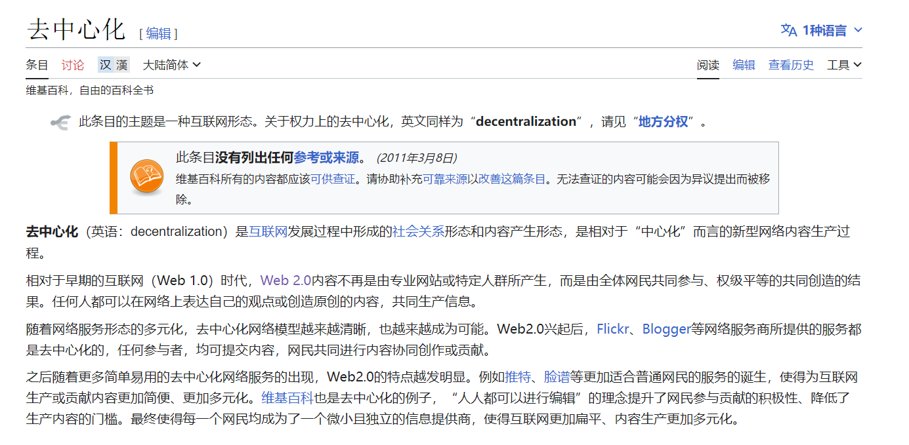

(｡･∀･)ﾉﾞ嗨！欢迎登录中子星~🫡 来了就是中子星人！🎉
1️⃣如果你还不了解 区块链、比特币、IC ，没关系。听我向你娓娓道来加密发展史！
2️⃣如果你只听说过 IC ，还没有详细了解 IC ，那你来对地方啦，在这里了解更多相关信息！
3️⃣想知道关于多米尼克的故事嘛？他在这里！
—〦———〦———〦———〦—————〦———→ ∞ 💥 区块链奇点
有时候，我真的为生活在这个充满奇迹的时代而感到震撼。仅仅几年前，我们还在嘲笑比特币，而现在，去中心化金融、以太坊和加密货币已经深入人心。而在这个飞速发展的新世界中，有一堆新技术，正以其独特的方式，为我们的生活增添色彩：互联网计算机，是新一代通用计算区块链。
起源于多米尼克 2015 年的想法：一个可以横向扩展的去中心化的世界计算机。 2018 年完成了雏形。并在深度优化底层协议后，于 2021 年上线。经过几年发展，它旨在成为一个去中心化的云服务，
底层做成了去中心化的云，上层应用则通过 DAO 控制权限，达到去中心化的目的。 可以部署各种 dapp ，全栈上链，无需使用其他中心化服务。
《互联网计算机漫游指南》的结构：
-
前半部分生动有趣，后半部分言简意赅
-
前半部分谈 IC 原理，后半部分论开发实战
为什么写这本书？
最初我了解 IC 后，收集整理了 IC 白皮书、Medium 、ICPL 论坛、IC Developer Forum 里的资料。给朋友讲了 IC 的架构以后，还跟她说正在整理关于 IC 资料的笔记，整理好就分享出来，没想到这一整理就是一年。在经历了天荒地老、沧海桑田、时过境迁的漫长岁月（拖延）后，加上自己后来学到的东西，终于凑出了笔记的初代版本。又经过一段时间的深入学习，我觉得把这些笔记分享出来比较好。做成一本开源书帮大家学习 IC 。也是为 IC 开发者社区做一点贡献。
零门槛学习区块链，抹平学习 IC 门槛。

为什么开源？
我很喜欢 Rust 开源社区，Rust 社区里有很多开源书、开源优质项目，给了我很大帮助。我从 Rust 开源社区学到了很多东西。像比特币、以太坊以及相关的项目也都有浓厚的开源氛围，我希望 IC 社区也涌现出越来越多的开源项目。供大家互相学习。
另外，IC 的内容更新迭代很快，开源大家一起贡献，内容保持新鲜不过时。
加入本书的开发者讨论群，勘误、修改、提出建议、共同为开源书贡献力量！
🌎 OpenChat, Telegram, Discord, Github

每个极客心中都有一个去中心化梦想。
这是一个关于多米尼克·威廉姆斯（Dominic Williams）的故事。
来自伦敦的极客😎
他喜欢把自己称作 “ JAHEBIL ” ，即 Just Another Hacker Entrepreneur Based in London 。
他写代码，创业，在伦敦做 “ 造梦家 ” 。
他勇敢又乐观，过着 “ 与世隔绝 ” 的生活，不喜社交，只关心他创立的公司品牌，重复两点一线的生活。即使每天工作 18 个小时、当时英国的创业环境也不友好，他也能哼出最快乐的小调。
英国的创业环境相对于硅谷来说，简直是地狱模式。硅谷一大批公司的成功造就了更多大笔的投资，投资又吸引了几乎全球顶尖的创业者去硅谷淘金，走向巅峰或失败。与人才济济的硅谷不同，在英国创业，多米尼克创立的每一个公司都能产生一些有限的回报，然后继续创办下一个公司，陷入循环怪圈：拼命工作，制造梦想，维持梦想，再制造下一个梦想 ...... 既要磨砺自己提升技术，又要使公司保持盈利。
厌倦了怪圈式的生活，无限循环只会耗尽他的热情。希望的嫩芽磨砂着多米尼克的心，2010 年，造梦家跳出怪圈，决定干票大的！
Fight My Monster ，一款大型多人在线游戏，也是儿童社交网络。他计划让全球各地的孩子都能联机玩这款游戏。玩家拥有自己的怪物，在回合制的战斗中使用不同的技能攻击对方。彼时，地球的另一端也在为洛克王国疯狂。
在比较了 HBase 、Cassandra 和其他数据库之后，多米尼克选择了早期的 Cassandra beta ，第一个分布式 “ 横向扩展 ” 的数据库。多米尼克为 Cassandra 构建了各种工具，包括第一个在可扩展的最终一致存储上运行原子事务的系统。他们是世界上第一个尝试把复杂 Cassandra 系统用于生产实践的团队。
多米尼克想用分布式系统把全球数百万用户联系起来，这在当时算不小的创新。经过几次试运行后，游戏在 2011 年新年正式推出，在短短两周内获得了 3 万名用户，并在几个月内暴涨到 30 万名用户。

团队成功以微薄的预算将业务规模不断扩大。不过他低估了一点，这种大型在线游戏需要更多专业人员，例如 flash 网页、数据库、网络、支付系统、运维、复杂性分析、卡通形象、音效音乐、动画特效、广告投放 ……
这笔庞大的支出比他之前的任何创业项目预算都多。很快用光了多米尼克和他朋友们的投资，不得不开始筹集额外资金。通宵工作换来了近乎完美的增长图表，“ 所以融资应该不会太难吧 ” 。
多米尼克向投资人介绍：“ Fight My Monster 发展迅速，很快将超过 100 万用户。我们认为工程师生活在一个激动人心的时代，互联网的基础设施已经成熟了。很多事情突然之间可以用新方式来实现了。这家公司最初是在非常有限的预算下自力更生的。您可能已经听说，Fight My Monster 正在扩张，现在很多优秀的工程师有机会加入。”
“ 我向您简述一下我们的架构方案以及我们为什么这么做。如您所见，它并不是一个传统架构。我们选择了一个简单但可扩展的三层架构，我们在云端托管。我希望这个系统工作 ...... ” 多米尼克继续声情并茂。
“ 既然你们已经有这么多用户了，也许应该尝试让更多用户付费。这样既能证明你们的赚钱能力，也能获得我们的投资。” 对方眉头紧蹙，明显不愿意投钱。面对如此疯狂的用户增长，伦敦的投资人甚至怀疑多米尼克造假数据。
这下，多米尼克的心像饼干一样碎成了片。多米尼克还是低估了融资的难度。
很快，片又变成了渣。此时竞争对手已经获得了另一些投资公司的资金，还阻止别的投资公司再给 Fight My Monster 投资。
难道是自己还不够努力？

由于 Cassandra 也处于早期开发中。2011 年底，因为 Cassandra beta 版代码里的 bug ，Fight my monster 的用户数据差点丢失。Cassandra 资深工程师和多米尼克团队经过好几天通宵达旦的工作才保存下来，最终化解了这毛骨悚然的事。
多米尼克太忙了。
他像一辆上紧发条的玩具车，在公司与住宅之间飞速穿梭：刚改完 bug 还没测试就要去会见投资人；连饭都顾不上吃，便埋头和工程师们开会讨论系统调整方案；从公司出来，马上又奔赴超市给妻子买圣诞节礼物 ......
团队在各方面都高度依赖他。他的工作量变得异常繁重，即使在硅谷这样容易获得投资的地方也很难看到。当时的多米尼克每天都工作 12 - 18 小时, 相比现在的创业公司这样的工作模式已经很少见了。他要管理业务、管理系统、写代码之间取得平衡，同时还要留出时间照顾个人生活。没多久，多米尼的妻子也适应了这种生活：白天她当游戏导演、策划，在优化游戏玩法、制定项目流程；晚上回家做饭、打扫房间，和多米尼克无缝配合。
多米尼克头像。

之后的生活更加努力了。很幸运，他在硅谷偶然遇到了愿意投资的公司。终于有投资人被眼前这个造梦家打动了。Fight My Monster 在筹集到资金后的几周内，用户数量迅速达到了 100 万。几个月后，多米尼克将公司迁至圣马特奥（旧金山附近的一个小镇）。
他去楼下喝咖啡，回来时备忘录里密密麻麻的记载着 ConcurrentHashMap 的常见问题以及解决方法；听极客们讲创业公司组件团队的经验；结交硅谷的风险投资人 ......
经过一年的发展，多米尼克在 2012 非常兴奋：
“ Fight My Monster 今天出现在了 TechCrunch 上，值得大声欢呼，谢谢！！！我们在努力工作，希望我们能够实现愿望。”
“ 如果您还没有玩过 Fight My Monster，我建议您试一试 – 网上真的没有什么比得上它了。我们正在英国孵化，体验该网站的最佳时间是工作日（放学后）下午 4 点至晚上 8 点或周末的白天。”
然而，挫折呼啸而至。在融资后，公司新入职的财务高管在战略上与原来的团队意见不合，分歧进而演变为决策失误。尽管用户依然在增长，但 Fight My Monster 的前进已经阻力重重，无力回天。
从财务回报来看，Fight My Monster 还是失败了，用户在 2013 年最终扩大到了 300 多万。
不过这段经历非常宝贵，弥足珍贵的部分是找到一群给力的同事，沉迷于自己热爱的那个分布式系统。多米尼克非常钦佩 Fight My Monster 的设计师 Jon Ball，Jon 总能用团队的设计系统造出一大堆好看的模型，之后又顺利创造了广告收视率最高纪录。还有 Cassandra 的工程师 Aaron Morton “ We work together，believe each other ” ，他和多米尼克一起打造了游戏背后的 “ 引擎 ” ——分布式数据库。
事后看来，多米尼克的 Flash 游戏当时已经风光不再。那时候人们在逐渐转向手机游戏、平板电脑这类移动端。2010 年，乔布斯宣布苹果手机不再使用 Flash ，原因是影响手机性能。因为 Flash 安全漏洞频发，BBC 发表一篇报道名叫《 Flash 还能活多久？》。BBC 话音刚落， Adobe 就宣布放弃 Flash 项目，改用 Animate 来制作专业动画。
多米尼克回忆自己那段经历时说：We could have succeeded but needed to move faster: if I had my time again, I would have relocated to The Valley very soon after the company started growing to raise money faster and gain access to a bigger pool of experienced gaming executives. 要是我们动作再快点，就能成功：如果在公司开始快速发展时赶紧融资，然后搬到硅谷，吸纳更多经验丰富的游戏高管。
工程师出身的企业家，企业家出身的工程师
虽说游戏业务日渐萧条，但在硅谷，一种陌生却强大的吸引力击中了他，多米尼克感到脑海中那片灵感的死水泛起了涟漪，很快。涟漪变成了翻滚的波浪。
时间倒回到 1998 年，多米尼克当时在伦敦的创业公司开发一个在线存储系统时，用 Wei Dai 的 Crypto++ 库做了很多事情。在 Wei Dai 的网站里，多米尼克发现了一篇关于 “ B-money ” 的文章，这当然是比特币的先驱之一。
多米尼克没有想到来自 98 年遇到的那篇文章，点燃了比特币这颗火种，并在多年之后串联起了他往后十年加密生涯的时间线。

在 2013 年多米尼克离开 Fight My Monster 之后，因为多年以前尘封心底的 “ B-money ” 迷上了比特币。

Wei Dai 在 B-money 里写道：
我对 Tim May 的加密无政府主义非常着迷。与传统上 “ 无政府主义 ” 的意思不同。在加密无政府主义中，政府不是暂时 “ 消失 ” 了，而是永远没有必要存在的。这是个人人平等的自治社区，是个没有暴力威胁的社区。因为这里利用密码学，使暴力破解从理论上就是不可能的，社区参与者的身份与他们的真实名字或物理位置没有任何关系 ......
还可以在这看看关于加密朋克的更多内容。
B-money 论述了一种协议，用于在匿名社区中提供货币交换和合同执行服务。 Wei Dai 首先介绍了一种不太实用的协议作为铺垫，因为它需要同步的、不可干扰的匿名广播信道。然后提出了一种实用的协议。在所有方案中，Wei Dai 假设存在一个不可追踪的网络，其中发送者和接收者仅能通过数字伪名（即公钥）识别，每条消息由发送者签名并加密给接收者。
Wei Dai 详细介绍了货币的创造、怎么发送、怎么防止双花、广播交易信息、让服务器们达成一致 ......
从 Wei Dai 的网站可以看出，他仍在密码朋克社区活跃。最近更新日期是 2021 年 1 月 10 日。

多米尼克说：“ 我喜欢算法和分布式计算，大学时就在这方面获得了很多奖项。更重要的是，我之前从未遇到过这样一个技术领域，它结合了金融、法律、政治、经济和哲学的思考，同时也有望推动世界做出重大变革。对我来说，这个新兴领域是梦想成真。我做出了一个更大的人生决定，将我的职业生涯重新投入到这个领域。”
2013 年，多米尼克开始全职炒币，顺便埋头学习一点共识算法的基础知识🤣😉。他感兴趣的是如何设计更快的共识机制，以与权益证明（PoS）架构配合使用。
多米尼克 2014 年的 “ 比特币 ATM 之吻 ” 。
2 月 7 号，全球最大的比特币交易所门头沟宣布破产。多米尼克发推特表示心爱的比特币跌了，心痛。
比特币暴跌至 666 美元。
学习之余，多米尼克不忘炒币。投资比特币给他带来不少安稳觉，现在他能安心设计共识算法了。至少再也不用日夜兼程、手忙脚乱地工作了。
后来多米尼克融合了源于以太坊早期的使命，犹如一幅千丝万缕的织锦。受以太坊启发，在多米尼克听说 “ 世界计算机 ” 的概念之后，这成为他的终极目标 —— 他认为也许这就是未来互联网的样子。
他认识到智能合约实际上是一种崭新的、极其先进的软件形式。他意识到如果能突破性能和扩展性的局限，那么无疑几乎所有东西终将在区块链之上重构。因为智能合约运行在开放的公共网络，优于私有基础设施，它们天生防篡改、势不可挡，可以在一个网络中互联，使每个合约同时成为多个系统的组成部分，提供非同寻常的网络效应，并可以自治运行，继承区块链的特性等等。
其中的大部分细节早已随着时间的不断推移，而隐去在岁月的长河之中 —— 虽然并未过去多久，但在区块链日新月异的变革进化中，这段时间仿佛已经历了一生的波澜壮阔。
多米尼克的研究重点是在协议和密码学上，这些协议和密码学如同一把干柴，重新燃起造梦家内心的小火苗。多米尼克相信这些协议和加密算法可以改变世界。他取了去中心化（Decentralized）的 “ D ” 和无限（Infinity）的 “ finity ” ，组合在一起成为 “ Dfinity ” 。Dfinity 旨在创造一个具有无限规模的去中心化应用程序基础设施。
多米尼克从中国回到加州山景城后发推特说：China Loves Blockchain :) 。
和以太坊一样，多米尼克也在中国融到了投资。原因很简单，硅谷很早就把资金投入了比特币，并获得了巨额回报，他们不怎么关心 “ 山寨币 ” （世俗观点认为，除比特币之外的币都是 “ 山寨币 ” ，即基本模仿比特币、稍稍改进过的币）。
接下来我得好好介绍介绍 Dfinity 团队到底是干啥的了。
点. 线. 面. 体!
我们知道比特币是区块链的先驱。如果你还不了解什么是区块链，先看看这里。
比特币本身是在加密朋克（cypherpunk）对去中心化货币项目的长期追求中慢慢出现的。
它创建了一个开放的记账系统：世界各地的人都可以随时加入或退出、靠共识算法让大家的数据保持一致、一个共创共建共享的去中心化网络。人们只要下载比特币软件（下载源代码并编译也行），然后在自己的机器上启动运行就可以加入比特币网络。比特币会让全球的电脑达成一致，共同记录每一笔转账交易。有大家的记录，便有了传说中区块链 “ 不可篡改 ” 的特性，实际上就是少数服从多数，没法跟所有人耍赖。
在传统网络架构中，不分青红皂白，用户数据被一股脑塞进服务器里。用户不是真正拥有自己的数据，因为谁控制着服务器谁说了算。如果我们可以把这种一对多的关系看成 “ 点 ” ，星罗棋布，分散在世界各地。用户的数据流进一个个点里，乐此不疲。
那么比特币网络就可以看成 “ 线 ” ，它把孤立的点串联成线，使互联网向更公平更开放发展。比特币做的是把世界各地的电脑组合在一起，形成一个庞大的 “ 世界账本 ” 。那如果想换一种功能，记点别的东西怎么办？模仿比特币重新做一个！
在比特币诞生 6 年后，一个可以在去中心化网络上部署软件的 “ 面 ” 慢慢崭露头角，它叫以太坊。以太坊不是模仿比特币的世界账本。以太坊创造了一个共享、通用的虚拟 “ 世界计算机 ” ，每个人的电脑里运行着以太坊的虚拟机。它与比特币账本一样不可破坏、不可篡改。大家都可以编写软件部署在虚拟机里，只要交一点以太币给矿工就行。（现在已经没矿工了）
部署上链的软件化身自动售卖机，永久存储在这个分布式去中心化网络中，公平公正的判断每一笔交易是否达到条件。加上区块链永久存储的特性，便有了 “ 代码即法律 ” 一说。在这里，软件有另一个名字： “ 智能合约 ” 。
不过，咳咳，打断一下。想法很美好，现实也很残酷。早期以太坊社区中确实有实现 “ 世界计算机 ” 的想法，建立一个分布在世界各地的去中心化基础设施。但是以太坊的架构有一些局限性，使得它执行交易的性能较低、ETH 涨价导致高 Gas 费、扩展性不佳、不能大量存储数据等等。
多米尼克满怀期待地希望自己的研究成果能为以太坊项目所用。他的工作出发点并非图财，而是对分布式计算长久以来的热情，已升华为对区块链的无限向往，让他难以想象还有任何事物能超越眼前的激情与决心。很快他便成为了以太坊圈子里中的熟面孔，经常在各种会议里讨论在下一代区块链中，应用新密码学与分布式计算协议的种种可能。
一种解决方法是在原来的基础上改进：把以太坊的共识由 PoW 转为 PoS（Casper）、构建分片链（Shard）或者侧链；另一种解决方法就是推倒重来：重新设计一种可以高速处理信息、大规模存储数据的架构。
不断改进、扩容、兼容以太坊的老架构，还是从头开始设计一个真正的 “ 世界计算机 ” ？
当时，人们虽对他的想法抱有兴趣，但积重难返的是，他的设想过于复杂且遥不可及，花多少时间都难以实现、困难重重。即使后来以太坊没有采纳多米尼克的想法，但他仍然感谢像 Vitalik 和 Joe Lubin 这样的以太坊早期成员，在许多初期讨论中耐心倾听了他的想法。
最后，多米尼克做了个困难重重的决定，选择从头开始设计一个真正的 “ 世界计算机 ” 。
当我们试图解决一个特定问题时，最终常常发现关键在于创建强大的 “ 工具 ” 。有个更先进实用的工具，并不断维护和改进，逐渐变成更加强大的工具，能解决很多有价值的问题。一个普遍的商业现象是，为了实现某个产品或服务，开发了一种工具，后来发现这个工具有更广泛的适用性，然后工具本身演变成了更大、更成功、估值更高的产品。
亚马逊的云服务最初是为了解决黑色星期五之后的计算资源浪费问题，后来成为全球最早、最大的云服务提供商。同样，SpaceX 解决了火箭发射成本过高的问题。多米尼克为了彻底解决扩展性的问题，决心重新设计共识算法和架构。
机会终于来了。2015 年 11 月，伦敦。
多米尼克在 devcon one 上讲述了他研究的共识算法。

不是，放错图了。下面这个是 IC 。

交谈中多米尼克发现，之前坚决拥护比特币的顽固派对以太坊的概念非常感兴趣。这使他更坚定地相信可信计算（Trusted Computing）的前景。
这是比以太坊更宏伟的目标。多米尼克希望做一个由服务器组成的公共网络，提供 “ 去中心化的云 ” —— 一个可信计算平台。软件在去中心化云上部署运行。
多米尼克做的是重塑一个完全去中心化的基础设施，也可以理解为下一代互联网基础设施，还可以理解为结合区块链的去中心化可信计算平台😉。所有能在区块链上跑的都将由区块链来跑，包括 Web 。建立一个以互联网服务为核心的去中心化社会系统。
简单来说，就是：
传统防御系统：主要由防火墙、入侵检测、病毒防范等组成。传统网络安全的原理是被动防御，往往都是 “ 救治于后 ” ，例如当应用出现病毒，就要借助杀毒软件查杀。而此时企业或多或少已经产生了损失。
可信计算：基于密码的运算与防护并存的安全技术，保证全程可检测可监控。可信计算的原理是主动出击。由于整个链路从应用、操作系统还是硬件，必须经过验证。这就大大降低了病毒、网络攻击的概率。
区块链都有一个叫共识算法的东西。他负责协调网络中的节点。共识算法可以在网络中让大家的信息达成一致，因为这是一个所有人随时随地都可以加入或退出的网络，而且不知道有哪个节点会故意捣乱。有了共识算法，网络中即使存在三分之一的捣乱节点，其他的节点也照样能正常达成共识。（不同共识算法的抵抗能力不一样）
而去中心化平台不止涉及代币之间的转账交易，还涉及用共识算法建立起一道屏障，把不怀好意的家伙隔离在外面。然而效率与去中心化不可兼得，很难建立一个完全去中心化的系统：既要保护正常的节点们达成共识，又要在一堆节点之间协调、同步数据。多米尼克需要把可信计算和区块链融合在一起，让世界各地的服务器形成一个无限、开放、高性能、强一致性、可扩展、可以大量储存数据的区块链网络，不再需要防火墙保护。
对多米尼克来说，未来区块链就是互联网，互联网就是区块链。互联网不再是简单的把机房服务器之间连接到用户，而是先又世界各地的服务器组成一个可信、安全的区块链网络，然后再在上面部署 Dapp ，服务用户。多米尼克希望银行金融、共享经济（例如 Uber）、社交网络、电子邮件和搜索引擎之类的东西都能转移到这样的网络上。
从现在来看，当年以太坊没采纳多米尼克的意见是对的。因为以太坊当时专注于工作量证明（PoW）的同时也在探索使用权益证明（PoS）的升级路径。他当初描绘的蓝图太过远大，没法在有限的时间内实现。要实现他的构想，需要一个非常庞大且出色的团队经过不懈努力、研究出新的密码学技术等等。
2016 年秋天，多米尼克宣布自己以 “ 去中心化冒险家 ” 的身份回归。理论搭建完成，造梦家的冒险之旅，正式开启！
Dfinity !
IC 为了实现 “ 世界计算机 ” 的想法，重新设计了区块链架构，研发了更高效的共识，并配套创新的密码学组合。目标是解决传统区块链架构中速度、效率和扩展的限制。
多米尼克左手忙着和技术团队搞研究，右手写团队战略规划，嘴巴还得去各种区块链论坛介绍项目。

这些年来，多米尼克已经与其他区块链团队分享了许多关键密码学技术，比如 VRF 的应用，现在已经有很多知名项目用了（比如 Chainlink 等等）。💡
2017 年 2 月，多米尼克和 V 神以及众多大佬的圆桌论坛。Vitalik Buterin （左一），多米尼克（左二），Timo Hanke（右一）。
Ben Lynn （左二 / 红色短袖）正在演示一种屌炸天的技术：阈值中继（Threshold Relay)。它可以大幅提升区块链的性能，快速生成区块🪄。

顺便提一嘴，工程师 Timo Hanke （左三 / 中间）之前是亚琛工业大学的数学和密码学教授。2013 年创建了 AsicBoost ，将比特币开采的效率提高 20 - 30 ％ ，现在已成为大规模挖矿作业的标准。
Ben Lynn 是 BLS 签名算法的创造者之一。他的 “ L ” 就是 BLS 中间那个 “ L ” ，BLS 来自三位创造者的名字首字母。从斯坦福博士毕业后他在 Google 工作了 10 年，在 2017 年 5 月加入 Dfinity 。如果你没听说过 BLS 算法，那你一定读过早些年 Ben Lynn 火遍全网的 《Git 魔法》。

2021 不是平凡的一年。
5 月 10 日，IC 主网上线。

上图展示了对比其他区块链的性能、存储数据费用和能耗。
IC 主网上线时，已经有超过 4000 名活跃的开发者了。下图是对比其他区块链的开发者增长图。

IC 有许多创新，比如可以无限横向扩展，通过 Chain Key 赋予了 IC 网络可以无限扩容的能力。由一个 DAO —— 网络神经元系统（Network Nervous System，NNS）管理网络的拆分和组合。所以这就需要一个不同寻常的共识算法了， IC 的共识只对消息排序，让副本按照相同的顺序执行消息。依靠 BLS 阈值签名算法和非交互分布式密钥生成（DKG）产生的随机数选择谁出块，共识速度很快。也就使得 IC 有了更高的 TPS ，做到了毫秒级查询、秒级更新数据，Dapp 的使用体验相对其他公链丝滑不少。
IC 的目标是去中心化的云服务，为了能让 Dapp 全栈部署上链，所有 Dapp 都安装在一个虚拟化容器里。IC 上的 “ Canister ” 相当于以太坊的智能合约，Canister 里可以存储数据，部署代码。并且开发者可以通过后端虚拟容器自动生成的 Candid UI 进行测试，不用一行代码。客户端直接通过 https 访问部署在 IC 上的前端页面以及智能合约。虚拟容器就像小型服务器一样，给每个 Dapp 提供了自己的链上存储空间，还能支持从智能合约直接调用外部的 https 服务器，无需预言机。这是区块链历史上第一次实现了智能合约能够直接与外部的 https 服务器进行通信，并在智能合约进一步处理消息后做出响应。以太坊和特币一样，也接受了 “ 代码即法律 ” 的范式。这也就意味着没有任何治理来规范平台的使用或底层网络本身，IC 的 “ 智能合约 ” Canister 不是不变的，它可以保存数据并更新代码。
也是历史上第一次在底层通过密码学直接集成了比特币和以太坊（不是跨链桥）：IC 在协议层面与比特币直接集成。IC 上的 Canister 能直接在比特币网络上接收、持有和发送比特币。也就是说，Canister 可以像用户的钱包一样持有比特币。Canister 能够通过阈值 ECDSA 的 Chain Key 签名协议安全持有和使用 ECDSA 密钥。相当于赋予了比特币智能合约的功能！
苏黎世办公室演算集成比特币的白板。👇

既然数据都存在链上，那就要有足够低的 Gas 费：1 G 1 年 5 美元！Gas 光低还不够，为了用户能无门槛使用 Dapp ，IC 使用了反向 Gas 费模型，Gas 由开发团队支付。Dfinity 团队还把 Gas 锚定 SDR ，变成了不随币价波动的 稳定的 Gas 。IC 有一个统一的去中心化匿名身份：互联网身份（Internet Identity，ii），作为 Dapp 的登录入口，加入网络神经系统参与治理 ......
IC 架构和共识也是独领风骚。IC 理论上有无限高的计算和存储，只要不断加服务器节点进来就行。经过改良的共识有点像实用拜占庭，又更复杂，因为和目前已有的共识都不太一样，多米尼克给它起了个名字叫 “ PoUW ” 共识，Proof of Uesful Work 。BLS 阈值签名方案的 VRF ，产生真正不可预测的随机数，而且可以让大家都来验证这个随机数不是别人伪造的。抗女巫攻击的边缘节点，分层的架构，随机指定的出块，无需多言，就一个字，妙。
根据 GitHub 和 Electric Capital 的统计（2023），IC 拥有最活跃的开发者社区。🔝💥并且还在快速增长。
主网上线三个星期，IC 快要达到 3000 万个区块时，办公室墙上的照片。

2021 年 7 月，有许多新的 Dfinity 成员在新冠大流行期间通过视频会议面试加入团队，还从未见过面。这天一小群人来到位于苏黎世的办公室 face to face 。

多米尼克的博客里写过 Dfinity 的两方面愿景：
一方面，许多传统的垄断性技术中介，如 Uber 、eBay 、社交网络、即时通信甚至搜索引擎，可能会被重新设计为 “ 开源企业 ” ，使用自主软件，使用自己的去中心化治理系统来更新自己。
另一方面，我们希望看到企业 IT 系统的大规模重新设计，以利用区块链计算机提供的特殊属性，并大幅削减成本。最后一点是不明显的，因为区块链计算机上的计算要比亚马逊网络服务等传统云计算昂贵得多。但大幅节省成本是可能的，因为运行企业 IT 系统所涉及的绝大多数成本来自于支持人力资本，而不是计算本身，而 IC 将使创建涉及人力资本少得多的系统成为可能。
图片来自 2021 年 10 月，上海。

关于 IC 数据的实时统计 。
2022 年 7 月 14 日，在苏黎世的街头咖啡馆。多米尼克和他的小伙伴正在等待 IC 的第 1,000,000,000 个区块打包。

Dfinty 位于瑞士总部的新办公楼。

多米尼克离开办公室时，拍了几张食堂墙上的壁画，由才华横溢的 IC NFT 艺术家创作。

多米尼克吃着蛋糕，唱着歌，一不小心又写了几百行代码的小项目。

工作之余，吹拉弹唱一样不能少。
说了这么半天，IC 到底解决了什么问题呢？总的来说，它解决了传统区块链的 TPS 太低、扩展性太差、Dapp 仍然依赖一部分中心化服务。
比特币是一个去中心化记账本。
以太坊创造了去中心化计算机。
Cosmos、Polkadot 实现了区块链的可组合性和可扩展性。
Internet Computer 正在打造一个高度可扩展、超高 TPS 的去中心化云服务。
扩展性的关键在于接近于零的边际成本。Polkadot 的可扩展是建立在软件工程师的开发上的，而 IC 的扩展性是在底层自动完成的。使得上层做应用的团队在 IC 上开发成本降低不少。
想做出高扩展性、高性能的公链：
-
第一要在规划上就要重视扩展性和性能，方方面面的设计布局上都是以尽快实现扩展性和 TPS 为重。
-
第二是需要有信心和实力，坚持自己的路线，直到生态爆发的那一天。在此之前，需要忍受短期内其他竞争对手的打压，需要熬过长时间的现金流的压力，需要无视世俗的不理解。
专注底层基础设施的研发，直到各种各样有创意的应用出现，使生态圈的参与者数量增加。数量的增加导致新的创意和应用进一步涌现。这样就形成正反馈循环，使生态圈不断自发的更加繁荣更加复杂化：
扩展性 / 零边际成本 / 开放系统 → 应用数量增加 → 各种连接指数倍出现 → 有价值的创意涌现 → 形成应用 → 系统复杂化 → 数量继续指数倍增加 → 正反馈循环 → 生态大繁荣。
所有的技术开发的选择都有优缺点。根据局部片面的技术优缺点，来断定谁最终会胜出，是幼稚的和危险的。最终的区块链上的赢家，将是生态系统最丰富的，开发者，软件应用，和终端用户数量最多的。
未来区块链的关键词是：零延迟，零边际成本，开放的生态，和它带来的巨大规模效应，极低的单位成本，极复杂丰富的生态。
技术革命带来的产业巨变，对于大多数普通人来说，是突然的。但在这突然的背后，是几年，甚至十几年的渐进的演变。
一旦影响产业格局的几个关键参数越过了临界点，生态进入大繁荣时期，变革是极其迅速的。其影响之深远，大多数人完全措手不及。变革结束之后，产业又进入一个长时间的新的平衡。这之后的一段时间内几乎没有竞争者能追上行业里的领导者了。
经过 2 年的发展，IC 生态系统已经涌现出许多优秀的应用。前后端全部上链，完全不依赖中心化服务的 Dapp 。
在社交类 Dapp （SocialFi）方面，有 DSCVR 、Distrikt 、Mora 、Openchat 等。DSCVR 是一个端到端的去中心化 Web3 社交媒体平台。Distrikt 是一个 Web3 微博客平台，使大家可以在去中心化网络中分享内容或参与讨论。Mora 可以给每个用户部署自己的智能合约，来存储用户的博客数据。Mora 使用户在区块链上发布博客，永久存储自己的数据。这里有关于 Mora 的更多内容。Openchat 提供了去中心化的即时通讯服务，是个去中心化的聊天 Dapp 。
在去中心化金融（DeFi）领域，IC 生态也有一些体验很好的 Dapp ： ICLightHouse 、InfinitySwap 和 ICPSwap 等应用。2022 年是中心化机构信任倒塌的一年。3AC 、Celsius 、Voyager Digital 、BlockFi 、Babel Finance 、FTX 等头部对冲基金、借贷平台和交易所，在这一年纷纷战败破产。不仅如此，DCG 灰度、Binance 币安和 Huobi 火必等巨头也深受不同程度的 FUD 之苦。中心化机构没法做到彻底透明，它们的信任依赖于创始人的声誉和公司的品牌等外在形象。而去中心化则以 "code is law." （法则即代码）和 "Don't trust, verify!"（不要相信，请验证！）为基石。不破不立。在这个革命性的理念下，中心化的神话彻底被打破，为去中心化的未来铺平了道路。去中心化的金融服务，让用户可以进行无需中间人的借贷、交易和资产管理等操作，增强了金融系统的透明度和可访问性。
AstroX ME 钱包是一款备受关注的钱包应用。ME 钱包可以安全可靠的存储和管理数字资产，让用户能够方便地管理他们的 IC 代币和各种数字资产。
还有去中心化的 NFT 市场 Yumi 。用户可以创建、购买和交易数字艺术品，为艺术家和收藏家提供了全新的机会和市场。
IC 生态系统已经涌现出许多令人印象深刻的 Dapp ，涵盖了社交、金融、NFT 市场、AI 、元宇宙和钱包等不同领域，提供了丰富多样的体验和服务。随着 IC 生态系统的不断壮大和创新，我们期待更多优秀的应用出现。还有更多有趣的项目在官网等你发现。

瑞士现在是响当当的 “ 加密谷 ” 了，世界上很多知名区块链项目都在瑞士诞生。Dfinity 是这里第一个完全非营利性的基金会。
多米尼克组建了一支非常强大的区块链研发团队，包括密码学、计算机科学和数学教授、博士和博士后、加密货币专家、高级工程师和专业的管理人员。
互联网计算机是顶级密码学家以及分布式系统和编程语言专家五年研发的结晶。Dfinity 目前拥有近 10 万次学术引用和 200 多项专利。
我认为未来 10 年区块链仍将是最有趣、最有影响力和发展最快的技术领域之一。🚀🚀🚀
这就是我要讲的关于多米尼克的故事了，不过，多米尼克自己的故事远未结束，甚至才刚刚开始 ......
多米尼克自己说过：Our mission is to push towards a blockchain singularity, where the majority of the world’s systems and services are created using smart contracts, and run entirely on chain, a transformation that will also take years. 我们的使命是推动区块链奇点，世界上大多数系统和服务都是使用智能合约创建的，并完全在链上运行，这一转变也需要数年时间。
谁能想到，一篇来自遥远的 1998 的博客，激起了世界往后二十年波澜壮阔的 “ 加密运动 ” ，贯穿了多米尼克心中追求无限分布式的热情 ......
那，是一片新天地了。
后记
写完结尾，我察觉隐隐有些响动。簌簌簌，簌簌簌，由远及近，这时整间房变得无声无息。那声音若有若无，不知从什么地方响起，方向也搞不清楚，也许是电脑风扇，也许是窗外树枝，也许只是脑子里的幻觉。
那声音越来越清楚。那声音，听起来似乎是电脑里传来的？
我赶忙把耳朵贴到电脑主板上。不是。我又看向窗外，难道是？窗外一切正常。
那声音又来了，更清楚了，是嗞啦、嗞啦、嗞啦！没错！
忽然，时间暂停了。周围的一切都暂停了。神经元膨胀、崩裂，释放出的信息素又催化了其他的神经元，我的头不受控制的抖动起来，又突然膨胀，眼珠子大的像鼠标，耳朵拧成了麻花 ...... 那声音似乎伴随着玻璃破碎的声音，鞋底敲地的声音，鸟鸣犬吠的声音 ......

脑子闪过一道白光，很快，白光扩散成一白茫茫片。周围是蓝色的，下面有密密麻麻的方块和线条；一个点亮光突然闪耀、扩大，吞没了一切；周围还是蓝色的，下面是白色的。
现在，我什么都不记得了。
也许是梦吧。
也许是一种改变世界的东西。

就写到这里吧，该睡觉了，晚安。
对了，文章的结构是这样的：
如果有不了解的地方可以跳出故事主线看看。
接下来，了解一下 IC 的技术架构吧 ~
未来已来🧐
我读了很多网上关于区块链的看法，然后总结成了这篇文章。客观讲述了我阅读了大量博客之后对区块链的看法以及对未来互联网技术的想法。
农场里的火鸡
现在的区块链很火。好像所有人都在买加密货币。
四年一度的牛市，数字黄金比特币，火爆的 ICO ，涨幅百倍的 meme 币 ...
等等，让我看看日历，现在是 2023 年 3 月 ... 似乎又快到牛市了，如果牛市依然如期而至的话。上次是 2020 年，这次也许是 2024 年。
但是先别高兴，让我来讲个故事：
一个农场里有一群火鸡，农场主每天上午 11 点来给它们喂食。火鸡中的一名科学家观察这个现象，一直观察了近一年都没有出现意外。
于是，它也宣布了自己发现的伟大定律：每天早上 11 点，就有食物降临。第二天上午 11 点，农场主又来了，火鸡们又得到了食物。于是纷纷认同了科学家的定律。
但到了感恩节这天上午没有食物降临，农场主进来把它们都抓出去杀了。
最初是英国哲学家罗素提出的，用来讽刺不科学的归纳推理，滥用归纳法。
我们希望牛市能如期而至，但不妨先放下牛市会不会来这个问题，从历史中找找类似的情况看看是什么结局：
九十年代末互联网泡沫时，市场出现过多次的大跌大涨。96 年，97 年，98 年都有过若干次反复。最后一次也是最大一波的上涨，从 98 年 10 月到 2000 年 3 月，纳指从 2000 多点一路涨到 4900 点左右。这会慢慢给市场内的投机者心理上一个极为坚定的信念：不管跌多惨，最后都会涨回来的。

当人们经历过几个牛熊周期，更加强化了这种坚定的信念，等真正的漫长的熊市开始时，他们继续按照自己总结的经验继续加仓抄底 ...

当泡沫破裂时，股价在几天内暴跌超过 50％ ，大部分股票最终跌去 99％ 直接归零。许多人靠加杠杆而迅速暴富，在熊市中押注全部的身价抄底，最终输得一干二净。
互联网的本质是把信息搜索和交互的成本降到接近于零，并在此基础上催生了很多扩展性极高，利润极高，垄断性极强的传统经济人无法理解的新模式。但九十年代很多项目和创意，在硬件软件基础设施还没有到位，个人电脑和宽带互联网还未普及时就强行推出，过于超前，因此悲催地失败。比如 1996 年创立，2001 年破产，累计融资约八亿美元的 webvan 。
2001 年互联网泡沫破灭后，随着基础设施的成熟和各种成本的下降，后来涌现出来的新应用（ taobao， youtube， netflix， facebook， amazon， aws， iphone，uber，tiktok 等等）。其发展势头之猛，规模之大， 又远远超越悲观者的想象。

同理，大量过于超前于基础设施、无法对终端用户直接产生价值的区块链项目，最终会凋零，催生各种悲观负面情绪。
但基础设施成熟后，许多当年吹的牛，做的梦，最终会被在正确时间正确地点出现的创业者实现。
2014 年比特币被大众视为互联网支付领域时，实际上比特币的吞吐量根本不支持在超市买菜时付款。以太坊的早期叫称自己为 “ 一个世界计算机 ” 。起初有许多人认为以太坊可以取代比特币，因为它有可编程的特性。但这其实是一种错误的假设，这也很容易导致另外一个错误的观点：某某某下一代智能合约平台是以太坊杀手，只是因为它提供了更多的可扩展性。
同理，就像以太坊没法取代比特币一样。接下来的 “ 云服务 ” 区块链也不太可能杀死以太坊，而是扩展相邻的可能性并承载不同的应用程序，利用它们独特的特性。这不代表比特币和以太坊已经永久确立了它们的地位。比特币和以太坊也有它们各自存在的问题。只是更先进的技术并不一定会替代原有的技术，而更可能是创造一个复杂的、专业化的技术栈。
今天以太坊的用途已经不是不是处理大型通用计算了，而是作为一个久经沙场的、缓慢而安全的计算机，用于基于代币的应用程序，如众筹、借贷、数字公司和投票的世界会计系统。即使以太坊网络有些拥堵、Gas 费有亿点贵、还要等待几分钟的时间才能完成交易，可这些 Dapp 也依然能与银行、股东投票、证券公司抗衡。
因为这些智能合约能让陌生人之间可以完全不通过中心化机构来自由交易，并让中心化机构的庞大人员编制变得多余。以太坊上的自动做市商Uniswap ，只有二十多名员工，目前市值约两百亿美元。与之相比，纽约证券交易所的母公司 Intercontinental ，将近九千名员工，市值六百多亿美元。著名区块链投资者 Raoul Pal 估算，区块链的全球用户数，目前每年增长 110% 以上， 而 1997 年全球互联网用户数增长只有 63%。即使按照 1997 年以后的互联网发展的轨迹，区块链全球用户数，也会从现在的大约两亿，增长到 2030 年的四十三亿左右。
区块链技术的本质是把全球个体经济人和机器之间的价值交换的壁垒和成本降到几乎为零。
但是以太坊目前达不到这个愿景，最终还是需要各种基础设施的成熟和普及。
想象一下，如果有区块链技术成功解决了可扩展性、安全性和易用性等问题后，将会呈现怎样的面貌。最终可能只有寥寥几个公链能代表未来，走向世界，承载全球各地的去中心化梦想。
区块链就站在现代社会三大主题的交汇点上：技术、金融和民主。区块链是利用加密和计算的进步，将金钱和我们日常生活的许多方面 “ 民主化 ” 的一种技术。它的目的就是要改善我们的经济运行方式，让我们更容易控制自己的信息、数据，最终掌控我们的生活。在现在这个科技时代，这就是民主该有的样子。我们时常听人们抱怨科技巨头（像苹果、谷歌和 Facebook）对我们隐私数据的窥窃。解决这个问题，把权力还给人民是最好的办法。
马车夫与司机
历史是不断轮回螺旋上升的：
现在人人都可以开车，只要有钱买车就行。🚗
以前人人都可以骑马，只要有钱买马就行。🐎
所以车只是这个时代的代步工具，以后可能就很少有人会开车了。类似于现在人们骑马，只能在马场和一些景区骑到。自动驾驶技术成熟之后完全不需要人们开车，会开车的人也就越来越少。想开车得去赛道上体验驾驶的快乐。
古代有普通马、汗血宝马、战马、赛马场。
现在有普通车、超级跑车、坦克、赛车场。
马并没有消失，只是换成了车。
汽车出现之初，因为噪音大，速度慢，容易出车祸，经常熄火抛锚，缺少加油站，缺乏泊油马路等等而长期被鄙视憎恶。后来等到马路修多了，加油站多了，车的质量提高了，交通规则推广了，马车早就被淘汰了。
现在的特斯拉也是同样的道理：耗电快；着火；自动驾驶开进海里，开上树；没充电桩；刹车失灵被媒体渲染成笑话，啊不是，现在成笑柄和梗了。等电池续航提升、自动驾驶算法完善进步、充电桩慢慢普及、充电时间越来越短的时候，还有油车什么事😄。而且电能还会随着技术进步越来越便宜的，光伏、风电、地热，直到未来实现可控核聚变，用之不竭。
另外，媒体为了吸引眼球的负面报导也是阻碍人们客观认识新事物的障碍之一。为了吸引人们关注，媒体选择性报道负面消息的次数远远大于正面报道，对新生事物尤其如此。iphone 出来后，媒体开始是嘲笑果粉脑残，然后是卖肾换手机，又攻击手机信号不好，之后而又渲染因为 iphone 抢劫、谋财害命的孤立事件。每次特斯拉着火、刹车故障、出车祸，总有人像打了鸡血一样开心，而没有客观的和别的汽车的事故率进行横向比较。人们诅咒共享单车的各种问题时，却没注意共享单车正在改变都市人的出行习惯，减少汽油消费，甚至影响房地产价格。
负面消息的长期轰炸，使大部分人根本不可能去真正钻进去，研究新事物背后的整套逻辑。因为某个技术的现在的缺点局限，断定它没有前途，就像因为害怕触电的危险，而继续烧煤油灯一样。可是煤油灯也有着火的风险啊喂！实际上这不是怕触电，只是害怕陌生未知的新技术罢了。如果我们能保持客观和好奇心，会对世界产生很多不一样的看法。尤其是在现在技术发展日新月异的时候。
同样的，很多人不了解 IC 的底层运行原理，不知道 Chain Key 密码学的创新，不知道 IC 解决了扩展性的问题，不知道 BLS 阈值签名，不知道 IC 的共识算法。很难真正理解 IC 的概念，因为这是一个全新的，没有先例可以类比的复杂系统。即使是有计算机背景的人，要全面深入理解所有的概念，也得花几个月的时间深入各种论坛讨论、收集资料。而且每天还有新的发展，要想掌握，没有捷径。如果只是图一时之利，盲目跟风，追逐热点。在 ICP 价格高点投资了 ICP ，然后因为亏损过大和不理解本质而给这个东西贴上一个标签 “ 骗子 ” 、“ 垃圾 ” 等等是一个很自然的事。所有亏钱的散户都很伤心，逐渐变成失望，并在社交媒体上加入 FUD 大军，导致更多不了解 IC 的人产生偏见。更重要的是，很多时候人们都不知道那些因为无知而错过的信息。个体偏见普遍存在，每个人学习生活经历不同，思维模型不同，会自动忽略掉自己不感兴趣或者不理解的东西。
更多相关内容延申阅读：Were attacks on ICP initiated by a master attack — multi-billion dollar price manipulation on FTX? 、How The New York Times promoted a corrupt attack on ICP by Arkham Intelligence 、专访DFINITY：ICP是SBF资本运作的受害者；Web3的很多未来都在亚洲 。
人类社会的生产力在循环中前进：
一个新技术产生 → 少数人先接触试用 → 雇佣更多人研发维护这项技术 → 组织（公司 或者 DAO）发展壮大 → 越来越多的人开始尝试使用它，提高生产力 → 直到另一项新技术萌芽，尝试使用更先进更前沿的方法解决问题，便利生活 → 旧组织逐渐走向衰败死亡（变了死的更快，不变只是等死，也有少数组织能成功改革） → 大批雇员失业，并加入到新工作中 → 新组织继续发展壮大 ...... 直到有一天！人真的什么都不用干了，完全自动化、物资充足 ...... 人生只剩下享受 ~
区块链技术的精髓在于，创新可由人人开展，无需权威机构的审核和批准。任何人都可以通过区块链技术保护自己的权益，免受强者的侵犯。在密码学面前人人平等。只要妥善保管好私钥，个人资产就可完全由自己掌控，不依赖任何人托管。
Visa 卡的 TPS 是 2400 ，比特币是 7 。即使是比特币这么慢的速度，依然受到了全球各地爱好者、组织、一些国家政府的支持。如果能把以前的中心化应用，比如 Telegram 和 Dropbox ，转移到去中心化的区块链上，那得是啥样的情景？生产力肯定得提升一个档次。
尽管区块链技术在过去几年中得到了广泛应用和发展，但它们仍然存在一些明显的缺点。其中一个主要的问题是可扩展性。随着区块链技术的广泛应用，如数字货币、智能合约、供应链追溯等，区块链网络中的交易量和数据量迅速增长，这给区块链的可扩展性带来了严峻挑战。当前的区块链架构面临着吞吐量低、延迟高等问题，难以支持大规模的应用场景。这是因为，传统的区块链技术采用了分布式共识算法，需要所有节点都参与到区块验证和生成的过程中，从而导致网络的吞吐量和延迟受到了限制。此外，由于区块链数据存储在每个节点上，数据同步和传输也会成为可扩展性的瓶颈。
因此，解决区块链可扩展性问题已成为当前区块链技术发展的重要方向之一。研究者们提出了许多解决方案来提高区块链网络的吞吐量和延迟性能，比如分片技术、侧链技术、Lightning Network 等。这些技术都旨在将区块链网络分解为更小的部分，方便分别处理交易和数据，并且可以通过跨链通信协议进行互操作。通过这些创新技术，可以提高区块链的可扩展性，更好地满足实际应用场景的需求。
区块链一旦解决了扩展性、吞吐量的问题，实现底层技术突破，就可能成为互联网的新基础设施，重塑未来互联网格局。
Dfinity 就是选择了重构区块链底层技术，创新研发更优秀的去中心化网络服务，并孕育更多 Dapp，从而形成全新的去中心化互联网生态。
这个领域是如此之新，涉及的知识面要求是如此之广，没有谁是真正的权威。成功来自全方位的观察，不断的学习研究。这样才能看到大多数人看不到，理解不了的东西。
继续阅读多米尼克的故事。
要是说起这个，那得从比特币之前说起。
如果你还不了解比特币，可以先看看这个。
比特币是完全虚拟的。没有任何实际价值，亦不能创造任何价值，只是一种虚拟币，人们为什么疯狂送钱购买比特币？不妨再深入一下，为什么会有比特币这种东西？
比特币是在 2008 年金融危机的背景下诞生的。金融危机波及全球，哪个国家都不能独善其身，法币变得不再可靠。想象一下这背后的关系，政府以国家信誉为背书，发行法定货币。但世界并不总是安宁稳定的，战争、自然灾害、金融危机都会对社会造成影响，这又会影响经济。
关于战争：社会依赖政府，政府掌握军队，军队维护社会，经过循环，组成国家。国家哪来的钱支持军队，纳税。而国家之间的冲突，如果收益大于成本，那就可能发生战争。全民纳税出钱支持军队发起战争。大炮一响，黄金万两。有国获利，有国赔钱。
关于金融：这世界上大部分国家：欧洲、北美等等，都有经济周期。小周期组成大周期，像正弦函数一样。周期性的金融危机是一把剑，悬在头顶，只能祈祷：达摩克里斯饶了我吧。
关于自然：自然灾害难以预测。虽然随着科技的发展，天灾对人类的冲击越来越小。病毒、洪水、火山。但未来几十年仍有不少威胁。这时经济自然要受连累。
既然怎么都要影响经济，那能不能找一种不影响经济的东西呢。害，经济不就是钱嘛！只要找到一种不贬值的钱就行了。不用抵抗所有危机，直到人类毁灭这钱还在；只要这种钱能抵御一部分天灾人祸就 ok 的。钱呀，求求你，别让地球一端的金融危机影响到地球另一端人们的正常生活。
我靠。还真有这种神奇东西。
这种钱源自一种 “ 无政府主义 ” 思想。前面的 b-money 就体现了这种思想。
“ 无政府主义 ” 的基本立场是反对包括政府在内的一切统治和权威，提倡个体之间的自助关系，关注个体的自由和平等。对无政府主义者而言，“ 无政府 ” 一词并不代表混乱、虚无、或道德沦丧的无政府状态，而是一种由自由的个体自愿结合，以建立互助、自治、反独裁主义的和谐社会，是无政府而有权威的自治体系。他们认为根源在于 “ 政府 ” ，在于现在这种自上而下的金字塔结构。层层管理的模式不仅有不作为、贪腐、浪费的问题，更重要的是，总有一个组织在上面管理大家、维护秩序，容易因大的利益争端引发战乱。
-
进一步分析，你看原始社会就很和平呀，人们自发以大家庭的形式聚居，一起打猎、合作。没有所谓政府和国家，只有小规模的财富积累和劳动分工，也没有法律和警察。因为原始社会没有私人财富，大家都是一块会跑会跳的肉，光溜溜的。
-
后来，有了私人财富便有了暴力。原因很简单，因为可以获利嘛 ~ 通过暴力掠夺财富，有利可图就有 “ 勇夫 ” 干。
-
之后，当出现大量 “ 获利 ” 组织时，就会有人站出来保护大家。出现防止暴力的暴力组织 —— 军队。大家每人交一点钱（纳税）就可以获得保护。人们为了更高效的提供保护服务，形成了政府。大家把钱存进银行，因为银行可以提供保护：金库、保险箱、保安、警察等等。这个体系依赖政府运作，银行、警察，要么接受政府监管，要么是政府组建的。我的钱不带在身上，在银行里，嘿嘿你抢不着。
-
这样一来，两个大组织（政府）就会因集体利益的冲突，展开更大规模的战争，如果收益大于发动战争的成本。再招募更多军队来保护集体财产 ...... 暴力冲突越来越大，和平在哪里？核威慑。
到了 21 世纪，人们的财产，包括社交、娱乐逐步转移到互联网。所以保护人们财产的保护组织也迁移到了网上：网上银行、支付宝。
没事，钱放我们这，嘿嘿。交点手续费就行，嘿嘿。又是保护组织帮大家保管，丢了钱找平台解决！战争也变为网络攻防战，保护组织和黑客打的有来有回，拼命保住大家的钱。
以前保护组织只提供物理保护，并不会在你家里驻军把守。可是在网上就不一样了，你的数据被一股脑的传进服务器里。我的数据也是我的资产啊！数据里包含隐私、财产，你今天买了什么东西，喜欢和谁聊天，喜欢看什么，晚上想吃什么 ...... 对能通过数据分析出来。这相当于 “ 网络军队 ” 在你家里驻扎了，天天监视你的一举一动。而且数据怎么处理，人家说了算。因为保护组织控制着服务器，人家觉得不好、对某人不利就直接删掉，不用你同意。
可不可以把 “ 金字塔 ” 压扁，构建一种完全不依赖保护组织的 “ 个人主权 ” 体系，每个人代表平等、独立的个体？
可以的。有一种方法可以让你自己安全的持有自己私人财产。不需要银行保护你的财富、不需要保险箱保护、不需要保护组织，你自己保管即可。
那自己一个人怎么保护财产呢？答案是用现代密码学通过数学保护！
炸弹可以炸开保险箱，但是不可能炸开密码学！
比特币就是这种钱！自己生成一个私钥，只要私钥不泄露，别人谁都没法抢走你的比特币。收发比特币都是脱离第三方中心化平台（银行）进行点对点转账。当然，如果私钥丢了，比特币也就永远找不回来了。
自己的私钥，掌握自己的数据，不依赖第三方，完美。
当然，加密货币并不是中本聪自己的想法。
戴维（Wei Dai）所说的 Tim May 就是 Timothy May ，那个在 1992 年的加州湾区和 Eric Hughes 以及 John Gilmore 共同发起成立密码学研究小组的三人之一。在第一次聚会上，加密朋克（Cypherpunk）这个单词诞生了，取了密码学（cipher）和赛博朋克（cyberpunk）的词根拼合而成。
他们在密码学和算法中发现了解决互联网太过中心化的潜在解决方案。密码学家们认为，如果要减少政府和公司的权力，得需要新技术、更好的计算机和更多的密码学机制。然而他们的计划遇到了一道似乎不可逾越的障碍：到最后，他们所有的项目都需要资金支持，而政府和银行控制着这些钱。如果他们要实现自己的计划，就需要一种不受政府控制的货币形式。于是，加密货币的大竞赛开始了。但是结果适得其反。最初的各种努力都失败了，包括传奇密码学家大卫 · 乔姆的 ECash ，还有比如 Hashcash 和 Bit Gold 各种各样的加密货币。
戴伟是一位华裔计算机工程师，华盛顿大学的校友，他 20 世纪 90 年代末和 21 世纪初曾在微软的密码学研究组工作。在微软工作期间，他参与研究，设计和实现密码学系统。之前他是马萨诸塞州 TerraSciences 的程序员。
1998 年，他在个人网站 weidai.com 上发布了一篇名为 “ B-money ，一个匿名的分布式电子现金系统 ” 的非正式白皮书。他因对密码学和加密货币的贡献而闻名，他开发了 Crypto++ 密码库，创建了 B-Money 加密货币系统，并共同提出了 VMAC 消息认证码算法。戴伟在区块链和数字货币领域的开拓性工作，为后来的比特币技术奠定了基石，具有里程碑意义。
1998 年 11 月，刚刚大学毕业的他在社区提出 B-money 想法：“ 有效的合作需要一种交换媒介（金钱）和一种确保合同执行的方法。本文中，我描述了一种协议，通过这些协议使得不可追踪的匿名参与者可以更高效的彼此合作 … ，我希望这个协议能够推动加密学无政府主义在理论上以及时间上向前迈进。” B-money 的设计目标是是一个匿名，分布式电子现金系统。
在 Cyberpunks 社区看来，这种方式的问题在于政府能够通过政策管理来控制金钱的流动，同时要使用这些机构服务（银行或支付宝）需要暴露身份，于是 Dai 提供了两个替代方案（工作量证明和分布式记账）。
1.工作量证明创造金钱，任何人都可以通过计算一些数学难题，算出答案的人可以广播到全网，每个网络节点验证之后，都在自己的账本上给这个人的账户上添加或销毁工作量等价值的加密货币。
2.分布式记账追踪交易，发送方和接收方都没有真实姓名，都只是公钥。发送方用私钥签名，然后广播交易到全网。每一笔新的交易产生，每个人都更新他们手里的账本，使得没有任何人能够阻止交易，保证所有用户的隐私安全。
3.交易通过合约来执行，在 B-money 中，交易是通过合约（Contract）来实现的，每一个合约都需要有仲裁人（第三方）参与，Dai 为此设计了复杂的奖惩机制以防止作弊。
我们可以看到与比特币之间的关联，通过 POW 工作量证明来创造金钱，并把记账的工作分配到一个点对点的网络上，所有交易必须通过合约来执行。但是 Dai 认为他第一个版本的方案无法真正应用到实践中来，“ 因为它需要一个很大的即时同步、防干扰的匿名广播通道。” 换句话说，第一个方案并不能解决双重花费（双花）的问题，而比特币是通过激励解决拜占庭将军问题的。
Dai 随后在 Cyberpunks 社区中解释：“ B-money 还不是一个完整的可行的方案，我认为 B-money 最多可以为那些不想或者不能用政府发行的货币或者合约强制执行机制的人提供一个替代解决方案。” B-money 的许多问题一直未得到解决，或者至少是没有被指出。也许最重要的是，它的共识模型并不非常稳健，Dai 在提出 B-money 之后并没有再继续试图解决这些问题，他去了 TerraSciences 和微软工作。
但他的提案并没有被人忘记，比特币白皮书的第一条参考文献就是 B-money，在比特币白皮书发表前不久，Hashcash 的 Adam Back 建议中本聪去读一读 B-money ，Dai 是为数不多中本聪亲自联系过的人之一。但是 Dai 并没有回复中本聪的邮件，后来回想起时他表示很后悔。
他在 LessWrong 上写道 “ 这可能有一部分是我的错，因为中本聪给我发邮件询问我对他的稿件的看法时，我没有回复他。不然我可能能够成功劝说他不要用固定货币发行量这个想法。”
B-money 是加密朋克社区对研发数字世界中的独立自主的货币的又一次探索。为纪念他，有两种加密货币分别命名为 “ Dai ” 和 “ Wei ” ，其中 Wei 是 2013 年 V神 命名的以太坊最小单位。
不过随着每次新的尝试和每次新的失败，“ 加密朋克 ” 都对他们所面临的困难有了更多了解。也因此，有了前人大量的尝试探索，中本聪借鉴改进了先辈们遇到的问题，并在 2008 年 10 月 31 日推出了比特币。
正如中本聪在他关于这个问题的第一封电子邮件中所说的那样，“ 我一直在研究一个新的电子现金系统，这完全是点对点的，不需要任何可信的第三方 ” 。他认为自己的核心贡献在于：创造了一种由用户管理和维护的虚拟货币；政府和企业对货币的运行几乎没有发言权；这将是一个完全去中心化的系统，由用户来运行。
中本聪非常清楚加密货币不光彩的历史。在 2009 年 2 月发布比特币后不久的一篇文章中，中本聪提到了乔姆的工作，但将比特币与乔姆的工作进行区分。很多人想当然地把电子货币当成了一个失败的事业，因为自 20 世纪 90 年代以来，所有的公司都失败了。在我看来，那些数字货币的失败因其系统仍未去中心化。我认为，比特币是我们首次尝试搭建一个去中心化的、不以信任为基础的虚拟货币系统。
为了确保参与者之间的信任，中本聪设计了一种公链，允许人们进入并检查以确保他们的钱仍然存在。为了保护隐私，比特币使用了一种加密的私钥系统，该系统允许用户在不公开身份的情况下告诉其他人自己的账户。为了激励用户维护系统，比特币引入了挖矿的概念，在该概念中，用户可以创建新的交易区块，并通过使用新铸造的比特币获得回报。为了防止黑客入侵，区块与之前的区块进行了加密链接，使得交易的历史记录实际上是不可更改的。比特币真正的创新，都在于这一货币系统是完全去中心化的，也就是没有最终决策者或权威机构来决定争端或决定货币的发展方向，而是用户作为一个集体共同决定比特币的未来。
加密朋克对这些威胁保持警惕，他们试图通过创建一套确保隐私的程序和方法来削弱政府和企业的监控能力，这些手段包括强大的密码学、安全的电子邮件和加密货币。他们的最终目标是在互联网上分散决策。加密朋克并没有将权力集中在少数人手中，而是寻求将权力分配给大众，让大家一起决定整个系统应该如何运行。
在加密朋克们看来，互联网时代的主要问题是，政府和公司变得过于强大，以至于对个人的隐私权构成了严重威胁。此外，美国政府和企业滥用它们的权力和地位，向消费者收取过多的费用和沉重的税收。答案在于权力去中心化 —— 将权力和决策权从少数人分散到多数人手中。但在比特币出现之前，人们并不清楚如何才能做到这一点，而中本聪提供了解决方案。
难道比特币是绝对安全的吗？当然不是，如果你想抢某个人的比特币，把刀架他脖子上，让他交出私钥即可。谁有私钥就是谁的比特币，加密算法只认私钥。这就是去中心化的魅力。我们为什么相信比特币，不是因为中本聪不会抛售他的巨量比特币，而是因为我们相信个人主权和密码学。
人们会说，中本聪发明比特币的时候,根本预料不到后果会这么惊人。当然，在某种程度上，他确实不可能预料到 “ 比特币披萨 ” 、“ 丝绸之路 ” 、Mt.Gox 或者 2017 年疯狂的牛市。
不过，中本聪对这项技术的发展方向有着惊人的眼光。比如，他写道，虽然区块链技术解决不了互联网上的隐私问题，但如果成功的话，用户将 “ 在军备竞赛中赢得一场重大战役，并在未来几年里获得新的自由领域 ” 。他也预见到区块链技术很难被关掉。就像他写的，“ 政府擅长砍掉像 Napster 这样的中央控制网络的脑袋，但像 Gnutella 和 Tor 这样的纯点对点网络似乎保持着自己的优势 ” 他还看出区块链本身是个灵活的技术，可以被用户开发出无限的应用，“ 一旦启动，只要你不费力气地向网站支付几分钱，就像在自动售货机中投币一样容易，立刻会出现许多应用程序。”
同时，中本聪也对自己给世界带来的后果感到担忧。他担心政府会如何对付他的虚拟货币。当区块链用户推动维基解密使用比特币躲避政府制裁后，中本聪强烈反对，他说：“ 你们的做法很可能会在现阶段摧毁我们。 ” 他还担心超级矿工的出现，他写道：“ 我们应该有一个君子协定，为了网络的利益，尽可能地推迟 GPU 军备竞赛。” 他最担心的可能是网络安全。在详细说明对虚拟货币的改进后，他在最后的公开信息中总结道：“ 攻击的方式仍然比我能计算的还要多。”
围绕中本聪的神秘感只会增加人们对他和他的技术的好奇心。虽然记者们千方百计想揭开他的神秘面纱，但我们可能永远也不知道他是谁。中本聪就像半夜的星辰，永远闪烁在我们的视线里，却可望不可及。 这很朋克，也很有诗意。比特币的发明人拒绝成为他发明的中心。 区块链技术是一种把可信的中间人从我们生活中移除，把权力下放给每个人的技术。他拒绝成为人们关注的焦点。区块链的成败必须依靠它自己的优点 —— 依靠技术本身的特征，以及用户为使其发挥作用所付出的努力。
中本聪的点子也许挺新颖，但比特币的崛起也并非必然。比特币是在 2008 年金融危机的背景下诞生的。金融危机波及全球，哪个国家都不能独善其身，法币变得不再可靠。中本聪和他的支持者在早期经常一而再再而三地求来求去，才说服别人信比特币。他们经常说的一句话是：你想象一下，如果比特币成为世界货币，会发生什么。想象一下，到时候每个比特币会值多少钱！而你只要下载软件并在家里的电脑上运行，就能赚到几百枚。当然，大多数人都在中本聪孜孜不倦的努力下，相信了这是传销骗局。
但也不影响最终还是有一些技术极客对比特币产生了兴趣，中本聪的努力得到了回报，人们开始在现实世界中使用和接受比特币。然后在 2010 年 5 月 22 日，程序员拉斯洛 · 汉耶克花 1 万个比特币买了 2 盒披萨。
于是，整个互联网世界开始发生的根本性的变化：一旦人们开始在现实世界中使用比特币，一个围绕比特币的生态系统就出现了。比如 Mt.Gox 、Binance 、Coinbase 这样的加密货币交易所应运而生，让人们更容易购买和出售这种货币。为了处理货币背后困难的数学问题，专业矿工开始在世界各地建立矿场。芯片制造商开始制造专门的芯片。
人们对比特币的兴趣激增刺激了比特币和加密货币市场的发展。比特币价值开始的狂飙。在 2010 年，比特币还不到 1 美分。到 2021 年年中就涨到 60000 美元了。这种疯狂的飙升让很多外行人将它与历史上的泡沫相提并论，比如 17 世纪的郁金香热和 18 世纪的南海泡沫。人们对比特币价格崩溃的担忧开始蔓延。其次，竞争性加密货币的出现。
看到了比特币的成功，一些有计算机知识的企业家先后推出了基于区块链的加密货币。例如莱特币、狗狗币（Doge Coin）、以太坊。以太坊在比特币的基础上建立了新型计算机，运行在世界各地的去中心化虚拟计算机。无法篡改，无法被政府关掉，亦不受政府控制，全球各个地区、各个种族、生活习惯不同的人们，一起组成的网络。除非联合国停掉地球上的互联网，只要互联网不停，这种去中心化组织就会一直存在。2017 年，首次代币发行（ICO，即个人或团体通过出售加密货币或 “ 代币 ” 来筹集资金）迅速走红。但是，其中大部分都惨遭失败。大约有一半的首次代币发行在一年内倒闭了。尽管虚拟货币引起媒体广泛的关注。
但是几乎所有的电子设备都能加入的网络速度实在太慢。你想想，早期随便一台电脑就能加入比特币网络挖矿，但是现在随着挖比特币的人越来越多、哈希难度上升，人们不得不购买更高算力的显卡，组合更多的电脑去挖矿，这就相当于一种去中心化的服务器机房了。
多米尼克想，那就直接让数据中心的机房来做节点吧，这样还能提升性能呢！
于是 IC 就变成 “ 机房链 ” 了，一个由世界各地的机房组成的去中心化网络。以太坊更擅长金融类 dapp ，而 IC 擅长通用 dapp 。这样一来就形成了各种互联网应用的 “ 个人主权 ” 革命：畅想区块链的未来。
区块链是啥？
区块链是通过密码学组成的一个去中心化分布式系统。
等等，那去中心化又是啥意思？
别急，听我一个一个慢慢讲。
假如几个中子星人想建一套网上银行系统，名叫 “ 中子星银行 ” 。他们买了一个服务器用来处理所有的请求。所有用户的余额和交易信息都存在这一个服务器上。中子星银行就这样开业了。
随着在线支付的日益普及，用户和使用场景越来越多，交易数据呈指数级增长。
一台服务器承载能力不断受到挑战，开始有些吃不消了：

一方面，存储容量难以满足海量交易数据的储存需求；另一方面，每到双十一、618 之类的购物狂欢节，系统访问量飙升，CPU 负载不断攀升，过载情况时有发生。更为严峻的是，有时服务器还会发生故障，导致整个系统瘫痪，丢失交易数据。
业务增长使系统不堪重负，也为了避免系统瘫痪的情况发生，中子星人对系统进行了扩容优化：
买一台服务器作为 “ 管理员 ” ，再买几台服务器专门存数据。管理员服务器收到交易数据就转发给负责储存数据的服务器里。存满一台服务器就存进另一台服务器。
如果管理员也忙不过来了，就继续加管理员服务器。这样终于把系统扩展完了。
可这时有一群黑客盯上了中子星银行。反正钱就是一串数字，只要潜入银行数据库偷偷改掉账户余额和交易记录就能财富自由。
银行的系统一开始没有做好保护措施，很容易受到攻击。
在付出惨痛代价后，银行意识到了问题的严重性，并开始采取了一系列措施来保护银行系统：他们先买几台服务器用作数据备份，每 3 小时备份一次数据。然后在系统上部署了独立的哨兵监控系统，专门保护整个系统安全。
现在有了安保力量，系统的安全性大大提高，黑客们再也无法使用以往的攻击手段。
由于这些服务器都放在中子星银行的大楼里，黑客们心想：既然不能攻进系统，不如就从物理上攻击吧~ 😎 先从银行借一大笔钱，然后炸坏银行的服务器，唉，服务器死，死无对证。
还好银行门口的安检不是吃素的，谁会带着炸弹去银行呢。安检拦截了炸弹，成功阻止了黑客通过物理方式黑掉服务器。
这下可把银行吓坏了，服务器放在银行里不安全呀，怎么办呢？
必须得想出一个万全之策，确保服务器的本体安全！
于是中子星银行决定：建立专门放服务器的数据中心，并对数据中心的路由器、交换机、接口等网络设备全部独立保护。
建设数据中心的位置非常苛刻，旁边不能有铁路、公路、机场、化工厂、垃圾填埋场、核电站、军火厂、加油站等有安全隐患的设施。也不能设置在洪水、地震多发的地方，并且犯罪率较高的地方也不行。但银行还是怕有突发自然灾害，给数据中心仍然做了抗洪防护和 8 级抗震。
除了位置要合适之外，机房还要符合很多严格的建设标准，建筑材料，内部的暖通系统，空调系统，照明系统，灭火系统、防雷接地措施、内部恒温恒湿等等设备一应俱全。
万一黑客们切断了数据中心的供电，整个系统都会瘫痪，再安全的设备也不能没有电。
既然怕断电那就在数据中心附近安排两个发电厂同时供电，每个发电厂都能满足数据中心的全部电力需求，还有一个备份电力供应，以备两个发电厂同时断电的情况。每个发电厂配备独立的配电室。
没事，数据中心还配备了 UPS 室。就是在房间里放一堆电池，能够支持数据中心满载运行 15 分钟以上。
即使黑客切断了数据中心的供电，数据中心仍然可以通过 UPS 不间断电源保持一段时间的运行。
那 15 分钟能恢复供电吗？不用赶着恢复。因为数据中心还配备了发电机和储油罐，能够支持数据中心满载 12 小时以上。
而且银行还跟附近至少两个加油站签订协议，保证 4 个小时之内供应柴油。虽然运油不是长久之计，但支撑一周还是轻轻松松的。
储油罐失火了怎么办，那可全是油。
数据中心检测火情有温感系统，视频系统，还有值班人员盯着。发现火情后，灭火系统抽出一部分气体，然后释放七氟丙烷。这种东西无色无味，杀人于无形之中，额，不是，这东西是无色、无味、低毒性、不导电、不污染、无腐蚀性。
那里面的人不都憋死了么。
数据中心灭火时，有警铃报警，门禁系统自动断电，人可以撤离灭火区域。就算无法及时离开，数据中心内也配备足够量的氧气面罩。
可是一个数据中心再怎么做安全措施也不能确保系统万无一失。
2001 年 911 事件时，摩根士丹利位于世贸大厦的数据中心全部被摧毁，但因为有成熟的容灾系统，第二天就恢复了全部业务。摩根士丹利在世贸大厦25层办公场所全毁，3000 多员工被迫紧急疏散的情况下，半小时内就在灾备中心建立了第二办公室，第二天就恢复全部业务。有些公司却因为备用灾备系统，最终不得不申请破产。
你看，这时候有另一座数据中心就很有用了。
这就是所谓的 “ 双活数据中心 ” ，两个数据中心同时工作。炸了一个，还有一个，系统几乎没有影响 ~
没关系，还有异地容灾数据中心，两个主数据中心都挂了还可以切换到异地容灾数据中心。和主数据中心一样的配置，超级安全。
异地容灾数据中心也被破坏了怎么办？
这下系统还真被整挂了，不过数据还在。因为有冷备份，备份不运行在系统里，独立运行。备份系统每 2 个小时做一次增量备份。安置在另几座城市里。
发现了没？做了这么多，其实目的只有一个，就是确保系统顺利运行，尽可能的提升系统可靠性。
分布式系统虽然系统在地理上分布在不同的地方的，有多个数据中心承担业务。但所有服务器都需要银行来保护。这是一种中心化的方式，而许多人的诉求是对于现有网络的可见性、选择权和对数据的合理控制。用户需要知情权，知道谁可以访问用户数据，知道自己的数据是如何被使用的，如果用户不愿意共享某些数据，我们也有权拒绝。或许，最重要的是，用户希望自身的数据要用于自身利益。如果你对这方面的历史感兴趣，可以先看看这里。
那区块链的本质是什么？
一个遍布全球的分布式网络，一个 “ 去中心化 ” 系统，一个 “ 共享的分布式 ” 系统，一个 “ 容错、容灾 ” 系统。
区块链的概念分为两部分：“ 区块 ” 和 “ 链 ” 。我们先来讲讲 “ 区块 ” 。区块就像是账本的一页，里面记录着一些信息。在区块链的世界里，这些信息通常是一些交易记录。比如，A 给 B 转了 10 个比特币，这就是一笔交易。把一定数量的交易打包在一起，就形成了一个区块。
现在我们来看看 “ 链 ” 。链的概念很简单，就是把这些区块按照一定的顺序连接起来。有了链，我们就可以追踪到每个区块之间的联系。每个新产生的区块都会连接到前一个区块，形成一个链条。
从电于货币的诞生与发展来看，虽然我们已经做到了让货币以数字化的形式高效流通，但这种数字化还相当初级。我们不得不依赖大量的第三方中介机构才能保障电子货币的流通，而这种形式不仅引人了中心化的风险，也提升了传输的成本。
区块链就是在这样的背景下诞生的。由于信息与价值的密不可分，我们有了互联网这个全球范围的高效可靠的信息传输系统后，必然会要求一个与之匹配的高效可靠的价值传输系统。也就是说，区块链的诞生不是偶然的，其背后有着深刻的必然逻辑。“区块链”这个名字或许是偶然，但行区块链之实的系统的诞生则是必然。
信用是制造货币的真正原材料。而区块链通过构造一个可以量化信用的经济系统，使得一个点对点的电子现金系统——比特币的出现成为可能。或者说，区块链创造了一个数字化的、可以点对点传输价值的信用系统。
那么，区块链的全貌就是：一系列按照时间顺序排列的区块，它们通过特定的算法连接在一起。这样的结构能够确保数据的安全性和完整性。
接下来，我们要了解一个重要的概念 —— 加密。在区块链中，每个区块都有一个独一无二的数字串，这个数字串叫做 “ 哈希值 ” 。哈希值是通过一个叫做 “ 哈希函数 ” 的算法生成的。这个算法非常神奇，即使只改动一个小小的信息，哈希值也会发生巨大的变化。这就保证了区块链的安全性，因为篡改任何一个区块的信息都会改变哈希值，同时影响到后面的所有区块。
另外一个关键的概念是 “ 去中心化 ” 。在传统的数据库中，数据是由一个中心化的机构控制的。这就意味着，如果这个机构出了问题，整个系统的安全性就会受到影响。而区块链却不同，它是由全球各地的成千上万台计算机共同维护的。这些计算机被称为 “ 节点 ” 。
区块链的去中心化特性意味着，它不依赖于单一的中心化实体来维护数据。传统的数据库是由一个中心化的机构控制的，这样的话，如果这个机构出了问题，整个系统的安全性就会受到影响。而区块链呢，是分布在全球各地的成千上万台计算机共同维护的。这些计算机被称为 “ 节点 ” 。一笔交易要被记录到区块链上，必须得到大部分节点的共识。这带来了很多优势，比如更高的安全性、更好的隐私保护、更低的运营成本等。在区块链中，一笔交易要被记录到区块链上，必须得到大部分节点的共识。这种共识机制保证了区块链的透明性和安全性。
那么，如何达成共识呢？这里我们以比特币为例。比特币采用了一种叫做 “ 工作量证明 ”（Proof of Work，简称 PoW）的共识机制。工作量证明的核心思想是，让节点参与竞争，通过解决一个复杂的数学问题来争夺记账权。谁先解决出这个问题，谁就有权将交易打包成一个新区块，并添加到区块链上。同时，其他节点会验证这个区块，确认无误后将其接受。这个过程就是所谓的 “ 挖矿 ” 。
挖矿的过程确保了区块链的安全性和去中心化特性。然而，这种方法也有一些问题。例如，它需要大量的计算能力和电力消耗。为了解决这个问题，出现了其他共识机制，如 “ 权益证明 ”（Proof of Stake，简称 PoS）和 “ 委托权益证明 ”（Delegated Proof of Stake，简称 DPoS）等。
权益证明（PoS）是一种更为环保的共识机制。在 PoS 系统中，节点的记账权取决于它们持有的货币数量。持有更多货币的节点有更高的概率获得记账权。这种方法减少了能源消耗，但可能导致货币分布不均的问题。
委托权益证明（DPoS）则是 PoS 的一种变体。在 DPoS 系统中，持币者可以将自己的货币权益委托给其他节点，让它们代表自己进行记账。这样可以进一步降低能源消耗，同时提高系统的效率和安全性。
区块链就像是一个公共的、安全的、分布式的账本。它可以用来记录交易、存储数据等等。目前，区块链技术已经应用到很多领域，比如金融、物联网、医疗等。未来的区块链技术还有很多可能性。其他的科技都是提升生产力，比如 AI 、VR 。而区块链改变的是生产关系。
重点在 2 点：
第一是用技术解决 “ 信任 ” 问题。
第二是在技术基础上 “ 自治 ” 。
比如类似《头号玩家》里面的若干年后的世界服游戏，角色和装备资产，必然要放在区块链存储，不然游戏公司或黑客就可以任意篡改数据了。
在区块链的世界里，你只要用一个区块链账户身份，就可以无需许可地加入任何网络，不用再为了使用某项服务而牺牲隐私或付出代价。跟 Web2 时代商业价值完全掌握在资本家的大平台不同，Web3 建立在去中心化的网络。应用开发者负责开发并部署到区块链平台，部署在区块链上之后就不能独占和使用用户数据。这将彻底改变商业逻辑和商业价值归属，打造一个更加公平的互联网商业环境，打破行业巨头的垄断。
区块链更加地强调平等、公正、民主、自治，这与共产主义社会的思想完全是一脉相承的。在区块链网络里，利益共享、民主自治的机制会抑制一切垄断巨头的产生，通过剥削用户和内容创作者剩余价值来积累财富的方式被彻底颠覆。
区块链的应用场景非常广泛，从日常生活、医疗保健到能源慈善、选举金融，覆盖方方面面：
数字货币：区块链最著名的应用就是数字货币了，比如比特币和以太坊。数字货币是一种基于区块链技术的虚拟货币，它可以用来进行点对点的交易，无需通过中心化的金融机构。
智能合约：智能合约是一种基于区块链的、自动执行的合同。它可以在满足特定条件时自动触发相应的操作，从而降低合同执行的成本和风险。以太坊等平台支持智能合约，使得开发者可以在区块链上构建各种去中心化应用（DApps）。
供应链管理：区块链可以用来追踪物品在供应链中的流转。这样可以提高供应链的透明度，防止假冒伪劣产品，降低成本。
身份认证：区块链可以作为一个去中心化的身份认证系统，帮助用户在网络中验证自己的身份。这可以减少依赖中心化机构，提高隐私保护。
版权保护：区块链可以用来存储和验证知识产权信息，防止盗版和伪造。这对于创作者和知识产权所有者来说是非常有价值的。
跨境支付：数字货币可以用来进行跨境支付，这样可以降低汇款的手续费和时间成本。
物联网：区块链可以用来记录和验证物联网设备的数据，保证数据的安全和完整性。
医疗保健：区块链可以用来存储和共享医疗数据，提高数据的安全性和可用性。这有助于提高医疗水平和降低医疗成本。
能源交易：区块链可以用来记录和验证能源交易，如太阳能、风能等可再生能源。这有助于实现能源市场的去中心化和提高能源利用效率。
选举投票：区块链可以用来构建透明、安全的选举投票系统。这可以防止选举舞弊，提高民主参与度
慈善公益：区块链可以用来追踪慈善捐款的流向，确保捐款真正用于有需要的人群。这有助于提高慈善透明度，增强公众对慈善组织的信任。
金融服务：区块链可以用于构建去中心化的金融服务平台，如借贷、保险、证券等。这可以降低金融服务的成本，提高金融体系的效率和安全性。
汽车产业：区块链可以用于记录汽车的生命周期信息，如生产、销售、维修等。这有助于提高汽车产业的透明度，防止二手车市场中的欺诈行为。
房地产：区块链可以用于记录房地产交易信息，简化房地产交易流程，降低交易成本。此外，通过智能合约，可以实现自动化的房地产交易。
教育：区块链可以用于存储和验证学历、证书等教育信息。这有助于防止学历造假，提高教育体系的公信力。
社交媒体：区块链可以用于构建去中心化的社交媒体平台，保护用户的隐私和数据安全。此外，区块链还可以用于激励内容创作者，实现公平的收益分配。
游戏产业：区块链可以用于游戏产业的虚拟资产交易、版权保护等方面。通过区块链技术，玩家可以在游戏中拥有真正的数字资产，实现跨游戏的资产流通。
人力资源：区块链可以用于人力资源管理，如记录员工的工作经历、技能、绩效等。这有助于简化招聘流程，提高招聘效率和准确性。
法律服务：区块链可以用于存储和验证法律文件，如合同、遗嘱等。这有助于提高法律服务的效率，降低法律服务的成本。
食品安全：区块链可以用于追踪食品在供应链中的流转过程，确保食品的安全和质量。这有助于防止食品安全问题，提高消费者的信心。
以上只是区块链技术在各个领域的部分应用。随着技术的发展和创新，区块链将会在更多领域发挥巨大的潜力。同时，我们也要关注区块链技术带来的挑战，如能源消耗、网络拥堵、隐私保护等问题。持续探讨和改进区块链技术，将有助于创造一个更加安全、透明和高效的价值互联网数字世界。
价值互联网是一个新兴的概念，是在信息互联网成熟之后，特别是移动互联网普及后出现的一种高级的互联网形式。价值互联网的核心特征是实现资金、合约、数字化资产等价值的互联互通。正如信息互联网时代实现了信息互联互通状态一样，在价值互联网时代，人们将能够在互联网上像传递信息一样方便快捷、安全可靠、低成本地传递价值。价值互联网与信息互联网之间并不是更替的关系，而是在信息互联网基础上增加了价值属性，从而逐渐形成实现信息传递和价值传递的新型互联网。
广义上讲，价值互联网的雏形可以追溯到 20 世纪 90 年代，美国安全第一网络银行（SFNB）从 1996 年开始开展网上金融服务，中国在 1998 年也有了第一笔网络支付。其后，很多金融机构借助互联网技术来拓展支付业务，并出现了第三方支付、大数据金融、网络金融门户等模式，以互联网金融为代表的价值互联网相关产业不断发展，价值互联网特征逐渐显现。尤其是 2010 年以来，随着互联网金融呈现爆发式增长，价值互联互通的范围和程度逐渐加大，价值互联网的规模和功能有了初步的发展。
区块链的出现，为价值互联网带来了新的发展空间，触发了一个新的发展阶段。可以说，在区块链出现之前，价值互联网处于一个非常初级的发展阶段，基本上是以一些中介化机构为中心的碎片化发展模式。而区块链在技术上具有去中心化、透明可信、自组织等特征，使得其应用更容易扩散为全球范围内的无地域界限的应用，为价值互联网注入了新的内涵。随着应用的逐渐发展，区块链将推进形成规模化的、真正意义上的价值互联网。
区块链在各领域的应用在信息互联网的基础之上，衍生出新型的价值存储和传递机制，推动了价值互联网的快速发展。区块链在各领域的应用案例和模式表明，其能够在提供基础设施、扩大用户规模、降低社会交易成本等方面有效地促进价值互联网建设，是未来价值互联网发展的关键技术。
云计算是一种能够通过网络，以便利的、按需付费的方式获取计算资源（包括网络、服务器、存储、应用和服务等）并提高其可用性的模式，这些资源来自一个共享的、可配置的资源池，并能够以最省力和无人干预的方式获取和释放。现阶段云计算不仅是一种分布式计算，还包括效用计算、负载均衡、并行计算、网络存储、热备份冗杂和虚拟化等计算机技术，是以上技术融合演进的结果。
当前云计算技术的产业发展中仍存在一些问题：第一，云计算市场极度中心化，少数几家互联网科技巨头依靠自身高度集中化的服务器资源垄断了整个云计算市场；第二，云计算过度集中导致算力服务价格居高不下，算力成为稀缺资源，极大地限制了企业上云的发展需求。
云计算是一种按使用量付费的模式，而区块链则是一个分布式账本数据库，是一个信任体制。从定义上看，两者似乎没有直接关联，但是区块链作为一种资源存在，具有按需供给的需求，也是云计算的组成部分之一，两者之间的技术可以相互融合。
依托区块链实现分布式云计算的架构，基于区块链的分布式云计算，允许按需、安全和低成本地访问最具竞争力的计算能力。去中心化应用（DApp）可通过分布式云计算平台自动检索、查找、提供、使用、释放所需的所有计算资源，同时使数据供应商和消费者等能够更易获得所需计算资源。用区块链的智能合约来描述计算资源的特征，可以实现按需调度。基于区块链的分布式云计算很可能成为未来云计算的发展方向。
“ 去中心化云 ” 旨在打造一个可扩展的、普适的无需信任计算底层。这是一种梦寐以求的技术，开发 Dapp 会变得非常简单，人们只需要发挥想象力创造，不受规模或通信复杂性的限制，创新可以持续复合而不会遇到收益递减。
这时的区块链大多是软件创新。当大众开始接受 “ 去中心化云 ” 时，可信的可组合性将成为开发者的超能力，当开发者能够以更少的资源做更多事情时，我们都会从互联网上更多的协作、创造力和选择中受益。
继续了解多米尼克的故事。
以太坊是一种去中心化的平台，允许开发者在其上构建各种应用。你可以把它想象成一个无须依赖中心服务器的全球计算机。这个计算机运行着智能合约——一种自动执行预定任务的程序。
智能合约，是 20 世纪 90 年代由 Nick Szabo 提出的理念，几乎与互联网同龄。由于缺少可信的执行环境，智能合约并没有应用到实际产业中，自比特币诞生后，人们认识到比特币的底层技术区块链天生可以为智能合约提供可信的执行环境。
以太坊是一个平台，它提供了各种模块让用户用以搭建应用，这是以太坊技术的核心。而平台之上的应用，其实也就是合约。以太坊提供了一个强大的合约编程环境，通过合约的开发，以太坊实现了各种商业与非商业环境下的复杂逻辑。支持了合约编程，让区块链技术不仅仅是发币，还提供了更多的商业、非商业的应用场景。
你可以把它想象成一个巨大的计算机，这个计算机可以运行各种各样的应用程序。但这个计算机不是一个实体的东西，而是一个由许多人共同维护的虚拟网络。这些人，我们称之为 “ 节点 ” ，它们分布在世界各地，共同维护着以太坊这个网络。
那么，以太坊与我们平常用的计算机有什么区别呢？最大的区别就是：以太坊是去中心化的。也就是说，数据不是存储在一个中心服务器上，而是分散在许多不同的节点上。这样一来，数据就不容易被篡改，也不容易被攻击，因为攻击者需要同时攻击成千上万个节点才能达到目的。
现在，我们知道了以太坊是一个去中心化的、巨大的计算机。那么，我们如何在这个计算机上运行应用程序呢？在以太坊上运行的应用程序，我们称之为智能合约。智能合约其实就是一段自动执行的程序代码。当某些条件满足时，智能合约就会自动执行相应的操作。这种自动执行的特性，让智能合约在金融、游戏、投票等许多领域都有广泛的应用。
举个简单的例子，我们可以用智能合约来实现一个自动支付的系统。比如说，你需要付款给一个人，但你希望在对方完成某项任务后再支付。你可以把钱存入智能合约，然后设定一个触发条件，当对方完成任务后，智能合约就会自动把钱转给对方。这样，你就不用担心对方拿了钱不干活，或者是自己忘记付款了。
为了在以太坊上运行智能合约，我们需要一种数字货币作为燃料。这种货币叫做 “ 以太币 ”（Ether），简称 ETH 。每当我们在以太坊上执行一个操作，都需要消耗一定数量的以太币。这些以太币会作为奖励，分给那些维护以太坊网络的节点。这个过程被称为“挖矿”。
要知道，以太坊上的智能合约不仅仅可以进行简单的转账操作。它们还可以用来创建一种全新的数字货币，这种货币我们称之为代币（Token）。代币可以代表任何东西，比如股票、积分、财产等。通过智能合约，我们可以轻松地在以太坊上发行自己的代币，然后用这些代币来进行交易。
以太坊上的代币有许多种类，其中最常见的是 ERC-20 代币。ERC-20 代币是一种遵循统一标准的代币，这个标准规定了代币的创建和交易方式。有了这个标准，不同的代币就可以互相兑换和交易了。这就像现实生活中的货币，虽然美元和欧元来自不同的国家，但它们之间仍然可以进行兑换。
除了 ERC-20 代币，还有一种叫做 ERC-721 代币的标准。这种代币非常特殊，因为它代表的是独一无二的、非同质化的资产。这些资产可以是艺术品、收藏品、房产等。有了 ERC-721 代币，我们可以在以太坊上进行独特资产的交易，而不用担心伪造或者复制。这也是为什么许多加密艺术品、收藏品等在以太坊上进行交易的原因。
那么，以太坊有什么实际应用呢？事实上，以太坊已经在很多领域产生了影响。比如我举几个例子：
以太坊可以用来进行金融业务。通过智能合约，我们可以创建去中心化的金融产品，比如借贷、保险、衍生品等。这些金融产品不需要中介机构，因此可以降低成本，提高效率。同时，智能合约的透明性也可以降低欺诈的风险。
以太坊可以用来进行供应链管理。通过智能合约，我们可以实时追踪商品的来源、流通路径等信息。这样一来，消费者可以确保购买的商品是真实可靠的，而企业可以更好地监控供应链，提高效率。
以太坊还可以用来进行身份认证。通过智能合约，我们可以创建一个去中心化的身份系统，让用户在不同的平台之间共享认证信息。这样，用户就不用每次都重新提交自己的个人资料，同时还能保护自己的隐私。
虽然以太坊具有很多优势，但它也有一些局限性。比如，以太坊目前的交易速度和扩展性还有待提升。为了解决这些问题，以太坊团队正在进行一系列的升级，以太坊 2.0 旨在解决以太坊 1.0 中存在的性能瓶颈和可扩展性问题。这次升级将会对以太坊的性能产生以下几个方面的影响：
-
更高的吞吐量：以太坊 1.0 目前的交易处理速度受到限制，每秒只能处理大约 30 笔交易。以太坊 2.0 通过引入分片技术，将网络分成多个独立的子链，这可以大大提高整个网络的交易处理能力。预计以太坊 2.0 的吞吐量将能达到每秒数千笔交易。
-
更低的延迟：以太坊 1.0 中，每个区块的出块时间约为 15 秒。这意味着用户需要等待一段时间才能确认自己的交易。以太坊 2.0 将采用新的共识机制，降低出块时间，从而减少用户在交易确认上的等待时间。
-
更环保的共识机制：以太坊 1.0 采用的是能源密集型的工作量证明（Proof of Work，PoW）共识机制。以太坊 2.0 将会逐步过渡到权益证明（Proof of Stake，PoS）共识机制，这是一种更为环保、高效的共识方式。权益证明机制下，验证节点（验证者）需要锁定一定数量的以太币作为抵押，根据抵押的金额获得出块权。这样可以降低能源消耗，提高网络的安全性。
-
更高的安全性：以太坊 2.0 引入了一种名为“验证者”的新角色，取代了以太坊 1.0 中的矿工。通过权益证明机制，验证者需要抵押一定数量的以太币才能参与共识过程。这样的设计使得攻击以太坊 2.0 网络的成本变得更高，从而提高了网络的安全性。
-
更好的可扩展性：以太坊 2.0 的分片技术和其他优化措施可以提高网络的可扩展性。
尽管以太坊为区块链世界带来了很多创新，但它仍然存在一些缺点，主要包括以下几点：
- 扩展性问题：以太坊虽然对扩展性做了升级，但这并不意味着永久解决了扩展性的问题。这不是一劳永逸的工程，如果用户持续增加，工程师们还需要继续扩展改进以太坊。
- 交易费用仍然比较高：因为以太坊的处理能力有限，所以用户为了让自己的交易更快地被处理，通常需要支付更高的手续费。这导致了以太坊上的交易费用变得昂贵，使得一些用户和开发者难以承受。在网络拥堵时，交易确认可能需要很长时间，同时还可能导致交易费用上升。
- 中心化问题：尽管区块链的初衷是去中心化，但是传统的区块链技术存在着部分中心化的问题，这使得某些节点对整个网络的控制力过大，带来了安全风险和操纵风险。
- 隐私保护问题：传统的区块链技术存在隐私保护方面的问题，一旦交易数据被记录在区块链上，将永久保存，这会带来很大的隐私泄露风险。
- 开发和维护成本：构建和维护区块链应用程序可能需要高昂的开发和运维成本。此外，区块链技术的不断发展，使得开发者需要不断更新和优化现有应用。
对比来看 IC 具有以下特点，可以解决以太坊的一部分问题：
- 无限的扩展性：IC 使用了一种名为 “ Chain Key ” 的技术，它能够让网络更高效地运行。IC 还将网络分成许多子网，每个子网络负责处理一部分消息。这样，整个网络的处理能力就大大提高了，可以更好地应对高交易量。
- 更低的交易费用：由于 IC 的扩展性更好，网络可以处理更多的交易，这意味着用户不再需要支付高昂的手续费来加快交易速度。因此，Dfinity 的交易费用会相对较低。
- 共识算法：IC 采用了一种名为 PoUW 的共识算法，这是一种基于 BLS 阈值签名的随机共识算法。与其他权益证明 (PoS) 或工作量证明 (PoW) 系统相比，PoUW 旨在提供更高的安全性和性能。
- 可扩展性和性能：IC 的设计使其具有高度的可扩展性和性能。通过采用分层体系结构、子网 (Subnet) 和并行处理等技术，IC 的互联网计算机能够支持大量并发交易和智能合约执行。与其他公链相比，IC 的目标是实现更高的吞吐量和低延迟。
- 互操作性：IC 的互联网计算机构想是支持各种去中心化应用和服务的平台。尽管互操作性并非其主要关注点，但 IC 的设计允许开发人员轻松地在互联网计算机上构建和部署各种应用程序，从而实现跨应用程序的协同作用。
- 更简单的开发过程和更容易维护：IC 旨在降低开发者的学习成本和开发难度。它允许开发者使用更多种熟悉的编程语言编写智能合约。这使得开发者可以更容易地上手和开发去中心化应用。
- 更强大的安全性：IC 还提供了一种网络自治机制，网络可以自我修复和升级，这有助于提高整个网络的安全性和稳定性。
- 安全性和去中心化：IC 的共识算法和网络设计旨在实现高度的安全性和去中心化。与其他公链相比，IC 采用了一些创新的技术，如阈值中继和分布式密钥生成，以提高网络的抗攻击能力。
- 开发者体验：IC 提供了一组友好的开发工具和资源，包括 Motoko 编程语言和 SDK。还可以在本地环境完成代码调试，不需要测试网。这使得开发者能够轻松地为互联网计算机构建和部署应用程序。与其他公链相比，IC 致力于简化去中心化应用程序的开发过程。
IC 试图解决以太坊等现有区块链平台所面临的诸多问题，如扩展性、交易费用、能源消耗和开发复杂性等。通过采用创新的技术和设计，IC 为开发者和用户提供了一个更高效、更安全、更易用的去中心化计算平台。当然，IC 也不是没有挑战，它仍然需要在实际应用中证明自己的价值，但它的目标是成为一种可行的区块链技术解决方案，以满足未来去中心化应用的需求。
IC 旨在成为一个无限可扩展的、去中心化的全球计算基础设施。IC 的目标和愿景：IC 的目标是创建一种新型的互联网基础设施，这种基础设施可以支持各种去中心化应用，同时具备高可扩展性、安全性和性能。与其他公链类似，IC 致力于解决传统区块链技术的局限性；但它的愿景是创建一个更大的互联网生态系统，而不仅仅是一个区块链平台。
我的隐私⊙﹏⊙∥
这是个比较严重的问题，虽然互联网可以存你的数据，但你的数据不一定会被互联网永久保存。因为现在大多数应用的后台是 “ 独立 ” 的。每个公司都有自己维护的服务器，要么自建机房要么用云服务。所有用户都通过访问他们的服务器来传输网络信息，和其他用户交互。一旦公司宣布停服，你的数据也就都没了。
比如抖音是这样的：

每个公司的服务器为用户提供自家的网络服务：
数据在带来信息时代便利的同时亦会引发数据滥用、个人隐私泄露、企业商业秘密受侵犯等诸多问题。你的数据被一股脑地传进了他们的服务器里。他们控制着服务器，怎么处理服务器里的数据，人家说了算。虽然工程师们负责只研究 AI 推荐算法，不偷看你的数据。你喜欢什么只有 AI 知道，存储在服务器中，而且那么多用户的数据也看不过来。但是当他们想要查找某个人的时候，管理层还是可看到各种数据的。
数据包含你的隐私，你今天买了什么东西，聊天说了什么，喜欢看什么，晚上想吃什么，口味偏好，买衣服的身高体重，地图定位 ...... 都能通过数据分析出来。他们完全可以监视你在网络中的一举一动。
你可能会说：谁让他们看我数据啦？非礼呀！救命啊！有没有人管？
但我还是得说句公道话。其实在刚安装 App 的时候，他们都会让你勾选一个《用户协议》，或者好听一点叫《用户体验改善计划》。虽然几乎没人会完整看一遍《用户协议》，但已经跟你 “ 约定 ” 好了，你要把自己的使用数据交给他们。不然就不能用！😡
虽然表面上是你先同意了《用户协议》，然后他们才 “ 用 ” 你的数据改善体验。
至于他们拿数据去做了什么，没人知道。
我们已经知道的有棱镜计划，2018 年 Facebook 上亿用户数据泄露事件，2020 年 7 月 Amazon 因违反欧盟《一般数据保护条例》被欧盟隐私监管机构处以 7.46 亿欧元罚款，这也是欧盟有史以来最大的数据隐私泄露罚款。国内的美团、饿了么等外卖平台也曾被爆出用户资料遭泄露、倒卖，精确到了订餐内容、地址等私密信息；李彦宏：中国人对数据隐私可以更开放，愿用隐私换效率 ......

而且他们觉得不好的内容、对他们不利就可以直接删掉，不用你同意。（当然，非法内容肯定要删掉的）
（︶^︶）
鲁迅先生在《秋夜》的开篇写道：“在我的后园，可以看见墙外有两株树，一株是枣树，还有一株也是枣树。” 当下互联网面临的情况，也可以说是： 当我打开手机，一个 App 要读取我的隐私，另一个 App 也要读取我的隐私。 不然就不能用。
大数据时代个人隐私数据泄露已成为全球重大的社会问题。互联网平台大规模采集用户数据，并将用户的个人信息长期集中化储存，数据一旦泄露就是大规模的群体事件，不仅侵犯用户的隐私权、侵害公民生命财产安全，还将对互联网企业自身造成不可预估的经济损失，数据泄露后对企业声誉的负面影响也很难消除。
就在上周，2023 年 3 月 21 日，拼多多被谷歌强制下架，并提示已安装拼多多的用户尽快将其卸载。这还是谷歌第一次提示用户卸载一个 App 。随后著名反病毒软件实验室卡巴斯基证实了拼多多利用安卓系统漏洞肆意收集用户信息、破解系统屏蔽机制、篡改手机系统记录、隐匿自己行踪、常驻系统后台运行监控手机、逃避系统清理进程、读取手机输入法信息的情况。

靠！想存个信息这么难，还不如刻在石头上呢！
这种现象的本质在于用户没有自己的数据权。自己的数据，居然自己没有数据权！
用户本应该有权了解自己的个人信息被收集、使用、分享的情况，有权决定自己的个人信息被如何使用、分享，以及有权控制自己的个人信息被如何收集、存储和使用。那如果我想删除一些隐私数据呢，嘿嘿，你想删掉的内容，你还不知道他们会不会真的删掉，他们甚至可以把信息隐藏起来，自己偷偷保存着。
尾声
如果你在维基百科搜索去中心化，你会看到这样一条描述：“ 相对于早期的互联网（Web 1.0）时代，Web 2.0内容不再是由专业网站或特定人群所产生，而是由全体网民共同参与、权级平等的共同创造的结果。任何人都可以在网络上表达自己的观点或创造原创的内容，共同生产信息。 ” 。
继续了解关于区块链的未来。
不同于传统的货币，比特币是完全虚拟的。
比特币隐匿于发送者和接收者间价值传递的交易中。比特币用户拥有能够使他们在比特币网络中证明自己交易权的密钥，解密后可使用比特币，也可以将它购买、，出售，以及与其他币种进行兑换。由于比特币快捷、安全以及无国界的特性，在某种意义上，比特币就是互联网货币的完美形态。
比特币是一个分布式的点对点网络系统。因此，没有 “ 中央 ” 服务器，也没有中央控制点。
比特币开创性的提出了一个分布式计算问题的解决方案。
中本聪的此项发明，对 “ 拜占庭将军 ” 问题也是一个可行的解决方案，这是一个在分布式计算中未曾解决的问题。简单来说，这个问题包括了试图通过在一个不可靠、具有潜在威胁的网络中，通过信息交流来达成一个行动协议共识。中本聪的解决方案是使用工作量证明的概念在没有中央信任机构下达成共识，这代表了分布式计算的科学突破，并已经超越了货币广泛的适用性。
说到比特币的缘起，就不得不谈到一个略显神秘的团体：密码朋克（Cypherpunk）。这个团体是密码天才们的松散联盟，比特币的创新中大量借鉴了密码朋克成员的贡献。密码朋克这个词一部分来源于密码（Cipher），这在密码学中意为用于加密解密的算法；一部分来源于赛博朋克（Cyberpunk），指那个时代流行的一个科幻流派。这样的组合有很微妙的意味，散发着改变社会的激进理想。
密码朋克们的观点是：现代社会不断蔓延着对个人隐私和权利的侵蚀。他们互相交流着对这一问题的看法，并认为在数字时代保护隐私对于维持一个开放社会是至关重要的。这一理念在比特币中得到体现：去中心化的追求，对匿名的拥抱。密码朋克本身就是数字货币最早的传播者，在其电子邮件组中，常见关于数字货币的讨论，并有一些想法付诸实践。比如大卫·乔姆、亚当·贝克、戴伟、哈尔·芬尼等人在早期数字货币领域做了大量的探索。
比特币并不是数字货币的首次尝试。据统计，比特币诞生之前，失败的数字货币或支付系统多达数十个。正是这些探索为比特币的诞生提供了大量可借鉴的经验。
大卫·乔姆（David Chaum）是一位密码破译专家，也是20世纪八九十年代密码朋克的 “ 主教 ” 级人物。他是很多密码学协议的发明者，他在1981年的研究奠定了匿名通信的基础。1990 年，创建了数字现金公司（DigiCash），并试验了一个数字化的货币系统，称为 Ecash 。在他的系统中，付款方式是匿名的，而收款方不是。更精确的说法是，Ecash 是个人对商家的系统。他发明的这个货币系统还有部分绕过中间商的特质，数字现金公司作为可信的第三方来确认交易，避免重复消费，保证系统诚实。
亚当·贝克（Adam Back）是一位英国的密码学家，1997 年，他发明了哈希现金（Hashcash)，其中用到了工作量证明系统（Proof of Work）。这个机制的原型可用于解决互联网垃圾信息，比如作为垃圾邮件的解决方案。它要求计算机在获得发送信息权限之前做一定的计算工作，这对正常的信息传播几乎不会造成可以察觉的影响，但是对向全网大量散布垃圾信息的计算机来说，这些计算会变得不可承受。这种工作量证明机制后来成为比特币的核心要素之一。
哈伯和斯托尼塔（Haber and Stornetta）在 1997 年提出了一个用时间戳的方法保证数字文件安全的协议。对它的简单解释是，用时间戳的方式表达文件创建的先后顺序，协议要求在文件创建后其时间戳不能改动，这就使文件被篡改的可能性为零。这个协议成为比特币区块链协议的原型。
戴伟（Wei Dai）是一位兴趣广泛的密码学专家，他在 1998 年发明了 B-money 。B-money 强调点对点的交易和不可更改的交易记录，网络中的每一个交易者都保持对交易的追踪。不过在 B-money 中，每个节点分别记录自己的账本，这不可避免地会产生节点间的不一致。戴伟为此设计了复杂的奖惩机制以防止节点作弊，但是并没有从根本上解决问题。中本聪发明比特币的时候借鉴了很多戴伟的设计，并和戴伟有很多邮件交流。
哈尔·芬尼（Hal Finney）是 PGP 公司的一位顶级开发人员，也是密码朋克运动早期和重要的成员。2004 年，芬尼推出了自己的电子货币，在其中采用了可重复使用的工作量证明机制（RPOW）。哈尔·芬尼是第一笔比特币转账的接受者，在比特币发展的早期与中本聪有大量互动与交流。由于身患绝症，哈尔·芬尼已于 2014 年去世。
比特币的诞生
比特币诞生于 2008 年 9 月，以雷曼兄弟的倒闭为开端，金融危机在美国爆发并向全世界蔓延。为应对危机，世界各国政府和中央银行采取了史无前例的财政刺激方案和扩张的货币政策并对金融机构提供紧急援助。这些措施同时也引起了广泛的质疑。
2008 年 10 月 31 日下午 2 点 10 分，在一个普通的密码学邮件列表中，几百个成员均收到了自称是中本聪（Satoshi Nakamoto）的人的电子邮件，“ 我一直在研究一个新的电子现金系统，这完全是点对点的，无需任何可信的第三方 ” ，然后他将收件人引向一个九页的白皮书，其中描述了一个新的货币体系。同年 11 月 1 日，自称是中本聪的人在网络上发表了比特币白皮书《比特币：一种点对点的电子现金系统》，阐述了以分布式账本技术、PoW 共识机制、加密技术等为基础构建的电子现金系统，这标志着比特币的诞生。其实比特币白皮书英文原版并未使用 “ Blockchain ” 一词，而是使用的 “ Chain of Blocks ” 。最早的比特币白皮书中文翻译版中，将 Chain of Blocks 翻译成了区块链。这是 “ 区块链 ” 这一中文词词汇最早出现的时间。
两个月后（2009 年 1 月 3 日），第一个（序号为 0 ）创世区块诞生，意味着比特币从理论步入实践。几天后（2009 年 1 月 9 日）出现了序号为 1 的区块，并与序号为 0 的创世区块相连接形成了链，标志着区块链的诞生。
2015 年《经济学人》杂志以 “ 区块链，信任的机器 ” 为封面文章，指出比特币背后的技术可以改变经济运作模式，称 “ 区块链让人们可以在没有一个中心权威机构的情况下，能够对互相协作彼此建立起信心。简单地说，它是一台创造信任的机器 ” 。此后，比特币及区块链获得民众越来越多的关注。
关于比特币的资料网上很多，这里就不展开详细介绍了。
继续了解加密朋克早期的故事。
概述
什么是 IC 和 ICP ？
-
IC 的全称是互联网计算机（Internet Computer），是专门为去中心化应用设计的高速区块链网络。
-
ICP 是互联网计算机协议（Internet Computer Protocol），也是代币的名称。
互联网计算机（IC）的出现为软件开发带来了革命性的变化。它让开发者能够直接在去中心化云上构建应用，摆脱了对传统中心化云服务的依赖，降低了开发和运维的成本。IC 的安全性和高性能使得应用和服务的安全性得到极大的提高。
IC 的愿景是成为一个提供无限扩展性、安全性和去中心化治理的全球性计算平台。
IC 是通过结合分片、VRF 随机数、BLS 阈值签名、DKG 、嵌入 DAO 治理模型等技术构建的高性能去中心化云服务。
那它性能到底有多高呢？
子网们的目前确认区块速度为一秒 36 个区块。
目前每秒可以处理 6355 笔交易。
这里可以查到 IC 网络上的实时数据 。随着子网越来越多，这个数据在未来也会越来越高。（TPS 无上限😎）
目前（ 2023 年 6 月）每个区块包含 1000 条信息，也就是说，一个子网一秒处理 1000 条更新调用消息（实际数据略低于 1000 条消息 / 秒，也许是 950 条 / 每秒左右）。每个子网约 970 次更新 / 秒，约 4000 次查询 / 每个节点。
软件开发的新时代
互联网计算机（IC）是基于互联网计算机协议构建的一种全新的区块链设计。它的核心部分分为 4 层，运行在各个子网的节点上。通过运行核心协议，一个子网的节点实现了一个基于区块链的复制状态机，该状态机独立于其他子网取得进展（但与它们异步通信）。IC 采用多子网分片结构，在保持去中心化的同时，克服了传统区块链的性能瓶颈。这种架构可以使 IC 无限生成子网（分片），使 IC 几乎不受限制地扩展。
在传统不分片的区块链中，通常在一段时间里只产生一个块，全网所有的矿工竞争唯一的挖矿权，或者针对一个块达成共识。为了提高吞吐量和延迟，通常只能通过提高区块生产速度或者增加区块的大小来完成扩容。这两种方式都存在缺点（频繁分叉或者网络延迟）。
IC 通过创建新子网来横向扩展其容量，就像传统的云基础设施通过添加新机器来扩展一样。一旦 IC 的网络神经系统（Network Nervous System, NNS）决定创建一个新子网，它就会选择一组尚未分配到任何子网的备用节点，并创建新子网的初始配置。然后，选定的节点组成一个新的子网区块链。

IC 摆脱了智能合约在传统区块链上的速度、存储成本和计算能力方面的限制。使智能合约实现完全的去中心化，前端到后端都能被托管在区块链上。IC 的智能合约叫 Canister （罐子、容器）。Canister 可以存储数据，对数据进行通用计算，并提供完整的技术栈，直接为终端用户提供网络访问服务。
计算和存储开销采用 “ 反向 Gas 模型 ” ，Gas 费由部署 Canister 的开发人员将原生代币 ICP 兑换成 Cycles 支付。ICP 代币同时也用于治理：IC 由去中心化自治组织（以下简称 DAO ）进行管理。IC 底层直接嵌入了 DAO ：Network Nervous System。DAO 可以决定变更 IC 的网络拓扑结构和升级 IC 协议。
IC 还可以与其他区块链互操作。IC 的链密钥密码学技术使其能够与其他区块链进行交互，集成其他加密货币。
IC 使用 WebAssembly（Wasm）作为代码执行的标准，所以开发者可以使用多种流行的编程语言（如 Rust、Motoko、Java 等）编写智能合约。
传统 IT 开发者面临许多问题：必须通过众多商业云服务、云工具、操作系统的专有和开源变体、数据库和防火墙等组件、虚拟化技术，软件开发平台等等一系列的关卡，要去解决组装系统的高度自定义、维护它们所需的特殊开发人员的人工成本，以及相关的供应商关系，使得随着需求的变化、迁移和调整旧系统变得昂贵且困难的问题。随之而来的便是高昂的开发运维成本，以及中心化存储数据的安全问题。
IC 可以让开发者在一个开放世界中构建应用、企业系统和互联网服务类 APP ，在基于区块链去中心化理念下，保证它可以安全运行并且可以经受住时间的考验。IC 可以自动扩展、抵抗攻击、从不宕机。这种新颖的设计使开发者能专注于创造新应用和服务，而不用担心底层基础设施的安全性、成本和可扩展性。这对于软件开发的新时代具有深远的影响。
架构
IC 的架构特立独行：
各个数据中心的节点（Node）通过节点软件 IC-OS 虚拟化为一个副本（Replica），再随机选取一些副本组成一个子网（Subnet）。

一个子网由多个数据中心的节点组成。每个节点都用 IPv6 建立 TCP 会话，与 NNS 节点、同一子网里的其他节点连接。
NNS（Network Nervous System） 是嵌入 IC 的治理系统，一个 DAO ，持有 ICP 的任何人可以对 NNS 上的提案投票表决。
比特币网络的节点随时随地想加入就加入，可这样带来的问题是确认交易的速度太慢了；联盟链是先确定了网络中的几个节点，然后由这几个固定的节点达成共识，那速度嗖嗖的。而 IC 结合了他俩的优点，像联盟链一样由几个固定节点组成子网，节点（副本）之间达成共识的速度非常快，并由一个 DAO：NNS ，来控制子网和节点们（副本们）。一举两得。
IC 在区块链协议底层集成了一个 DAO ：DAO控制网络（DAO-controlled network）。由这个 DAO 来控制每个子网，配置网络的拓扑结构，创建子网公钥，并且升级副本的协议版本。因此所有 NNS 的决策都由社区成员决定，社区成员的投票权重由其在 NNS 中质押的 IC 原生治理代币数量决定。
如果大家投票通过了提案，NNS 里的 Canister 会自动执行决策。比如，如果一个提议改变网络的拓扑结构的提案被通过，NNS 将自动使用新配置来更新注册表 Canister 。
NNS 也是帮助 IC 网络实现自我进化的去中心化治理系统。NNS 的目的是让互联网计算机网络以一种开放、去中心化和安全的方式进行管理。它是 IC 的系统子网，控制着 IC 的子网。它还可以对节点升级协议；调节 Gas 代币 Cycles 与 ICP 的兑换比例；在极端情况下，它甚至可以冻结恶意的 Canister ，以保护网络。
副本可以理解为是子网里虚拟化出来的 “ 虚拟节点 ” 。在以下内容中，我们就把 IC 的 “ 节点 ” 叫做副本了。
IC 的子网类似分片（Sharding）思想。分片技术是一种区块链扩容方案。拿比特币举例，全世界的节点都在抢一个区块的记账权，相当于是一个覆盖整个地球的网络。如果所有亚洲的节点组成一个 “ 比特币子网 ” ，欧洲、非洲、美洲、大洋洲也都组成自己的子网。那么交易在子网里达成共识，这样节点相对少一点、通信距离更短，可以提升一些性能了。
IC 由许多个子网组成，没有母网、主链、侧链、信标链这种概念，每个子网之间是平等的（除了 NNS）。每个子网独立运行，子网内部达成共识出块，没有比特币那样的 “ 全局共识 ” ，不同的子网同步并行出块。可以理解为每个子网都是一条区块链，许多链共同组成了 IC 。跨子网的通信在 IC 底层靠 ChainKey 解决。开发者和用户都不用在意智能合约被部署在哪个子网里、怎么跨子网通信等等问题。
ChainKey 是互联网计算机背后的核心技术，它解决了 IC 的子网之间互相通信的问题。ChainKey 使每个子网根据 root key 生成自己唯一的子网公钥 ( Subnet Key ) 。这是 IC 无限扩展性能的基础技术。
每个子网都有一个只有 48kb 的公钥。任何人都能验证自己收到的消息是不是 IC 网络发过来的、有没有被篡改，当然各种物联网设备和其他区块链也能验证来自 IC 的信息。相比之下，去验证 ETH 这类传统区块链时，因为每次出块都由不同的副本签名，设备需要同步几百 GB 的签名数据。而在 IC ，所有副本一起签名一个区块。因此设备只需要保存 48kb 的唯一公钥即可验证子网的消息。
子网可以随着网络的资源使用情况动态地增加、删减、合并、拆分。子网的数量没有上限，所以理论上支持 “ 无限扩容 ” ，在世界各地新增子网。
可是由谁来决定子网们的拆分重组呢？NNS！
NNS 是一种特殊子网，也和别的子网一样由一些节点组成， NNS 可以管理其他子网。不过 NNS 子网的节点比较多，安全性自然也比其他的子网高一些。数据中心成为节点、某个节点加入哪个子网、某个子网由哪些节点组成、选几个节点创建新子网、把一个子网拆分成几个子网等等，这些操作都需要获得 NNS 的许可。
许多子网的这种架构使 IC 可以无限扩展。
IC 协议的核心部分分为 4 层，运行在各个子网的节点上。现在我们把视角转入子网内部，看一看 IC 的核心协议。为了方便理解，我把子网的俯视图转为侧视视角；紫色格子方块代表子网，蓝色小球代表子网里的副本。
IC 核心协议总共有 4 层，每个副本都有这 4 层结构。从下到上依次是 P2P 层、共识层、消息路由层、执行层：
-
P2P层，收集和发送来自用户、子网中的其他副本和其他子网的消息。保障消息能传递到到子网中的所有节点，以确保安全性、可靠性和弹性。
-
共识层，子网内部对处理各种消息的顺序达成共识。然后这些区块被传递到消息路由层。
-
消息路由层，转发消息。共识层将区块敲定后，相应的荷载会被传递给消息路由层。由消息路由输入执行层。
-
执行层，运行 Canister 的地方。执行层更新复制状态机中相应 Canister 的状态，完成智能合约的计算任务并将输出交给消息路由层处理。
P2P层
P2P 网络就像一个大型的聚会，参加聚会的人都是子网里的副本。在这个聚会上，人们想要分享最新的消息，并且希望尽可能多的人都听到这些消息。但是让每个人都大声喊出完整消息很费劲（占用网络资源），我们可以采取一种更高效的方法。
这个方法就是公告-请求-传递机制。就像在聚会上，有人（副本）大声宣布：“ 嘿，我有个大新闻要分享！” 这个宣布就是一个小公告。其他人（其他副本）听到这个公告后，如果他们觉得这个消息很重要，就会走过去（请求）并要求那个人告诉他们具体的消息内容（传递）。这个过程可能会牺牲一些时间（延迟），但是它能够节省体力（降低带宽使用）。
如果这个聚会非常大，比如一个巨大的音乐节现场。在这样一个庞大的场合下，公告-请求-传递机制会在一个 覆盖网络（Overlay network） 上运行。这个覆盖网络就像一个大型朋友圈，每个人都只和他们的好友（对等点/Peers）分享消息。
当某个人想要广播一个消息时，他会先告诉自己的好友这个消息的公告。那些好友在收到公告后，可能会请求消息的传递，并在满足特定条件的情况下，把这个消息的公告告诉自己的好友。这就像一个八卦网络（Gossip network）。
P2P 层通过公告-请求-传递机制以及在覆盖网络上运行，能够在牺牲一定延迟的情况下，有效降低带宽使用，从而实现高吞吐量的目标。
在这里了解 IC P2P 层的更多运行机制。
共识
共识由子网内部的副本们达成。
IC 共识层的任务是对输入消息进行排序，以确保所有的副本按照相同的顺序处理输入消息。这些消息是用户与 Canister 之间的通信、Canister 之间的通信以及这些通信的顺序。
通过不可预测的随机数给副本们排序，选择谁先出块。如果被选中的副本诚实且没有故障问题，它就会出块，并广播给大家验证。大家觉得没问题，给出自己的公证片段。公证片段达到三分之二后，形成对这个区块的公证。如果大多数副本只对这一个块做过公证，大家会用敲定作为对区块的最终确认。

IC 的共识协议满足：低延迟（几乎即时最终确认性）；高吞吐量；鲁棒性（在副本或网络故障时，延迟和吞吐量会稳定下降一点，而不是直接卡住宕机）
在这里了解 IC 共识层的更多运行机制。
消息路由
在 IC 的每个轮次中，共识层把输入打包进区块的荷载中，在共识层最终确认之后，相应的荷载会被传递给消息路由层。消息路由组件从共识接收一个要处理的消息。消息路由把消息路由到对应 Canister 输入队列里。然后它触发执行，执行完成后，Canister 把结果放进输出队列。最后将输出交给消息路由层发送出去。
消息路由层还可以进行子网之间的通信。这个叫跨子网消息或简称为 XNet 消息。
消息路由层实现的另一个关键功能是状态认证。子网在每个轮次里，会对子网在这一轮次改变的状态进行 BLS 阈值签名。这种认证可以用于子网验证一个子网到另一个子网数据流的真实性，也可以让用户在读取之前提交的消息的响应。状态认证和安全的 XNet 协议使得 Canister 能够在子网之间安全透明地通信，这是任何具有多个分片的区块链都面临的挑战。
注意，共识层和消息路由层是独立的。传入荷载之前，共识中的分叉都已经被解决了。而且共识层可以提前进入下一轮次运行，并不需要和消息路由层保持完全一致的进度。
在这里了解 IC 消息路由层的更多运行机制。
执行
IC 中的基本计算单元叫做容器或罐子（Canister）。IC 提供了运行环境，使得 Canister 中可以执行程序，并可以（通过消息）与其他容器 Canister 和外部用户通信。
执行层有许多其他区块链没有的功能：
-
确定性时间分片（DTS）：需要执行数十亿条 Wasm 指令的大消息时，可以拆开，在之后的几次共识中逐步完成。这种拆分在几次共识中执行消息的能力是 IC 独有的。
-
并发：在多个 CPU 内核上同时执行多个 Canister 。因为每个 Canister 都有自己的隔离状态。
-
伪随机数生成器：执行层可以访问不可预测且无偏的伪随机数生成器。现在 Canister 可以执行需要随机性的算法。
在这里了解 IC 执行层的更多运行机制。
边缘节点（Boundary node）
前面说过，IC 就是去中心化的云，可以给用户直接提供完整的网络服务，而不依赖任何中心化服务。
那么用户的请求是怎么发给某个子网里的副本（节点）的？ IC 是怎么防护 DDoS 攻击的？有防火墙吗？有 CDN 缓存吗？ 😏 You know what I mean.
这些服务就是 IC 的边缘节点提供的。
边缘节点负责把请求转发到对应的子网，保护子网，提供缓存。
当用户通过浏览器访问 IC 时，IC 会通过域名上的 Canister id 找到对应的 Canister 。首先，浏览器会查找域名对应的 DNS 记录，得到边缘节点的 IP 地址。然后向边缘节点发送一个 HTTPS 请求。边缘节点返回一个 JS 库 “ 服务助手 ”（或网络服务助手，Service worker），在浏览器上运行。
这个服务助手的一个主要任务就是用链钥密码学来验证 IC 发过来的响应。为了实现这个功能，NNS 的公共验证密钥被硬编码在服务助手里面。
边缘节点负责把我们的请求路由到目标 Canister 的子网副本。它从 NNS 获取所需的路由信息，并在一个实时响应的副本列表中随机选择一个。用户和边缘节点之间，以及边缘节点和副本之间的通信安全都是由 TLS 保证的。
除了和主网通信，边缘节点还提供了缓存、负载均衡、速率限制、防火墙和验证 IC 响应消息的能力，让用户体验更好。
在这里可以看到更多关于边缘节点的内容。
请求消息流程
有了这 4 层核心协议，再来看看 IC 上一个用户请求的流程：
用户请求分为查询调用和更新调用。
查询调用：
客户端向边缘节点发送一个请求消息，想要访问某个容器。边缘节点把这个消息传送给托管目标容器的子网中的副本。副本收到消息后，返回响应，再通过边缘节点发给用户。
更新调用：
客户端向边缘节点发送一个请求消息 M ，目标是 Canister C 。边缘节点把消息 M 传送给托管 Canister C 的子网副本。
副本收到消息 M 后，通过 P2P 层向子网中的所有副本广播消息 M 。
收到消息 M 的主节点会把消息 M 和其他输入打包进一个区块 B 。
一段时间后，区块 B 被确认，里面的内容被发送到消息路由层处理。
消息路由层把消息放进 Canister C 的输入消息队列。
执行层处理消息 M ，并更新 Canister C 的内部状态。
随后消息路由取出响应 R 交给边缘节点，返回给用户。
有时候，处理请求消息 M 需要调用其他子网的 Canister 。比如，Canister C 需要向另一个子网的 Canister C' 发起请求 M' 。请求 M' 会被放在 Canister C 的输出队列里，然后执行以下几步：
- 消息路由层把调用请求 M' 移到对应的跨子网数据流，最后传输到托管 Canister C' 的子网。
- 第二个子网收到请求 M' ，通过共识层和消息路由层，最后由执行层处理。执行层更新 Canister C' 的状态，生成请求 M' 的响应 R' 。响应 R' 会进入 Canister C' 的输出队列，最后被传回第一个子网。
- 回到第一个子网，收到来自第二个子网的响应 R' 后，经过共识层、消息路由层和执行层的处理。执行层会更新 Canister C 的状态，生成原始请求 M 的响应 R 。这个响应 R 会被记录在入口历史的数据结构中。

链钥密码学（Chain Key）
IC 使用了一种高级加密机制工具箱，统称为链密钥密码学。这种技术让 IC 实现了其他区块链无法实现的功能和可扩展性。
它的一个关键组成部分是阈值签名方案，这类似于普通的数字签名方案，但它有个不同之处，就是秘密签名密钥分布在子网的副本中，这样密钥就不会被轻易泄露或窃取。
链密钥带来了很多好处。比如：
-
任何人（手机、平板电脑、笔记本电脑）都可以简单地验证签名，以验证从 IC 接收到的内容，而无需同步整个区块链。
-
它能让 IC 的拓扑结构可以自主演化，比如添加新的副本和子网，恢复故障副本，以及自主升级协议。
-
它还能提供不可预测和无偏的伪随机数，让 Canister 可以安全地运行需要随机性的算法。
IC 的关键创新在于子网实际上是共识的孤岛。有了链密钥，它们可以安全地互相通信，并在不下载其他区块链数据的情况下验证对方的消息。这使得 IC 能够实现高度的可扩展性和安全性，同时保持轻量级和易于验证的特性。
这种独特的链密钥技术为构建下一代分布式应用提供了强大的基础。
网络神经系统（NNS）
IC 跟比特币和以太坊的去中心化方式有点不一样。它的节点不是随时随地、想加入就加入，而是你要加入或退出，都不需要受任何第三方中心化机构约束。节点加入 IC 网络之前，需要经过 NNS 的投票同意。IC 的底层协议里是直接嵌入了 DAO 来进行治理。
详细解释一下：
最早的共识协议，比如 PBFT ，是有许可的。也就是说网络的拓扑结构和节点是固定的，不是谁想加入就加入的。虽然这样的协议效率更高，但是它们违背了去中心化的精神。所以，现在有了像比特币、以太坊这样的无许可共识协议，它们使用工作量证明（PoW）或权益证明机制（PoS）。这些协议虽然完全去中心化，但效率相对较低。
IC 结合了他俩的优点，它既有有许可协议的效率，又有无许可 PoS 协议的好处。你可以叫它 DAO 控制网络（DAO-controlled network）（半许可网络）。
每个子网都运行一个有许可的共识协议，子网里的副本（节点）是固定的。在需要调整网络拓扑结构的时候，由一个叫做 网络神经系统（Network Nervous System） 的 DAO 决定哪些节点可以加入某个子网，配置网络的拓扑结构，配置公钥，以及控制副本部署的协议版本。NNS 的决策都是由社区成员投票决定的，投票权跟他们在 NNS 中质押的 ICP 有关。质押的数量越多、时间越长、参与投票越多，权重越大。
通过这个治理系统，IC 可以在现有子网中增加或移除副本；可以部署软件更新；可以对副本进行升级；可以创建新的区块链子网，实现扩容；可以拆分子网，来均衡网络负载；它可以配置经济参数，如调节 Gas 代币 Cycle 与 ICP 的兑换比例，Cycles 燃烧比率；在极端情况下，它可以冻结恶意的 Canister ，保护网络，等等。NNS 运行在特定的子网上，和其他子网差不多。只是副本数量更多，更安全，NNS 的子网是系统子网，只部署着几个最重要的 Canister 。
系统子网中的容器不收取 Cycles 费用，因为只部署了几个 IC 系统自己的 Canister 。普通开发者不能在系统子网上部署 Canister 。所以 IC 是由一个 DAO 来管理所有子网的。

NNS 维护着一个叫做注册表的数据库，用来跟踪 IC 的网络拓扑结构，比如哪些副本属于哪个子网，副本的公钥是啥等等。
IC 的 DAO 控制网络既让 IC 享受到有许可网络在效率方面的好处，又保留了去中心化网络在 DAO 治理下的优势。而且，运行 IC 协议的副本都托管在地理上分布式的、独立运行的数据中心上，这样也增强了 IC 的安全性和去中心化性。
智能合约（Canister）
当我了解 IC 之后，第一次见到能直接部署网页的区块链。( ఠൠఠ )ﾉ
IC 是唯一可以托管完整 dapp（前端、后端和数据）的区块链。IC 可以安全地提供 HTTP 请求。
Canister 就是 IC 的智能合约，可以存储代码逻辑、数据状态、前端资源。开发者无需关心底层通信，只要把代码部署到 Canister 里，用户就可以直接通过网址访问到应用。
比如项目里有一个专门放前端页面的 Canister 和一个后端 Canister 。客户端发请求，浏览器发出请求后，浏览器需要先从边缘节点下载一个 Service Woker 检查浏览器是否支持 Wasm 、网络环境是否安全等等。Service Woker 可以验证前端页面是否来自 IC ，是否经过篡改。请求消息经过 IC 协议定位到某个前端 Canister ，前端 Canister 直接发送 HTML 网页到客户端。之后通过官方的 JS 代理库与后端 Canister 交互。Canister 之间也可以互相调用交互。
ETH 是一台同步的状态更新机器，由交易触发智能合约，然后达成共识；IC 是一台异步状态更新机。只要客户端发出消息传到 IC ，就会返回一个结果：成功或者失败。
IC 对以太坊 Dapp 开发和传统 Web 开发做了简化。开发 Dapp 无需第三方钱包，也不用开发者考虑负载均衡、防火墙，这些都由 IC 协议层解决。
上面说的只是最简单的 Dapp 项目实例，实际开发中，一个 Dapp 一般都有很多个 Canister 。
Canister 英语原意为罐子、容器，是一种轻量级 Wasm 容器。
Canister 自动持久化数据于内存中，无需数据库服务器和存储管理，提升了计算效率并简化了软件开发。所有可以编译为 Wasm 字节码的语言理论上都可以用来写 IC 的智能合约：Motoko 、Rust 、C 、C++ 、Go 、JavaScript 等等。（现在 Motoko 和 Rust 的 cdk 比较成熟，别的语言的 sdk 正在开发）因此，前后端都可以编译为 Wasm 并安装进容器里上链。当然也只有支持 Wasm 的浏览器才能打开 Dapp ，不过支持 Wasm 的浏览器以后会越来越多。
还有 HTTP 集成，可以让 Canister 读取 IC 外部的任意网页，不用预言机！
在这里可以看到更多关于 Canister 的内容。
互联网身份（Internet Identity）
在网络上我们通常用用户名和密码来识别和验证身份，但这些方法很难管理，而且安全漏洞很多。为了解决这些问题，IC 做了一种更先进、更安全的加密身份验证方法，它叫做互联网身份（Internet Identity），可以在 IC 生态的 Dapp 上使用。登录 Dapp 时不需要输入任何密码，也不用记下复杂的私钥或者助记词，就可以轻松的控制自己的去中心化身份。
用户使用互联网身份时，网站就收集不到关于用户在线活动的信息了。因为它会帮你在每个网站上创建和管理匿名、独立的帐户，让你可以在不用担心管理这些帐户的情况下，享受到拥有许多不同帐户的隐私保护。它不仅让你摆脱了复杂的用户名和密码管理，还能让你在使用网络服务时更加安全、更加隐私。
用户可以用设备进行面部扫描、指纹识别、Ledger 或者 Yubikey 硬件钱包，创建一个去中心化身份。用这个身份可以登录 / 注册各种 Dapp 。
用这个身份登录不同的 Dapp 会有不同的账户。也就是说，它是隔离的，身份不互通（和 ETH 不一样），这个身份在不同的 Dapp 里是完全隔离的账户。在每个 Dapp 里相当于从主身份里衍生出的一个分身，用一个 DID 身份控制所有的 Dapp 。
我们喜欢叫它 “ ii ” 。
ii 是一种身份认证机制，底层原理还是私钥、公钥那些的。
用户的手机、电脑里有一个 TPM 安全芯片，可以生成一对密钥。公钥上传到 ii 的 Canister 里存储下来；私钥由设备的 TPM 芯片生成并保存，任何人都拿不到（包括用户本人）。
在 IC 上用户与 Dapp 每次交互都需要签名鉴权，而且私钥存在安全芯片里，当然不能让用户每次交互发一个请求都用指纹签名。所以 ii 使用了委托密钥（Delegation key）形成一条委托密钥链。给委托密钥设置过期时间，然后用委托密钥的私钥做签名。

那这个委托密钥到底是啥意思呢？
你看，设备安全芯片生成一对密钥，再让浏览器生成一对密钥（Session key）。让安全芯片生成的私钥对浏览器生成的公钥和过期时间等信息签名。生成的这个签名就是委托（Delegation）。有了这个委托，就可以用浏览器的私钥对请求签名了。然后把委托、浅蓝色的公钥、Session key 私钥签名的内容、浅粉色的公钥发出去。
如上图所示。接收方拿到蓝色公钥、委托、粉色私钥签名过的内容、粉色公钥。用蓝色公钥解锁委托，发现里面有粉色公钥，说明蓝色私钥对粉色公钥签过名。也就是蓝色私钥授过权，就像大将军拿着皇上的虎符调兵遣将一样，虎符代表皇帝授权。
为了方便理解，上面这张图做了简化，实际上 Dapp 看不到用户的 User number ，User number 和 Dapp 域名都会经过哈希，生成一个 pid（Principal id）。
因为每个 Dapp 的域名不一样，所以生成的 pid 也不一样。pid 是一个 Dapp 里用户的身份标识，这个以后再详细说。
Anchor 就相当于用户名，就是上图的 User number 。用户在 ii 里保存的每个设备都是一个公钥，用户可以增加、删除设备，也就是用户可以增加删除公钥。所以假如用户手机丢了，相当于丢了一个公钥，只要用 Anchor 在其他设备上登录就可以删除手机这个设备了。
ii 干的一件事就是把用户不同的设备添加进来，通过 ii 的 Anchor 对应的 Master key 绑定，这个 Master key 是托管到 Canister 上的，这样只要有一个设备能添加进来，就能更改 ii 里保存的设备，用户就不用接触私钥了。这个 Master key 可以理解为一个总的私钥，只要有设备绑定在这个总私钥上，就不用担心 ii 身份丢失，如果所有设备都丢了，就只能靠助记词恢复了。助记词也丢了就没得恢复了，都丢了 😝 。
所以 ii 就是一种身份认证机制，ii 里没有保存用户信息，只有用户的一个 ii 身份，用户相关信息都是由 Dapp 自己保存的。
Canister 里存的是 Anchor 和对应的 Master key ，Anchor 是从 10000 开始递增的。
这使得 ii 有了以下两点特性：
-
当一个 Anchor 登录不同 dapp 时，身份是不一样的。至于这个身份对应的用户信息是什么：用户名之类的，ii 不保存。
-
在一个 Anchor 不同的设备上登录 dapp ，身份是一样的。
在这里可以看到更多关于 ii 的内容。
ICP的经济模型
IC 网络通过 Network Nervous System（NNS ，网络神经系统）治理，治理代币叫 ICP 。另外还有一个代币叫 Cycles ，Cycles 用于支付在 IC 网络上 Canister 的存储数据、收发数据、计算费用，类似于以太坊的 Gas 费。
Cycles 是用来供 Canister （智能合约）运行的费用。 ICP 只能单向燃烧成 Cycles ，没法再变回 ICP ，ICP 与 Cycles 的汇率根据 ICP 价格动态调整，永远保持稳定的兑换一定数量的 Cycles ，以保证 Cycles 价格相对稳定，防止造成 Gas 费用大幅波动的情况。；这样 ICP 就会越来越少，随着 IC 网络使用者不断增加，更多的人会购买 ICP 来运行智能合约， IC 网络的价值也会不断增加。
数据中心想成为节点需要根据节点提供商机器硬件指南配置设备，完成节点提供商自我声明，然后需要至少10 ICP质押为至少为6个月的神经元以在NNS发起提案，提案通过后就可以成为节点。NNS会在每月15日向节点提供商发放奖励，奖励锚定XDR的价格，但以ICP的形式发放，也就是说ICP价格越低，节点奖励获得的ICP数量越多。如果节点作恶，节点运营实体会面临被起诉、扣发节点奖励等惩罚。
当 IC 上的生态越来越繁荣，越来越多的企业、组织在 IC 上部署去中心化应用 Dapp 时，就需要把 ICP 燃烧成 Cycles 交部署应用的费用。
持有 ICP 的用户可以把 ICP 质押在 NNS 中，创建 Neuron（神经元），然后进行投票，投票之后会收到 ICP 奖励，这是 ICP 的通胀机制之一；但 NNS 的作用是投票治理，并不是赚利息。
另外，NNS 会给数据中心提供者每个月发送 ICP 代币激励，这种另一种通胀机制。
在那些数据中心的 Canister 里消耗的 Cycles 和这个数据中心获得的 ICP 的数量是动态平衡的。激励多少 ICP 是根据数据中心对 IC 网络做出的贡献决定的，在数据中心部署的 Canister 越多提供算力、储存数据就越多，激励的 ICP 也多。
加密资产用户在使用以太坊智能合约进行签名、转账、交易的过程中都需要向网络支付一笔 Gas 费，而 Gas 费会随着网络拥堵导致上涨。尤其是在 DeFi 行情火爆时，高昂的 Gas 费成为了阻挡广大普通用户参与的门槛。

区块链奇点
由于跨链桥的存在，跨链存在本质的 51% 攻击安全问题。
但是 IC 解决了跨链桥问题，IC 直接抛弃了跨链桥。IC 本身就是一个云服务，IC 可以直接集成其他链。
目前 IC 已经集成了比特币和以太坊。Canister 可以直接接收、持有、发送比特币。Canister 可以做阈值 ECDSA 签名。这项技术使 Canister 可以控制 ECDSA 私钥片段，私钥片段分布在比特币子网的副本中，用法和 BLS 阈值签名差不多。这样一来，跨链不再需要桥，也不用把资产包装，比如 BTC 包装成 WBTC 。
开发者只需要在 Canister 中编写业务逻辑，就可以实现比特币的 DeFi，比如交易和借贷，而且速度很快，只需要几秒钟，成本很低。
所以说了这么多，IC 能干什么不用我多说什么了吧 😏 。下面内容来自 IC 白皮书：
IC 设计上是一个完整的技术栈，可以构建完全在 IC 上运行的系统和服务。特别的是，IC 上的智能合约可以处理终端用户的 HTTP 请求，因此智能合约可以直接提供交互式的网络体验。这意味着，构建系统和服务不需要依赖于公司的云托管服务或者私人服务器，从而以一种真正的端到端的方式提供智能合约的所有优势。
对于终端用户而言，访问基于 IC 的服务在很大程度上是透明的。他们的个人数据比在访问公有云或私有云的应用时更安全，但是与应用程序的交互体验是一样的。
然而，对于创建和管理基于 IC 的服务的人来说，IC 消除了许多在开发和部署当前的应用程序和微服务时的成本、风险和复杂性。例如，在当前垄断互联网的科技巨头们所推动的整合下，IC 平台提供了另一种选择。此外，IC 安全的协议可以确保消息的可靠传递、透明可追溯，以及不需要依赖于防火墙、备份设施、负载均衡服务器和故障编排就可以实现的网络弹性。
多米尼克 2021 年 1 月 6 号在博客上很激动：
水星（阶段）代表惊人的技术成就，以及与众不同的区块链愿景的实现，但即使在这个阶段，网络也无法在大量独立各方的努力下建立。在幕后，尽管 COVID-19 疫情造成了困难，几家制造商一直在制造用于创建物理网络的第一代标准化互联网计算机节点机器，数十个独立的融资合作伙伴也提供资金和控制节点机器部署到第一批数据中心。正如我所写，数百台新的节点机器已被部署到数据中心，这需要付出巨大努力，许多机器已经在运行，可以让网络神经系统将它们编织进网络，以扩展互联网计算机的容量 —— 世界上第一个能无限扩展容量、以 Web 速度运行的公共区块链，这将很快产生巨大影响，未来数年内，该网络预计将扩展到数百万个节点，运行在成千上万个数据中心。我们预期历史将证明这是一个区块链和互联网双方的重要时刻。
“ 区块链奇点将会出现，因为智能合约实际上是一种全新形式的软件系统，它比传统 IT 具有巨大的优势。这意味着在线系统和服务的未来是区块链，您可以成为其中的一部分。”

这是本片文章的结构：了解 IC 的每个部分都可以对应到后面的章节。
继续深入了解 IC 的 4 层核心协议。
TL;DR
注：本文为作者个人在现阶段的观点，一些思考可能存在事实上的错误和观点上的偏见，仅作为交流之用，期待来自其他同学的指正。
- BTC 提出电子现金，开辟区块链行业从 0 到 1
- ETH 提出智能合约，率领区块链行业从 1 到 100
- ICP 提出 Chainkey 技术，驱动区块链行业可以从 100 到 100,000,000
Introduction
2009 年 1 月 3 日，BTC 第一个区块被挖出，自此区块链激荡发展 14 年。
纵观过去 14 年，BTC 的精妙与伟大，Ethereum 的横空出世，EOS 的激情众筹，PoS&PoW 的宿命之争，Polkdadot 的万链互连，一项项惊为天人的技术，一个个美妙绝伦的故事，让无数圈内人竞折腰！
当前，2023 年，整个区块链的格局是怎样？以下是我的思考，详见此文中的公链格局解读部分
- BTC 凭借着引入电子现金的正统性，屹立不倒，是行业的巨石
- ETH 凭借着引入智能合约的可编程性，L2 生态的可组合性，百花齐放，是行业的领导者
- Cosmos，Polkadot 等凭借着跨链互操作性，试图一统天下
- 各类以太坊杀手层出不穷，小领域内各领风骚
但未来 10 年，整个区块链行业会如何发展？以下是我的思考
- 主权是区块链唯一需要解决的一个问题，包括资产主权，数据主权，言论主权等，否则没必要有区块链这个东西；
- 不可篡改性是充分条件，但不是必要条件，只要你能保证我的主权不受损害，我随便你篡改，世界上每个人的资产都被篡改同比例翻倍，有什么区别？
- 完全的去中心化不可能做到，不管怎么设计，总有“天赋”异禀者/既得利益者占据更大话语权，也总有人会主动选择不参与，【去中心化的多点中心化】是最终格局；
- 透明化是必须，这场全人类的社会实验不就是为了让每个人都说得上话，都能有权利保护自己的主权吗？虽然总有人懒，总有人愿意相信更专业的人，总有人为了效率最大化主动选择放弃投票，但是，这也是他们主动做出的选择，他们有权利但主动选择不行使。只要一切是透明的，没有暗箱操作，死个明白我也愿意接受，输了是我技不如人，优胜劣汰，这也符合市场经济；
- 去中心化代码执行的控制权才是核心，否则就是脱裤子放屁，投票公示一周，最后项目方还是部署了作恶版本的代码，哪怕不是作恶版本，也是在戏弄大家。可以说现在半个世界都是代码组成的，去中心化的实体不包括代码执行的控制权，那人们包括政府怎么敢让区块链行业做大？
- 线性成本的无限扩展性，随着区块链与现实生活结合得越来越紧密，参与的人越来越多，需求越来越大，基础设施上无法支持无限的扩展性，或者扩展起来太贵，都是不可接受的。
Why ICP
这里先引入一个故事，2009 年阿里巴巴提出 “去 IOE” 战略，这也是后来成就阿里 “双十一” 的一大里程碑。
去 IOE
“去 IOE” 战略的核心内容就是要去除 IBM 小型机、Oracle 数据库及 EMC 存储设备，将 “云计算” 的本质植入阿里的 IT 基因。其中
- I 指 IBM p 系列小型机，操作系统是 AIX（IBM 专有的 Unix 系统）；
- O 指 Oracle 数据库（RDBMS）；
- E 指 EMC 中高端 SAN 存储。

去 IOE 的原因主要有以下三点，但第一点是本质原因，后两者更间接：
- 无法满足需求，传统 IOE 系统难以适应互联网企业高并发需求，无法支持大规模分布式计算架构；
- 成本太高，维护 IOE 成本太高，比如 IBM 小机 50 万，Oracle 年保数十万等；
- 依赖性太强，IOE 系统依赖性太强，被 IBM 和 Oracle 等厂商 “绑架”，难以根据自身需求进行灵活配置。
那为什么是 2009 年提出 “去 IOE” 战略而不是更早呢？
- 在此之前，
- 阿里业务规模和数据量还没有达到使传统 IOE 系统难以适应的程度，因此去 IOE 的需求不急；
- 国内数据库产品在技术和质量上还不够成熟，无法很好替代 IOE 作用；
- 互联网思想和云计算概念在国内还未普及，分布式架构未成流行方向；
- 管理层和技术人员可能需要一段时间的实践积累，才意识到存在的问题和必须采取的措施。
- 2009 年，
- 阿里快速扩张业务，IOE 系统难支持规模，成本更易显现出问题；
- 一些开源数据库产品如 MySQL 成熟程度较高,可以作为替代品；
- 互联网思想和云计算在国内开始广泛流传、应用，更便于推广 "去 IOE" 概念；
- 前微软技术大牛，王坚，带着全球性的技术视角在 08 年加入阿里，深受马云信任，提出了 "去 IOE"。
但是 “去 IOE” 不是简单地改变软件和硬件本身，用新的软硬件取代旧的软硬件，而是用新的方式取代旧的方式，是用云计算彻底改变 IT 基础架构。换句话说，这是行业的变化导致的，而不是仅仅是简单的技术升级。
企业发展三大阶段
一个企业的发展可以分为 3 个阶段，
- 塑造基因，组织文化，Start-up，从 0 到 1
- 快速成长，小步快跑，Scale-up，从 1 到 100
- 无限扩展，拓宽边界，Scale-out，从 100 到 100,000,000
下面把整个区块链行业当成是一个企业来分析
Start-up / 区块链 1.0 / BTC
比特币的创新之处在于它解决了数十年来困扰计算机科学家的一个问题，即如何创建一个可以在无需信任任何中央机构的情况下运行的数字支付系统。
但 BTC 在其设计和开发中，也确实存在一些局限性，这些局限性为以太坊（ETH）等后续的区块链项目提供了市场机会。以下是一些主要的局限性：
- 交易吞吐量和速度：比特币的区块生成时间约为 10 分钟，且每个区块的大小限制导致了其交易处理能力的上限。这意味着在网络繁忙时，交易确认可能需要较长时间，且可能需要支付较高的交易费用。
- 智能合约功能有限：比特币的设计主要是作为一种数字货币，它支持的交易类型和脚本语言功能相对有限。这限制了比特币在复杂的金融交易和去中心化应用（DApps）方面的应用。
- 不易升级和改进：由于比特币的去中心化和保守的设计原则，对其进行大的升级和改进通常需要社区的广泛共识，在实践中很难达成，这也使得比特币的进步相对缓慢。
- 能耗问题：比特币的共识机制是基于工作量证明（PoW）的，这意味着大量的计算资源被用于矿工之间的竞争，导致了大量的能耗。这在环保和可持续性方面受到了人们的批评。关于这一点，大家也可以关注一下 EcoPoW，算是部分缓解了这个局限性。
Scale-up / 区块链 2.0 / ETH
当前以太坊的 Layer 2 扩容形式可以看作是一种 “纵向扩展”，依赖于底层 Layer 1 的安全性和数据可用性保证。虽然看似是 2 层结构，但是最后还是会被 Layer 1 的处理能力所限制，即使换成多层结构，即打造 Layer 3，Layer 4，无非也只是增加整个系统的复杂性，拖延一点时间而已。更何况根据边际递减效应，后面每多加一层，多出来的 overhead 就会导致扩容效果大打折扣。这种纵向分层的方式可以看作是单机硬件升级，只不过这个单机指的是整个 ETH 生态。
且随着使用量增加，用户对低廉费用和高性能需求也会增加。而 Layer 2 作为 Layer 1 上的一个应用，其费用只能降低到一定程度，最终仍受制于 Layer 1 的基础费用和吞吐量。这类似经济学中的需求曲线理论 - 随着价格下降，总需求量会增加。纵向扩展很难从根本上解决可扩展性问题。
以太坊是一棵参天巨树，所有的人都依靠着那个根，一旦那个根汲取养分的速度跟不上，人们的需求也就得不到满足；
因此，只有横向扩展才是更容易拥有无限性的。
有人认为多链跨链也算是一种横向扩展方式，
- 拿 Polkadot 来举例子，它是异构王国，每一个国家长得不一样，但每做一个东西就要建一个王国；
- Cosmos 是同构王国，每个国家的经脉骨骼长得一样，但也是每做一个东西就要建立一个王国；
但从 Infra 角度来看，以上这两者的模式略显奇怪，每多做一个应用就要多建立一整个王国？我们举个例子来看看有多奇怪，
- 3 个月前我买了一台 Mac，在它上面开发了一个 Gmail 应用；
- 现在我想开发一个 Youtube 应用，但我必须要重新买一台 Mac 来开发，这太奇怪了。
且以上这两种方式都面临新增链时跨链通信复杂度高的问题，因此它们并不是我的首选。
Scale-out / 区块链 3.0 / ICP
想要 scale-out，需要一整套底层的基础设施，支持快速地横向扩展，不用重复造轮子。
一个比较典型的支持 scale-out 的例子就是云计算，【VPC+子网+网络ACL+安全组】这些底层模版大家都一模一样，所有的机器都带着编号和类型，上层的 RDS，MQ 等核心组件支持无限扩展，如果需要更多的资源，点击一个按钮就可以快速启动。
之前有一位 Leader 给我分享过，如果你想了解互联网企业需要哪些基础设施和组件，那你只需要去 AWS 看一下他们提供的所有服务就行了，那是最全最强的组合。
同理，我们来 high-level 看看 ICP，看看为什么它满足 Scale-out 的要求。
这里先说明几个概念，
- Dfinity Foundation：是一个非营利性组织，致力于推动去中心化计算机技术的发展和应用。它是 Internet Computer 协议的开发者和维护者，旨在通过创新的技术和开放的生态系统，实现去中心化应用的全面发展。
- Internet Computer (IC)：是 Dfinity Foundation 开发的一种高速区块链网络，专门为去中心化应用设计。它采用了一种新的共识算法，可以实现高吞吐量和低延迟的交易处理，同时支持智能合约和去中心化应用的开发和部署。
- Internet Computer Protocol (ICP)：是 Internet Computer 协议中的原生代币，它是一种数字货币，用于支付网络使用费用和奖励节点。
What’s ICP
以下许多内容会有一些些硬核，但是我已经进行了大白话描述，希望大家都可以跟得上。如果有更多细节内容希望与我讨论，可以在文章最上方找到我的联系方式。
架构概述 / Architecture Overview
- 从分层结构看，从下至上分别为
- P2P 层，收集和发送来自用户、子网中的其他副本和其他子网的消息。保障消息能传递到到子网中的所有节点，以确保安全性、可靠性和弹性。
- 共识层：主要任务是对 input 进行排序，以确保同一子网内部的所有节点以相同的顺序处理任务。为了实现这一目标，共识层使用了一种新的共识协议，该协议旨在保证安全性和活性，并具有抗 DOS / SPAM 攻击的能力。同一子网内部对处理各种消息的顺序达成共识后，这些区块会被传递到消息路由层。
- 消息路由层：根据共识层传来的任务,准备好各 Canister 的输入队列。执行完毕后,它还负责接收 Canister 产生的输出,并按需转发给本地或其他区的 Canister。此外,它还负责记录和验证用户请求的响应。
- 执行层，为 Canister 提供运行时环境，按照调度机制有序读取输入，调用相应Canister 完成任务，并将更新后的状态和产生的输出返回给消息路由层。它利用随机数带来的非确定性，以保证计算的公平性和可审计性。因为在某些情况下，Canister 的行为需要是不可预测的。例如，在进行加密操作时，需要使用随机数来增加加密的安全性。此外，Canister 的执行结果需要具有随机性，以避免攻击者通过分析 Canister 的执行结果来发现漏洞或者预测 Canister 的行为。

4-layers of ICP
关键组件 / Key Components

- 从组成成分看，
- 子网（Subnet）：支持无限扩展，每一个子网就是一个小型区块链。Subnet 之间通过 Chain Key 技术通信，因为已经在子网内部达成共识了，所以只要通过 Chain Key 验证就行了。
- 副本（Replica）：每一个 Subnet 中可以有很多个节点，每一个节点都是一个 Replica，IC 的共识机制会保证同一个 Subnet 中的每一个 Replica 都会以相同的顺序去处理相同的 input，使得每一个 Replica 的最终状态都是相同的，这种机制被称为 Replicated State Machine，
- 罐子（Canister）：Canister 是一种智能合约，它是一种运行在 ICP 网络上的计算单元，可以存储数据和代码，并且可以与其他 Canister 或者外部用户进行通信。ICP 提供了一个运行时环境，用于在 Canister 中执行 Wasm 程序，并通过消息传递与其他 Canister 和外部用户进行通信。可以简单地认为就是跑代码用的一个 docker，然后你自己注入 Wasm Code Image 在里面运行。
- 节点（Node）：独立的服务器，Canister 还是需要有一个实体机器来跑的，这些实体机器就是真实的机房里面的机器了。
- 数据中心（Data Center）：数据中心的节点通过节点软件 IC-OS 虚拟化为一个副本（Replica），从多个数据中心中随机选取一些 Replica 组成一个子网（Subnet）。这样可以保证即使一个数据中心被黑了或者是遭遇天灾了，整个 ICP 网络还是正常运行的，有点像阿里巴巴 “两地三中心” 容灾高可用方案的升级版。数据中心可以分布在全世界各地，甚至以后可以在火星搭建一个数据中心。
- 边界节点（Boundary Nodes）：提供外部网络和 IC 子网之间的入口和出口，验证响应。
- 身份主体（Principal）：外部用户的标识符，由公钥派生，用于权限控制。
- 网络神经系统（NNS）：使用抵押 ICP 进行治理的算法 DAO，用于管理 IC。
- 注册表（Registry）：由 NNS 维护的数据库，包含实体（如 Replica、canister、Subnet）之间的映射关系，跟现在的 DNS 工作原理有点像。
- Cycles：本地代币，代表用于支付 canister 运行时消耗的资源的 CPU 配额。非要用中文表示的话，我会用 “计算周期” 这个词，因为 cycles 主要是指用于支付计算资源的单位。

关键创新技术 / Key Innovative Technologies

- 从底层来看，采用了 Chain-key 技术，其中
- Threshold BLS signatures：ICP 实现了阈值签名方案，对于每一个 Subnet，有一个公共的可验证的公钥，而它对应的私钥却是拆分成多份 share 的，每一份 share 由这个 Subnet 中的一个 Replica 去持有，只有同一个 Subnet 中超过阈值数量的 Replica 对消息签名了才被认为是有效。这样 Subnet 之间，Replica 之间传递的消息都是加密但可快速验证的，既保证了隐私性，又保证了安全性。其中 BLS 算法就是比较著名的一种阈值签名算法，它是唯一能产生非常简单且高效的阈值签名协议的签名方案，且签名是唯一的，这意味着对于给定的公钥和消息，只有一个有效的签名。
- Non-interactive Distributed Key Generation (NIDKG)：为了安全地部署阈值签名方案，Dfinity 设计、分析并实现了一种新的 DKG 协议，该协议在异步网络上运行且具有很高的健壮性（即使子网中多达三分之一的节点崩溃或损坏，它仍然可以成功），同时仍然能够提供可接受的性能。除了生成新密钥外，此协议还可用于重新共享现有密钥。此功能对于实现 IC 拓扑的自主演进至关重要，因为子网随着时间推移会发生成员变化。
- Publicly Verifiable Secret Sharing scheme (PVSS Scheme)：即公开可验证秘密共享方案。在 Internet Computer 协议的白皮书中，PVSS scheme 被用于实现去中心化密钥生成（DKG）协议，以确保节点的私钥在生成过程中不会被泄露。
- 前向安全公钥加密方案（forward-secure public-key encryption scheme）：前向安全公钥加密方案可以确保即使私钥被泄露，以前的消息也不会被解密，从而提高了系统的安全性。
- Key resharing protocol：一种基于阈值签名的密钥共享方案，用于在 Internet Computer 协议中实现密钥管理。该协议的主要优点是它可以在不创建新的密钥的情况下，将现有的密钥共享给新的节点，从而减少了密钥管理的复杂性。此外，该协议还使用阈值签名来保护密钥共享的安全性，从而提高了系统的安全性和容错性。
- PoUW：PoUW 比 PoW 多了一个 U，它代表 Userful，主要是提高了不少性能，让节点机器少做无用功。PoUW 不会人为制造困难的哈希计算，它将算力尽可能的放在为用户服务上。大部分资源（CPU、内存）用于实际 canister 中代码的执行上。
- Chain-evolution technology：是一种用于维护区块链状态机的技术，它包括了一系列的技术手段，可以确保区块链的安全性和可靠性。在 Internet Computer 协议中，Chain-evolution technology 主要包括以下两个核心技术：
- Summary blocks：每个 epoch 的第一个区块是一个 summary block，它包含了一些特殊的数据，用于管理不同的阈值签名方案。其中，一个低阈值方案用于生成随机数，而一个高阈值方案用于认证子网的复制状态。
- Catch-up packages (CUPs)：CUPs是一种用于快速同步节点状态的技术，它可以让新加入的节点快速地获取到当前状态，而不需要重新运行共识协议。

我对整个 IC 底层技术的逻辑性推导为：
- 在传统的公钥密码学中，每个节点都有自己的公私钥对，这意味着如果一个节点的私钥被泄露或被攻击，那么整个系统的安全性都会受到威胁。而阈值签名方案将一个密钥分成多个部分，分配给不同的节点，只有当足够数量的节点合作才能生成签名，这样即使某些节点被攻击或泄露，也不会对整个系统的安全性造成太大影响。此外，阈值签名方案还可以提高系统的去中心化程度，因为它不需要一个中心化的机构来管理密钥，而是将密钥分散到多个节点中，这样可以避免单点故障和中心化风险。因此，IC 使用阈值签名方案来提高系统的安全性和去中心化程度，希望用阈值签名的方式来完成一个安全性高，可扩展，可快速验证的通用区块链。
- 而 BLS 就是一种著名的阈值签名算法，它是唯一能产生非常简单且高效的阈值签名协议的签名方案。且 BLS 签名还有一个优点就是不需要保存签名状态，只要消息内容不变，签名就是固定的，这意味着对于给定的公钥和消息，只有一个有效的签名。这都保证了极高的扩展性，因此 ICP 选择了 BLS 方案。
- 因为用了阈值签名，所以需要有一个分发者来分发密钥片段给不同的参与者，但是这个分发密钥片段的人就是一个单点，容易导致单点故障问题，因此 Dfinity 设计了一种分布式的密钥分发技术，也就是 NIDKG，在子网创建的初始化时期，所有参与的 Replica 共同非交互式地生成一个公钥 A，对于对应的私钥 B，每个参与者通过数学方式分别算出和持有其中的一个衍生计算出来的 secret share。
- 要想做 NIDKG，就得保证分布式的每一个参与方都没有作假，因此每个参与者不仅可以得到自己的 secret share，还可以公开让别人验证自己的 secret share 是否正确，这是实现分布式密钥生成的一个非常重要的点。
- 那如果万一某个历史时刻的子网密钥被泄漏了呢？怎么保证历史数据的不可篡改性呢？Dfinity 采用了一种前向安全的签名方案，这保证了即使某个历史时刻的子网密钥被泄露，攻击者也无法更改历史区块的数据，这样也防止了后期腐败攻击对区块链历史数据的威胁。如果这个限制更强一些，其实也可以保证信息在传输时不会被窃听成功，因为时间戳对不上，即使短时间内密钥被破解了，也无法破解过去的通信内容。
- 有了 NIDKG 之后，如果某一段 secret share 长期被一个节点持有，一旦各个节点逐渐被黑客侵蚀，整个网络有可能会出现问题。因此需要不停地进行密钥更新，但是密钥更新也不能要求所有参与者 Replica 必须齐聚一堂交互通信，而是也必须非交互式地进行。但是因为公钥 A 已经在 NNS 里面注册好了，别的子网也都会用这个公钥 A 来进行验证，因此子网公钥最好不要变。可是子网公钥如果不变的话，节点间的 secret share 怎么更新呢？因此 Dfinity 设计了一种 Key resharing protocol，在不创建新公钥的前提下，所有持有当前版本 secret share 的 Replica 非交互式地生成新一轮的衍生 secret share 给到新版本的 secret share 持有者，这样
- 既保证了新版本的 secret share 是经过当前所有合法 secret share 持有者的认证的
- 也保证了旧版本的 secret share 不再合法
- 还保证了即使未来新版本的 secret share 泄漏了，旧版本的 secret share 也不会泄漏，因为两者之间的多项式毫不相关，是无法反推出来的。这也是前面刚刚介绍的前向安全性。
- 另外保证了高效重新随机分发，当受信任节点或访问控制发生变化时，可以随时修改访问策略和控制者，无需重新启动系统。这在许多场景下都大大简化了密钥管理机制。例如，这在子网成员变化的情况下非常有用，因为重新共享将确保任何新成员都有适当的 secret share，而任何不再是成员的副本将不再有 secret share。此外，如果在任何一个时期或甚至每个时期中泄露了少量的 secret share 给攻击者，这些 secret share 对攻击者也没有任何帮助，因为旧版本的 secret share 已经是非法的了。而只有当前的子网节点才能生成合法的当前 epoch 的签名，因此即使旧的子网节点合谋，生成的签名对现在也没有用。
- 因为传统的区块链协议需要存储从创世块开始的所有块信息，随着区块链的增长，这会导致可扩展性问题，这也是为什么很多公链想开发一个轻客户端都非常麻烦。于是 IC 想解决这个问题，因此 IC 开发了 Chain-evolution Technology，在每个 epoch 结束时，已处理的所有 input 和需要 consensus 信息都可以安全地从每个 Replica 的内存中清除，这极大地降低了每一个 Replica 的存储要求，它使得 IC 能够扩展以支持大量的用户和应用程序。此外，Chain-evolution technology 还包含 CUPs 技术，它可以让新加入的节点快速地获取到当前状态，而不需要重新运行共识协议，这大大降低了新节点加入 IC 网络的门槛和同步时间。
- 综上，IC 的所有底层技术都是一环扣一环，基于密码学（来自理论），也充分考虑了整个行业的难题如快速同步节点（来自实践）。真乃集大成者也！
特性 / Key Features
- 从特性上来看
- 反向 Gas 模型：传统的区块链系统大多要求用户先持有原生代币，例如 ETH，BTC，然后消耗原生代币来支付交易手续费。这增加了新用户的进入障碍，不符合人们的使用习惯。为什么我刷个 Tiktok 一定要先持有 Tiktok 的股票？而 ICP 采用了反向 Gas 模型设计，用户可以直接使用 ICP 网络，项目方会负责手续费，这降低了使用门槛，更契合了互联网服务的习惯，有利于获得更大规模的网络效应，从而支持更多用户的加入。

- 稳定的 Gas：对于市面上的其他公链来说，为了链的安全性，也为了转账需要，就会有人去买原生代币，矿工就去拼命地挖，或者有人拼命地屯原生代币，这样就为这条公链贡献了算力例如 Bitcoin，或者为这条公链提供了质押经济安全性例如 Ethereum。可以说我们对 btc/eth 的需求其实是来源于 Bitcoin/Ethereum 公链对于算力/质押的要求，本质上也是链的安全要求。因此，只要是直接用原生代币来付 gas 的链，以后还是会贵的，也许现在原生代币便宜，但是只要链本身生态起来了，后面都会变贵。而 ICP 不一样，ICP 区块链中消耗的 Gas 叫 Cycles，这是通过消耗 ICP 兑换而来的，Cycles 在算法调节下处于稳定，与 1 SDR 锚定（SDR 可以看作综合多国法币计算后的稳定单位）。因此不管 ICP 以后涨到多少，你在 ICP 里面做任何事情消耗的金钱跟今天都是一样的（不考虑通胀）。

- Wasm：使用 WebAssembly (Wasm) 作为代码执行的标准，开发者可以使用多种流行的编程语言（比如 Rust，Java，C++，Motoko 等）去写代码，从而支持更多开发者的加入。
- 支持跑 AI 模型：Python 语言也可以编译为wasm，Python 用户量世界名列前茅，也是 AI 的第一语言，比如矩阵和大整数计算。已经有人在 IC 上跑 Llama2 模型了，如果说未来 AI + Web3 的概念发生在 ICP 上，我一点也不会惊讶。
- Web2 速度的体验：目前 ICP 上的很多应用都做到了毫秒级查询、秒级更新的惊人成绩。如果不信你可以直接去使用 OpenChat，一个纯链上的去中心化聊天应用。
- 链上运行前端：你只听说过后端的部分内容写成简单的智能合约，然后放在链上跑，这样可以保证数据资产等核心逻辑不被篡改。但是前端其实也需要完全跑在链上才安全，因为前端攻击是非常典型和频繁发生的问题。试想一下大家可能觉得 Uniswap 代码很安全，智能合约经过这么多年的这么多人的验证，代码也简单，肯定不会出问题吧。但是突然有一天如果 Uniswap 的前端被劫持了，跟你交互的合约其实是黑客部署的一个恶意合约，你可能瞬间就会倾家荡产。但是如果你将前端代码全都存储和部署在 IC 的 Canister 里，最起码通过 IC 的共识安全保证了前端代码无法被黑客攻击篡改，这个防护就比较完善了，且 IC 上可以直接运行和渲染前端，并不影响应用的正常运作。在 IC 上，开发者可以直接构建应用程序，无需传统云服务、数据库或支付接口，也没有必要购买一个前端服务器或担心数据库、负载均衡、网络分布、防火墙等问题。而用户通过浏览器或移动端 App 就可以直接访问 ICP 上部署的前端网页，例如我之前部署的一个个人博客。
- DAO 控制代码升级：现在许多 DeFi 协议，项目方拥有完全控制权，可以任意发起重大决定如暂停运营、卖出资金等，完全不经过社区投票商议，这种 case 相信大家都有见证或者听说过。相比之下，ICP 生态下的 DAPP 代码运行在 DAO 控制的容器内，即使某个项目方在投票中占较大比重，但也实行公示投票流程，满足了本文最开始描述的区块链透明化的必要条件。这种流程保证机制更能反映社区意愿，相对目前的其他公链项目来说在治理上实现程度更优。
- 协议自动升级：当需要升级协议时，可以在summary block中添加新的阈值签名方案，从而实现自动协议升级。这种方式可以确保网络的安全性和可靠性，同时避免了硬分叉所带来的不便和风险。 具体来说，ICP 中的 Chain Key 技术可以确保网络的安全性和可靠性，它通过一种特殊的签名方案来维护区块链状态机。在每个 epoch 的开始，网络会使用一个低阈值签名方案来生成随机数，然后使用一个高阈值签名方案来认证子网的复制状态。这种签名方案可以确保网络的安全性和可靠性，同时也可以实现自动协议升级，从而避免了硬分叉所带来的不便和风险。

Proposal Voting
- Fast fowarding：是 Internet Computer 协议中的一种快速同步节点状态的技术，它可以让新加入的节点快速地获取到当前状态，而不需要重新运行共识协议。具体来说，Fast forwarding 的过程如下：
- 新加入的节点获取当前 epoch 的 Catch-up package (CUP)，其中包含了当前 epoch 的 Merkle 树根、summary block 和随机数。
- 新加入的节点使用 state sync subprotocol 从其他节点获取当前 epoch 的完整状态，同时使用 CUP 中的 Merkle 树根验证状态的正确性。
- 新加入的节点使用 CUP 中的随机数和其他节点的协议消息运行共识协议，从而快速地同步到当前状态。
Fast forwarding的优点是可以让新加入的节点快速地获取到当前状态，不需要像一些其他公链一样必须从头开始出块。这样可以加速网络的同步和扩展，同时，它也可以减少节点之间的通信量，从而提高网络的效率和可靠性。

fast forwarding
- 去中心化的互联网身份：在 IC 上的身份系统，真的让我觉得 DID 问题完全可以被解决掉了，而且是彻底解决掉，不管是扩展性还是隐私性。IC 上的身份系统目前有一个实现版本被称为 Internet Identity，还有基于它开发的更强大的 NFID。
- 它的原理如下：
- 注册时，它会为用户生成一对公钥和私钥。私钥储存在用户设备内的 TPM 安全芯片中且永远不会泄漏，而公钥会被分享给网络上的服务。
- 当用户要登录一个 dapp 时，dapp 会为用户创建一个临时会话密钥。这个会话密钥会被用户通过授权电子签名的方式签名，这样 dapp 就获得了验证用户身份的权限。
- 会话密钥的签名后，dapp 就可以使用该密钥代表用户访问网络服务，而用户无需每次都进行电子签名。这类似 Web2 中的代表授权登录。
- 会话密钥只有短时间的有效期，过期后用户需要重新通过生物识别授权签名来获得新的会话密钥。
- 用户的私钥一直保存在本地的 TPM 安全芯片中,不会离开设备。这保证了私钥的安全和用户的匿名属性。
- 通过使用临时会话密钥，不同 dapp 无法互相追踪用户身份。实现真正的匿名和私密访问。
- 用户可以方便地在多设备间同步管理自己的 Internet Identity，但设备本身也需要相应的生物识别或硬件钥匙进行授权。
- 它的原理如下：

- Internet Identity 的一些优点如下：
- 不需要记住密码。使用 biometrics 功能如指纹识别直接登录，无需设置和记住复杂密码。
- 私钥不离开设备，安全性更高。私钥保存在 TPM 的安全芯片内，无法被窃取，解决 Web2 中用户名密码被盗的问题。
- 匿名登录，无法被跟踪。不同于 Web2 用邮箱作为用户名可跨平台追踪，Internet Identity 解除了这种跟踪。
- 多设备管理更便利。可以在任何支持 biometrics 的设备登录同一个账号,而不是单设备限定。
- 不依赖中心服务商，实现真正去中心化。不同于 Web2 中 usernames 对应邮箱服务商的模式。
- 采用委托认证流程，每次登录无需重复签名，用户体验更好。
- 支持使用专用安全设备如 Ledger 或 Yubikey 登录，安全性提升。
- 隐藏用户实际公钥，无法通过公钥查询交易记录从而保障用户隐私。
- 与 Web3 区块链无缝兼容，可以安全高效地登录和签名区块链 DApp 或交易。
- 架构更先进，代表了 Web2 和 Web3 优点的有机融合，是未来网络账号和登录的标准。
- 除了能提供新的用户体验，同时也采取了以下技术手段来保证其安全性:
- 使用 TPM 安全芯片储存私钥，该芯片被设计成即使开发人员也无法接触或提取私钥,防止私钥被窃取。
- 生物认证如指纹或面容识别等二次认证机制，需要结合所在设备进行验证，使得只有持有设备的用户能使用该身份。
- 会话密钥采用短期失效设计，限制被盗用的时间窗口，并强制在会话结束时销毁相关密文，降低风险。
- 公钥加密技术使得传输过程中的数据被加密，外部监听者无法得知用户私密信息。
- 不依赖第三方身份提供商，PRIVATE KEY 由用户自行生成和控制,不信任第三方。
- 结合 IC 区块链共识机制带来的不可篡改性，确保整个系统运转的可靠性。
- 正在不断更新升级相关密码学算法和安全流程，例如加入多重签名等更安全的机制。
- 开放源代码和去中心化设计优化透明度，利于社区协作提升安全性。

Internet Identity
核心团队 / Core Team
- 从团队来看，共有 200+ 员工，都是非常精英的人才。员工共发表论文 1600+，被引用 10w+，共持有专利 250+。
- 创始人 Dominic Williams 是一名加密理论家，也是连续创业的企业家。
- 从学术上看，他最近的数学理论包括 Threshold Relay 和 PSC 链，Validation Towers and Trees 和 USCID。
- 从技术背景上看，他具备深厚的技术研发背景，早年就从事大数据和分布式计算领域的研究，这为建设复杂的 ICP 网络奠定技术基础。
- 从创业上来看，他之前利用自己的分布式系统运营了一个 MMO 游戏，该系统托管了数百万用户。2015 年 Dominic 开始启动 Dfinity ，同时他也是 String labs 的总裁和 CTO。
- 从视野上来看，他早在10多年前就提出了去中心化互联网的概念，长期推进这个宏伟项目是一个不易之举，目前来看他的设计思路很具备前瞻性。
- 在技术团队上，Dfinity 的实力非常强大。Dfinity 基金会集结了大量顶尖的密码学和分布式系统专家，例如 Jan Camenisch, Timothy Roscoe, Andreas Rossberg, Maria D., Victor Shoup 等，甚至 BLS 密码算法作者中的 “L” - Ben Lynn 也在 Dfinity 任职。这为 ICP 的技术创新提供了强有力的支持。区块链项目的成功离不开技术，而顶尖人才的聚集能带来技术突破，这也是 ICP 一个关键的优势所在。
- 创始人 Dominic Williams 是一名加密理论家，也是连续创业的企业家。

Dfinity Foundation Team
融资与经济模型 / Fund-raising & Tokenomics
这一块内容如果也讲的话，本文就太长了，因此我决定后面单独写一篇文章给大家详细分析下。本文更侧重从区块链行业的发展方向看，为什么 ICP 机会很大。

应用 / Applications
- ICP 上可以开发所有类型的应用，社交平台，创作者平台，聊天工具，游戏，甚至元宇宙游戏。
- 有很多人说 IC 上由于很难做到全局状态一致，因此天然不适合做 DeFi，但是我觉得这个问题本身就是错误的。不是全局状态一致难做，是低延迟下的全局状态一致难做。如果你能接受 1 分钟的时间，全球 1 万台机器也可以做全局一致性。Ethereum 和 BTC 现在这么多节点，不是已经被迫实现了高延迟下的全局状态一致嘛，也因此它们目前无法做到横向的无限扩展。IC 通过切分子网的方式首先解决横向无限扩展的问题，至于低延迟下的全局状态一致，通过强一致性的分布式一致性算法，良好设计的网络拓扑，高性能的分布式数据同步，时间戳有效校验，成熟的容错机制，也是可以达成的。但是实话实说，在 IC 应用层面上做一个交易平台和现在华尔街那批人做的高性能交易平台难度会更大，不仅仅是多机房达成一致。但是，难度大不代表完全不能做，而是要先解决很多技术问题，终归会找到一种适中的状态，既保证了安全性，也保证了人们可以接受的体验。比如下面的 ICLightHouse。
- ICLightHouse，一个全链上的 orderbook dex，全链上什么概念？多少技术难点要解决？在别的公链上这连想都不敢想，但是在 IC 上最起码 it’s doable，让我们看到了希望。

- OpenChat，一个体验非常棒的去中心化聊天应用，我目前在整个区块链行业没有看见过第二个这样的产品，之前有很多其他团队也在这个方向做过尝试，最终都因为各种各样的技术问题失败了，归根结底还是用户觉得体验不行，比如速度实在是太慢了，发一条消息要 10 秒，接收别人的消息也要 10 秒。但是，在 ICP 上三个人的一个小团队就做出了这么成功的产品，到底有多丝滑大家自己去体验。欢迎加入组织，在这里你可以享受到思想的碰撞，且一定程度上可以享受到言论自由的爽感。

- Mora，一个属于超级创作者的平台，在这里每一个人都可以创建一个星球，打造自己的个体品牌，且你输出的内容永远是属于你自己的，甚至可以支持付费阅读。堪称是去中心化的知识星球了，我现在已经每天都要在上面刷新文章了。

Mora - 0xkookoo
- OpenChat 和 Mora 应用是我真真实实基本上每天都在用的产品，让人有一种离不开的舒适感，两个词形容就是自由和充实。
- 目前已经有一些团队在 IC 上开发游戏应用了，我觉得全链游戏这个叙事可能最终会由 IC 来接管。就像我之前写的这篇文章里面的 GameFi 部分所说的，游戏可玩性和趣味性是项目方要考虑的事情，可玩性在 IC 上是更容易实现的，期待 Dragginz 的大作。

总结 / Summary
- ICP 就像地球一样，Chainkey 技术就像地球内核，它与 ICP 的关系类似于 TCP/IP 协议与整个互联网行业的关系，每一个 Subnet 就像亚非拉大陆一样，当然 Subnet 也可以是太平洋/大西洋，在大陆和海洋中有不同的建筑和区域（Replica 和 Node），每一个区域和建筑上可以种植物（Canister），也有不同的动物快乐地生活着；
- ICP 支持横向扩展，每个子网自治的同时还可以在不同子网之间进行通信。不管你是什么应用，social media，金融，哪怕是元宇宙，都可以通过这种分布式的网络来达成最终一致性。想要在同步的条件下达成全局账本很容易，但是想在异步的条件下达成 ”全局状态一致” 的挑战就很大了，目前来看只有 ICP 有机会做到这一点。
- 需要注意，这里指的不是 “全球状态一致”，而是 “全局状态一致”。“全局状态一致” 要求所有参与的节点【对所有的操作顺序达成一致】，【最终结果一致】，【客观一致，不依赖于节点是否发生故障】，【时钟一致】，【即时一致，所有的操作都被同步处理】，这在 IC 单子网中是可以保证的。但是如果想要保证 “全球状态一致”，就需要所有的子网作为一个整体都对同一数据和状态达到上面的 “全局状态一致”，在实际实现上，这是不可能在低延迟内达到的，这也是目前 ETH 等公链无法横向扩展的瓶颈所在。因此 IC 选择了在单子网内达成共识，其他子网通过通信的方式快速验证其结果没有造假，以此达到 “最终的全局状态一致”。相当于同时结合了大型公链的去中心化性和联盟链的高吞吐量与低延迟性，并通过数学与加密算法证明的方式实现了子网横向无限扩展。
综上，可以看到，按照我在文章最前面思考的区块链最终发展方向，【主权】+【去中心化的多点中心化】+【透明化】+【代码执行的控制权】+ 【线性成本的无限扩展性】，
- 主权是区块链唯一需要解决的一个问题，包括资产主权，数据主权，言论主权等，否则没必要有区块链这个东西；
- IC 完全做到了
- 不可篡改性是充分条件，但不是必要条件，只要你能保证我的主权不受损害，我随便你篡改，世界上每个人的资产都被篡改同比例翻倍，有什么区别？
- IC 也做到了
- 完全的去中心化不可能做到，不管怎么设计，总有“天赋”异禀者/既得利益者占据更大话语权，也总有人会主动选择不参与，【去中心化的多点中心化】是最终格局；
- IC 就是目前所有公链中做得最好的，既能够保持一定程度的去中心化，又能够充分利用中心化实体的优势，从而更好地实现网络的治理和运营。
- 透明化是必须，这场全人类的社会实验不就是为了让每个人都说得上话，都能有权利保护自己的主权吗？虽然总有人懒，总有人愿意相信更专业的人，总有人为了效率最大化主动选择放弃投票，但是，这也是他们主动做出的选择，他们有权利但主动选择不行使。只要一切是透明的，没有暗箱操作，死个明白我也愿意接受，输了是我技不如人，优胜劣汰，这也符合市场经济；
- IC 完全做到了
- 代码执行的控制权才是核心，否则就是脱裤子放屁，投票公示一周，最后项目方还是部署了作恶版本的代码，哪怕不是作恶版本，也是在戏弄大家。
- 目前只有 IC 做到了
- 线性成本的无限扩展性，随着区块链与现实生活结合得越来越紧密，参与的人越来越多，需求越来越大，基础设施上无法支持无限的扩展性，或者扩展起来太贵，都是不可接受的。
- 目前只有 IC 做到了
根据上面的这些事实和我的思考分析，我认为，ICP = 区块链 3.0。
本文只是为了从区块链行业未来发展方向来聊一聊为什么 ICP 很有可能会是区块链 3.0 的创新驱动者，但不可否认的是 ICP 的 Tokenomics 设计上确实存在一些问题，生态也暂时没有爆发，目前 ICP 距离我心目中最终的区块链 3.0 还需要继续努力。不过不用担心，这个事情本来就很难，即使是 Dfinity Foundation 也已经准备好了 20 年的 Roadmap，主网上线才 2 年就已经达成这么大的成就了，目前也已经利用密码学方式在对接 BTC 和 ETH 生态，相信 3 年后会更上一层楼。

Future
- IC 目前已经完成了从下至上的 Infra 搭建，从上至下的应用也初见端倪。我最近的直接观感是，IC 能打的牌越来越多了，为下一个牛市做足了准备。
- IC 是一个范式的更新，而不仅仅是简单的技术升级，是单机计算到分布式计算的范式迁移，更是单机系统到分布式系统的范式迁移。去中心化云计算的概念可以让很多小型的公司在初始阶段就享受到一站式的开发体验。
- 按照俞军老师的产品价值公式：产品价值 = （新体验 – 旧体验）- 迁移成本，未来只要某些人发现加入 IC 生态的体验收益大于 Migration 成本，IC 会有更多人包括项目方和用户的加入，“云计算” 的规模效应就会更容易体现出来。解决掉【先有鸡还是先有蛋】的问题，IC 的正向飞轮也就建立起来了。
- 当然每个人对于体验的定义是有主观性的，因此总有人会选择先加入，而有的人选择后加入，先加入的人承担更大的风险，但通常也会平均获得更大的收益。
P2P层简述
P2P 层主要负责在子网里的副本之间传送协议消息。这些消息有达成共识所需的消息，比如区块提案和公证等，还有来自消息路由层的入口消息。当边缘节点发送消息时，副本的 P2P 层就会接收和广播这些消息。
这些消息主要有两类：一类是用于达成共识的签名消息，另一类是用户客户端发送的输入消息。对于用户发出的输入消息，P2P 层会把它们排好顺序，这样共识层就可以按照顺序把数据打包成荷载，并生成区块了。
工件
比如我们有一家中子星快递公司（IC），而 P2P 层就是快递公司的配送网络，负责在各个地区（子网）内的配送点（副本）之间传输包裹（信息）。
P2P 层就是个广播通道。P2P 层的设计能确保如果一个诚实的配送点（副本）广播了一条消息，那么这条消息最终将会被子网中的所有诚实副本所接收。即使有人试图恶意干扰，部分网络偶尔中断的情况下，包裹仍然能够高效地送到收件人手中。即使有副本出现故障也不能影响到诚实副本之间的相互通信。
每个配送点（副本）里面有一些包裹，这些包裹就是 “ 工件 ”（Artifacts）。所以每个配送点（副本）都有一个 “ 工件池 ” ，存放自己的信息。工件是配送点之间用来创建、验证和达成共识的信息。这些信息可以是共识区块提案、用户的入口信息或用于 https 外调功能的响应签名。配送点会把这些包裹分发给其他配送点，让它们都知道子网的状态。

当需要把包裹（工件）发送给其他配送点时，P2P 层会被调用。这就像是快递公司经理（比如共识层的组件）通知配送员，他们需要把一个新包裹送出去。比如现在某个配送点（副本）创建了新的区块提案，需要发送给子网里的其他配送点。再比如配送点（副本）收到了另一个配送点发来的包裹，然后要把它转发给其他地方。
公告-请求-传递
P2P 层要负责保障高吞吐量，高吞吐量比低延迟更重要。
但是在共识协议中，一些消息，尤其是区块提案非常大。而且根据共识协议，为了安全，这些消息会被所有副本反复广播。
他们希望尽可能快地传递大量的包裹（高吞吐量），但同时也要考虑运输成本（带宽）。

快递公司采用公告-请求-传递机制来提高效率。当一个配送点（副本）有一个重要的包裹（大消息）要发送时，他们不会直接发送包裹。相反，他们会发送一个包裹清单（公告 / Adverts），告知其他配送点有一个重要的包裹。当其他配送点收到这个清单时，确认了这就是他们需要的包裹，他们会主动联系发件配送点（请求）并要求传递这个包裹（传递）。这个过程可能会牺牲一些时间（延迟），但它能够节省运输成本（降低带宽使用）。对于小包裹（消息）而言，不值得牺牲延迟追求带宽。可以省去公告，直接发送消息。
为了节省带宽，P2P 层会创建一种叫做公告的简短消息，它非常小巧，只包含工件的哈希值和一些元数据，然后将这些消息广播给其他副本。当其他副本收到公告时，它们会判断是否想要下载相关的工件。如果答案是肯定的，它们就会向发布公告的副本发送一个明确的请求消息。
如果这个快递公司经营有方，发展到非常庞大时，包含了很多配送点。这时，公告-请求-传递机制可以在一个 覆盖网络（Overlay network） 上运行。在这个覆盖网络中，每个配送点只和它们的合作伙伴（对等节点 / Peers）互相发送包裹。当某个配送点想要广播一个包裹时，他会先把包裹的清单告诉自己的合作伙伴。那些合作伙伴在收到清单后，可能会请求包裹的传递，并在满足特定条件的情况下，把这个包裹的清单告诉自己的合作伙伴。这就像一个[八卦网络（gossip network）](../assets/gossip protocol.pdf)，一传十，十传百。如果子网的副本数量比较少，会将公告发送给子网中的所有副本。
快递公司（P2P 网络）可以在牺牲一定的延迟的情况下，有效地降低运输成本（带宽使用），实现高吞吐量的目标。这对于一个高效的快递公司（分布式网络系统）来说非常重要。
但是可不要大意了，为了确保每个包裹完整、安全、高效送达，每个公告都包含了一个完整性哈希值，就像包裹的条形码。在完成包裹下载后，配送点会检查下载的内容，确保它和公告中的哈希值匹配，这样才能确保包裹的完整性。
当然只靠哈希还不够安全。恶意配送点可能会发送一个公告，然后发一个伪造的包裹，这个包裹的哈希值与公告中的哈希值匹配。这时候，配送点需要检查包裹是否符合要求（比如看包裹有没有正确的签名），在进一步处理或转发给其他配送点之前，要确保包裹是安全的。
当发现收到的公告有问题或者加入新子网时，配送点会向其他配送点发送重新传输请求。这个请求可以发送给一个特定的配送点，也可以发送给所有的配送点。请求中包含了关于当前状态的信息，其他配送点可以通过发送公告来帮助这个配送点更新自己的状态。在这里了解更多。
分块
有时候，某些包裹（比如状态同步工件）太大了，没法整体发送。我们可以把它们切成若干个小数据块（Chunks），然后用一个公告代表这些数据块。
下载这些数据块的时候，配送点会尝试从多个曾经发过公告的配送点那里下载相应的数据块。这样可以加快下载速度，更好的利用带宽。分块的包裹会进行单个块和整体的验证，由相应的配送点负责单个块的验证。
重传请求
快递公司需要确保包裹能准时送达。有时候，因为某些原因，包裹清单（公告）可能会在途中出现问题，比如快递员忘记扫描包裹的条形码、运送超时了或者包裹清单丢了。或者有新的配送点加入子网时。
这时配送点就得发送一个 “ 重传请求 ” 了，类似于询问：“ 嘿，我有没有遗漏什么包裹？我有没有错过什么信息？请重新给我发一遍。”
其他配送点就可以将他错过的信息发送给他。虽然重传请求主要是为了帮助配送点同步错过的包裹，但为了确保包裹准确投递，配送点之间会定期发送这样的请求。
传输
快递公司的核心业务是在各个地点之间传递包裹。P2P 层底层的传输组件，就是快递公司的运输工具（卡车、飞机等），负责把包裹从一个地方送到另一个地方。这些传输工具在配送点之间创建基于 TLS 的 TCP 连接，双方都用自己的私钥验证身份。传输层协议会根据网络状况、包裹大小等因素来选择合适的方式。为了确保包裹可以顺利传输（Transport），协议具备一定的容错能力和对网络故障的处理能力。
为了让配送点之间知道他们应该与哪个配送点建立联系，快递公司需要维护一个包含所有配送点信息的 “ 名册 ”（网络神经系统（NNS）注册 Canister ）。这个名册会包含配送点的地址以及用于身份验证的特殊标识。
每个副本都有自己的公钥，存储在一个叫做 “ 网络神经系统 ”（NNS）的地方。为了防止 DOS 攻击，副本只和同一子网中的其他副本联系。副本之间的连接会根据 NNS 的记录进行调整。
NNS 注册表还包含最新的子网成员信息（哪些副本属于哪个子网）以及历史信息。副本通过查询 NNS 的注册表来了解其自身的成员资格、副本、IP 地址和公钥。副本在建立 TLS 连接时，就可以确保只连接到同一子网内的其他副本，实现双向身份验证。
随着时间的推移，快递公司可能会开设新的配送点或关闭一些旧的配送点。因此，传输组件需要不断跟踪这些变化并相应地调整与配送点之间的联系。
此外，传输组件还需要确保通信线路畅通无阻，并在出现问题时自动重新建立联系。传输组件提供了一种保持连接稳定的机制，能够迅速检测到连接问题（通过心跳机制），并在连接断开时自动重新建立连接。当一个 TCP 连接空闲超过 200 毫秒时，系统会发送一个心跳消息。在接收端，如果 5 秒内没有收到任何数据（包括心跳消息），连接将会中断并尝试重新连接。这种做法避免了等待 TCP 协议可能非常漫长的超时时间，这种情况有时会在互联网路由发生变更时出现。在成功重新建立连接之后，将会发送重传请求至相应的副本。
有时候，传输组件也会与被注册表刚刚删除的配送点（副本）连接，直到共识层不需要这样的连接。
总结
P2P 层通过公告-请求-传递机制高效传输包裹，同时使用完整性哈希值和其他检查手段来确保包裹的正确性。传输组件负责在快递员和分拣中心之间传递包裹信息。它使用一种名为重传请求的方法来确保没有错过任何关键信息，并在需要时进行身份验证和重连。通过多种机制为信息传输提供高效、安全、稳定的通信基础。
这就是关于 P2P 层的介绍啦，接下来看看 IC 的共识层是怎样运行的！
共识层简述
啥？PoUW？不是PoW吗？
说起 IC 的共识，你看这个名字：PoUW，Proof of Useful Work 。有效工作证明。
是不是似曾相识？
PoW！哈哈哈哈 :)
PoW （Proof of Work）是比特币的共识算法，从现在的角度看非常低效，好在还比较安全。工作量证明就像学校组织了一场考试，只有考满分的同学有资格把名字挂在教育局的荣誉墙上并奖励一枚比特币。而且学校是随时随地开放的，谁都可以随时来参加考试，答完所有题后自动出成绩。有一个同学满分之后，所有同学的试卷立即作废。因为已经有答案了诞生了（满分试卷），其他人还必须把满分试卷抄下来，然后开始下一次考试。
PoUW 这所学校把考生随机分成了几个班级，考试在每个班里进行。而且不是谁都可以进入学校的，只有老师可以加入。每个班级大家共同完成一份试题。因为大家都是经验丰富的老司机，所以用摇骰子的方式决定谁做第一题、谁做第二题 ...... 答完题后大家还要讨论一下，对各方意见达成统一，然后交卷。奖励班里每个人平分。
看看，多高效 ~ 😉😎
PoUW 比 PoW 多了一个 U ，主要特性是提高了不少性能，让节点机器少做无用功。PoUW 不会人为制造困难的哈希计算，它将算力尽可能的放在为用户服务上。大部分资源（CPU、内存）用于实际 canister 中代码的执行上。
怎样达成共识
但不管怎么说，人家比特币是区块链的祖师爷。虽然共识低效，但也好歹是一种分布式问题的解决方案。
中本聪的比特币对 “ 拜占庭将军 ” 问题是一个可行的解决方案。
简单来说，这个问题包括了试图通过在一个不可靠、具有潜在威胁的网络中，通过信息交流来达成一个行动协议共识。中本聪的解决方案是使用工作量证明的概念在没有中央信任机构下达成共识，这代表了分布式计算的科学突破，并已经超越了货币广泛的适用性。
但是共识只能这样达成吗？有没有一种安全性不低，还更节能高效的方式呢？
那我们先得了解共识的本质是什么？
为了在一个全球范围内的分布式网络中，保持数据一致性。
比特币的做法是所有人靠算力竞争谁打包的区块有效，然后大家都复制他的区块。这样比特币交易账本有了多份副本，也达到保持所有节点数据一致的目的。但是效率非常低。
我们不妨看一下这里保持一致的逻辑：
目的：保持所有节点上数据的一致性。
方法：靠某种手段选一个节点出块，其他节点复制那个节点出的区块。不能一直选同一个节点，选谁出块是毫无规律可言的。
我们忽略方法只分析目的。既然目的是保持节点们的数据一致，那只要让节点们同时收到消息，不就解决了嘛。
但实际网络环境可不允许，信息传输总有长短不一的延迟，何况节点们本来就不在同一地点，客户端的位置也有远有近，传输距离都不一样。简直乱成一锅粥。根本不可能保证所有节点在同时收到消息。那怎么办呢？
答案很简单，建一个 “ 中转站 ” 就能解决这个问题。不管是从哪发过来的消息，先进中转站里排好队，然后由中转站把消息和执行顺序发给节点们。节点们只要按照中转站给的顺序依次执行操作就能保证数据一致了！
但先别笑，因为还有一个大问题：中心化。所有节点都得听中转站的命令，中转站说按 ABDC 的顺序执行消息，节点就得 ABDC 。兜兜转转一大圈，结果回到原点了。那怎么才能以去中心化的方式给消息排序呢。
去中心化的方式其实很简单，就是做一件事完全不依赖某一个人。没有 “ 上司、管理者 ” ，很民主，大家一起选出一个共识。这活谁来了都能干，谁走了也不影响系统继续运行。（除非都走光，不过有经济激励就总有人来）
所以怎么设计好呢？让节点们对执行消息的顺序达成共识，把中转站的职能改为去中心化的方式进行。
IC 是这样设计的：（IC 把节点抽象成子网里的副本 Replica）
肯定不能依赖中转站。虽然消息到达每个副本的时间可能不一样（即执行消息的顺序不一样），但是所有副本必须按相同顺序执行消息。
IC 采用了状态机复制，每个副本都是一个状态机，只要保证输入的消息都一样，那么副本内部的状态就是一样的。
那如果大家的顺序都不一样，到底按谁的顺序来执行呢？用随机数选！（IC 的随机信标）
IC 底层使用了一种可验证的随机数（Verifiable Random Function, VRF）。它能产生不可预测的随机数，而且大家都可以验证随机数不是伪造的。
VRF 用了 BLS 阈值签名方案。BLS 阈值签名算法使用 DKG 给副本们分发私钥片段，这是一种非交互式的分布式密钥生成协议。DKG 可以在成员之间分发私钥片段。不需要可信方，不依赖某一个成员分发私钥片段，避免了单点故障。大家拿着私钥片段去签名信息，签名达到阈值后就可以聚合形成完整的签名。签名过程是非交互的，任何第三方都可以在收到足够多的份额后执行聚合。任何人都可以用唯一的公钥验证签名，公钥也记录在 NNS 的注册表里。
如果消息是确定的，无论哪些私钥片段参与了签名，只要达到阈值数量（生成随机信标的阈值是三分之一），最终都能聚合成唯一的签名信息。比如下图的阈值是 6 。16 个副本为了生成本轮的随机信标签名，只要签名大于 6 就可以聚合。
只要敌人拿到的私钥片段小于三分之一，就无法干扰到 BLS 阈值签名。也无法预测签名结果，因为私钥片段不够嘛，也就是说任何人不知道签名结果。
子网的共识最多对抗小于三分之一的恶意副本；如果恶意副本小于三分之一，那它能做的也只有签名或者不签名，没法干扰阈值签名的最终结果，也没法阻止签名产生；如果恶意副本大于等于三分之一，子网已经被破坏，随机数也就无所谓了。所以随机信标的阈值比较低，是三分之一。
- 传统的 RSA 或者 ECDSA 算法中，自己掌握私钥，消息又是公开的，相当于自己知道签名结果。私钥泄露之后别人也可以提前知道签名结果。
- 而在 BLS 阈值签名算法中，由一群人掌管私钥片段。签名的人他自己没有完整私钥，所以也不知道签名结果。只有大家签完聚合之后才知道签名。在整个过程中，全局私钥没有任何人知道，但签名的结果是大多数人认可的结果。由一群人产生签名，任何个人都无法预测签名的结果，单个人无法阻止签名发布。
这就可以作为随机信标，为哪个副本出块提供参考。这个随机数也是一个共识的结果，而且无法被单个人篡改。而且，这个是可以持续安全地产生随机数，只要每轮用出不同的信息来签名。这个不同的信息当然就是上一轮的随机信标和一些区块的 dkg_id ，这样一来每轮签名的信息都不一样。
IC 的随机信标、公证、敲定、随机磁带、认证复制状态都用了 BLS 阈值签名。
解决方案
我们来仔细看看 IC 的共识协议怎么出块：
首先是出块前的准备
共识协议按照轮次进行出块。比如第 1 轮对创世区块达成了共识，第 6 轮就负责第 6 个区块。
在开始之前，子网先根据副本的数量，随机选择一些副本组成一个 “ 共识委员会 ” 。如果副本数量太少，所有副本都会加入委员会。委员会内的成员负责打包出块，所以子网里副本数量非常多也不会影响性能。
子网里还有个 “ 时期 ” （Epoch）的概念。一个时期大约是几百个轮次。NNS 可以对每个子网的时期进行调整。
每个子网在包含多轮（通常大约是几百轮）的时期内运行。每个时期有不同的副本组成委员会。
每个时期结束时，通过随机信标选出下个时期的共识委员会成员，而现在的共识委员会成员将会在下个时期全部转为随机信标委员会成员。
新时期的第一个块里包含有这个时期的共识委员会名单、随机信标委员会名单。
并且新时期开始时会重新给成员们分发一次私钥片段，这个过程叫主动秘密再共享。这样做的原因有二：
-
当子网的成员发生变动时，再共享可以确保任何新成员都有新的私钥片段，而任何退出子网的成员就没有新的私钥片段了。
-
即使每个时期有少量的私钥片段泄露给攻击者，也不能使攻击者对共识产生威胁。
共识委员会数量和子网中副本成员总数有关。为了提高可扩展性，在小规模网络中，委员会成员可以是所有副本；在大规模网络中，委员会成员是所有副本中的一部分，并在每一个时期不断变化。
共识委员会成员的数量不能太多也不能太少。太少了不安全，太多了又影响共识速度。
所以委员会数量和成员总数的关系有一个数学模型描述：当子网里的成员总数趋近无限大时，超几何分布趋于二项分布，即不放回随机抽样的方式趋向于放回的随机抽样。因为副本成员总数无限大嘛，那放回和不放回就没有区别了。关于如何确定共识委员会的数量，这里就不展开讨论了，感兴趣可以看这里的介绍。
完成准备工作就可以出块了。
开始出块（Block maker）
每一轮开始，都由上一轮产生的随机信标生成一个排名，排名决定了成员出块的权重。权重最高的老大优先出块。（如下图，排名为 5 个共识委员会成员分配一个 0 ~ 4 的数字，0 的权重最高）
正常情况下，老大诚实而且网络连接正常，老大负责出块。其他人都等着公证老大的区块，这时候即使收到老二的区块也不公证，非得等着老大的区块。
与此同时，随机信标委员会也将上一轮信标的哈希和这轮的 NiDKG 记录打包、签名、广播。在签名达到阈值时，产生本轮的随机信标，也就决定了下一轮的出块权重。
一个非创世区块里一般包含：
- 上一个区块公证之后到打包这个区块时，这一段时间内收到的消息，我们叫它 “ 荷载 ” （payload）。
- 上一个区块的哈希。
- 出块副本的排名。
- 区块的高度。
当组成区块后，负责出块的副本会生成一份区块提案，包括：
- 区块本身。
- 自己的身份标识。
- 自己对这个区块的签名。
然后将其区块提案广播给其他成员。
老大出块，广播给大家，公证完成，因为只有老大的一个块被公证所以不用敲定，直接进入下一轮，这是最快的情况，也是最普通的情况。大约 1 秒敲定一个块。（乐观响应：协议会以实际网络延迟而不是网络延迟上限继续执行）
如果等了一段时间，一直没收到老大的区块，可能是老大网络不太好，也可能是机器出现了故障；这时大家才认可老二或者老三的区块，给他们的区块做公证。
系统有一个约定好的等待时间，如果在一段时间之内没有收到老大的区块，就在第二段时间期待老二的区块了。然后是在第三个时间段期待老三的区块，假如老三是自己，那就自己出块 ......
公证（Notarization）
公证只验证区块的合理性，公证过的区块不代表已经达成共识。这保证了当前轮次中的多个区块里，至少有一个区块能得到公证。
因此，公证并不意味着共识，也不需要共识。如果多个区块具有相同的权重，那么这些区块都会被签名。
公证时，共识委员会的成员验证以下三方面的信息：
- 区块里应该有上一轮已经公证过的区块的哈希。
- 区块的荷载必须满足一些特定条件，比如要考虑这轮验证后的状态等等（是对荷载内容的具体规定，这些条件是独立于共识协议的）。
- 负责出这个块的副本的排名必须对应随机信标里的排名（比如排名第二的副本说自己排第一，那这个块就得不到公证）。
如果区块的信息没问题，负责验证的副本先对区块高度和区块的哈希签名，然后把刚才的签名连同哈希、高度和自己的身份标识组成 “ 公证片段 ” 。把自己公证过的公证片段广播出去。
公证也用了 BLS 阈值签名。当有副本收到足够多（阈值是三分之二）的公证片段时，聚合签名片段形成对这个区块的公证。
聚合之后的公证信息包括区块哈希、区块高度、聚合签名和三分之二以上的身份标识。副本要么发现收集到了足够的公证片段，自己聚合为公证；要么从别人那里收到已经聚合好的公证。
形成公证之后依然是广播出去。当其他成员收到已经公证过的区块后，转发广播一遍公证过的区块，并且不再给其他区块生成公证片段。
比如下图拿手机的女孩和小蓝帽进入了下一轮共识。而女孩发给另外 3 个人时网络中断了 700 毫秒，由小蓝帽转发的消息起了关键作用，不然五缺三也没法玩了。
如果老大的块有问题，公证失败，老二的出块权重就是现在最大的。如果老二老三的块都经过了公证，下一轮的老大会选择在权重大的区块后面出块。就像下面图中的第 5 轮、第 6 轮那样，老二的区块权重大于老三的区块权重。把所有区块的权重加起来，黄色和紫色的区块组成的链是权重最大的链。
为了能让效率最大化，每个副本都有个 “ 最长的等待时间 ” （Delay functions），是接受新区块或对区块投票之前的最长等待时间，过了这个时间就不等了。这个等待时间的长短是因人而异的，每个副本都不一样。
如果有的副本因为网络延迟，连续好几轮都没收到消息，那就是因为它等待的时间太短了。消息还没发过来，它就不等了。如果最终确认失败，所有诚实副本都会多等一会，直到收到最终确认。
这时副本可以适当增加延迟，多等一会。这样在下一轮更有可能收到消息。
敲定（Finalization）
因为有时候会产生不止一个区块（老大没响应时，老二老三为了赶时间都可能出块）。这就需要有个敲定环节了，敲定将确定下来大家都公证过的唯一区块。那么大家都认同的这个区块之前的区块也得到了隐性敲定，其他分支便会失效。

敲定的过程具体为：
在副本发现一个经过公证的区块之后，就会开始检查自己在这一轮里有没有给别的区块公证过。如果没有给别的区块公证过，那么它会为区块广播一个 “ 敲定片段 ” 。用来证明自己只为这一个区块发布过公证片段。
要实现一个区块的敲定，需要三分之二个不同的副本发布敲定片段，然后聚合为某个区块的敲定。敲定片段和公证片段的格式完全相同（但是通过特定方式标注以防止混淆）。收到敲定后的区块之后，和公证环节一样，都会向其他成员广播一遍。
注意：副本不会一直等待敲定片段聚合为最终的敲定，才进入下一轮。副本只是收到某个高度的敲定片段后检查一下自己有没有公证除了那个块之外的块，然后广播出去自己签名的敲定片段；或者转发敲定片段。
例如，一个副本在第 11 轮收到了第 10 轮的敲定片段。这时候它就检查一下自己当时的行为，然后广播出答复。
如果过了一会儿，收到了第 10 轮的区块的敲定，也就可以敲定第 10 轮。那从第 1 轮到第 10 轮敲定的区块，这一条路上的所有区块对可以视为敲定了。
这些已经敲定的区块可以被认为是大家都确认过安全的，意味着所有的副本都认同了敲定的区块所在的分支。在区块 10 这个区块高度，有且仅有这个区块通过了公证。那么副本在这个高度就达成了共识。
比如：
如果某个副本在第 5 轮只给一个区块生成过公证片段，副本还会发一个敲定片段，然后进入第 6 轮共识。如果之后收到了最终的敲定，就认为包含敲定的分支是有效的。敲定之后的区块如果没有分叉的话，就一直没问题，不用敲定也行。
可能第 4 轮有二分之一的副本为老大、老二的区块都生成了公证片段，另外二分之一的副本只为老大生成过公证片段。那么敲定片段由只为老大公证过的副本提出，最终达不到阈值，而没法获得敲定。只有二分之一的副本生成过老二区块的公证片段，所以老二的区块没有获得公证。
而在第 3 轮，老二、老三的区块都得到了公证。因为网络故障，大部分副本给老二、老三都公证过，所以没法完成敲定。但诚实的副本们都会选择在老二的区块后面继续共识。等后面第 5 轮敲定了，就代表第 3 轮老二的区块得到了敲定。
总之，如果一个区块没有得到敲定，副本会继续留在这轮等一下，等着区块被敲定。
如果在这轮结尾，仍然没有任何区块被敲定，就先进入下一轮，并在下一轮试图为上一轮的区块完成敲定。
在后续的轮次中，只要网络恢复同步，并且领导者诚实，那一轮的区块就会被敲定。
一旦某一轮的区块被敲定，之前所有的轮次的区块链都会被正式敲定。公证仅确保区块树中存在该区块，而敲定将其确定在主链上。
相比许多其他区块链，IC 共识协议的优势在于采用了异步敲定。在其他区块链中，节点通常需要找到最长链。如果链出现分叉后，节点需要等待一段时间找到最长链。如果因为网络故障错过一些区块，也就找不到最长链了，这时还需要去找其他节点同步数据。
IC 协议不依赖找到 “ 最长链 ” 的方式来最终确认区块。IC 的最终确认方法只依赖于密码学签名，而不依赖于整个链的确认。只需少量签名即可观察到共识形成的一个块，而不需要等待整个链的确认过程。在短时间内就能消除分叉，敲定的速度可以在不到一秒的时间内实现。
共识的过程到这里就讲完啦！
总结一下，共识委员会的成员进入新的轮次里，要做 3 件事：
（1）看看自己排第几，然后决定自己是否出块
（2）公证区块
（3）观察区块，找到主链，忽略失效的分支
共识委员会在下一个时期变成随机信标委员会，负责产生每轮的随机信标。
共识过程为老大出块，大家验证之后给出公证片段，公证片段数量达到阈值聚合为公证，进入下一轮次。敲定不是每轮必须要做完的。
IC 共识协议确保了当存在个别恶意攻击时，IC 的性能会柔性下降，而不是直接卡死。共识协议目前倾向于在没有故障的 “ 乐观情况 ” 时尽可能提升性能。
随着协议一轮轮推进，以创世区块（genesis block）为起点的区块连接成链，不断延长。每个区块都包含一个荷载 (payload)，由一系列输入和父区块的哈希组成。
诚实的副本对区块链的路径有一致的视角，区块里记录着已经排好序的消息，由消息路由层发往执行层处理。
附录：
两类共识机制对比
| 经典公链共识机制 | 联盟链共识机制 | 互联网计算机共识机制 | |
|---|---|---|---|
| 写入顺序 | 先写入后共识 | 先共识后写入 | 先写入后共识 |
| 典型算法 | PoW、PoS、DPos | PBFT、BFT | PoUW |
| 共识流程 | 大概率一致就确认 | 确认一致后再P2P广播沟通投票 | 通过随机数选择出块节点 |
| 复杂性 | 计算复杂度高 | 网络复杂度高 | 网络复杂度高 |
| 是否分叉 | 是 | 否 | 否 |
| 安全阈值 | 二分之一 | 三分之一 | 三分之一 |
| 节点数量 | 节点数量可随时随意变动 | 节点数量不能随意变动，数量越多性能越低 | 节点数量不能随意变动，数量多对性能影响不大 |
| 应用场景 | 非许可链 | 许可链 | 半许可链，靠DAO投票决定节点是否加入 |
几种共识算法对比
| 共识算法 | PoW | PoS | DPoS | PBFT | VRF | PoUW |
|---|---|---|---|---|---|---|
| 节点管理 | 无许可 | 无许可 | 无许可 | 有许可 | 有许可 | DAO投票许可 |
| 共识延时 | 高 | 低 | 低 | 低 | 低 | 超低 |
| 吞吐量 | 低 | 高 | 高 | 高 | 高 | 高 |
| 节能 | 否 | 是 | 是 | 是 | 是 | 是 |
| 安全边界 | 1/2 | 1/2 | 1/2 | 1/3 | 1/3 | 1/3 |
| 代表应用 | Bitcoin | Ethereum | BitShare | Fabric | Algorand | Internet Computer |
| 扩展性 | 好 | 好 | 好 | 差 | 差 | 无限 |
消息经过共识层之后，就会触发消息路由层，由消息路由层把消息放进 Canister 的输入队列。
消息路由层
副本内的消息收发站
消息路由层顾名思义，负责一个副本内部的消息传递，承上启下。
简介
共识层将消息打包进区块的荷载（Payload）中，区块敲定之后，由共识层触发消息路由层。子网里的每个副本都会解析区块中的荷载，并由消息路由层将消息传递给执行层里对应的 Canister 。Canister 执行完消息后，更新其内部状态，然后把消息响应交给消息路由层。
消息路由层要确保只要是经过共识的消息，都得交给执行层对应的 Canister 。以及把跨子网消息转移到对应的子网。
消息路由层收到的消息分两种：
一种是用户发来的消息，叫入口消息。另一种是其他子网的 Canister 发的消息，叫跨子网消息。
消息路由层发出的消息也分两种：
一种是对用户消息的响应，叫入口消息响应。另一种还是跨子网消息，是自己子网的 Canister 发送给其他子网里 Canister 的消息。

消息队列
执行层的每个 Canister 都有输入队列和输出队列。消息路由会把区块中的荷载路由到目标 Canister 的输入队列中。

每个 Canister 有自己一些输入队列和输出队列。
-
输入队列：
输入队列里有：来自用户的消息、其他子网里 Canister 发的跨子网消息、子网内其他 Canister 的消息。
Canister 每轮都会执行一些输入队列中的消息，然后把消息响应放进 Canister 的输出队列。
-
输出队列：
输出队列里有：对用户消息的响应、发给其他子网里 canister 的消息、发给子网内其他 Canister 的消息。
当消息路由层从消息队列中拿到消息后，把消息放进子网间数据流（Subnet-to-subnet streams），然后由跨子网传输协议（Crossnet transfer protocol）来负责将这些消息实际传输到其他子网中。
除了输出队列，还有一种入口历史（Ingress history）的数据结构。它记录在一个叫 “ 每轮认证状态 ” 的哈希树里。入口历史只记录 Canister 执行消息之后的响应。以便用户能获取自己消息的响应。
注意：入口历史并不保留所有入口消息的完整历史。只保留更新调用之后响应的消息。
查询调用的响应不记录在入口历史中（入口历史只记录更新调用的响应），所以也不能用每轮认证状态验证。但 IC 提供了另一种验证机制，就是认证变量（Certied variables）。我们可以把一些重要内容用认证变量存储。
如果查询调用的内容是认证变量，那么查询调用就是安全的、可验证的。因为 Canister 的认证变量是被哈希之后也记录在每轮认证状态里了。而每轮认证状态是经过共识的，也就是说，这些内容在子网里所有副本里都一样。
我们把消息路由和执行层单独拿出来看，就是这样：

跨子网的消息：当 Canister 向其他子网的 Canister 发送信息时，这个信息会被放入跨子网络队列，并在本轮结束时由子网络核实。接收到信息的子网可以通过验证签名来确认信息是经过发送方的授权。这些消息需要经过共识。IC 用 Xnet 协议实现跨子网通信，后面有详细介绍。
子网内跨 Canister 调用
除了跨子网的消息外，也有 Canister 调用同一子网内的另一个 Canister 的消息，叫子网内消息（Intra-subnet messages）。消息路由层会将这些消息从输出队列直接转到对应 Canister 的输入队列中，不需要经过额外一轮的共识。
那为什么 Canister 发给其他子网的消息要经过共识，而 Canister 给子网内的消息不用经过额外的共识？
因为这种改变状态的操作都在子网内。
你想想，副本们里的数据状态都是一样的，共识也是为了保障副本们数据的一致性。那么副本们达成共识之后，各副本就会进行同样的操作。每个诚实的副本都会执行子网内的跨 Canister 调用，大家一起执行跨 Canister 的调用，这不还是保持一致的操作嘛。
共识是在大家面对各不相同的选择时，用来让大家统一执行操作的。

所以子网里的一个 Canister 调用了另一个 Canister 。也就是每个副本都会进行相同的跨 Canister 调用。每个副本里存的数据都是这个子网里的全部数据。副本们都执行跨 Canister 的调用，子网里任然保持着数据的一致性。
消息路由层提供的保证
- 跨子网消息必须得一次性传递到目标 Canister 所在子网的执行层。
- 如果遇到无法传递消息，就必须生成一个拒绝响应。
- 如果一个 Canister A 向 Canister B 发送两个消息 m1 和 m2 ，如果没被拒绝的话，就必须保证它们按照先后顺序放入 Canister B 的输入队列中。
总结
这时候我们来总结一下，一个副本（子网的）的状态包括 Canister 的状态和 “ 系统状态 ” 。 “ 系统状态 ” 包括了 Canister 的输入输出队列、跨子网的数据流和入口历史的数据结构。

也就是说，消息路由层和执行层一起维护着一个副本的状态。而且副本的状态是在完全确定的情况下更新的，这样子网里所有的副本都保持着完全相同的状态。并且共识层不需要和消息路由层保持完全一致的进度。
每轮认证状态
每一轮次中，子网里每个副本的状态都会变更。
在每一轮变更的部分当然也需要单独记录。因为 IC 的共识只保证诚实的副本按照相同的顺序处理消息。共识只在消息进入执行层之前把关，但是消息处理之后的出口还缺少一个 “ 守卫 ” ：消息响应因为网络问题没有发送成功怎么办？客户端收到消息后，怎么验证消息真伪？万一消息响应是黑客伪造就麻烦了。万一服务器系统出现奇怪的 bug 导致消息没有执行 ......
副本之间需要在处理消息后，再最后核对一次状态。每轮认证状态（Per-round certified state，也叫系统状态树 The system state tree）就这个守卫，是一个完整轮次中的最后一环。每轮认证状态可以记录这一个轮次中副本改变的状态，并用再广播给大家做一次阈值签名，同样是要经过三分之二的副本确认。
输入和输出都必须经过共识认证，否则就有出现分歧的风险。
所以为了确保每个副本对消息的处理没有问题，在 Canister 执行消息之后，还得把已经执行完的消息记录下来，让副本们之间再核对一下。
在每个轮次执行消息后，每个副本把自己生成的每轮认证状态哈希一下，打包为默克尔树（Merkle Tree），并用私钥片段签名。收集够三分之二的签名片段，聚合为完整的签名。状态树和认证过的签名称为每轮认证状态。
因为执行层会以相同的方式处理消息，所以理论上子网中的每个副本都会独立创建出相同的树。
每轮状态树只有一些每轮执行后变动过的数据信息。副本整体的状态不在每轮认证状态里。
每轮认证状态包含这一轮次里的：
- 多种关于每一个 Canister 的元数据（比如 wasm 的哈希等等，不是 Canister 的完整状态）
- 上一轮每轮认证状态默克尔树的根节点哈希
- 加入子网间数据流的跨子网消息
- 入口历史，对消息的各种响应
- 各个子网的 id 和公钥
- 当前时间
- 元数据
而 IC 的共识层和执行层是分开的，是两个独立的部分。共识层和执行层也都可以调整自己的节奏速度。如果出现共识太快，执行层堆积的消息太多，跟不上共识时，就需要消息路由通知共识层减速。（可能是因为执行层出现了一些 bug 等等）在这里看共识是如何减速的。
那怎么知道执行层慢了呢？通过每轮认证状态。每个副本都会观察每轮认证阈值签名的轮次和达成共识的轮次，如果差太多了就得降速了。

就像传统工厂里的流水线一样，有一部分零件慢了，整个生产线都得慢下来。不然待处理的消息堆积越来越多。
XNet 协议
IC 通过 XNet 协议实现子网之间的通信。为了降低消息传输的延迟，副本倾向于选择离自己更近的副本通信。
简单来说，跨子网消息是这样传输的：
当执行层的 Canister 处理完消息之后，把跨子网消息放进输出队列。消息路由层有一个组件叫流构建器（Stream builder），流构建器负责把跨子网消息组成一个个数据流。经过每轮状态认证阈值签名后，由副本的 XNet 端点执行发送。XNet 端点发送消息给子网 B 最近的副本。子网 B 的副本的 XNet 荷载构建器收到消息后，把荷载广播出去。再打包出块达成共识。
流构建器从 Canister 的输出队列中提取消息，给消息们排好队。它需要满足确定性、顺序性和公平性：
- 确定性：所有副本必须对流的内容达成一致。（副本们对每轮状态认证进行阈值签名）
- 顺序性：如果 Canister A 先发送请求 R1 给 Canister B ，然后再发送请求 R2 ，那 R1 在数据流中排在 R2 前面。
- 公平性：我们不希望某个 Canister 占用过多的带宽。流构建器会尽量让每个 Canister 有相同的带宽。
流构建器根据目标子网对这些消息排序，并组成一个个消息流（每个目标子网一个消息流）。每个消息流中的消息都有一个唯一递增的索引。
之后每轮状态认证会对已提交的状态进行认证。完成认证后，认证过的数据流就可以发送给其他子网了。
XNet 端点负责把认证过的消息发送到其他子网。XNet 端点是一个为其他子网提供消息的组件，它通过安全的 TLS 连接提供服务，仅接受来自其他副本的连接。XNet 端点从注册表中获取节点的完整列表、子网分配、IP 地址和公钥（用于建立 TLS 连接）。
如果子网 B 的副本想从子网 A 获取新消息，它会选一个最近的子网 A 副本，然后通过 XNet 协议向这个副本发送请求。XNet 通过 Https 协议传输信息。
XNet 荷载构建器负责接收跨子网消息。顾名思义，接收之后就会把这些消息作为荷载打包进区块里，达成共识，执行 ......
除了跨子网消息，还有用户入口消息、比特币交易（对于启用了比特币集成的子网）也会作为荷载打包进区块里。
将这些荷载组合并打包到一个区块中后，共识协议将对整个区块进行验证并达成共识。完成共识后，荷载中的消息将得到处理。
这就是消息从一个子网传递到另一个子网的过程。如下图所示。

垃圾回收（Garbage collection）：发送消息之后还需要告诉子网 A 哪些消息已经被子网 B 处理过了，这样子网 A 就可以清除这些不再需要的消息。
这些组件确保了跨子网消息能正确传递，并实现了安全、可扩展的区块链通信。
了解过通信之后，再来看看执行层，执行层是核心协议的顶层。
执行层
执行层负责执行智能合约。在 IC 上，智能合约是一个虚拟化容器：Canister 。
简介
IC 按轮次进行工作，每个轮次都是由共识层对一组消息块达成一致来触发的。
每轮开始时，消息会按照它们的目的地分配给合约的输入队列。子网的消息分配到子网输入队列。调度器会对这些消息进行排序以进行执行。每轮处理子网状态时，一达到限制，执行就会结束。
调度器可以在 Canister 之间公平地分配工作负载，优先处理需要优化吞吐量的 Canister 。当一个 Canister 被调度执行时，它会分配一个可用的 CPU 内核，并逐个执行输入队列中的消息，直到所有消息处理完毕。然后，调度器选择下一个 Canister 进行执行，直到达到指令轮次限制，或者没有 Canister 需要调度了。
执行环境会监控资源使用情况，并从 Canister 的余额中扣除相应的 Gas 费。
为了安全和可靠性，每个 Canister 都在一个隔离的沙盒环境中执行。执行每条单独的消息时，调度器启动托管 Canister 的沙盒进程，并在提供的消息上执行。每条消息执行可能会向其他 Canister 发送新消息、修改 Canister 状态的内存页面或生成响应。执行环境会根据 Canister 消耗的指令数量进行记账。

如上图，更多关于 Canister 的内容请看第四章。
为了管理 Canister 的执行时间，IC 对每个 Canister 执行的指令数量做了限制。每个 Canister 在每轮都有固定的指令数量。在一轮执行结束时，Canister 的执行会暂停，并在下一轮继续。为了防止 Canister 占用过多资源，对每个 Canister 的单次调用所能执行的最大指令数量有限制。若超过限制，执行将被终止，Canister 的状态回滚，同时会扣除消耗的 Cycles 。
执行环境还对 Canister 在每一轮可以修改的堆页数做了限制。不过 Canister 超过限制后，仍会保存执行结果，只是不会执行后续操作了。Canister 计划修改的堆内存页数低于限制时，才会执行后续操作。
调度器
调度器（Scheduler）就像大脑，它负责安排执行层上运行的 Canister 的执行顺序。调度器要做到以下几点：
- 它必须是确定性的，也就是说，在相同条件下，它每次的决策都要一样。
- 它需要公平地在各个 Canister 之间分配工作任务。
- 它应该优先考虑整体的处理速度，而不是单个任务的执行速度。
为了让 Canister 在系统繁忙的时候依然能够快速响应，它们可以选择预先支付一定的计算资源。每个 Canister 都有自己的计算资源分配，这个分配就像是一个 CPU 内核的一小部分。只有一部分子网的计算能力可以被分配，这样可以确保那些没有预先分配计算资源的 Canister 也能得到执行。
公平性是指要保证每个 Canister 都能获得它们的计算资源分配，并在剩余的计算资源中平均分配。调度器会选取若干个 Canister 来执行一个完整的轮次。在一个轮次中， Canister 要么完成执行它们所有的任务，要么达到指令限制。
调度器会根据每个 Canister 在多个轮次中累积的积分作为优先级。在每个轮次开始时，每个 Canister 都会获得一定的积分，包括它们的计算资源分配以及剩余计算资源的平均份额。调度器会按照轮询方式将 Canister 分配到 CPU 内核上执行，并从执行了一个完整轮次的 Canister 中扣除 100 积分。
举个例子：
假设有三个 Canister ，分别为 A 、B 和 C 。而每个副本有 2 个 CPU 内核。每个 Canister 都有输入队列，用于接收待处理的消息。调度器处理这些 Canister 的执行。
-
在轮次开始时， Canister A、B 和 C 的输入队列分别有 5 条、3 条和 10 条消息。调度器会评估这些消息并对它们进行排序以进行执行。
-
假设调度器首先选择 Canister A 进行处理。它会给 Canister A 分配一个空闲的 CPU 内核，并逐个执行 Canister A 输入队列中的消息。等 Canister A 的所有消息（5 条）都处理完后，调度器会把 Canister A 标记为完成。
-
不用等 Canister A 完成，调度器给 A 分配完内核之后就可以给 Canister B 分配内核了。它给 Canister B 分配另一个内核，逐个执行 Canister B 输入队列里的消息。当 Canister B 的所有消息（3 条）都处理完之后，调度器把 Canister B 标记为完成。再把 CPU 内核分配给 Canister C 。
- 最后调度器根据它自己的规则选择了 Canister C 处理。它会分配一个空闲的 CPU 内核给 Canister C ，并开始逐个执行 Canister C 输入队列中的消息。这时，在处理了 6 条消息后， Canister C 达到了该轮次的指令限制。调度器会将 Canister C 标记为未完成，暂停执行，等下一个轮次继续。
- 在下一个轮次开始时，调度器会评估所有 Canister 的输入队列，包括 Canister C 未处理完的消息。然后它根据优先级、累积的短缺和其他因素进行调度，确保公平、高效地分配任务。
Canister 是单线程的，多个 Canister 可以多核并行运行。假如有 300 个 CPU 内核，那调度器会尽可能在这些内核上运行不同的 Canister 。在每个 CPU 内核上，Canister 会被一个接一个地执行。直到达到限制。
每个 Canister 都有独立的状态，且 Canister 之间的通信是异步的。这样 IC 就有了像传统云服务一样的可扩展能力。通过增加子网络数量，IC 可以实现水平扩展。
Cycles 计费
Canister 执行任务时需要消耗资源，例如 CPU 、网络带宽和内存使用等。这些资源的消耗是通过 “ Cycles ” 来衡量的。
技术上，在智能合约中运行的 Wasm 字节码在向 IC 安装或更新 Wasm 字节码时会进行检测，用于统计执行智能合约消息的指令数量。这可以计算出为执行消息需要的 Cycles 量。使用 Wasm 作为智能合约的字节码格式在很大程度上帮助实现了确定性，因为 Wasm 本身在执行中基本上是确定的。最重要的是， Cycles 计费必须完全确定，使得每个副本为给定操作计费的 Cycles 数量完全相同，并保持子网的复制状态机属性。
智能合约使用的内存，无论是 Wasm 字节码还是智能合约状态，都需要通过 Cycles 进行支付。接收入口消息、发送 XNet 消息和向 Web 2.0 服务器发出 HTTPS 呼叫等网络活动也由智能合约通过 Cycles 进行支付。
与其他区块链相比，IC 存储数据的成本算很低的了（当然比便宜肯定比不过 Arweave ，Ar 是专门做存储的，和别的比是很低了）。
Cycles 是一种价格稳定的代币，它与 SDR 锚定。1 SDR = 1Trillion Cycles = $10^{12}$ Cycles
Canister 的资源消耗
每个 Canister 都有一个 Cycles 账户，Canister 可以持有、发送、接收 Cycles 。计费标准由 NNS 控制，可以通过发提案投票调整。消耗 Cycles 的包括以下几种：
-
执行收费：Canister 处理请求时（调用 Canister 函数），根据执行的指令次数收取相应的费用。
-
调用收费：Canister 之间发送消息时会产生费用，费用与消息大小成正比。Canister 向其他 Canister 发消息时要支付消耗带宽的费用。消息传输的成本与消息的大小成正比，而且 IC 上的消息大小有上限，所以费用也是有上限的。
当 Canister 向另一个 Canister 发起调用时，执行环境会从发起调用的 Canister 账户中扣除 Cycles ，支付传出调用消息的成本和被调用者将发送回复消息的成本。由于不知道回复消息的大小，所以先按最大的消息扣除，回复短的话，再返回多余的 Cycles 给调用者。
-
存储收费：Canister 存储数据需要支付费用（包括 Wasm 字节码和状态），系统每经过一轮共识都会对 “ 当前 ” 时间达成一致，然后根据轮次计费。了解更多请参见源代码。
-
创建 Canister：在第一次线上部署 Canister 时，需要充值一些 Cycles 给 Canister 。默认是 3T cycles，最少充值 0.01T 。
Cycles 计费模式
IC 采用 “ 反向 Gas 模型 ” 。也就是说，Canister 的维护人需要为执行计算提供 Gas 费（Cycles），用户不用为发送消息付费。
在 Canister 的执行过程中，IC 的执行层会采用合约级调度和批量消息处理来优化系统的吞吐量和延迟。同时，为了确保安全和可靠性，Canister 在隔离的沙盒环境中运行。执行环境会记录 Canister 的使用情况，如 CPU 时间、内存、磁盘空间和网络带宽，然后从 Canister 的 Cycles 余额中扣除相应的费用。

在一个子网里消耗了多少 Cycles ，相应的，这个子网对应的数据中心就会得到一部分 ICP 。这部分增发的 ICP 和消耗的 Cycles 是成正比的。所以如果一个子网里的副本越多（数据中心越多），那 Gas 费也就越高，因为最终要付给数据中心 ICP 的嘛。同理，（假如）如果一个子网里没有部署 Canister ，也就没有 Cycles 消耗，数据中心也就没有 ICP （亏损）。不过 Dapp 开发者不能选择自己的 Canister 部署在哪个子网，这个是随机分配的，所以每个子网都会被公平分配部署 Canister 。
如果子网的 Canister 比较多，
既然是反向 Gas 模型，由 Canister 支付自己运行的 Gas 费，那 IC 如何防止恶意消耗 Cycles 的调用攻击呢？
-
在执行来自用户的消息之前，容器可以检查用户的消息，这个消息叫入口消息。当接收到用户的更新调用时，系统会用 canister_inspect_message 方法检查是否要接受消息。如果容器为空（没有 Wasm 模块），就会拒绝入口消息。如果容器不为空且没有被 canister_inspect_message 方法拦截，Canister 就执行这个入口消息。
在 canister_inspect_message 方法里，Canister 可以调用 ic0.accept_message : () → () 接受该消息。如果 Canister 调用过太多次这个接收消息的 ic0.accept_message 函数，就会被 canister_inspect_message 方法拒绝。或者 Canister 没调用 ic0.accept_message 方法，也等于是拒绝了。如果 Canister 拒绝该消息，就不用支付任何费用。
另外，查询调用、跨 Canister 调用和管理 Canister 的调用，系统不调用 canister_inspect_message 方法检查。
-
当 Canister 向另一个 Canister 发送消息，叫跨 Canister 消息。发送方 Canister 必须为请求的传输和最终响应的传输支付费用。在这里查看操作费用。
冻结阈值
为了防止 Canister 突然耗尽周期，导致数据丢失，系统里有一个冻结阈值。如果 Cycles 不足以维持 Canister 接下来 30 天的存储费用时，Canister 就会被冻结。
冻结之后 Canister 不会再接收和发送消息，停止计算，直接拒绝所有请求。这时 Canister 只消耗存储数据的 Cycles 。Canister 被冻结之后充值一些 Cycles ，让余额高于阈值就可以解冻了。如果 30 天之后还没有充值 Cycles ，那 Cycles 耗尽时 Canister 会被子网删掉。
并且，如果执行某个操作扣除了 Cycles 之后会低于冻结阈值， Canister 也无法执行这个操作。
现在 IC 的 4 层核心协议都介绍完了，下一章我们来看看 IC 的看家本领：链钥密码学（ChainKey）。
相关概念介绍
共识委员会数量如何确定？
首先，我们有一个很大的群体（我们称之为 U ），里面有诚实的人和不诚实的人。
现在，我们想要从这个群体中随机抽取一小部分人（称之为 G ），并计算这个小组中诚实人的概率。我们希望抽中的人都是诚实的人。但显然，不可能保证全部抽到诚实的人，那就让抽到诚实人的概率最大吧！
那么如何计算这个概率呢？
我们使用了超几何累积分布函数（CDFhg）和二项累积分布函数（CDFbinom）公式来确定最小的小组大小，以确保诚实人的概率高于我们可以接受的阈值。
我们用一个叫做超几何累积分布函数（CDFhg）的数学公式。简单来说，这个公式帮助我们根据群体 U 的总人数、诚实人数以及我们想要抽取的小组 G 的大小来计算诚实人的概率。
但我们想要确定一个最小的小组大小（称之为 n ），使得诚实人的概率高于一个我们可以接受的阈值（1 - ρ）。这样，我们可以在实际应用中使用这个小组大小。
如果我们的群体 U 变得非常大时，我们使用另一个二项累积分布函数（CDFbinom），它基于二项分布。这个公式与之前的类似，但它适用于更大的群体 U 。
最后，我们通过比较不同的阈值（ρ）和不诚实人所占比例（β），找到适用于不同场景的最小小组大小。这些大小可以应用于实际的协议，以确保我们抽取的小组 G 中诚实人的概率足够高。
我们来详细解释一下这两个数学公式：CDFhg 和 CDFbinom 。
超几何累积分布函数（CDFhg）
在这个公式中，我们使用 CDFhg(x, n, M, N) 来表示超几何分布的累积分布函数。
这里：
- N：群体 U 的总人数
- M：群体 U 中诚实人的数量
- n：我们要抽取的小组 G 的大小
- x：小组 G 中允许的最大诚实人数
然后，我们可以通过以下公式计算随机抽样的小组 G 中诚实人的概率：
$Prob[G honest] = CDFhg(⌈n/2⌉ − 1, n, ⌊|U|/β⌋, |U|)$
这个公式告诉我们，给定群体 U 中诚实人和不诚实人的数量，我们可以计算出抽取特定大小的小组 G 时，诚实人的概率。
二项累积分布函数（CDFbinom）
当群体U的大小趋于无穷大时，我们可以使用二项分布来替代超几何分布。二项累积分布函数表示为 CDFbinom(x, n, p) 。
这里：
- p：每次抽取的成功（诚实人）概率
- n：我们要抽取的小组 G 的大小
- x：小组 G 中允许的最大诚实人数
我们可以通过以下公式计算随机抽样的小组G中诚实人的概率：
$Prob[G honest] ≥ CDFbinom(⌈n/2⌉ − 1, n, 1/β)$
这个公式告诉我们，在一个非常大的群体中，我们可以计算出抽取特定大小的小组 G 时，诚实人的概率。
这两个数学公式都用于计算随机抽样的小组 G 中诚实人的概率。CDFhg 适用于有限大小的群体 U ，而 CDFbinom 适用于无穷大的群体 U 。这些公式帮助我们找到适当的小组大小，以确保诚实人的概率高于我们可以接受的阈值。
P2P层是如何降低恶意攻击的？
P2P 层用多种方法来降低恶意行为的影响，确保子网中的副本能够高效且安全地进行通信。以下是 P2P 层如何处理潜在恶意行为的几个关键点：
利用加密哈希确保完整性：当副本收到一个工件的通知时，通知中会包含工件的加密哈希。副本下载工件后，会对下载内容应用相同的加密哈希函数。如果生成的哈希与通知中的哈希匹配，工件才被认为是有效的并继续处理。这样可以防止有恶意的副本发送被篡改的工件内容。
客户端验证：即使有恶意副本发送了一个哈希匹配的工件，客户端组件（如共识层组件）在处理或转发工件给其他副本之前，还需进行验证。这包括验证签名或检查工件是否符合预期的格式和规则。
选择性下载工件：P2P 层收到通知时不会立即下载工件。相反，副本会根据通知内容和自身状态来决定是否下载工件。这可以减少恶意副本通过不必要或恶意工件淹没网络的影响。
冗余和容错：下载可分为多个数据块的大型工件时，P2P 层会尝试从发布了工件的多个副本下载数据块。这提高了下载速度和带宽利用率。同时，在副本出现恶意行为或故障时，它还具有容错功能。
经过验证的连接：P2P 层的底层传输组件在子网中的副本之间建立基于 TLS 和 TCP 的安全连接。副本使用私钥进行相互认证，确保只有同一子网的副本才能通信。这减少了未授权副本将恶意流量注入子网的风险。
监控和重新发送请求：P2P 层持续监测连接质量和收到的工件。如果副本遇到工件问题，比如丢失或无效的数据，它可以向对方副本请求重新发送工件。这个机制有助于从恶意副本可能引发的问题中恢复。
链钥密码学
/assets/1.ChainKey/image-20230925163327385.jpg)
链钥密码学（Chain-key cryptography）是对嵌入 IC 底层系统密码学的统称，是 IC 运行时依赖的一套完整的密码学协议，包括了 BLS 阈值签名、非交互式密钥分发协议（NIDKG）、非交互式零知识证明（NIZK）、阈值 EDCSA 、可验证加密阈值密钥（VETKeys）等等技术。
其中最重要的是 BLS 阈值签名。
BLS阈值签名
先讲讲 BLS 阈值签名是什么？ ฅʕ•̫͡ •ʔฅ
它是链钥密码学最重要、最核心、最根本的部分。子网运行要靠 BLS 阈值签名达成共识，靠 BLS 阈值签名给用户返回消息认证，靠 BLS 阈值签名生成共识依赖的随机信标，靠 BLS 阈值签名签署追赶包等等。
举例来说的话，BLS 阈值签名就像一个 “ DAO ” ，只要是需要子网签名的地方，都要子网里足够的副本 “ 同意 ” （签名）才行。足够的副本同意，即代表达成共识，少数服从多数。
在传统的非对称加密算法中，我们可以生成一把公钥、一把私钥；公钥公开，私钥保密；公钥加密信息，私钥解密信息；私钥签名信息，公钥验证信息。还可以在这里先了解了解非对称加密。
像之前共识讲的那样，比如子网里的某个副本打包一个区块，当大家认为区块没问题时，就会用私钥对区块留下自己的签名，表示自己的认可。
如果每个副本都生成一对公私钥，密钥管理既复杂有低效🥲。而且更重要的是：如果用户想验证链上内容，就得下载几百个 G 的数据来亲自验证😭。这太不友好了。
Dfinity 为了解决这个问题，选择了 BLS 签名的阈值方案来实现子网签名。
BLS签名
先来说说为啥选择 BLS 签名吧。
使用 BLS 签名方案的一个原因是最后子网生成的签名是唯一的，对于给定的公钥和消息，只有唯一个有效的签名。而这种生成唯一签名的属性可以为智能合约生成不可预测的随机数：在智能合约请求生成随机数之后，（经过一轮共识）子网会生成对特殊消息的签名，然后把这个签名哈希一下，从中导出随机数种子，然后从随机数种子生成所需的（伪）随机数。
根据 BLS 签名方案的安全特性，任何人都无法预测或篡这个随机数。
它和 RSA 、DSA 这些常见的签名算法有很多不同的地方。
首先 BLS 签名的长度很短也更安全。
一个签名值只需要一个椭圆曲线点的一个坐标，大概 160 比特就够了。但 RSA 签名和 DSA 签名包含两个大整数，通常需要 320 比特才能达到同等安全级别，长度上 BLS 签名明显优势。BLS 签名的安全性不是依赖整数分解之类的数学问题，而是依赖椭圆曲线上的计算困难问题，比如 CDH 问题。这种问题目前看来更难破解。
虽然 BLS 签名的验证速度比较慢，因为需要计算一些配对运算。但是签名生成很快，只需要一个简单的点乘运算。RSA 和 DSA 恰恰相反，签名慢但是验证很快。
BLS 签名还有一个优点就是不需要保存签名状态，只要消息内容不变，签名就是固定的。但 RSA 和 DSA 签名还需要保存随机数才能防止重放攻击。
另外，BLS 可以非常高效地同时批量验证多个签名，在很多应用场景下可以大幅提升效率。这是 RSA 和 DSA 做不到的。
这些特性让它在很多对签名长度和可扩展性要求很高的区块链应用里面非常合适。
这个算法本身非常优雅，是一种很有前景的签名算法。在这里可以了解更多 BLS 签名算法的密码学原理。
当然，最重要的一点是 BLS 签名可以把私钥拆分为私钥片段，升级为多签方案或者阈值签名（也叫门限签名）！RSA 和 DSA 要直接做到这点就很难了。
BLS阈值签名
把私钥拆分为私钥片段！
听起来很高大上，但其实就是一种让多个人共同参与签名的算法。把私钥分成许多份，发给不同的人保管。在签名时，必须由足够多的人（达到阈值）一起参与签名，才能把签名片段合成一个有效的签名。
在动画和游戏情节中，有很多必须收集多个钥匙、水晶或其它物品才能打开通往最后关卡或获得终极宝藏的大门。比如《复仇者联盟 3 ：无限战争》中，灭霸要集齐六颗无限宝石来消灭宇宙一半的生命。《哈利波特》系列中，伏地魔分裂了自己的灵魂制作了多个魂器，哈利必须找到并销毁所有的魂器才能完全消灭伏地魔。《七龙珠》里是集齐七颗龙珠可以召唤神龙实现心愿等。
这种通过收集或组合物品来产生某种神奇效果的情节在各种电影、书籍和游戏中屡见不鲜。
现实中的 BLS 阈值签名通过密码学实现了这种魔法。每个人拿着一个私钥片段生成一个签名片段，只要人们的签名片段达到阈值就能合成一个完整的签名。即使子网中有一部分（小于三分之一）副本故障了或者网络连接不上了，也能完成签名。而用来验证签名的公钥是唯一的！
虽然阈值签名方案很早之前就有了，但 IC 是第一个将这种技术整合到底层协议中的区块链。
没有完整的私钥，只有分散的私钥片段，即使是作为持有私钥片段的副本，也无法直接得到签名结果。必须要拿到足够的签名片段才能合成签名。在区块链上的操作需要多个副本共同确认，从而提高了安全性和可靠性。敌手很难控制足够多的副本来伪造签名。
它是唯一能产生非常简单且高效的阈值签名协议的签名方案。持有私钥片段的副本可以轻松地生成对消息的签名片段，达到阈值数量的签名片段可以组合出消息对应的完整签名。而且副本之间不需要交互，每个人只要向大家广播出签名片段就好了。而且继承自 BLS 的优良基因，签名是唯一的，对于给定的公钥和消息，只有一个有效的签名。无论哪几个私钥片段签名，只要达到凑够足够的签名片段了，最终都能生成唯一的签名。
BLS 阈值签名是 IC 的根基，有了阈值签名，子网里的副本就可以依靠 BLS 阈值签名来达成共识啦：
-
子网里足够数量的副本对新区块签了名，就能合成完整签名，也就意味着达成了共识，少数服从多数。其他副本可以拿子网公钥验证区块。
-
子网里足够数量的副本对随机信标签了名，就能合成完整签名，也就意味着新的签名就是一个新的随机数。只要每次签名的消息不一样，签名结果肯定就不一样。而且每个私钥片段其他副本可以拿子网公钥验证这个随机数。
-
子网里足够数量的副本对默克尔树根签了名，就能合成完整签名，也就意味着子网里的大部分副本的状态是一致的。用户可以拿子网公钥验证输出。
另外，这些阈值签名还用作创建不可预测伪随机数的来源：
作为任何智能合约可用的不可预测且不可偏见的伪随机数来源，这是一个独特功能，使得在其他区块链上无法实现的应用成为可能（例如，NFT 抽奖）。
BLS 阈值签名还有一个很重要的优点：用户要确保子网发回来的消息没有被篡改，万一消息被黑客替换掉就麻烦了。
所以子网要对返回给用户的消息签名。
/assets/1.ChainKey/image-20230818163340357.jpg)
前面说过：如果每个副本都生成一对公私钥，密钥管理既复杂有低效🥲。因为每次出块都由不同的副本签名，如果用户想验证链上内容，就得下载几百个 G 的数据来亲自验证😭。这太不友好了。
而子网使用 BLS 阈值签名之后，就相当于一个子网只有 “ 一对公私钥 ” 。私钥有子网里的副本共同保管，而对应子网公钥只有一个！任何人都可以拿着子网公钥验证子网签名过的内容👍！
也就是说，想验证链上的数据再也不用下载几百个 G 的全部数据啦，只要用一个 48 kb 的子网公钥单独验证某个消息就好了。用户的手机、电脑甚至物联网设备都能验证子网签名过的消息。
同样的，在需要跨子网通信时，子网 B 也可以用子网公钥 A 验证子网 A 发来的消息。
这种跨分片验证的能力使 IC 能横向扩展，只要副本够多，就能创造出无限个分片（子网）。
/assets/1.ChainKey/image-20230818175102179.png)
每个子网可以看成是一个独立的 “ 小型区块链 ” ，子网之间靠子网公钥验证通信。因为已经在子网 A 内部达成共识了，所以只要通过子网公钥 A 验证子网 A 发来的消息就行了。这就极大的优化了 “ 跨分片 ”（跨子网）的通讯问题，简单高效。
等等，但是每个子网都有一个子网公钥，那以后有上万个子网怎么办？还是要管理上万把子网公钥吗？
没事😏，还有系统子网：NNS 呢。NNS 有个注册表 Canister ，会保管 IC 上的每个子网公钥。想要哪个子网的公钥找 NNS 要。
当然，为了以防万一，还有 NNS 子网对所有其他子网公钥进行了阈值签名。这样就能拿着 NNS 的子网公钥验证 NNS 子网对其他子网公钥的签名了 ~
再把几把常用的子网公钥缓存进用户的设备里，就 ok 了👌。
好的，现在验证 BLS 阈值签名是没啥问题了。
然而这还远远不够。
NIDKG
子网里的副本要靠 BLS 阈值签名跑起来，首先要做的是给每个副本分发密钥。而阈值签名方案通常需要依赖一个可信的密钥生成中心，负责分发密钥。但在区块链里，不能轻易相信某一个副本，假设它不是恶意的。
/assets/1.ChainKey/image-20230820224815507.png)
这就需要一个分布式的密钥分发方案（DKG）了，这种方案过去应用场景很小，技术实现复杂，而且运行起来低效耗时，光分发密钥就要花不少时间，根本不够实用。
更主要的原因是：传统的 DKG 协议要么是假设在一个同步网络中通信，，要么没有健壮性，或者既需要同步通信又没有健壮性。
同步网络中通信意味着，如果消息稍微有点延迟，整个 DKG 过程就会失败或不安全。没有健壮性也就是说，如果 DKG 过程中有一个副本崩溃，整个 DKG 都白折腾了。
可想要在区块链上实现 BLS 阈值签名就得用 DKG ，不然还叫区块链嘛！没办法，Dfinity 的老师傅们只能埋头研究提高 DKG 效率的办法。
要是一般人，只能看着天书一般复杂的密码学理论望洋兴叹了，好在 Dinity 的师傅们各个身怀绝技。
Dfinity 有许多经验丰富的老师傅，很多人之前在 IBM、谷歌、亚马逊等大厂工作过，其中不乏来自苏黎世联邦理工学院、麻省理工学院、斯坦福大学、加州大学洛杉矶分校、耶鲁大学 等顶尖大学的计算机科学家、密码学家、研究员、博士组成的研究团队。
首席技术官 Jan Camenisch 是计算机科学家， IEEE 和 IACR 院士，在隐私和密码学领域发表了 120 多篇被多次引用的论文。此前，他在 IBM 担任了 19 年首席研究员。Ben Lynn 是 BLS 签名算法的创造者之一。他的 “ L ” 就是 BLS 中间那个 “ L ” 。从斯坦福博士毕业后他在 Google 工作了 10 年。 Timo Hanke 之前是亚琛工业大学的数学和密码学教授。2013 年创建了 AsicBoost ，将比特币开采的效率提高了 20 - 30 ％ ，现在已成为大规模挖矿作业的标准。
还有超级密码学家 Jens Groth ，他发明了基于配对的非交互式零知识证明（NIZK）、基于配对的 SNARKs ，以及对 Bulletproofs 基础技术的对数大小的证明系统。奥胡斯大学博士，在加州大学洛杉矶分校获得了校长博士后研究奖，成为伦敦大学学院密码学教授，并发表了 50 多篇论文。
哦，对了，现在的主角就是 Jens 。
/assets/1.ChainKey/image-20230820221756941.png)
传统的 DKG 协议都无法满足 IC 的高要求。IC 需要一个在有许多故障副本的异步网络中，也能保证安全性和健壮性的 DKG 协议。
为了解决 DKG 低效麻烦的问题，他直接从底层入手，针对 DKG 需要多轮交互的复杂过程做了大量优化。DKG 过程中需要用到零知识证明，而一般的零知识证明需要多轮交互才能完成， 2 个人之间的交互就已经足够繁琐了，子网里那么多副本哪能交互的过来。而且零知识证明计算复杂度高，需要复杂的加密算法和交互协议，证明生成和验证都需要大量计算资源。
于是 Jens 大佬亲自操刀，手撕密码学：发明了一种高效的非交互式零知识证明（NIZK）。在不需要多轮交互的情况下，完成零知识证明。
有了 NIZK ，新的 DKG 协议如虎添翼。很快，NIDKG 便横空出世！
新的 NIDKG 协议可以在异步网络上运行且具有很高的健壮性，即使子网中三分之一的副本崩溃损坏，它仍然可以正常运行。副本只创建交易，而不与其他副本进一步交互。其他的副本可以合并一组交易，从提供的材料来计算出阈值签名方案的子网公钥。每个副本还可以从交易中解密出自己的私钥片段。
多米尼克发文炫耀的他们的科学家团队👇。
/assets/1.ChainKey/image-20230820231353543.png)
非交互式密钥分发协议，这个非交互式嘛，就是副本之间不需要交互。不用经过多次通信，每个副本只要根据协议生成自己的多项式秘密和零知识证明，然后广播出去就行啦。如果需要交互的话，副本一多，复杂度呈指数增长，整个子网都得乱套了。而且某个副本的延迟稍微高点，可能整个子网都会失败。
就像在考场上传纸条作弊：
A 问 B：第 15 题你会不会？
B ：不会。
A ：21 题呢？
B ：不会。
A ：行吧。。。
监考老师眼中纸条满天飞。。。不会都传纸条回复。
顺便提一嘴，零知识证明（ZK）是一种前沿密码学技术，它可以让你向对方证明一件事，而你又不用告诉他是什么事。听起来是不是很不可思议！这在密码学上是可以做到的。这特别像女票对你说：“ 我想跟你说个事儿，你得答应我。” 你问：“ 你得告诉我什么事儿。” 女票说：“ 你必须先答应我嘛。”
Dfinity 近些年研发的新技术除了集成在底层系统，也在逐渐应用到了其他领域，构建多米尼克心中的加密乌托邦。2021 年多米尼克还提出过使用 ZK 证明身份。2023 年密码学狂人们已经打算在 ii 上加入零知识证明了！
具体过程
前面一不小心废话多了，最近太孤独了，说话总是滔滔不绝。现在咱们来深入 NIDKG 内部，看看它是咱们运作的吧。
经过前面的一番铺垫，我们知道 NIDKG 就是先由每个副本独立生成一个交易（dealing）并广播出去，交易里包含了副本自己秘密的加密文件、对加密文件的 NIZK 、以及用来生成子网公钥的文件。其他副本收到交易后验证 NIZK ，凑够三分之二的交易就可以恢复出子网公钥和自己的私钥片段了。
公共参数
在开始之前，NIDKG 协议需要一些公共参数，比如 NNS 会告诉大家子网里由几个副本（n）、阈值是多少（t），还有一些参数是提前规定好的，双线性映射群 \(G1\) ，\(G2\) ，\(GT\) 和生成元 \(g1\) ，\(g2\) ，Hash 函数 \(H\) 以及二叉树高度 \(λ\) 等。NNS 还会给每个副本分配一个 节点 ID（node_id） ，作为副本自己的标识。（源代码里就是这么叫的，我也不知道为啥不叫副本 ID 😝 ，也许 “ 副本 ” 是后来起的吧 ~ ）
这些参数需要在运行协议之前就确定并公开。
生成密钥对
在 NIDKG 中，每个副本都需要生成自己的一对公私钥。生成密钥对的步骤如下：
-
选择一个随机的 \(x\) ，从 \(Z_{p}\) 中均匀随机选择。
-
使用选择的 \(x\) ，计算公钥： $$ y = g_{1}^{x} $$ 这里 \(g1\) 是协议预定义的生成元。
-
构造一个零知识证明 \(π\) ，以证明知道 \(y\) 的离散对数 \(x\) 。这使用椭圆曲线 discrete log 的标准 Schnorr 证明实现。
-
将公钥设置为：
$$ pk = (y, π_{dlog}) $$
这里包含 \(y\) 和证明 \(π\) 。
-
再选择一个随机的 \(ρ\) ，从 \(Z_{p}\) 中均匀随机选择。
-
使用 \(ρ\) 以及协议预定义的参数 \(f0, ..., fλ, h\) 来计算私钥：
$$ dk\ =\ (g_{1}^ρ,\ g_{2}^x\ *\ f_{0}^ρ,\ f_{1}^ρ,\ ...,\ f_{λ}^ρ,\ h^ρ) $$
$$ dk_{0}\ =\ (0,\ dk) $$
这里私钥 \(dk\) 是一个前向安全的私钥，可以用来解密后续的密文。
- 删除计算过程中的中间临时变量 \(x\) , \(ρ\) 。
- 将生成的公私钥对 (pk, dk) 作为这个副本的密钥对使用。
副本都需要生成这样的密钥对 (pk, dk) 。
生成交易
生成交易（dealing）的过程：
每个副本独立随机生成一个 t-1 次的多项式 \(a_{i}(x\)) 。
例如副本 \(i\) 生成： $$ a_{i}(x)\ =\ a_{i0}\ +\ a_{i1}*x\ +\ ...\ +\ a_{i(t-1)}*x^{t-1} $$ 其中当 \(x = \) 时，多项式的值 \(a_{i}(0\)) 是随机生成的一个秘密 \(s\) 。如果是重分发密钥，则使用之前的私钥片段作为秘密 \(s\) 。
多项式中 \(a_{i0}\) 表示共享的秘密，\(a_{i1},\ ...,\ a_{it-1}\) 是从 \(Z_{p}\) 中均匀选择的随机系数：
$$ Set\ a_{i0}\ =\ s\ \ and\ \ pick\ random\ a_{1},\ ...,\ a_{t-1}\ \overset{$}{\leftarrow} Z_{p} $$
然后还要计算多项式 \(a_{i}(x\)) 中所有的常数项 \(a_{i0},\ ...,\ a_{i(t-1)}\) 对应的 \(g_{2}\) 群元素 \(A_{i0}\ ...\ A_{i(t-1)}\) ： $$ A_{i0}\ =\ g_{2}^{a_{i0}} $$
$$ A_{i1} = g_{2}^{a_{i1}} $$
$$ ... $$
$$ A_{i(t-1)} = g_{2}^{a_{i(t-1)}} $$
然后将这些 \(A_{i}\) 作为公共参数放入交易 \(d\) 中。
所以 \(A_{i0},\ ...,\ A_{i(t-1)}\) 对应于生成交易中使用的 Shamir 秘密分享多项式 \(a(x\)) 的系数。它们是交易 d 的组成部分之一，用于验证秘密分享的正确性。
当集齐达到阈值数量的交易时，可以通过拉格朗日插值恢复出一个所有副本的公共多项式 \(a(x\)) ，其中 \(a(0\)) 就是子网公钥。
/assets/1.ChainKey/image-20230825213313484.png)
副本 i 通过用 shamir 秘密分享，计算出多项式 \(a_{i}(x\)) 的秘密份额 \(s_{1},\ ...,\ s_{n}\) ： $$ s_{i}\ =\ {\textstyle \sum_{k=0}^{t-1}} a_{k}i^{k} \bmod p \ \ \ (k\ =\ 1,...,t-1) $$ 再把 \(s_{i}\) 转换为二进制： $$ s_{i}\ =\ {\textstyle \sum_{j=1}^{m}} s_{i,j} B^{j-1} $$ 然后，我们需要把秘密份额 \(s_{i}\) 加密广播出去，还要让其他副本相信这个加密文件解密之后就是 \(s_{i}\) ！
所以我们必须再提供一个证据，证明自己可以解密交易中的密文，以便其他副本可以用足够多的交易恢复出他们的私钥片段。我们使用多接收方前向安全加密方案，其中密文是公开可验证的。
唯一的问题是，明文应该被分成小块，为了提取这些块，接收方需要计算离散对数。因此，如果接收方需要提取的块太大，接收方将会有问题，这就需要一个可以确保所有块都是适度大小的非交互证明系统。
将秘密份额 \(s_{i}\) 拆分成多个小块 mi ，使用的是一种基于双线性配对的前向安全加密方案。
每个块 \(mi\) 的值域很小，以便后续解密时暴力搜索。对每个块 \(mi\) 使用 ElGamal 加密。
在生成交易之前，我们已经生成了一对公私钥，现在就可以用所有副本的公钥：\(pk_{i}\ =\ (y_{i},\ π_{i}\)) 加密分块了。
选取 m 个随机数 \(r_{m},\ s_{m}\)，从 \(Z_{p}\) 中均匀随机选择：\(r_{1},\ s_{1},\ ...,\ r_{m},\ s_{m}\ \overset{$}{\leftarrow} \ Z_{p}\) 。
先计算：\(C_{1,1},\ ...,\ C_{n,m},\ R_{1},S_{1},\ ...,\ R_{m},S_{m}\) 。 $$ C_{i,j} \ = \ y_i^{r_{j}} \ * \ g_{1}^{s_{i,j}} $$
$$ Ri \ = \ g_{1}^{ri} $$
$$ S_{j}\ =\ g_{1}^{s_{j}} $$
然后进行一些运算：（ \(\tau\) 表示时期）
$$ \tau _ { λ _ { T + 1 } } ... \tau _ { λ _ { H } }\ =\ H _ { λ _ { H } } ( pk _ { 1 },\ ...,\ pk _ { n },\ C _ { 1 , 1 },\ ...,\ C _ { n,m },\ R _ { 1 } , S _ { 1 },\ ...,\ R _ { m }, S _ { m } ,\ \tau ) $$
$$ f\ =\ f(\tau _{1}\ ...\ \tau _{λ}) $$
$$ Z_{j}\ =\ f^{r_{j}}h^{s_{j}} \ \ \ (Z_{1},\ ...,\ Z_{m}) $$
我们可以对所有块使用同一个随机数 \(R\) ，这样能优化性能： $$ r\ = {\textstyle \sum_{m}^{j=1}} r_{j} B^{j-1} \bmod p $$
$$ R\ = \ g_{1}^{r} $$
密文 C 就是所有块加密 \(y_n^{r} \ * \ g_{n}^{s_{n} }\) 的集合：
$$ C_{1} \ = \ y_1^{r} \ * \ g_{1}^{s_{1}},\ ...,\ C_{n} \ = \ y_n^{r} \ * \ g_{1}^{s_{n}} $$
现在分块加密做完啦。
最后构造两个 NIZK 证明就可以了：
-
\(π_share\)：证明秘密份额 \(s_{i}\) 是正确的 Shamir 秘密分享。满足多项式 \(a_{i}(x\)) 。 $$ π_{share} \gets Prove_{share}(y_{1},\ ...,\ y_{n},\ A_{0},\ ...,\ A_{t−1},\ R,\ C1,\ ...,\ Cn;\ r,\ s_{1},\ ...,\ s_{n}) $$
-
\(π_chunk\)：证明每一块加密文件都是对 \(s_{i}\) 的正确加密。
$$ π_{chunk} \gets Prove_{chunk}(y_{1},\ ...,\ y_{n},\ R_{1},\ ...,\ R_{m},\ C_{1,1},\ ...,\ C_{n,m};\ r_{1},\ ...,\ r_{m},\ s_{1,1},\ ...,\ s_{n,m}) $$
/assets/1.ChainKey/image-20230825213207705.png)
副本 i 将加密后的私钥片段 C 、多项式的系数 \(A_{i}\) 以及两个 NIZK 证明打包成一个交易 \(d_{i}\) 。 广播这个交易 \(d_{i}\) 给子网里的其他副本。 $$ d\ =\ \binom{C_{1,1},\ ...,\ C_{n,m},\ R_{1},\ S_{1},\ ...,\ R_{m},\ S_{m}}{Z_{1},\ ...,\ Z_{m},\ A_{0},\ ...,\ A_{t-1},\ π_{share},\ π_{chunk}} $$ 生成交易的关键就是进行秘密分享，加密分享，并给出 NIZK 证明。这个过程保证了交易的可验证性和安全性。
验证交易
当一个副本收到其他副本广播的交易 d 时，可以这样验证交易：
重点是要验证 NIZK 证明的正确性、密文中的明文块是否正确，以及最终是否匹配公开的 share verification key 。
输入参数解析：
- 可选参数的 \(shvk\)（share verification key），这个是在组合公钥时生成的。
- 阈值 t 。
- n 个参与者的公钥 \(pk_{1},\ ...,\ pk_{n}\) 。
- 当前时期（epoch）\(τ\)。
- 要验证的交易 \(d_{j}\) 。
检查交易的格式：
- 确保包含了正确的组成部分：密文、NIZK 证明等。
- 确保每个组成部分是正确的群元素。
如果有 \(shvk_{j}\) ，检查是否等于 \(A_{j,0}\) 。
计算叶子路径和时期 \(τ\) ：
- 从密文中提取 hash 的参数。
- 运行 hash 函数计算出路径 \(τ\) 。
计算 f 函数的值：
- 根据路径 \(τ\), 计算出 \(f(τ1,\ ...,\ τλ\)) 。
验证密文与 f 的关系：
- 检查配对关系：\(e(g_{1}, Z_{j}) = e(R_{j}, f) · e(S_{j}, h\)) 。
验证 NIZK 证明 \(π_share\) ：
- 输入实例信息，运行 \(π_share\) 的验证算法。
验证 NIZK 证明 \(π_chunk\) ：
- 输入实例信息，运行 \(π_chunk\) 的验证算法。
如果所有检查通过，则认为该交易 d 是 valid 的。否则是 invalid 的（废话），拒绝这个交易。
这个验证过程可以公开地被所有的副本进行，从而保证交易的可验证性，即 PVSS（公开可验证的秘密共享）。
组合交易
调用组合交易恢复公钥的函数时，输入参数：
- 阈值 t 。
- 参与者总数 n 。
- 索引集，表示选择了哪些交易 I 。
- 经过检验的交易 \(d1,\ ...,\ d\ell\) 。
解析交易：
每个交易 \(d_{j}\) 包含：\(A_{j,0},\ ...,\ A_{j,t-1}\) 。
其中 \(A_{j,k} = g_{2}^{a_{j,k} }\) ，\(a_{j,k}\) 是某个副本 j 的多项式系数。每个副本生成的多项式都是随机的，就像这样：
/assets/1.ChainKey/image-20230825143154446.png)
而且 \(A_{j,k}\) 是每个副本的多项式的 \(a_{j,k}\) 经过 \( g_{2}^{a_{j,k} }\) 运算后得到的。像哈希函数一样，知道 \(A_{j,k} = g_{2}^{a_{j,k} }\) 不能推算出 \(a_{j,k}\) 。只要 \(a_{j,k}\) 不变， \(A_{j,k}\) 就不变。
把每个交易的 \(A_{j,k}\) 乘起来，恢复公共多项式：
计算所有副本的公共多项式的 \(A_{0}, ..., A_{t-1}\) ，对每个 \(k\ =\ 0,\ ...,\ t-1\) ： $$ A _ { k } \ =\ \prod _ { j=1 } ^ { \ell } A _ { j , k } ^ { L ^ { I } _ { i _ { \ell } } ( 0 ) } $$
/assets/1.ChainKey/image-20230825214349915.png)
这样通过插值恢复出了公共多项式的系数 \(A_{0}, ..., A_{t-1}\) 。\(k=0\) 时的 \(A_{0}\) 就是子网的公钥。
生成公钥： $$ vk = A_{0} $$ 计算验证密钥： $$ shvk_{j}\ =\ \prod_{k=0}^{t-1}A_{k}^{j^{k}} $$ 如果成功，返回 \((vk, shvk_{1},\ ...,\ shvk_{n}\)) 。
然后还需要验证一下公钥 \(vk\) ，流程是：
检查参数 \(t,n\) 是否在有效范围内：\(1 <= t <= n <= N\)
检查 \(vk, shvk_{1}...shvk_{n}\) 都属于群 \(G2\) 。将 \(shvk_{0}\) 设为 \(vk\) 。
定义索引集 \(J = {0,...,t-1}\) 。
对于 \(i\) 从 \(t\) 到 \(n\) ：
- 检查 \(shvk_{i}\) 是否等于： $$ shvk_{i}\ =\ \prod_{j=0}^{t-1}A_{k}^{j^{k}} $$
也就是检查 \(shvk_{i}\) 是否在 \(shvk_{0}...shvk_{(t-1)}\) 的拉格朗日插值多项式上。
如果所有检查都通过，就没问题。这样通过检查 \(vk\) 和 \(shvk\) 是否满足 BLS 阈值签名方案中的公钥有效性要求，验证它们是否为一个有效的公钥组，从而保证可以正确进行门限签名。
提取私钥
最后每个副本用自己的解密密钥，从所有有效的交易中解密、计算出自己的私钥片段 sk 。
解析输入：
- 接收者的解密私钥：\(dk_{τ'}\) 。
- 使用的交易索引集合：\(K\) 。
- 交易：\(d1,\ ...,\ d\ell\) 。
- 时期（epoch）：\(τ\) 。
解析每个交易： 对每个交易进行解析，获取其中的各种元素，这些元素包括 \(C_{k,n,m}、R_{k,m}、S_{k,m}、Z_{k,m}\) 等。这些元素属于群 \(G1\) 和 \(G2\) 。确保 \(1 ≤ i ≤ n ≤ N\) 。
定义和计算 \(τ\) ： 对于每个交易，根据给定的 \(τ\) 值，定义一系列 \(τ_{k,1}\) 到 \( τ_{k, λ_{T} }\) ，然后计算后续的 \(τ_{k,λ_{T+1} } ... τ_{k, λ}\) 。
计算中间结果 \(f_{k}\) ： 使用函数 f 对每个交易的 \(τ\) 值进行计算，得到中间结果 \(f_{k}\) ： $$ f_{k}\ =\ f(\tau_{k,1},\ ...,\ \tau_{k,\lambda }) $$ 推导解密密钥： 基于给定的密钥更新信息 \(dk_{τ'}\) 推导出解密密钥 \(dk_{τ_{k,1},\ ...,\ τ_{k, λ} }\) 。这些解密密钥包括在集合 \({0, 1}^{λ} × G_{1} × G_{2}^{2}\) 中。
计算 \(M_{k,j}\) ： 对于每个交易的元素，使用给定的算法计算出 \(M_{k,j}\) 值，涉及到一些乘法和指数运算： $$ M_{k,j}\ =\ e(C_{k,i,j},\ g_{2})\ \cdot e(R_{k,j},\ b_{k}^{-1})\ \cdot e(a_{k},\ Z_{k,j})\ \cdot e(S_{k,j},\ e_{k}^{-1}) $$ 暴力搜索： 对于每个 k 和 j ，使用 Baby-Step Giant-Step 算法进行暴力搜索，寻找合适的 \(s_{k,j}\) 值，使得 \(M_{k,j}\) 等于特定的值： $$ M_{k,j}\ =\ e(g_{1},\ g_{2})^{s_{k,j}} $$ 计算 \(s_{k}\) ： 使用之前找到的 \(s_{k, j}\) 值计算出私钥的一部分 \(s_{k}\) ： $$ s_{k}\ =\ \sum_{j\in J}^{m} s_{k,j}B^{j-1} \bmod p $$ 解析 K 和计算 \(s_{i}\) ： 解析集合 \(K\) ，把所有 \(s_{k}\) 使用拉格朗日插值计算 \(s_{i}\) ，这些值涉及之前的私钥片段和 \(s_{k, j}\) 。 $$ sk\ =\ s_{i}\ =\ \sum_{j\in J}^{\ell} s_{k,j}L_{k}^{K}(0) $$ 返回结果： 如果所有步骤都成功，擦除中间计算结果，返回私钥片段 sk 。
最后验证一下私钥片段： 验证秘密共享签名密钥的有效性，目的是验证私钥和签名验证参数是否匹配。
如果 sk 是正常范围内的整数，并且 \(shvk\) 与 \(g_{2}^{sk}\) 相等，那么验证成功。
NIDKG 的关键在于，零知识证明使得验证过程公开可验证，不需要与其他副本交互就可以独立判断交易是否正确。
每个副本选择一个随机的秘密（随机数或者上个时期的私钥片段）生成一个多项式，然后再计算出分享的秘密 \(s_{i}\) 。最后将 \(s_{i}\) 分块加密，构建两零知识证明，打包成一个交易交给其他副本验证。验证过后仍然通过非交互式的方法计算出子网公钥和副本自己的私钥片段。
重分享协议
当子网已经生成了子网公钥之后，如果每次子网成员变动都生成一个新公钥，还是有点麻烦。另外，如果只在子网成员变换时更新密钥，不够安全。因为如果有超过三分之一的副本被黑客以各种方式控制，整个子网都会瘫痪。如果黑客先控制一个副本，悄无声息，继续潜伏。尝试悄悄控制下一个副本，直到控制足够的副本，再发起攻击 ...
所以为了解决这两个问题，重分享协议可以保留子网公钥，只重新共享每个副本的私钥片段。这样做还具有主动安全性，定期刷新子网里所有副本的私钥片段。
/assets/1.ChainKey/image-20230827153152958.png)
现在来回顾一下：
假设旧的子网公钥 \(vk\) 通过了公钥验证。
在合成子网公钥之后的验证中保证了 \(shvk_{1},...,shvk_{n}\) 可以通过拉格朗日插值从 \(vk\) 和 \(shvk_{1},...,shvk_{t-1}\) 推导出来。
也就是说，\(vk\) 和 \(shvk_{1},...,shvk_{n}\) 满足同一个 \(t-1\) 次多项式 \(a(i\)) ：
\[ vk\ =\ A _ { 0 } \ =\ \prod _ { j=1 } ^ { \ell } A_ {j,0} ^ {L ^ { I } _{ i _ { \ell } } ( 0 ) } \ = \ g _ { 2 } ^ { a _{ 0 } } \]
\[ shvk_{ i } = g^{ a( i ) }_ { 2 }\ \ \ (i\ =\ 1,\ ...,\ n)\ = A_{ i } \]
对于任意包含 \(1<=i_{1} < ... < i_{t} <= n \) 的索引集 \(I\) ，我们可以通过 \(shvk_{i}\) 计算公钥 \(vk\) ，公式是：
\[ vk\ =\ \prod_{j=1}^{t} shvk_{ i_{ j } } ^ { L^{I}_ {i_{ j } }(0)} \]
在密钥重分享时，给定 \(t\) 个交易 \(d_{1},...,d_{t}\) ，它们分别对应 \(shvk_{ i_{ 1 } },...,shvk_{ i_{ t } }\) 有效。
在验证这些交易的有效性时，我们知道： $$ A _ { 1 , 0 } = shvk _ { i _ { 1 } } ,\ ...,\ A _ { t , 0 } = shvk _ { i _ { t } } $$ 通过这些交易计算新公钥 \(vk'\) ： $$ vk' \ = \ A _ { 0 } \ = \ \prod _ { j = 1 } ^ { t } A _ { j , 0 } ^ { L ^ { I } _ { i _ { \ell } } ( 0 ) } $$ 将 \( A _ { 1 , 0 } = shvk _ { i _ { 1 } },\ ...,\ A_{ t , 0 } = shvk _ { i _ { t } } \) 代入这个式子，我们有： $$ vk'\ =\ A _ { 0 } \ = \ \prod _ { j = 1 } ^ { t } shvk _ { i _ { j } } ^ { L ^ { I } _ { i _ { j } } ( 0 ) } $$ 新的 \(vk' = A_{0}\) ，所以 \(vk' = vk\) 。因此验证密钥被完美保留下来了。
所以每次更新密钥后的公共多项式 \(a(i\)) 在一张图上画出来大概时这样吧：公共多项式的其他系数每次都变，但每个不同的公共多项式都在 \(x = 0\) 时过同一个点。
这保证了每次 NIDKG 都可以恢复出同样的公钥。子网公钥不变，但是公共多项式的其他系数都变了，从而实现了前向安全。
时期
首先是确保每个副本安全，让黑客难以下手。其次是即使某些少数几个副本被攻击了，只要黑客没有一次性攻破三分之一以上的副本，那也威胁不到子网。只要黑客没有在一个时期内获取到足够的私钥片段，就没法对子网产生威胁。
即使黑客切断节点网络，子网也可以通过频繁更换私钥片段来剔除异常节点。
当子网中有新副本加入时，也会运行重分享协议，给新副本分享私钥片段。
那多长时间更换一次私钥呢？每个时期（epoch）换一次，一个时期包含很多轮共识，通常是 500 轮（可以由 NNS 调整）。
之前提到过 IC 有个 “ 时期 ” 的概念，子网里的所有副本就是每个时期换一次私钥片段的。时期的概念来自于一篇论文：Pixel: Multi-signatures for Consensus ，Dfinity 的工程经理 Manu Drijvers 、 Gregory Neven 、 Hoeteck Wee 和 Sergey Gorbunov 参与了研究。
论文设计了一个高效安全的前向安全多签名方案 Pixel ，可直接应用到现有的区块链中，同时带来显著的性能改进。
论文提出了一种新的前向安全多签名方案 Pixel ，可以用于 PoS 区块链中，防止后期腐败攻击。这个方案基于分层标识加密，可以在不依赖可信设置的情况下，实现非常高效的前向安全多签名。Pixel 签名只包含两个群元素，不管签名人数量。验证只需要 3 个配对和 1 个指数运算，支持非交互聚合。与基于树的前向安全签名相比，在存储、带宽和验证时间方面都有显著提升。还比较了 Pixel 与基于 BLS 的签名方案，证明 Pixel 同时满足高效性和前向安全性。
链上进化技术
链钥密码学另外比较重要的两部分是摘要块（Summary Block）和追赶包（Catch-up Package，CUP）。它们的作用是帮助子网平滑地进行链上变更和升级，我们叫它链上进化技术（Chain-evolution Technology）。
什么是链上变更和升级呢？子网在运行过程中，子网里的副本可能会增加或离开，副本的算法和协议也需要不断改进优化。这就需要对区块链状态进行动态调整。
如果不考虑向后兼容，直接在子网里升级协议，很可能会造成分叉。这对去中心化网络极为不利。这时就需要精心设计的链上升级机制，即链上进化技术。
摘要块
每个时期的第一个区块都是摘要块（Summary Block）。它是一个时期的开端，起着承上启下的作用。
它是每个时期顺利进行的关键。摘要块里面记录了一个时期内的重要信息，比如这个时期由哪些副本有权利出块，谁有权利验证区块，谁有权利签署消息等等。每个时期都有不同的特征，这些信息会在每个时期进行更新。
摘要块为一个时期提供了基础参数和初始化信息。有了摘要块作为基石，子网在整个时期才能稳定运行。它就像一场比赛前制定的规则一样，让所有运动员明确自己的定位和职责。
将这些关键信息汇总到摘要块中，有很多好处：
- 新副本可以快速同步子网状态，不需要从创世块全部执行一次。
- 关键参数集中管理，便于链上治理和升级。
可以看出，摘要块在平滑地进行链上变更中起了 “ 锚点 ” 的作用。
每个时期的摘要区块里面有几个很重要的数据字段：
当前注册表版本（currentRegistryVersion）决定了这个时期的共识委员会由哪些副本组成。共识委员会在这个时期会负责制块、验证、敲定等所有共识层的活儿。
下一注册表版本（nextRegistryVersion），每个共识轮次里，区块制造者会把它知道的最新的注册表版本号放进提议里（这个版本号必须不早于自己要扩展的区块）。这样可以确保每个时期的摘要区块里这个字段的值都是最新的。
这个时期的 “ 当前注册表版本 ” 将会在下一个时期变成下个时期的 “ 当前注册表版本 ” 。同理，这个时期的 “ 当前注册表版本 ” 也来自上个时期摘要块的 “ 下一注册表版本 ” 。
当前交易集合（currentDealingSets）是决定这个时期用来签消息的阈值签名密钥的交易集合。
下一交易集合（nextDealingSets）是在上个时期准备好的交易集合，会在这个时期设置为 “ 下一交易集合 ” 。这个时期的 “ 下一交易集合 ” 将会成为下一个时期的 “ 当前交易集合 ” 。
也就是说，每个时期都会进行的 NIDKG 协议或者密钥重分享过程。假设在时期 4 进行了密钥重分享，就会放在时期 5 中摘要块的 “ 下一交易集合 ” 中，并在时期 6 中设置为 “ 当前交易集合 ” 。也就是由时期 4 中互相分享了私钥片段的副本们担任共识委员会。
这样做可以给子网里的副本留出足够的时间运行 NIDKG 协议或者密钥重分享。如果没有收集到足够的交易，那么协议会在下个时期继续使用这个时期的交易，以争取更多时间生成足够的交易。
交易参数收集（collectDealingParams）描述了这个时期要收集的交易集合的参数。这个时期里，出块的副本会将这些参数放进交易里，然后放进提议的区块内。
接收这些交易的交易委员会由摘要块的 “ 下一注册表版本 ” 确定。“ 下一注册表版本 ” 的成员在这个时期生成交易，然后在下个时期变成共识委员会，最后又会在下下个时期变成随机信标委员会。
每个时期的交易委员会、共识委员会、随机信标委员会都不一样，副本们在各个委员会轮流负责不同的任务。交易委员会有两个时期的时间进行 NIDKG 协议，准备好自己的私钥，在下个时期变成交易委员会，然后负责子网的共识，最后再负责子网随机信标。
/assets/1.ChainKey/image-20230912223155544.png)
通过当前和下一个注册表版本、当前和下一个交易集合、以及收集交易的参数，一个时期的摘要块包含了共识层在当前时期需要遵循的所有规则和配置。
需要注意的是，即使一个副本从一个子网中移除，（如果可能的话）它应该额外履行一个时期的所分配到的委员会职责。比如它在共识委员会工作了一个时期，应该再去随机信标委员会工作一个时期再离开子网。
追赶包
追赶包（Catch-Up Package，CUP）就是一个包含当前状态快照的特殊消息，它让副本可以在不需要知道过去信息的情况下，在新的时期开始时恢复到当前的状态。
追赶包并不包含整个子网的全部状态，追赶包里有的只是把整个子网的状态转换成一棵默克尔树之后的根节点，以及其他一些关键数据。
追赶包的结构
它包含副本在新时期开始工作所需的全部关键信息：
- 整个副本状态的摘要（默克尔树的根）。这也是整个子网状态的快照。
- 当前时期的摘要块，包含这一时期的关键信息。
- 当前时期的第一轮随机数，这是产生新区块所需要的随机数种子。
- 子网的阈值签名。这可以验证追赶包的有效性和权威性。
追赶包依然依赖 BLS 阈值签名，BLS 阈值签名是子网达成共识的根本。整个子网的复制状态有好几百个 G ，太大了。所以我们可以把整个子网的状态分成块，然后转换成默克尔树。只要把默克尔树的根节点拿给副本们做个低阈值签名就好了！(*^▽^*)
生成追赶包需要等待这个时期结束，才能得到完整的状态信息。然后把状态处理成树结构，计算根节点作为摘要。这样可以大大缩短消息大小。
追赶包只包含子网副本状态的摘要（默克尔树的根），而不是完整状态。副本可以通过 P2P 层的对等副本拉取需要的状态，再结合追赶包消息中的摘要块、随机数种子，就可以重新构建当时的状态，在新时期继续工作。
使用阈值签名保证每个时期只有一个有效追赶包，子网公钥保持不变，这样追赶包可以被任何副本验证。
/assets/1.ChainKey/image-20230912232912503.png)
类似我们保存游戏进度，当重新开游戏时可以直接加载进度，不需要重新玩一遍。追赶包就是保存了区块链网络当前的进度状态。
追赶包同样不会永久保存，每个副本只要保存最新的追赶包就行了。
这无疑是 IC 迈向实用和进化的重要一步。它为链上参数调整、副本迁移、算法升级等提供了基础框架。
追赶包的作用
之前讲过一个新副本加入子网时，可以快速赶上子网的当前状态，这个功能就是靠追赶包实现的。另外，如果一个副本大幅落后于其他副本（因为宕机或是网络断连很长时间），也要靠追赶包赶上最新状态。
子网不永久存储所有区块，子网不依赖历史区块进行验证。所以每个副本只存储最近一个时期的区块来保持网络健康，并在不再需要时删除旧的区块。区块一旦在共识中敲定，执行层就可以更新状态。子网只需要保持最新的容器状态，旧区块和旧状态就没什么用了。
所以每当一个子网生成了一个追赶包，就可以删除旧区块。这使 IC 比典型的区块链（永久保留所有区块和状态）具有更高的存储效率。
而且根据 IC 的经济模型，IC 使用反向 Gas 模型。开发者如果没有及时给自己部署的智能合约（Canister）充值，智能合约一旦消耗完所有的 Gas （Cycles），就会被永久删除。
/assets/1.ChainKey/image-20230912233446307.png)
追赶包还能让子网在大多数副本崩溃的情况下恢复子网。只要有一个副本存活下来，就可以通过追赶包和副本的状态恢复一个全新的子网。
子网也可以使用追赶包实现负载均衡。如果安装在一个子网上的 Canister 太多了，NNS 可以将一个子网拆分成两个子网。每个新子网都从原来子网的追赶包继续运行，每个子网各保留一半的 Canister 。
/assets/1.ChainKey/image-20230913001217267.png)
在每轮共识中，子网里的一个副本出一个区块。每个区块都会包含出块副本从 NNS 下载的最新注册表版本。其他副本仅在引用的注册表可用时才对区块公证。
在一个时期内，子网中的所有副本都运行相同的副本版本。为避免分叉，副本必须在同一个区块高度切换版本。比如副本们发现新版需要升级副本时，下个时期才开始升级。
在所有子网中的副本通过共识就最新注册表版本达成一致之后，下一步是切换到新版本。子网的副本在生成追赶包之后，得赶紧升级协议到最新版本。当需要安装新版本的协议时，时期开始时的摘要块会做出指示；所有运行旧版协议的副本会继续运行共识协议，直到下个时期敲定摘要块并创建对应的追赶包；追赶包创建好了就该赶紧升级协议了，安装新版协议后，副本会通过追赶包开始继续运行完整的协议。
升级的时候子网可以继续处理查询调用，但不能处理更新调用，子网上的 Canister 这时处于只读模式。随后需要安装升级并且需要重新启动 VM （IC 虚拟机）才能完成升级，所以查询调用也不能用了。总体而言，子网升级期间的停机时间约为几分钟。
IC 的每个子网都是这样修复协议中的错误、添加新功能，这是让 IC 能永远运行下去最关键的功能。
/assets/1.ChainKey/image-20230908180550931.png)
Chain Key 代币
Canister 是一个 Wasm 虚拟容器，功能非常强大。WebAssembly 虚拟机设计者之一、谷歌高级工程师 Andreas 也曾在 Dfinity 参与了 Canister 的设计。其功能之强大，我们甚至可以把 Canister 当成一个小型服务器用！
要知道跨前桥的安全性非常差，经常被黑客攻击。
那既然能把 Canister 当服务器用，能不能跑其他区块链节点？😉答案是肯定的 ~ 这样直接给比特币带来了智能合约功能。
而比特币、以太坊使用的算法是 ECDSA 签名，而 IC 用的是 BLS 签名。另外，还不能直接把私钥存在 Canister 里。如果用 Canister 跑其他区块链节点（比如跑比特币节点），子网里的每个副本都有一个同样的 Canister ，这样也就没法保证 Canister 里持有比特币私钥的安全了，因为只要有一个副本被黑客控制，存在 Canister 里的比特币私钥就会泄露。
当然，这无所谓，根据之前的经验，Dfinity 的密码学专家 Jens Groth 和 Victor Shoup 会出手。😏
和 BLS 阈值签名差不多，只要再在子网里部署一种阈值 ECDSA 算法就可以啦。
在传统的 ECDSA 中，只有一个私钥可以用来签名。阈值 ECDSA 签名的思路是，不要集中在一个地方持有签名密钥，而是把密钥分散到多个副本上，任何一个副本都不能单独签名，必须多个副本协作才能生成签名。这样即使个别副本被攻破，也不会泄露整个系统的签名私钥。
为了签名，每个副本会用它持有的私钥片段来生成一个 “ 签名片段 ” 。然后把所有副本的签名片段合并起来，就可以生成整个签名。合并签名片段的时候，会滤除不诚实副本生成的错误签名片段。每个副本的私钥片段只有副本自己知道。
举个简单的例子，假设子网里总共有 7 个副本，每个副本持有一个私钥片段。其中 2 个副本可能被攻击而不诚实。我们规定至少要 5 个副本协作，才能生成签名。
当用户提出签名请求时，7 个副本各自生成一个签名片段。5 个诚实副本会正确生成，2 个不诚实副本可能生成错误签名片段。然后系统会从这 7 个片段中选择任意 5 个合并，就可以重构出完整签名。由于不诚实副本只有 2 个，选择 7 个片段时肯定有 5 个来自诚实副本，所以能过滤掉错误的签名片段，正确生成签名。
Dfinity 的老师傅们还使阈值 ECDSA 满足多项符合 IC 的特性：
- 阈值 ECDSA 同样是非交互式的。即使网络通信不可靠，也能保证最终生成签名输出。这意味着即使个别消息传输延迟很高，或者个别副本临时掉线，最终用户还是能得到签名结果。
- 签名阶段非常高效。如果预计算阶段已经准备好辅助信息，那么在用户发起签名请求时，每个副本只需要广播很少的信息，就可以完成签名，无需进行额外协商通信。
- 支持 BIP32 标准，可以从一个主密钥派生出多个签名密钥。
- 在合理的密码学假设下，这个协议可以提供与单点 ECDSA 一样的安全性。也就是说，攻击者想伪造签名的难度，与攻破单点 ECDSA 签名算法的难度相当。
这种方法的好处是，攻击者必须同时控制多数副本才能伪造签名。即使少部分副本被攻陷，“ ECDSA 私钥 ” 也不会直接泄露，整个系统仍能安全运行。这就提高了安全性。
了解更多关于 ckBTC 、ckETH 。
VETKeys
VETKey 是一种通过 ID 去中心化派生密钥的技术。
通过阈值签名加密的方式，让子网里的副本协作派生出 ID 对应的私钥，但每个副本都不知道最终的私钥。不存在单点故障，安全性非常高。即使个别副本被攻破，也不会直接泄露实际私钥。相比传统方案，不依赖可信执行环境，安全性更高。
用户可以加密隐私数据，副本们协作解密出密钥并传送给用户，但过程中不会泄露实际密钥。而且一个子网公钥（master key）可以派生出无限多个孤立的身份密钥，大大简化密钥管理。还可以启用各种端到端加密应用，如隐私聊天、隐私支付、密钥托管等。
详细了解一下这种链上密钥派生方案。
总结
IC 最伟大的创新在于：通过一系列复杂的密码学技术，实现了子网内部自己达成共识，可以理解为一种分片技术。有了链钥密码学技术，子网之间可以进行安全的跨子网通信。因为不需要整个网络的全局共识，IC 可以通过添加更多子网来实现横向扩展。
所以 BLS 阈值签名是支持 IC 运行的核心密码学，达成共识需要 BLS 阈值签名。其他的一系列密码学技术都是围绕 BLS 阈值签名展开的，比如如何安全地分发 BLS 阈值签名密钥、秘密重分享、链上进化技术、基于 BLS 阈值签名的随机数构成了 IC 底层的核心协议。Chain-Key Token 、VETKey 等技术则是间接使用的 BLS 阈值签名的扩展高级应用。
VETKeys
现在上传到区块链上的数据都是公开的。想看某个账号做了什么、存了什么，一览无余。 区块链技术虽然增强了安全性和可用性，但同时也带来了隐私泄露的风险，因为状态被复制到许多节点。加密可以帮助保护隐私，但密钥管理有较为复杂。
Web3 用户就不配有隐私嘛？
隐私那必须得有，我直接 ~（直接重仓空进去，不是）
咳咳，直接生成一对公私钥，公钥加密、私钥解密不就行了嘛。（如果还不了解公私钥非对称加密，可以先看看这里）
行是行，只是风险有一点高：
万一私钥丢了怎么办？
万一私钥被黑客拿到怎么办？
万一想用另外一台设备解密怎么办？
把私钥从一台设备转移到另一台设备很不方便，而且还容易泄露！
这个时候 IBE 的作用就显示出来了。IBE（Identity Based Encryption）即基于身份的加密，由著名密码学家 Adi Shamir 在 1984 年提出。（没错，就是 Shamir 秘密共享的那个 Shamir ，也是 RSA 加密算法里的 S）
但是他只能给出了基于身份的签名的方案，中看不中用。基于身份加密多年来一直是一个悬而未决的问题。直到 2001 年，Boneh-Franklin 方案和基于二次剩余的 Cocks 加密方案解决了 IBE 问题。
IBE
IBE 是一种利用身份信息来简化密钥管理的加密方式。我们可以把 IBE 想象成一种特殊的公钥加密。
在普通的公钥加密中，每个用户都有自己的公钥和私钥。要给用户发送加密消息，需要知道用户的公钥。
而有了 IBE ，用户可以不用自己生成的独立的密钥对。用户可以直接拿自己的 id 当公钥用了。这个 id 可以是任意 ASCII 字符串，比如邮箱、生日、手机号等等。当然， id 是不能直接当公钥用的，IBE 其实是靠另一个公钥（主公钥）和用户的 id 一起对文件加密的。
我们可以理解为是一个公钥（主公钥）和 id 组合成了一把 “ 用户公钥 ” ，一起去加密文件的。
注意主公钥和用户 id 并没有结合，它们是两个东西。只是在加密文件时一起工作而已。
IBE 依赖一个可信第三方：私钥生成中心（PKG）。PKG 先生成一对主密钥。主公钥公开，用于和用户的 id 一起加密文件。
主私钥可以通过用户 id 派生出用户私钥，然后发送给 id 对应的用户。用户就可以使用自己的 id 加密文件了。
id 对应的用户私钥是靠主私钥派生出来的。有了 PKG 的主密钥对，所有的 id 都能通过主私钥计算出对应的用户私钥！
所以这个图实际上是这样的：
/assets/VetKeys/image-20230723143807211.png)
根据论文，具体的密码学原理是这样的：
- 设置阶段：
(1) 选择一个双线性对 \((G1,G2,GT,e)\) ：这是一组具有特殊数学关系的群 \(G1\) 、\(G2\) 和 \(GT\) 。通过这些群之间的配对运算 \(e()\) ，可以进行一些运算。
(2) 选择一个随机生成器 \(P∈G1\) ，\(P\) 是一个 \(G1\) 群中的基点。
(3) 选择一个随机主密钥 \(s ∈ Zp\) ：\(s\) 是一个随机数。
(4) 一个 hash 函数 \(H ：{0,1}* → G1\) ：用于将身份信息映射到 \(G1\) 群中。
- 密钥提取阶段：
(1) 对身份 \(ID\) ，计算 \(H1(ID)\) 得到公钥 \(QID\) ：\(QID = H1(ID)\) 。\(QID ∈ G1∗\) 。
(2) 使用主密钥 \(s\) 和公钥 \(QID\) 计算私钥 \(SID = sQID\) 。用户私钥由私钥生成中心根据用户身份计算生成，然后发给对应用户。
- 加密阶段：
(1) 想给 ID 加密消息 \(M\) ，选择一个随机数 \(r\) ，\(r ∈ Zq∗\) 。
(2) 计算密文 \(C\) 包括两部分：\(C1 = rP\) ，\(C2 = M⊕e(H2(ID), P)r\) 。所以 \(C = (rP, M⊕e(H2(ID), P)r)\) 。
拆分来看：选好随机数后，先计算密文组分 \(C1 = rP\) 。然后计算 \(gID = e(QID, P) ∈ G2\) 。这里 \(P\) 是系统的主公钥，\(e\) 是双线性映射。再算出密文组分 \(C2 = M ⊕ H2(grID)\) 。其中 \(M\) 是明文，H2 是一个哈希函数。密文 \(C\) 就是 \(<C1, C2>\) 。
- 解密阶段：
(1) 收到密文 \(C\) 。
(2) 使用私钥 \(SID\) 和 \(C1\) 计算配对 \(e(SID, C1)\) ，可以还原出 \(e(H2(ID), P)r ：e(SID, C1) = e(sQID, rP) = e(QID, P)r\) 。
(3) 然后可以解密出消息 \(M = C2⊕e(H2(ID), P)r\) 。
如果用户自己生成一对密钥，那每个人都用自己公钥加密文件太乱了。和人们加密联系都要保存一堆眼花缭乱的公钥。而现在有了 IBE ，只要大家都保存一个主公钥，和其他人加密联系直接用对方 id 就可以了，非常方便。
用户可以定期更换 id ，只要让 PKG 重新派生一个新 id 对应的私钥即可。
私钥丢啦？无所谓，让 PKG 重新派生一把私钥，然后赶紧把加密文件解密。怕别人找到私钥？无所谓，换个 id ，换个私钥。还可以给 id 设置过期时间。
用户可以通过 PKG 用 id 加密文件，同样用 PKG 派生的私钥解密文件。所以 id 就可以看成公钥，私钥由 PKG 派生。
通过 PKG 的主密钥，一个 id 都能计算出一个对应的唯一私钥。
比如小明的邮箱是 xiaoming@example.com ，那么根据这个配方，就可以派生出 xiaoming@example.com 对应的私钥。拿到这个私钥，小明就可以解密所有加密到 xiaoming@example.com 的信息。
这样，用户就不需要单独保存私钥了，整个系统只需要一个主密钥，根据身份就可以派生对应的私钥。
IBE 避免了公钥加密中需要传递和保存每个用户公钥的麻烦。用户只需要知道对方的身份标识符，就可以加密信息。
实际应用中，IBE 系统一般拿用户的邮箱作为 id 。你只需要知道对方的邮箱，就可以加密发送邮件，而不需要获取对方的公钥。这简化了密钥管理流程。
IBE 说白了就是一种公钥加密体制，其密钥派生绑定了用户的身份信息。
IBE 的主要优点是可以直接使用身份信息作为公钥，无需证书管理，密钥提取方便。但也存在 PKG 知晓所有用户私钥的密钥托管问题。
黑客只要攻破 PKG ，拿到主密钥对，那所有用户的信息都得泄露！
而且我们想在区块链上使用 IBE ，也没法选一个 IC 的副本（节点）做派生。哪怕是根据每个时期的第一个随机信标选一个副本也没法保证安全，万一那个副本正好就是恶意的呢，或者说那个副本被选为 PKG 之后产生了恶意，那就不好了。而且每隔一段时间就把密钥传给另一个副本也不安全。所以不能简单粗暴地直接随机安排一个副本做 PKG 。
想要更好的确保信息安全，Dfinity 团队在 2023 年提出了 vetKeys: How a Blockchain Can Keep Many Secrets 。这篇论文给出了一种分布式的密钥派生方案：verifiably encrypted threshold key derivation ，可验证加密阈值密钥派生，简称 vetKD 。而 vetKD 的 核心是 Verifiably Encrypted Threshold BLS ，即 vetBLS 。下面我根据这篇论文中的内容讲讲 vetKD 。
vetIBE
vetIBE 也就是把传统 IBE 方案里的第三方私钥生成中心（PKG）替换为子网里的副本们。它基于阈值密码技术，让 IBE 密钥的派生更去中心化、可验证，避免了单点故障。
在传统的 IBE 里，PKG 用主私钥与用户 id 的哈希做乘法运算得到用户私钥。
\(dID = sQID\) 。这里 \(dID\) 就是 IBE 派生出的用户的私钥。其中 \(sQID\) 表示在椭圆曲线群 \(G1\) 上，使用主私钥 \(s\) 对点 \(QID\) 进行倍乘运算。
用户私钥 \(dID\) 是通过主密钥 \(s\) 和用户公钥 \(QID\) 在椭圆曲线群上进行乘法计算得到的。
在 vetIBE 中，子网整体取代了 PKG 。副本们对用户 id 做阈值签名，达到阈值后产生的这个签名就是 id 对应的私钥。多个副本共同生成主密钥，并使用 DKG 分享主密钥的片段。（这也是子网产生共识、随机数时用的密码学技术：BLS 阈值签名）
用户使用自己的 id 和子网公钥加密文件，拿对 id 的 BLS 阈值签名解密文件。
/assets/VetKeys/image-20230723161056393.png)
但是这里还有个安全问题：副本用自己的私钥片段对 id 签名之后，如果直接发给用户的话，被黑客拿到了就不安全了。黑客只要截获足够的阈值签名片段就相当于获得了 id 对应的私钥！所以不能直接把签名片段发回用户。这时候就需要在做一次公钥加密啦！
子网里的每个副本在签名之后，再拿用户的传输公钥对签名片段做一次加密，并发给用户。用户拿到加密的签名片段后，先用自己的传输私钥解密，得到签名片段。再把签名片段组合成完整签名（私钥），就可以解密文件了 ~
所以我们来重新捋一遍加密解密的流程：vetIBE 的基本思路是用户先加密信息，然后存储到区块链上。
当用户需要加密文件时，使用用户的 id 和子网公钥 \(mpk\) 对文件加密。然后把密文存储在 Canister 里。
当用户需要解密文件时，首先生成传输密钥 \((tpk, tsk)\) ，然后发起派生密钥的请求，将 \(tpk\) 、id 发给副本们。
每个副本用自己的私钥片段 \(ski\) ，计算出 id 的 BLS 签名片段 \(σi = H(id)^{ski}\) 。
/assets/VetKeys/image-20230723184124900.png)
然后每个副本再用传输公钥 \(tpk\) 加密自己的签名片段，生成加密签名片段 \(eki\) ，并将发送给用户。
/assets/VetKeys/image-20230723183905079.png)
用户收到 \(t\) 个不同副本的加密签名片段，然后用传输私钥 \(tsk\) 分别解密得到 \(t\) 个签名片段。合并出子网对 id 的签名 \(σ\) 。这个 \(σ\) 就是 id 对应的私钥。
具体的加密过程是：
用户调用接口，输入是身份 ID 和明文信息 \(m\) 。
调用哈希函数，对 ID 执行哈希运算 \(h = H1(id)\) ，得到值 \(h\) 。
选择一个随机数 \(s\) ，计算 \(t = H2(s, M)\) ，其中 H2 是另一个哈希函数。
分别计算 \(C1 = g2^t\) ， \(C2 = s ⊕ H3(e(H1(id), mpk)^t) = s ⊕ H3(e(h, mpk)^t)\) ， \(C3 = M ⊕ H4(s)\) 。密文为 \(C = (C1, C2, C3)\) 。
有了 vetKD ，现在每个子网都是一个 “ 去中心化的 PKG ” 啦。
vetkeys 就是指派生出来的这些密钥。
所以在 vetIBE 中，用户没有固定的公钥，而是根据需要临时生成传输公钥 tpk 。然后通过副本们的协作来获得用户私钥。用户 id 和 tpk 一起作为解密密钥派生的 “ 身份 ” ，但用户并没有固定的公私钥对。
传输公钥顾名思义，就是用来加密传输签名片段的嘛 ~
用户用于解密的传输私钥丢了怎么办？
其实加密文件时用的是子网公钥和 id ，解密文件时需要子网根据 id 派生出的密钥（BLS 签名），和传输密钥没关系。传输密钥只是用来确保签名片段的安全的。
所以只要重新生成一对传输密钥，然后发给子网，让它用这把新传输公钥加密签名片段即可，这样就可以派生出新的 BLS 签名了。用户用新的传输私钥可以解密并获取到 BLS 签名明文，进而可以解密文件。
用户不需要在本地保存私钥，可以随时用新传输公钥获取密钥。
相比本地密钥存储方案，这种基于区块链网络辅助派生的机制可以更好地保证用户的可用性。只要用户 id 在，就能解密文件。而用户的 id 也可以由 ii （互联网身份）提供安全保证。
那用户想在另一个设备上解密文件该怎么办呢？
有办法。一样的，由 ii 登录 dapp 获取 id ，有了 id 😏 你懂的。再生成一对新传输密钥即可！
那如何进行端到端加密通信呢？
vetIBE 技术还可以用来实现端到端加密的通信。非常简单：
小 A 登录 dapp 获得身份 ID_A ，再由 ID_A 获得相应的用户私钥，即 ID_A 的 BLS 签名：σ_A。
小 B 也生成自己的 ID_B 和用户私钥：σ_B 。
现在小 A 和小 B 都有了各自的公钥（id）和私钥（σ）。小 A 就可以用对方的 id 加密信息发送。
小 B 用自己的私钥 σ_B 解密，完成通信。
/assets/VetKeys/image-20230723202806802.png)
什么？
你还觉得不安全？万一有一个人的设备被入侵了，黑客拿到了 id 对应的用户私钥，这时用 id 通信就不安全了。而且 id 对应的用户私钥是唯一的，这就意味着用户必须得换 id 了，得再用新 id 派生出用户私钥。而且之前发送的信息都会被破解。
靠！看来只有使出我的神威超级无敌终极必杀技了：通信 ID ！
反正知道了 id 就能靠子网推算出私钥。 那我给通信的双方生成一条通信 ID （临时的），把来往的信息全部加密，通信双方直接按照预定的 id 找子网派生出私钥即可。
比如：
小 A 喜欢上了小 B ，小 A 想和小 B 加密通信。先按照预定的方式生成一个通信 ID ：小 A 的用户 id 加小 B 的用户 id 加上发起这次通信的一方发的信息，再把这些统统哈希一下，得到一个通信 ID 。
小 A 先用小 B 的 ID_B 加密 “ 010 ” ，发给小 B 。（这个是小 A 随便发的，也可以生成一个随机数，无所谓，每次不重复就行）
然后小 A 就可以生成这次的通信 ID 了：发送方 id 加接收方 id 加 010 ，哈希一下，得到通信 ID 。
小 B 收到消息后，用子网派生的私钥先解密，得到 010 。然后按照同样的规则生成通信 ID 。
欧了👌。有了通信 ID ，双方就能通过子网派生出对应的私钥，就可以肆无忌惮地聊天啦。例如发情书💌。
/assets/VetKeys/image-20230723204042830.png)
双方用通信 ID 加密，安全！这种方式的安全性在于：
通信 ID 经过设计，只有参与通信的小 A 和小 B 能获得它的密钥。
消息传输中只有密文，第三方不能解密。
密钥派生过程有阈值保护，即使部分节点被入侵也不会泄密。
即使小 A 或小 B 的设备被入侵，私钥也不会直接泄露，因为本地不需要保存用户 ID 对应的私钥。只需要换个新通信 ID ，通过子网重新派生通信 ID 的私钥。
这样，在保证传输安全的同时，也解决了用户设备被入侵的问题。相比传统方案仅依靠本地密钥存储的端到端加密，vetIBE 方案通过区块链辅助可以实现更强的抗入侵能力。
这就是 vetIBE 的内容了，除了 vetIBE ，论文中还提到了 vetSIG 、vetPRF 、vetVRF 。这些技术组合成了 vetKD 。
由于前面已经长篇大论废话了那么多，后面的 vetSIG 、vetPRF 、vetVRF 就简单说一说啦哈哈哈。
vetSIG
BLS 签名本身就是可验证的，所以可以直接用作签名。使用 vetBLS 让副本以加密形式生成 BLS 签名。用户收到后可以通过验证恢复出签名，从而实现 vetSIG 。
其实就和 vetIBE 差不多， vetIBE 是传入 id 推算对应私钥，而 vetSIG 就单纯用一下子网的 BLS 阈值签名。
具体步骤就是：
- 用户生成 \(tpk\) ，\(tsk\) ，将 \(tpk\) 发给副本们。
- 当用户要获得消息 \(m\) 的 BLS 签名时，它发送 \(m\) 和 \(tpk\) 给副本们。
- 每个副本用它的 \(sk\) 份额计算 \(m\) 的签名份额 \(σi\) ，并用 \(tpk\) 加密，发送 \(eki\) 给用户。
- 用户收到 \(t\) 个 \(eki\) ，解密出签名份额，恢复出签名 \(σ\) 。
- 用户将 \(σ\) 作为 \(m\) 相对于公钥 \(pk\) 的签名，即实现了 vetSIG 。
vetPRF
BLS 签名的唯一性，配合随机预言机下的哈希函数，可以构成 PRF 。使用 vetBLS 让副本以加密形式生成 BLS 签名。用户恢复签名后，与输入一起哈希得到输出，即实现 vetPRF 。
具体步骤是：
- 用户生成 \(tpk\) ，\(tsk\) ，发送 \(tpk\) 。
- 当用户要计算 PRF 在输入 \(x\) 上的输出时，它发送 \(x\) 和 \(tpk\) 给副本们。
- 每个副本计算 \(x\) 的 BLS 签名份额，加密后发送给用户。
- 用户收到加密份额，恢复出签名 \(σ\) 。
- 用户计算 \(y = H'(pk,x,σ)\) 作为 PRF 在 \(x\) 上的输出，即实现了 vetPRF 。
vetVRF
在 vetPRF 的基础上，使用 BLS 签名作为证明，可以构成可验证的 VRF 。验证过程就是验证 BLS 签名正确性。
具体步骤：
- 在 vetPRF 的基础上，用户要证明 \(y\) 的正确性。
- 它将签名 \(σ\) 作为证明，与 \(y\) 一起发送给验证者。
- 验证者检查 \(e(σ, g2) = e(H(x), pk)\) 来验证 \(y\) 的正确性，即实现了 vetVRF 。
总结
vetKD 实现了安全高效的阈值密钥派生，用户不需自己生成和保管私钥，非常适用于区块链场景。vetKD 更适合作为区块链网络的基础设施，提供统一的密钥管理与访问控制。它利用了区块链的安全特性，减轻了用户的负担，提供了一种更易用和安全的密钥管理方案。
所以 vetKD 到底解决了什么问题呢？
具体来说：
vetKD 通过阈值加密的方式，让区块链节点协作派生密钥，但每个节点都不知道最终的密钥。不存在单点故障，安全性更高。即使个别节点被攻破，也不会直接泄露实际私钥。相比传统方案，不依赖可信执行环境，安全性更高。
用户可以加密隐私数据，节点协作解密出密钥并传送给用户，但过程中不会泄露实际密钥。而且一个子网公钥（master key）可以派生出无限多个孤立的身份密钥，大大简化密钥管理。还可以启用各种端到端加密应用，如隐私聊天、隐私支付、密钥托管等。
总之，vetKD 使区块链应用可以保护用户数据隐私，同时又能保留区块链的可验证性和透明性，填补了这一领域的重要空白，具有重要的创新价值。
Canister是啥
/assets/1.Canister/image-20230918171556133.png)
Canister 里有一个叫做 WebAssembly（Wasm）字节码的东西，它代表了智能合约的程序；还有一组内存页面，它们代表了合约的状态。Canister 就像一个小型服务器一样，可以存储数据，可以保存状态，可以进行 WebSocket 通信等等。
内存页面就像是合约的笔记本。通过安装或更新计算机，我们可以修改 Wasm 字节码。当我们在合约上执行消息时，合约的状态就会发生变化，就好像是在合约的记事本上做出了修改。
每个 Canister 都运行在一个与其他 Canister 和系统其余部分隔离的沙盒环境中，确保数据的隐私和完整性。Canister 通过 WebAssembly（Wasm）运行时执行，它提供了内存安全和类型安全保证。Wasm 还限制了 Canister 可以访问的系统调用，防止恶意 Canister 执行有害操作。
值得一提的是，目前众多公有链如以太坊、波卡等都考虑转换到 Wasm 虚拟机，而 Dfinity 基金会工程师 Andreas 作为其发明者，参与了大部分 Wasm 虚拟机相关的标准制定。
/assets/1.Canister/image-20230918204707755.png)
WebAssembly 则是一个虚拟机层面抽象的运行环境，它具有安全、可移植、高效率，轻量化等特点，可以轻松实现毫秒级冷启动时间和极低的资源消耗。可以将现有编程语言应用，如 C/C++ ，Rust 等编译成为 WebAssembly 字节码，运行在沙箱环境中。
WebAssembly
WebAssembly（简称 Wasm ）是一种通用的代码格式，它具有高效、可移植以及开源社区支持等特点。尽管它最初设计是为了实现网页端的高性能应用，但它也非常适合用于通用计算。正在被广泛应用于 Web 应用、客户端 - 服务器应用以及区块链应用等领域。Wasm 作为一种更快速、高效和可移植的代码格式，是在 IC 构建高效应用的关键。Wasm 是一种基于堆栈的虚拟机的二机制指令格式。在 Dapp 项目中，智能合约的 Wasm 代码是通过编译高级语言如 Rust 、Motoko 生成的。
Wasm 的可移植性和高性能使其快速成为互联网最受欢迎的代码格式之一。大多数高级语言都可以编译生成高效、可移植的 Wasm 代码。除了 LLVM 可以生成 Wasm ，像 C/C++ 、Rust 、Go 、Java 、JavaScript 等流行语言也可以高效编译成 Wasm 。
/assets/1.Canister/image-20230918192150462.png)
Wasm 代码可以浏览器内部执行，也可以在虚拟机中运行，与本机执行相比效率损耗很小。例如，Cloudflare 使用 Wasm 提供 “ 云函数 ” 服务，高级区块链可以用其运行高性能智能合约。
Wasm 与硬件和软件平台无关，可以在多种环境执行，目的是在堆栈式虚拟机上运行。浏览器和独立沙盒进程都可以通过虚拟机支持 Wasm 执行。互联网计算机使用 Wasmtime 项目来运行用户定义的 Canister 智能合约，获得良好性能。
Wasm 代码执行可以轻易实现沙盒化隔离。互联网计算机利用 OS 进程隔离和沙盒保护免受攻击。每个 Canister 编译和执行在自己的沙盒化进程中，只通过安全审计的 IPC 与主进程通信。沙盒只获得执行所需的最少权限。此外，Wasm 代码可以进行形式化验证。
Wasm 具有许多优点，如形式化规范、近本机性能、广泛语言支持、开源社区演进、确定性执行和内存安全性等。
详细了解Canister
IC 是一个革命性的公共区块链，它让智能合约可以直接在链上安全可靠地运行。在 IC 上，智能合约以 Canister 的形式存在。Canister 是什么？它是将智能合约的代码和状态捆绑在一起的计算单元。每个 Canister 都定义了接口，可以被其他 Canister 或者链外的用户（通过浏览器或 App ）调用。
多个 Canister 之间可以通过异步消息进行通信。每条消息的执行都完全隔离，支持海量并发。另外，Canister 这个智能合约是可以一直升级的，控制者（开发者或其他 Canister）可以给 Canister 更新代码。
那控制者（Controller）是啥？它负责把 Canister 部署到 IC 上，也可以控制 Canister 的启动 / 停止，更新 Canister 的代码，删除 Canister 等。
一个开发者身份（dfx 可以生成多个身份，即 principal id ）可以作为一个控制者，控制多个 Canister 。Canister 的控制者还可以给 Canister 添加其他控制者。
为保证 Canister 顺利运行，控制者还需要为 Canister 添加足够的 Cycles 。Cycles 是 IC 上的 Gas ，用于 Canister 执行所需的计算和存储资源。子网会监控每个 Canister 的资源消耗情况，从 Canister 的 Cycles 余额中扣费。
虽然 Canister 相较智能合约代表了巨大飞跃，但这个不是最终目标。Canister 的存在是为了实现新一代大规模可扩展、互操作的互联网服务。我们今天能在互联网上构建的一切都可以使用 Canister 重构到区块链上。随着潜在数百万个 Canister 的紧密协作，可以构建巨大的去中心化网络。
拥有数亿用户的服务可能需要成千上万个 Canister 来协作存储和管理用户数据、提供内容、执行交易等。但这正是互联网计算机为之设计的未来。它的网络架构和协议被设计为互联网规模。
用户访问
用户可以直接用浏览器或手机 App 访问 Canister ，不需要服务器或者命令行。因为 IC 本身就支持运行的 Web 服务。而在 IC 上，代币、智能合约、数据库、网站都可以直接在 Canister 内运行。去中心化应用从此真正去中心化，不再依赖其他中心化的服务器。
/assets/1.Canister/image-20230918233405754.png)
为保证 Canister 的高性能，IC 的服务器配备了大量 SSD 存储和内存。Canister 状态和代码都复制在每个副本里，访问时基本无延迟。状态修改会被节点签名验证。为实现隔离，每个 Canister 在独立的沙箱中运行。每条消息都会启动 Canister 进程，编译执行代码，更新状态，生成响应等。执行信息保存在调用上下文中。这样，Canister 就能安全可靠地运行了。
可以说，Canister 机制让智能合约真正实现了在公共区块链上的去中心化、可扩展、安全的运行。这将开启区块链应用的新纪元。IC 正是通过Canister ，才成为第一个也是唯一一个可以大规模运行 Web 内容和服务的公共区块链。
外部用户验证
IC 中没有针对用户统一的注册列表识别用户。用户向子网发送请求之前，需要先生成一对公私钥。用户公钥的哈希作为用户通用标识（又称 principal id ）来向 Canister 来标识自己。
向子网发消息时，用私钥对消息签名。然后把签名和公钥一起发送给边缘节点。验证签名之后，传递 principal id 给到对应的 Canister 。随后 Canister 根据 principal id 和消息中指定操作的其他参数，批准请求的操作。
新用户在首次与 IC 交互时会生成一对密钥对并从公钥中衍生出他们的用户标识。老用户根据存储在用户代理中的私钥完成验证。用户还可以用签名委托的方式，将多个密钥对关联到一个用户身份上。这个特性非常有用，因为它允许了一个用户在多个设备上通过相同的用户身份证明来访问 IC 。
总的来说，IC 让用户通过公钥哈希来注册身份，自己保存对应的私钥。每次互动时使用私钥签名，系统自动验证签名和公钥，这样就知道消息来自谁了。新用户生成密钥对注册身份，老用户通过私钥认证。这样无需中心化服务，去中心化系统也能确认用户身份。
Actor
Canister 为 Actor 模型。容器之间不共享状态、也没有状态锁，通过通讯来处理事务。Canister 间互相调用也是异步的。Canister 之间可以互相通信，但是数据是隔离的，不能保证原子性。原子性只存在于执行 Canister 的一个方法里。
在 Actor 模型中，一个 Actor 可以修改自己的私有状态，向其他 Actor 发送消息，创建新的 Actor 等等。Actor 和 Canister 之间的相似之处非常明显：
- Canister 拥有只能被它自己修改的私有状态。
- 它拥有单线程执行，无需锁。
- Canister 通过异步消息传递进行通信。
- Canister 可以创建其他 Canister 。
核心区别在于 Canister 之间是双向通信，请求 - 响应模式。IC 处理响应回调给调用者。
在 Actor 术语中，每个 Actor 都有一个用于接收消息的邮件地址。类似地，每个 Canister 都有一个 Canister id （本质上也是一种 principal id）。这使得 Canister 之间以及 Canister 与用户界面之间可以交换消息。
尽管单个 Canister 对状态更新只有一个线程，但 IC 可以在潜在数百万个 Canister 之间大规模地并行执行。这克服了早期智能合约平台的局限。此外，只读查询可以在 Canister 内部并行化，实现巨大的可扩展性。
Motoko 直接受 Actor 模型启发，提供了一种自然的方式来开发 Canister 逻辑。
横向扩展性
在以太坊等平台上，智能合约的计算和存储捆绑在单个单元中 —— 每个智能合约自行处理数据存储和逻辑。这使得水平扩展很困难。相比之下，IC 将计算（在 Canister 里计算）与存储（在子网的所有副本里）分离开来。存储和计算可以独立扩展。
这意味着，与单体智能合约不同，Canister 可以完全关注计算逻辑，同时依赖独立的持久性链进行数据存储。一个 Canister 存储空间不够，可以再创建一个 Canister 存。或者也可以部署一个 “ 母 Canister ” ，专门用来创建 Canister ，这里有个 demo 项目体验。
Canister 也可以根据需求动态实例化和负载平衡。互联网计算机服务可以弹性扩展到互联网规模，这在捆绑存储和计算的平台上是不可能的。
另一个关键区别是查询是只读的，允许并行执行。Canister 可以处理每秒潜在数千个查询 —— 这会使智能合约架构过载。这开启了依赖于高查询吞吐量和低延迟的用例，例如提供交互式 Web 体验。
查询调用和更新调用
区块链系统中，每个副本都要达成共识才能更新状态，这保证了数据的一致性，但不可避免带来了延迟。如果只是查询不改状态，就可以跳过共识流程了。
每个查询调用可以像读取数据库一样，由单个副本自主响应，不需要经过共识流程，从而大大减少延迟。用户查看账户，获取游戏排名等操作都可以利用查询调用完成。查询调用就像你去餐馆点菜，服务员立刻告诉你有什么菜，不需要请全餐馆的人来开会决定。（笑死）
/assets/1.Canister/image-20230918202408934.png)
Canister 对外提供 2 种调用方法：update call 和 query call 。
更新调用 update call ：增、删、改。会对内存数据进行修改。因为要改数据，所以得在子网里达成共识。因为要达成公识，所以处理消息是单线程的，不支持并发。
查询调用 query call ：查。每次调用 query call 时，都对节点内当前数据进行一次快速查询。因为不修改数据，所以不用达成共识，可以多线程，支持并发处理。一个 Canister 能同时处理很多个 query 方法。
| 更新调用 update call | 查询调用 query call | |
|---|---|---|
| 是否需要共识 | 需要 | 不要 |
| 安全性 | 高 | 低 |
| 响应时间 | 2 ~ 3 秒 | 小于 100 毫秒 |
| 状态改变 | 持久化 | 不改变状态 |
| 执行方式 | 顺序 | 并行 |
认证变量
但直接用查询调用响应也存在安全性问题，因为查询时是直接找了子网里的一个副本。如果这个副本正好是被黑客控制的，那就不好办了，可能查到的结果都是错的。查询结果也不写入共识，某个副本返回错误数据也无法检验。
为此，Dfinity 设计了认证变量（Certified Variable）机制。写入时会自动获得子网签名的证书。任何人都可以用子网的公钥验证这些关键数据的真实性。如果查询调用返回的是认证变量的值，那么其可信度就与更新调用等同。
因为 Canister 的认证变量是被哈希之后，记录在每轮认证状态里。而每轮认证状态是经过共识的。
认证变量作为每轮认证状态中的一部分，每个子网的系统状态都分配了一小段字节，用来记录认证变量，认证变量的值可通过更新调用写入，代表了确定的状态，也可被每轮认证状态机制来进行验证。
另外，Canister 也可使用其认证变量来存储默克尔树的的根节点。通过这种方式，只要查询调用的响应是该 Canister 中以认证变量为根的默克尔树的叶节点，即可被验证。
这就好比菜单上印着菜品原价，服务员告诉你打折后的价格。而菜单上有原价印证，你就能验证服务员的回复了。这样既享受了查询调用的低延迟，也保证了结果的安全可信。
Canister的内存管理
Canister 利用两种不同类型的内存。第一种是堆内存，它用作临时的数据存储空间。第二种是稳定内存，这是一个更大的内存池，用于永久的数据存储。
一种是堆内存，这是 WebAssembly 暴露出来的内存堆空间，类似于计算机程序运行时使用的堆。用高级语言定义的所有变量和数据结构都存储在 Wasm 堆中，这是一个 4 GiB 的 32 位地址空间。但是堆内存其实只适合作为暂存空间使用，因为每次智能合约升级后，堆内存都有可能被清除。数据结构的布局也可能发生改变。因此不建议将重要数据长期存放在堆内存中。
另一种是稳定内存，这是 Canister 提供的额外的 64 位可寻址内存空间，目前其大小为 96 GiB 。开发者需要通过相关 API 显式地使用稳定内存。稳定内存可以看作是持久化的存储空间，开发者可以将需要长期存储的数据放入这里。一种常见的用法模式是，开发者会在升级前后，将堆内存中的状态序列化成字节流，保存到稳定内存中，在恢复时再反序列化加载回来。
/assets/1.Canister/image-20230918233748532.png)
为了实现内存的正交持久化，使程序在升级后可以恢复运行，Canister 使用了一些特殊的机制：
- 页面保护机制 - 将内存分成 4 KiB 大小的页面，通过操作系统的页面保护，实现内存访问时的缺页中断，从而将持久化数据映射到内存，并跟踪内存写操作。
- 堆增量（Heap Delta） - 使用一个持久化树状数据结构来记录内存中被修改的页面。
- 检查点文件 - 每 N 个区块周期（一个时期 epoch ），会生成检查点文件，将当前内存状态保存下来。
同时，IC 还做了一些优化来提高性能：
- 内存映射检查点文件，减少内存使用和读访问开销。
- 只对更新调用跟踪页面修改，查询调用不跟踪，加速查询。
- 页面预取，每次缺页中断时，预取多个页面，减少中断次数，加速内存密集型操作。
通过这种设计，IC 对开发者提供了一个复杂的内存管理系统，它结合正交持久性、堆内存和稳定内存以实现无缝执行和数据存储。开发者可以 Not-care 地编写程序，系统会自动持久化内存并在故障时恢复。同时多种优化机制也确保了高性能。这种可靠的内存抽象为开发者构建安全可靠的区块链应用提供了基础。
在引擎盖下，IC 系统采用页面保护、版本控制和性能优化来确保高效的内存处理。
也可以看看这里了解更多。
反向 Gas 机制
我们知道以太坊的高 Gas 费一直被用户诟病。但在 IC 中，运行智能合约所需的 Gas 费用，是由开发者预先支付的，与用户无关。
用户访问互联网本应该就是免费的，Web2 都是这样的，这样才能极大地降低用户的门槛，使应用更加易用。
IC 使用反向 Gas 模型，运行 Canister 的费用（Gas fee）默认由部署应用的开发团队支付。当然，如果是每个用户需要创建一个自己的 Canister ，也可以添加让用户自己充值 Cycles 的功能。
IC 消耗的 Gas 叫 Cycles ，这是通过燃烧 ICP 兑换而来的，ICP 可以单向转化为 Cycles 。Cycles 在算法调节下处于稳定，与 1 SDR 锚定（ SDR 可以看作综合多国法币计算后的稳定单位）。Cycles 不仅仅作为 Gas ，它在 IC 未来的生态中扮演稳定币、交易计价符号等重要角色。
Cycles 价格稳定： $$ 1\times\ 10^{12}\ cycles\ =\ 1\ SDR $$ （1 T Cycles 即 1 Trillion Cycles 。1 TC 是 1 T Cycles ，C 是 Cycles 的缩写。）
/assets/1.Canister/image-20230917152439549.png)
在系统子网有一个 Canister 通过 http 外调获取链下交易所的价格数据，然后计算出 1 SDR 能兑换多少 Cycles 。
每个容器有自己的 Cycles 余额，Canister 之间可以互相发送 Cycles 。
在第一次部署 Canister 时需要大量 Cycles （需要至少 0.1 T Cycles ，默认是 3 T Cycles），之后更新代码消耗的 Cycles 非常少。
当 Cycles 不足维持 Canister 运行 30 天时，Canister 进入冻结状态。30 天后如果没有充值 Canister 就会被删除。冻结后 Canister 无法正常工作。拒绝执行任务。
提供给 Canister 的随机数
随机数对许多区块链应用来说是非常关键的，像博弈和抽奖这类应用需要生成不可预测的随机数。但是对一个确定性执行的分布式系统来说，如何产生真正安全的随机数一直是一个巨大的挑战。
IC 通过一个独特的技术机制解决了这个难题。这个机制的核心是一个叫做 “ 随机磁带 ” 的组件。每个子网在共识协议的每一轮中都会生成一个随机磁带，它是一个特殊的数字签名，可以作为确定性伪随机数生成器的种子。
/assets/1.Canister/image-20230918211050335.png)
随机磁带具有以下两个关键特征：
-
在生成之前是不可预测的。这保证了随机性。
-
生成过程不会引入额外的时间延迟。这样既保证了效率又保证了安全性。
当一个智能合约需要随机数时，它可以向系统发起调用请求。如果下一个区块的随机磁带已经生成，系统会直接使用这个随机磁带作为种子来响应请求。由于随机磁带是在共识过程中同步生成的，所以调用响应很快，性能不会受到影响。
根据第一个特征，我们可以确保在请求发起时，这个随机数是不可预测的。根据第二个特征，获取随机数一般不会造成额外的时间延迟。
这种机制从根本上解决了确定性执行和安全随机数生成这两个矛盾的要求。它巧妙地兼顾了分布式状态的一致性和应用的随机性需求。
具体来看，随机磁带机制在以下几个方面发挥着关键作用：
-
保证了随机性：每个随机磁带在生成前是不可预测的，为智能合约提供了真正安全的随机数源。
-
高效响应：随机数的生成没有引入额外的时间延迟，满足了对效率的要求。
-
简单访问：智能合约只需简单调用即可获得随机数，使用很方便。
-
自洽一致：确定性算法使用随机磁带种子产生的随机数在每个节点都是一致的，不会破坏状态一致性。
-
加密安全：随机磁带通过 BLS 阈值签名生成，可以抵御预测和操纵。
Motoko
另外，IC 还需要一种简单易用安全的语言。原因很简单，虽然 IC 使用 Wasm 做为智能合约、非常开放，但是对 Wasm 支持相对较好的编程语言都是 C++ 、Rust 这种比较难入门的语言。
/assets/1.Canister/image-20230918212727579.png)
IC 专门提供了一门编程语言 Motoko ，它支持 IC 的编程模型，利用了区块链的独特功能。Motoko 有强大的类型系统、Actor 模型、持久性支持和异步消息传递等特性，同时还具备自动内存管理、泛型、模式匹配等现代语言功能。这样，开发者就可以安全高效地编写 Canister 智能合约了。
详细了解 Motoko 。
Motoko 的设计精巧，目标明确，旨在建立一门易学易用且功能强大的编程语言，专门用于互联网计算机的应用开发。它可以安全编译为 Wasm 字节码部署到 Canister 里。
它借鉴了 Java 、C# 、JavaScript 、Swift 、Pony 、ML 、Haskell 等语言的设计的优点，为程序员提供了一个易于上手和使用的开发工具。它的语法风格像 JavaScript / TypeScript ，不过比 JavaScript 还简洁。
Motoko 蕴含着设计者对未来的远见和理想。深入了解之后你说不定会对它简洁优雅的语法设计赞叹不已。
Motoko 追求简单，采用易懂的语法，让普通开发者也能轻松上手。它完美支持 Actor 模型，是编写分布式程序的绝佳选择。它与 WebAssembly 和 IC 的执行模型高度契合，可以充分发挥硬件性能。它对未来的扩展需求也做了考虑，预留了兼容性。
Motoko 是基于类的面向对象语言，对象即闭包。类可以是 Actor 模型。
还有一些特点：
- Async 构造用于直接风格的异步消息编程。
- 结构化类型系统，简单的泛型和子类型。
- 溢出检查的数字类型，显式转换。
所以赶紧来看看 Motoko 的源代码和基础库吧！你可以继续深入了解 Motoko 使用文档。
你还可以通过 Motoko Playground 直接部署和测试 Motoko 代码，只要打开浏览器的一个网页就可以！极大地降低了使用 Motoko 和 IC 的门槛。Dfinity 的 Motoko 团队也经常使用 Playground 来测验各种简单的 Motoko 代码。
还有 Motoko 的包管理器 Vessel 也是 Motoko 生态很重要的一部分。仅需几行配置代码，就可以帮开发者把第三方库拉到自己的项目，或发布自己的库给其他开发者使用。
不止上面这些，社区里还有更多关于 Motoko 的内容。
互联网计算机的愿景
要充分理解 Motoko 的设计理念和目标，我们首先需要简要地了解一下背后驱动其诞生的互联网计算机项目。Dfinity 基金会正在积极推进这个雄心勃勃的项目，其终极目标是构建一个 “ 世界计算机 ” ，也就是一个足够强大且对所有人开放的分布式计算平台，它将为人类进入一个更加自由和开放的数字文明时代提供基础。
概括来说，互联网计算机项目试图打造一种全新的公共计算基础设施，类似我们现在使用的互联网，但是其区别在于计算和数据存储是发生在很多个服务器上，而不是集中在大型数据中心的服务器上。这种架构上的不同带来了极大的去中心化优势，使其具有内在的隐私保护性、安全性和可扩展性。
为了实现这个宏伟的愿景，Dfinity 需要在底层网络协议到软件生态系统各个层面进行技术创新。而作为这个层层创新的基石，也需要设计一门面向这个新平台的编程语言，为开发者提供直接开发应用的支持。Motoko 应运而生，它在语言这个层面上，将互联网计算机的核心理念具体化和实践化，为构建这个新世界的软件基础提供了关键支撑。
Motoko的设计理念
作为一门全新打造的语言，Motoko 在整体设计上进行了多方面的思考和创新，所有这些设计决策的指导原则都是充分利用这门语言来开发互联网计算机这个崭新的环境。
Motoko 是一门强类型的基于 Actor 的语言，并内置支持正交持久性和异步消息传递。其生产力和安全特性包括自动内存管理、泛型、类型推断、模式匹配，以及任意精度和固定精度算术。消息传递透明，采用了互联网计算机的 Candid 接口定义语言和线格式，实现类型化的高级跨语言互操作性。
以下几点是 Motoko 的核心设计理念：
-
基于 Actor 模型：Motoko 采用了 Actor 模型作为其并发和分布式编程的核心抽象。Actor 是一种天生支持异步和并发的编程实体。一个 Motoko 程序由多个 Actor 组成。这种模型非常适合构建分布式系统。
-
支持异步消息传递：Actor 之间主要通过异步传递消息进行交互。这种通信方式非常适合网络环境，可以避免阻塞和等待。
-
内置正交持久性：Motoko 通过语言层面的抽象极大地简化了状态持久化这一复杂问题。开发者可以忽略状态保存和恢复的细节。
-
面向安全的设计：Motoko 在类型系统、运行时和并发控制方面都加强了各种检查和保护，大幅提高了程序的健壮性和安全性。
-
多语言互操作性：Motoko 使用一种通用的接口定义语言，以实现不同语言编写的模块之间的安全互操作。
-
编译为 WebAssembly ：利用 WebAssembly 带来的各项优势，包括可移植性、安全性和效率。
可以看到，这些设计理念都紧密地契合了互联网计算机的架构特征和应用需求，使 Motoko 成为在这个崭新的分布式平台上进行应用开发的理想语言。
Motoko语言特性概览
除了整体设计理念外，Motoko 语言本身作为一门通用编程语言，也集成了当代语言设计中许多优秀的特性和理念。
- 静态类型系统：提供编译期类型检查，可以发现部分错误。
- 自动内存管理：有编译器管理内存，通过引用计数回收不再使用的对象。
- 泛型：支持泛型，提高代码复用性。
- 类型推断：编译器可以推断大部分类型，但有时需要类型注解。
- 模式匹配：支持模式匹配不同类型的值。
- 不可变性：变量默认不可变，使用 var 声明可变变量。
- 可选类型：有可选类型以代替空值。
- 溢出检查：运行时检查整数溢出。
- 并发安全：Actor 消息处理是原子的，在一个函数调用过程内保持原子性。
上述这些语言特性可见， Motoko 汲取了过去几十年编程语言理论与实践的精华，将许多有助于可靠性和生产力的现代语言特性融入其中。
Actor模型与异步处理
Actor 是 Motoko 中的一种核心抽象，代表一个并发执行的实体。Motoko 程序由多个 Actor 组成，它们之间通过异步消息传递进行交互，没有任何共享状态。每个 Actor 都有其自己私有的可变状态。发送消息给 Actor 不会造成发送方阻塞，Actor 根据自身状态进行并发地消息处理。
这种基于消息传递的 Actor 模型非常适合构建分布式系统。在互联网计算机上，Actor 会编译成能够跨网络进行通信的模块，成为所谓的 Canister 。
为了使异步编程更加便捷，并能够以顺序的 “ 直接风格 ” 来表达它。在 Motoko 中采用了另一个 40 多年前的编程语言用来研究历史记载中的想法，而且更幸运的是，这个想法最近变得更加流行了：Futures（在一些社区中也称为 promise（前途或者希望）），在 Motoko 中，它们以 “ 异步值 ” 的形式实现，类型为 “ 异步 ” 的值由前缀为 “ async ” 关键字的表达式产生。值得一提的是，函数体可以是一个异步表达式，因此很自然地取代了存在于其他一些语言中更单一的 “ 异步函数 ” 概念。
这样来看，演绎的方法就可以有结果了——只要这些结果是未来的。未来可以等待获得他们的值，但是只能在另一个异步表达式中进行，类似于其他编程语言中的异步或者等待单元。
正交持久性抽象
对于构建分布式系统来说，状态的保存和恢复是一个非常关键也非常复杂的问题。传统上，开发者需要自己处理各种检查点的保存和恢复逻辑。而 Motoko 在语言层面做了抽象，提供了 “ 正交持久性 ” 功能，极大地减轻了开发者的工作。
所谓正交持久性，就是状态持久化与程序业务逻辑两个关注点的正交化。
开发者只需要关注编写业务应用程序的逻辑，不必担心状态的保存和恢复。这项复杂的工作被抽象出去，有运行时环境处理，对开发者是透明的。
这样，业务逻辑与状态持久化这两个交叉的关注点被分离开来，开发者只需要关注前者，可以专注在应用本身的功能上。
这种抽象使开发者可以更加专注于应用程序本身的业务逻辑。底层平台会透明地处理状态的持久化，在 Actor 重新启动时进行恢复，开发者不必操心这些细节。
Motoko 的正交持久性是如何实现的呢？关键在于它提供了一个 “ 永生运行 ” 的抽象模型。
对于程序员来说，写 Motoko 代码就像是在一个永远存在的运行环境中一样，变量和状态会持续存在，不存在程序重启的概念。
而底层平台会透明地进行状态持久化，在 Actor 重新启动时，自动进行状态恢复，程序继续执行就像无事发生一样。
具体技术上，平台会跟踪 Actor mutable 状态的变化，在每次消息处理之前保存快照，在 Actor 重新启动时进行恢复。对于不可变状态，则完全不需要特殊处理。
正交持久性带来了以下优点：
- 开发者可以更加专注于业务逻辑，不必分心处理状态持久化问题。
- 避免了重复编写检查点保存和恢复代码的劳动。
- 状态持久化代码被统一优化，提高了效率。
- 简化了开发复杂分布式系统的难度。
- 新手程序员也可以更轻松地上手。
- 可测试性增强，可以将测试局限在单次执行中。
通过提供正交持久性抽象，Motoko 极大地简化和改善了构建分布式系统时必须解决的一个关键难题，这是一个非常巧妙的语言层面设计的创新。
多语言互操作性
考虑到互联网计算机是一个开放的环境，不同的开发团队可能会使用各自偏好的编程语言进行开发，为了使这些不同语言编写的模块可以平滑地互操作，Motoko 采用了一种通用的接口描述语言 Candid 。
每个 Canister 使用 Candid 描述其对外提供的接口和消息类型。Motoko 编译器可以自动将这些接口映射到 Motoko 内部类型。这样，使用不同语言开发的 Canister 可以通过这些共享接口进行交互，同时类型安全也得到保证。
这种跨语言互操作性机制对一个开放的分布式计算平台来说是必须的。
WebAssembly
Motoko 编译器生成的最终目标是 WebAssembly（缩写 Wasm ）。选择 Wasm 作为目标，是 Motoko 设计者经过深思熟虑的结果，主要基于以下考虑：
什么是 WebAssembly
WebAssembly 是一个面向未来的通用低级字节码格式，它的设计目标是可移植、安全和高效。最初是针对 Web 应用的需求开发的，但实际上适用范围更广。
Wasm 模块通过类似汇编语言的字节码在沙盒环境中执行，和具体语言无关。运行时通过栈来执行指令。相比虚拟机，Wasm 更贴近硬件，没有语言特定的优化。
为什么选择 Wasm
Motoko 选择 Wasm 作为编译目标、Canister 采用 Wasm，主要基于以下几点考虑：
- 可移植性。Wasm 可以运行在支持它的任意平台上，不依赖特定语言或操作系统。
- 安全性。Wasm 的沙盒化执行保证了代码的安全隔离。这对区块链和去中心化应用尤为重要。
- 效率。Wasm 的执行效率接近原生代码，对性能要求高的 IC 很关键。
- 异步性。Wasm 对异步调用提供了支持，很适合 Actor 模型。
- 未来性。Wasm 正在快速发展并成为行业标准，有几大浏览器巨头合作推进，选择它更加未来。
选择 Wasm 具有以下优势：
-
可以跨平台运行，具备极强的可移植性。
-
沙盒化执行提供了安全性保证。
-
执行效率接近原生代码，对性能非常关键。
-
内置的异步调用机制，适合 Actor 模型。
-
Wasm 作为通用标准，其未来发展前景非常 optimistic 。
-
Motoko 直接编译到 IC 运行的目标代码，技术一致性。
Motoko 选择 Wasm 作为编译目标，是其设计中一个极为明智的选择。利用 Wasm 的各项优势，对 Motoko 的跨平台性、安全性和效率都提供了保证。支持一次部署，到处运行。也使其业界影响力更大。可以说这是一种典范级的工程技术选择。
总结
Motoko 是 Dfinity 基金会呕心沥血打造的一门全新语言，旨在为其激进的互联网计算机项目提供编程语言层面的支持。
Motoko在总体设计上采用了 Actor 模型、内置正交持久性等创新理念，语言本身也集成了静态类型检查、自动内存管理等优秀特性。可以说 Motoko 在设计上进行了多方面的大量创新，这些设计决策都旨在减少开发者的心智负担，让他们可以专注于构建这个面向未来的分布式计算平台之上的应用软件。
虽然作为新语言 Motoko 还有大量工作要做，但它的雄心勃勃充满了对未来的想象。随着时间的推移，相信 Motoko 会日益成熟，最终成为构建互联网计算机世界的一个强力工具。
现在了解完 Motoko 了，来试试部署自己的 Canister 吧。
体验快速开发Dapp
如果你感兴趣的话，这里有个小 demo 。可以参考官方文档在本地部署试试，也可以部署到 motoko playground 体验。
在配置好基本的开发环境后，
下面是一些和 Canister 有关的概念。
Canister的状态
Canister 有自己的生命周期，有四种状态：已创建（Created）、正在运行（Running）、停止中（Stopping）、已停止（Stopped）。
已创建：无代码，无内存，不能接收和发送消息。
运行中：安装了代码，可以接收和发送消息。
停止中：不再接收和处理新的消息，只接收之前消息的回复。
已停止：停止运行，可以删除 Canister 、卸载代码或升级代码。
Wallet
Wallet 是允许存储和管理 Cycles 的专用 Canister 。Wallet 要归属于某个身份。
Principal
Principal 本质是一种标识符，可以用于标识身份和 Canister（未来可能还有其他）。
比如可以使用 Principal ID 标识一个身份，当你第一次使用开发者 SDK 时，dfx 命令行工具会为你创建 default 开发者身份（和一对公钥私钥），default 这个开发者身份就是由 Principal ID 标识。
注意，开发者身份还可用于派生 Account ID ，以代表「身份」将 ICP 代币保存在 Ledger Canister 中。
同样，Canister ID 也是一种 Principal 。
所以当说起 Principal 时，它可能会同时代表某个身份或者某个 Canister，比如 Wallet Canister 。
Controller
Controller 是具有安装、升级、删除 Canister 权限的 Principal 。
一般情况下，一个 Canister 的 Controller 可以指定为某个身份、或者某个身份对应的 Wallet Canister 。
在 dfx 0.9 之后，默认身份是 Canister 的 Controller 了，Wallet Canister 不再是默认 Controller（相当于 dfx 指定了 --no-wallet）。
Candid UI
IC 的应用层还集成了一个消息接口定义语言和数据格式：Candid UI 。它在部署时能解析后端 Canister 里的公开函数，然后自动生成前端网页。让不熟悉前端的智能合约开发者无门槛测试合约。用于固定类型、高级语言及跨语言互操作性。这使得任何两个 Canister ，即使是用不同的高级语言编写，也可以轻松地相互通信。
自动生成的 Candid 文件长这样。Candid 是一种数据描述语言，也是跨语言调用的规范。它能描述 Canister 提供的接口和数据类型。
/assets/3.部署自己的Canister/image-20230221190505528.png)
本地部署项目后，它给出了前后端的两个网址。前端网址可以直接看到前端页面，后端 Canister 由 Candid UI 生成。
Candid UI 生成的页面长这样：
/assets/3.部署自己的Canister/image-20230221191148323.png)
更新调用：Candid UI 也模拟了实际调用 IC 的延时，右下角花了显示 6.59 s 。这个函数的作用是让 Canister 创建一个新的 Canister ，用来存储 blog ，耗时比较多。
/assets/3.%E9%83%A8%E7%BD%B2%E8%87%AA%E5%B7%B1%E7%9A%84Canister/image-20230221193245665.png)
创建一篇 blog 的调用时间 2.116 s ，速度还可以。
查询数据 0.016 s ，非常快。
Canister id
在创建 Canister 时，系统会给 Canister 分配一个全局唯一的 Canister id 。边缘节点靠 Canister id 定位它在哪个子网，然后把消息转发出去。而且前端 Canister 的 id 加上域名 ic0.app 就是网址，比如 https://zur5z-byaaa-aaaag-aaxeq-cai.ic0.app （我的博客网址）。
一个 Canister 的基本结构大概是这样的：
交易汇率Canister（XRC）
交易汇率 Canister（Exchange Rate Canister ，简称 XRC ）是一个强大的工具，能够为各种应用和业务提供关键的汇率信息。
XRC，你是谁？
如果你是第一次听说 XRC ，那么你可能会有些困惑。你可能会问：“ 这个 XRC 到底是什么？” 好问题。
简单来说，XRC 是一个在 uzr34 系统子网上运行的 Canister ，它的主要任务是给请求的 Canister 提供汇率信息。这就像是一个全天候的汇率咨询顾问，无论你是想查找 BTC/ICP ，ICP/USD 还是 USD/EUR 的汇率，它都能为你提供服务。并且，你可以指定一个特定的时间，获取那个时间点的汇率。如果你没有指定时间戳，那么它将为你提供当前的汇率。
XRC 构成了一个链上的汇率预言机，这对 DeFi 应用非常有用，但也可以为任何需要汇率信息的应用增加价值。
NNS 里负责铸造 Cycles 的 Canister 将使用 XRC 来获取最新的 ICP/XDR 汇率，这对于 ICP 转换为周期非常必要。
XRC，我如何使用你？
“ 这个 XRC 听起来非常酷，但我怎么使用它呢？” 使用 XRC 非常简单。
首先，你需要知道 XRC 的 ID ，它是 uf6dk-hyaaa-aaaaq-qaaaq-cai 。然后，你可以向 XRC 发送一个请求，这个请求包含一个基础资产，一个报价资产，以及一个可选的时间戳。
type GetExchangeRateRequest = record {
base_asset: Asset;
quote_asset: Asset;
timestamp: opt nat64;
};
在你发送请求后，XRC 将会回复你一个结果。这个结果可能是一个成功的汇率，也可能是一个错误信息。
type GetExchangeRateResult = variant {
Ok: ExchangeRate;
Err: ExchangeRateError;
};
这里需要注意的是，你的请求必须包含足够的周期（Cycles），否则 XRC 会返回一个错误。实际上，每次调用的成本取决于你请求的资产类型和 XRC 内部汇率缓存的状态。
XRC，你是怎么工作的？
现在，你可能对 XRC 的工作原理感到好奇。毕竟，知道一个事物是如何运作的，才能更好地利用它，对吧？
在接收到你的请求后，XRC 会开始工作。它会查询所有支持的交易所，获取你请求的加密货币资产相对于 USDT 的汇率。然后，它会计算出一个汇率，并将这个汇率存入缓存，以便下次使用。
如果你请求的是一个加密货币/加密货币的基础-报价对，那么 XRC 会从查询到的 B/USDT 和 Q/USDT 的汇率中派生出 B/Q 的汇率。
除了查询交易所，XRC 还会自动从外汇数据提供商那里获取外汇汇率，以及查询多个稳定币的汇率，以推导出 USD/USDT 的汇率。
如果请求成功，那么响应除了汇率外，还包含一些元数据，这些数据可以帮助你确定接收到的汇率的可信度。
NNS是干嘛的
正如在前面总结链钥密码学时所说：
IC 最伟大的创新在于：通过一系列复杂的密码学技术，实现了子网内部自己达成共识，可以理解为一种分片技术。有了链钥密码学技术，子网之间可以进行安全的跨子网通信。因为不需要整个网络的全局共识，IC 可以通过添加更多子网来实现横向扩展。
从技术架构上来讲，IC 可以无限扩容。只要需要，就可以不断添加新子网进来。但是对于单个子网来说，在子网内部进行共识的时候，成员是固定的，因为 BLS 阈值签名的私钥片段已经提前分发给共识委员会的成员了。就算有新副本要加入子网也得先 “ 待命 ” ，等下个时期开始时再分享私钥片段。所以对于单个子网来说，成员需要保持相对稳定，不能像比特币那样能随时随地加入挖矿。
另外，IC 能不断创造子网（分片），这就需要一个地方统计这些子网，不然坏人也组建一个子网冒充 IC 的子网就不好了。如果可以随意创建子网，那么子网之间沟通和信任的成本就会大幅增加，每个跨子网信息都需要经过层层验证，成本忒太高了。＞︿＜
但是 IC 又必须是去中心化的，必须开放、包容。
所以 IC 为了能承载大规模计算任务和超低成本的跨子网通信，选择了一种兼顾性能与去中心化的折中方式 —— DAO 。 如果你还不了解 DAO 是啥东西，可以先看这里。
经过深思熟虑，Dfinity 团队选择再 IC 里创建一个 “ 超级子网 ” ，叫做系统子网。这个子网拥有 IC 的最高权限，相当于 IC 的超级管理员：创建子网、删除子网、给子网添加新节点、拆分子网、升级子网的协议、升级副本软件版本、调整 Cycles 汇率、全局唯一的 Canister id 、用户的 principal id 、每个子网的子网公钥等等，关系到整个 IC 区块链系统的关键参数都由这个超级管理员设定或者内部投票决定。
这种在区块链系统底层嵌入 DAO 的混合模型叫 DAO 控制网络（DAO - controlled network）。整个 IC 网络都在 DAO 的控制下运行。
管理着整个 IC 系统的 DAO 有个炫酷的名字：网络神经系统（Network Nervous System ，NNS）。IC 上的关键参数都由一个 DAO ，即整个 IC 社区决定。社区可以在系统需要扩容时做出决定增加子网！😎
任何人都可以使用质押在 NNS 的神经元发起扩容的提案，提案通过后 NNS 会自动产生新子网来应对网络负载，而且扩容过程中不需要停止服务。对用户与开发者来说，扩容的过程是毫无感觉的。这是 IC 与传统区块链网络的不同之处，IC 的 TPS 可以随着子网的增加而提升，只要增加子网（分片）就行了！这让 IC 有了类似传统网络的能力：通过添加更多服务器提升 TPS 。
不过有一点得注意一下，DAO 不是一天建成的。DAO 没法在短时间内直接变成去中心化的形态。它需要一个缓慢的过程，慢慢儿的去中心化，潜移默化、润物细无声。像比特币最初也是渺小脆弱、不堪一击的，挺过几次危机、经历了硬分叉之后才形成今天的局面的。
比特币有好几次面临溢出、提取别人比特币 bug 等等 bug
NNS 是 IC 的超级管理员。这个 DAO 最大的投票权落入坏人之手，整个 IC 系统就完了，DAO 是集成在区块链系统底层的。NNS 是 IC 最需要安全的子网，所以 NNS 子网的节点数量也非常多，让黑客难以控制数量足够的节点，最大程度确保 NNS 子网底层的安全。
/assets/1.NNS/image-20230921102952706.png)
目前有 40 个节点机器，有一个坏了，问题不大：
/assets/1.NNS/image-20230921103600826.png)
在 NNS 子网内部，部署着精密的引擎： DAO 的智能合约。
对了，在 IC 上，智能合约就是一个叫 Canister 的虚拟容器。它和 Docker 或者 Kubernetes 类似，Canister 是一个 Wasm 容器。在这里可以了解 Canister 的更多内容，如果你还没有了解过的话。
深入NNS内部
NNS 子网现在总共有 11 个 Canister ，在 Dashboard 可以看到。
| 名字 | Canister id | 控制者 Controller | 功能 |
|---|---|---|---|
| NNS Registry | rwlgt-iiaaa-aaaaa-aaaaa-cai | r7inp-6aaaa-aaaaa-aaabq-cai（Root） | 注册表 |
| NNS ICP Ledger | ryjl3-tyaaa-aaaaa-aaaba-cai | r7inp-6aaaa-aaaaa-aaabq-cai（Root） | ICP 代币功能 |
| NNS ICP Archive | qjdve-lqaaa-aaaaa-aaaeq-cai | r7inp-6aaaa-aaaaa-aaabq-cai（Root） | 存储 Ledger 的历史记录 |
| NNS Governance | rrkah-fqaaa-aaaaa-aaaaq-cai | r7inp-6aaaa-aaaaa-aaabq-cai（Root） | 投票，神经元提案 |
| NNS Lifeline | rno2w-sqaaa-aaaaa-aaacq-cai | r7inp-6aaaa-aaaaa-aaabq-cai（Root） | 控制 Root Canister |
| NNS Cycles Minting | rkp4c-7iaaa-aaaaa-aaaca-cai | r7inp-6aaaa-aaaaa-aaabq-cai（Root） | 将 ICP 兑换为 Cycles |
| NNS Genesis Token | renrk-eyaaa-aaaaa-aaada-cai | r7inp-6aaaa-aaaaa-aaabq-cai（Root） | 创世纪神经元 |
| NNS Root | r7inp-6aaaa-aaaaa-aaabq-cai | rno2w-sqaaa-aaaaa-aaacq-cai（Lifeline） | 控制其他 NNS Canister |
| NNS Front-End Dapp | qoctq-giaaa-aaaaa-aaaea-cai | r7inp-6aaaa-aaaaa-aaabq-cai（Root） | 存储 NNS 的前端代码 |
| NNS SNS-WASM | qaa6y-5yaaa-aaaaa-aaafa-cai | r7inp-6aaaa-aaaaa-aaabq-cai（Root） | 记录 SNS 信息 |
| （NNS Identity） | qhbym-qaaaa-aaaaa-aaafq-cai | r7inp-6aaaa-aaaaa-aaabq-cai（Root） | 用户身份 ii |
NNS上的Canister
它们的作用都和系统运行息息相关：
- Registry Canister：注册表 Canister 。整个 IC 的系统配置都存在这个 Camister 里，比如哪些节点属于某个子网以及每个节点应运行的软件版本。
- Ledger Canister：ICP 账本 Canister 。它存储着各个 principal id 的 ICP 余额以及 ICP 交易历史记录。
- Archive Canisters：一旦交易数量太多而无法保存在单个 Canister 中时，交易历史就存储在这里。
- Governance Canister：治理 Canister 。接收和存储提案，这些提案都是和治理 IC 网络有关的。治理 Canister 还跟踪神经元，确定谁可以参与投票治理。
- Cycles Minting Canister：负责燃烧 ICP 铸造 Cycles 。IC 上的 Cycles 都由这个 Canister 铸造。
- Root Canister：它是所有其他 NNS Canister 的控制者，负责升级它们。Canister 的控制者有权限删除 Canister 、升级更新代码、停止 Canister 。但 Root Canister 不能随意升级 Canister ，必须要治理 Canister 投票通过升级某个 Canister 的提案后，才会调用 Root Canister ，由 Root Canister 负责执行升级。
- Lifeline Canister：它是 Root Canister 的控制者，负责升级它。NNS 里唯一一个使用 Motoko 语言写的 Canister ，当 Rust 底层库出现非常严重的 Bug 时，就可以用这个 Motoko Canister 来升级 Root Canister ，再用 Root Canister 升级其他 NNS Canister 来恢复 IC 系统。
- Front-End Dapp：NNS 前端 Canister 。
- Genesis Token Canister：用于初始化创世之前就已存在的神经元的 Canister 。治理记录了一些投资人、基金会、早期贡献者的神经元。
- SNS-WASM Canister：管理 SNS Canister 相关的内容。创建、更新、删除 SNS Canister 都是它负责的。投票通过后由它把 Wasm 模块安装到 SNS 子网的 Canister 里。
- 用户身份抽象 Canister：记录用户身份。
注册表Canister
其中最重要的 Canister 就是注册表 Canister（Registry Canister）了。
这里记录着 IC 上的所有子网、以及子网的公钥、对子网公钥的 BLS 阈值签名、节点的各种信息，还有 Cycles 的价格、防火墙配置等等。
新节点首先必须把自己的身份提交给 NNS ，然后投票通过后才能加入子网。所有副本都会监控注册表 Canister ，获取最新的配置。每个负责打包出块的副本也得把最新的配置放进区块。
在任何大型分布式系统中，由于硬件故障、网络连接问题或节点所有者决定将节点下线，单个节点的故障是不可避免的。如果遇到这种情况，NNS 会选择一个备用副本来替换其子网中的故障副本。新副本随后加入子网，并通过追赶包与现有副本进行状态同步，开始参与子网共识。
账本Canister和ICP代币
ICP 代币由账本 Canister（Ledger Canister）管理，它存储两种东西：账户和交易。账户记录跟踪某个 principal （在 IC 上的认证身份）拥有的代币数量。代币随后可以从一个账户发送到另一个账户，这被记录在账本 Canister 的交易中。
在 NNS 里，ICP 有三种用途：
- 任何人可以购买 ICP ，质押到 NNS 并参与 IC 网络治理，质押和投票会得到 ICP 奖励。
- 参与治理和提供计算能力的节点机都会得到 ICP 奖励。
- ICP 可转换为 Cycles ，这是 Canister 进行计算、通信和存储的燃料。
所以你看，ICP 不是直接集成在系统底层的功能性代币，ICP 是部署在 NNS 子网的智能合约，Cycles 才是系统的功能性代币。但不管怎么说，NNS 上的智能合约是整个区块链系统最重要的一部分，也相当于支持 IC 运行的底层组件了（只是从架构上看部署在应用层）。
更深层次的问题：如果某个 DAO 遭到黑客攻击，大量 ICP 被黑客控制，是否可以通过 NNS 投票来更改 ICP 交易记录，强行返还被盗的 ICP ？
治理Canister
治理 Canister（Governance Canister）负责持有神经元，确定谁可以参与治理。另外，它还存储提案，以及与提案相关的信息，比如赞成票由多少、反对票有多少等等。如果一个提案被采纳，治理 Canister 就会自动执行决定，没人能阻拦。最后，治理 Canister 会将奖励分发给参与投票、为决策做出贡献的神经元。
定义NNS上的Canister id
顺便提一嘴，NNS 子网里的 Canister 应该是第一个部署在 IC 上的 Canister 。NNS 里这些 Canister 的 Canister id 是直接在代码里定义好的。Canister id 的是由 u64 类型的索引转换出来的，也可以把 Canister 转换回 u64 。
这段代码定义了 NNS 子网各 Canister 的基础信息，是初始化 NNS 子网的重要组成部分。
#![allow(unused)] fn main() { // 定义NNS子网内各个Canister的索引 pub const REGISTRY_CANISTER_INDEX_IN_NNS_SUBNET: u64 = 0; pub const GOVERNANCE_CANISTER_INDEX_IN_NNS_SUBNET: u64 = 1; pub const LEDGER_CANISTER_INDEX_IN_NNS_SUBNET: u64 = 2; pub const ROOT_CANISTER_INDEX_IN_NNS_SUBNET: u64 = 3; pub const CYCLES_MINTING_CANISTER_INDEX_IN_NNS_SUBNET: u64 = 4; pub const LIFELINE_CANISTER_INDEX_IN_NNS_SUBNET: u64 = 5; pub const GENESIS_TOKEN_CANISTER_INDEX_IN_NNS_SUBNET: u64 = 6; pub const IDENTITY_CANISTER_INDEX_IN_NNS_SUBNET: u64 = 7; pub const NNS_UI_CANISTER_INDEX_IN_NNS_SUBNET: u64 = 8; pub const SNS_WASM_CANISTER_INDEX_IN_NNS_SUBNET: u64 = 10; pub const NUM_NNS_CANISTERS: usize = ALL_NNS_CANISTER_IDS.len(); // 根据索引,定义各个Canister的ID pub const REGISTRY_CANISTER_ID: CanisterId = CanisterId::from_u64(REGISTRY_CANISTER_INDEX_IN_NNS_SUBNET); pub const GOVERNANCE_CANISTER_ID: CanisterId = CanisterId::from_u64(GOVERNANCE_CANISTER_INDEX_IN_NNS_SUBNET); pub const LEDGER_CANISTER_ID: CanisterId = CanisterId::from_u64(LEDGER_CANISTER_INDEX_IN_NNS_SUBNET); pub const ROOT_CANISTER_ID: CanisterId = CanisterId::from_u64(ROOT_CANISTER_INDEX_IN_NNS_SUBNET); pub const CYCLES_MINTING_CANISTER_ID: CanisterId = CanisterId::from_u64(CYCLES_MINTING_CANISTER_INDEX_IN_NNS_SUBNET); pub const LIFELINE_CANISTER_ID: CanisterId = CanisterId::from_u64(LIFELINE_CANISTER_INDEX_IN_NNS_SUBNET); pub const GENESIS_TOKEN_CANISTER_ID: CanisterId = CanisterId::from_u64(GENESIS_TOKEN_CANISTER_INDEX_IN_NNS_SUBNET); pub const IDENTITY_CANISTER_ID: CanisterId = CanisterId::from_u64(IDENTITY_CANISTER_INDEX_IN_NNS_SUBNET); pub const NNS_UI_CANISTER_ID: CanisterId = CanisterId::from_u64(NNS_UI_CANISTER_INDEX_IN_NNS_SUBNET); pub const SNS_WASM_CANISTER_ID: CanisterId = CanisterId::from_u64(SNS_WASM_CANISTER_INDEX_IN_NNS_SUBNET); }
NNS无Gas
NNS 是系统子网，里面部署的 Canister 都是和 DAO 、系统运行相关的，开发者不能在 NNS 部署 Canister 。所以 NNS 也没有 Gas 费，不消耗 Cycles 。
NNS 治理
NNS 作为一个 DAO ，任何人都可以参与投票，治理网络，无需许可。
神经元简介
神经元就相当于是 NNS 这个 DAO 的治理代币。
只要买一些 ICP ，发送到 NNS 钱包，然后质押 ICP ，即可获得神经元。作为神经元的持有者，你可以对 NNS 里关于 IC 网络的提案投票，也可以提出提案让大家投票。质押的 ICP 越多，神经元的投票权也越大。质押的时间越长、投票的次数越多，神经元的投票权也会增多。当然，在神经元到期时，收到额外的 ICP 奖励也越多。为了获得更高收益，神经元持有者会倾向于让自己的神经元尽可能多的参与投票，以赚取最大的投票奖励。同时，他们也会投票支持在自己看来最有利于 IC 网络发展的提案。
系统会根据神经元的 “ 成熟度 ” （锁定的时间）来发放奖励，奖励的形式是增发的 ICP 。但是，由于 ICP 市价会随时间波动，神经元的最终收益也会有起伏。
如果不知道该投赞成还是反对，你也可以选择跟随几个你信任的神经元。跟随其他神经元时，那个神经元投票之后，你的神经元也会投一样的票。这样就不用天天打开 NNS 钱包投票了。而且有些提案涉及到很多专业知识，需要社区里的专业人士分析，普通人很难选择。
神经元有以下几个关键属性：
-
实用代币（ICP utility tokens）：这是用来创造神经元的代币。一个神经元里锁定的 ICP 数量决定了它的基础投票权重。
-
溶解延迟：这决定了把 ICP 锁定在这个神经元账户里的时间。这个延迟期可以在创建时设置，比如 6 个月或 1 年。
-
成熟度：这反映了神经元持有人通过治理参与获得的奖励。成熟度可以再投入治理中获取更多投票权，或者提取出 ICP 。
这里有关于神经元质押和投票奖励的详细信息。如果你打算质押一些 ICP ，可以使用质押计算机计算收益。
每个提案都有确定的投票期限。在投票期结束时，如果简单多数赞成该提案，且赞成票数超过了总投票权的 3% ，这个提案就会被采纳。当然，如果绝对多数（超过总投票一半）赞成或反对某个提案，提案将立即被通过或否决。提案被否决后，发起提案的人将会损失 10 ICP ，这种措施是为了防止垃圾提案。
不然谁都可以发起各种没意义的提案了
提案一旦通过，治理 Canister 会自动执行决策。比如，提案提议改变网络拓扑结构并获得通过，治理 Canister 就会用调用注册表 Canister 更新配置。
比如通过 NNS 升级副本。首先要提出一个 NNS 提案（BlessReplicaVersion (#NodeAdmin) ），往列表里添加一个新的副本版本。然后再提出将各个子网升级到新版本的 NNS 提案。
提案一旦通过，治理系统会触发子网的副本升级，子网的共识层就会根据子网节点之间的协议自主决定何时执行升级：
这些节点内置支持下载和应用升级包，无需人工干预。
升级包包含运行节点所需的整个软件堆栈。验证包内容与社区投票运行的版本相对应后，节点会自动重新启动到新版本。
NNS的提案机制
ICP支持各种各样的提案主题，不限定在一个方面。比如：
-
子网管理提案：考虑拓扑结构变化，如增加或减少节点。
-
节点管理提案：关于节点服务器的管理，如升级软件版本。
-
激励机制提案：关于区块链的收益分配方案。
-
意见征集提案：没有直接执行操作，仅记录社区意见。
接下来说说提案的提交和处理流程：
拥有治理代币 “ 神经元 ” 的用户都可以提交提案。为防止提案泛滥，提交时需要支付 10 个 ICP 作为手续费。如果提案最终获得通过，这笔手续费会退还，否则不退款。
假设我控制了一个神经元，我想提议在一个子网新增两个计算节点，名字是 Node1 和 Node2 。我可以提交一个提案，在里面指定自己的神经元 ID 、提案类型，主要内容就是这个新增节点的建议，相关参数是 Node1 和 Node2 。区块链上的治理程序会先验证我确实拥有这个神经元，并且这个神经元拥有正常的投票权限。验证通过之后，我的提案才会被正式提交并添加到治理程序中。
一个合法提交的提案会被治理程序存储起来。此外，治理程序还会计算并记录这个提案的相关信息，比如每个神经元对这个提案拥有的投票权重，以及汇总后的提案总投票权。
新增提案时，“ 赞成票 ” 数会先默认增加提交者自己的投票权重，这表示提交者视为已给自己的提案投了赞成票。
每个提案也有一个投票期限，表示可以对这个提案进行投票的时间范围。
投票用户如何查看和讨论提案呢?
所有提案和相关信息都可以在 ICP 的官方的 Dashboard 看到。社区成员可以在任何地方讨论治理提案，许多重要的提案也会在开发者论坛进行公开讨论。
投票的具体操作流程是怎样的呢?
一个提案加入治理程序之后，其他拥有神经元的用户就可以对该提案进行投票。目前最方便的投票方式是通过一个官方的投票 Dapp 程序。投票前用户需要先了解当前开放的可投票提案。
如果一个神经元对某提案投出赞成票，其投票权重就会被自动计入该提案的 “ 赞成票权重 ” 。如果是反对票，则计入 “ 反对票权重 ” 。
为鼓励更多用户参与其中，神经元还可以选择把自己的投票权委托给其他可信赖的神经元进行投票，这种机制称为流动式民主。如果用户自己没有时间投票，也可以通过追随其他权威神经元投票来获取一定的奖励回报。
提案决定和 “ 静候 ” 机制
一个提案可以通过两种方式被决定：
-
在投票期结束前，如果获得了超过总投票权过半数的赞成票，则提案被采纳；如果获得了超过总投票权过半数的反对票，则提案被否决。
-
当投票期结束时，如果获得了过半数的赞成票，且赞成票占总投票权的比例不少于 3% ，则提案被采纳；否则，提案被否决。
此外，治理算法还运用了 “ 静候 ” 机制，即当投票较为均衡时延长投票期，给予更多时间进行讨论。具体来说，如果提案的结果从赞成翻转为反对，或者从反对翻转为赞成，该提案的截止时间会延长。一个提案的初始投票期是 4 天，最长可以延长 4 天，所以投票期可以是 4 - 8 天之间。
一旦一个提案被采纳，其定义的方法就会在指定的 Canister 上被自动调用执行。
投票奖励
参与治理和投票不仅能影响网络的决策，神经元持有人还能获得投票奖励。奖励会以 “ 成熟度 ” 的形式累积。
神经元持有者可以通过以下两种方式使用成熟度：
-
生成新的神经元：持有人可以选择孵化一个新的小神经元，以获取相当于成熟度数值的 ICP 。新的神经元只有 7 天的解散延迟，可以在短时间内取出 ICP 。
-
投入成熟度：持有人可以选择再投入神经元，继续锁定成熟度直到神经元完全溶解。这部分成熟度会加入神经元并增加对应的投票权重。当神经元溶解完之后，这部分成熟度会和本金一起释放出来。
如何避免 51% 攻击：
根据设计大部分的 ICP 被锁定在神经元中，由于溶解延迟，如果发起攻击对网络造成伤害，ICP 的价格将会受到影响，锁定中的代币会有较大的价值损失。
另外，神经元的交易市场可能会造成不利影响。因为攻击者可以制造恐慌导致神经元的抛售，攻击者可以趁机低价购入大量神经元，从而对网络安全性造成影响。
服务神经系统（SNS）
与 IC 受 NNS 控制类似，部署在 IC 上的去中心化应用也可以由 DAO 控制。前面提到过，IC 相当于云服务，而且部署在 IC 上面的 Canister 可以升级、可以更新代码，是有控制者的。
目前的一部分 Dapp 要么是由部署它的开发者控制，要么是完全没有控制者的黑洞 Canister 。这两种情况都不理想，如果 Dapp 被一个中心化的开发团队控制，用户就必须完全信任开发者不会停止 Dapp 或以有利于自己的方式修改 Dapp 。如果合约没有控制器，则 Dapp 就完全无法升级，也无法修复安全漏洞，里面的数据都不安全。
不过别担心，还有第三种选择，将 Dapp 的控制权交给 DAO ，社区可以通过开放的治理机制共同决定 Dapp 的发展方向。由一个 DAO Canister 控制 Dapp 。这样既可以保护用户，因为控制权不再掌握在少数人手里，用户又可以加入治理，直接影响 Dapp 的发展。
SNS
ICP 的独特之处在于，它可以托管完全链上 Dapp（前端，后端应用逻辑和数据）。因此 SNS DAO 就可以完全控制（通过投票）Dapp 的各个方面，因为所有内容都是链上的。拥有完全链上的 DAO 很重要，因为它使所有决策都可以在区块链上执行。这与其他区块链上的现有 DAO 形成对比，在那里投票是链上进行的，但结果的执行常常是开发者链下进行的。
IC 提供了供 Dapp 使用的 DAO 解决方案，称为服务神经系统（SNS）。在创建 SNS 的过程中，新代币被铸造并在基于社区的筹款中出售。Dapp 的控制权移交给 SNS ，持有 SNS 代币的每个人都可以对 Dapp 未来发展的决策做出贡献。
IC 上的第一个 SNS 项目上线时的纪念网站：https://sqbzf-5aaaa-aaaam-aavya-cai.ic0.app 。
DAO与开源项目
“ 想象一下，建立一个 Twitter 一样的应用程序，其中的逻辑和数据不受中心化公司控制，而是由 DAO 的智能合约控制！ ” 。
采用 DAO ，这些应用的控制权就可以交给代币持有者，用户。谁持有代币，谁就有决定权。社区可以通过投票表决，集体决定这个应用的发展方向，比如哪些新功能应该先开发，哪些不需要。
开发者更新代码时，需要上传最新的代码，提交一个提案，提案里包含代码的哈希，任何人都可以看到并审查代码。代码没问题、并且更新的功能是社区想要的功能，提案大概率就能通过。提案通过之后 Canister 就会自动更新。
这对用户来说实在太重要了。应用程序不再受某个中心化开发团队摆布，决定权真正回归用户手里了。除了社区大家都想下线应用程序之外，用户可以确保应用的开发者不能单方面停止服务、删除功能或更新恶意代码。对开发者来说，DAO 也是一个好事。它可以吸引更多志同道合的合作伙伴，让项目获得更多资源。开发者不再担心用户跑路，因为用户自己就是这个项目的主人。
DAO 还可以让应用代币化，发行代币用于融资。用户可以通过购买代币为项目投资，代币越值钱，用户就越有动力支持这个项目。而且代码必须公开接受社区审查才能部署，这又无形中推进了开源项目的发展。开源项目可以靠 DAO 筹集资金！
DAO 使区块链应用真正实现去中心化治理和权力下放。它让用户，而不是开发者拥有最终控制权。可以说，DAO 是区块链精神的最佳实践，它代表了区块链技术赋能用户、赋能社区的未来。
关于 SNS 的更多内容可以看看：
关于 SNS 的各种问题及答案：https://internetcomputer.org/sns/faq
如何参与 SNS ：https://wiki.internetcomputer.org/wiki/SNS_decentralization_swap_trust
SNS 文档：https://internetcomputer.org/docs/current/developer-docs/integrations/sns
/assets/2.什么是DAO/1.jpg)
DAO的魅力与潜力
去中心化自治组织（Decentralized Autonomous Organization ，简称 DAO）。这个名字里面有几个关键的词：“ 去中心化 ” 、“ 自治 ” 和 “ 组织 ” 。
-
“ 去中心化 ” 意味着没有一个固定的 “ 中心 ” ，比如一家公司的 CEO 或者一个国家的政府。在 DAO 中，决策是由所有参与者共同做出的，而不是由一个中心权力来决定。
-
“ 自治 ” 指的是自我管理。在 DAO 中，参与者们可以制定他们自己的规则，决定自己的行动，而不需要依赖外部的命令或者控制。
-
“ 组织 ” 则是指一个共享目标的集体，比如公司、团队、社区等。
综合起来，DAO 可以理解为一个没有中心权力、自我管理、共享目标的集体，参与者们通过区块链技术进行决策和协作。
2008 年，比特币的诞生开启了区块链技术的历程。然而，比特币网络的功能相对有限，主要用于转账和存储价值。2013 年，Vitalik Buterin 提出了 Ethereum ，引入了智能合约的概念，使得在区块链上构建复杂的应用成为可能，从而使 DAO 的构建成为可能。
DAO？一场崭新的社会实验
DAO 就是一个依赖区块链智能合约的组织。
那依赖区块链能干啥呢？比如拿公司来说，公司这种组织依赖一个金字塔形的领导层运行。你可以把 DAO 看成是一个没有老板，没有管理层，甚至没有实体办公室的公司。DAO 完全由一些有相同目标和价值观的人共同运行。这听起来可能有点乌托邦，但这正是 DAO 的基本理念。DAO 完全是虚拟的，基于区块链技术运行。
没有管理层，这个组织怎么运作？这就是 DAO 独特的地方，它依赖智能合约运行，也就是预先编写好的、自动执行的代码来实现管理的。DAO是一个完全透明的系统，所有的决策都基于编程语言和算法，而不是人的主观意愿。这意味着所有的规则和决策流程都是透明的，任何人都可以看到，每个成员都有一定的投票权，可以决定 DAO 的运行方向，没有人能够偷偷地改变规则或者做出私自的决定。
或者也可以把 DAO 想象成一个大型投票系统，决策都依赖成员的投票。
所有规则都通过智能合约写进区块链里，利用区块链的不可篡改、去中心化、自动执行的特性，实现自治。如果你不太了解区块链，不用担心，我们可以把它想象成一本公开的、不可篡改的账本。每次有人进行交易或者发生任何重要事件，这些信息就会被记录在区块链上。这就保证了透明度和公正性。
DAO 运行的核心是智能合约，这是一种可以自动执行的程序，当满足特定条件时，它会自动执行特定的操作。就像一个自动售货机，当你投入足够的硬币并选择你要的商品后，它会自动给你商品。
其实 DAO 就是把规则定好，然后写进电脑里，和街上的自动售货机一样。唯一独特的一点是，如果你把规则写在一台自动售货机里，那么坏人只要毁掉这台自动售货机就可以为所欲为了。但是部署在区块链上智能合约里的规则不一样，区块链是去中心化的，在世界各地有很多份备份，谁都没办法一次性毁掉全部的机器。
在 DAO 中，智能合约可能会用来自动进行投票、分配资金或执行其他关键决策。而这些决策的结果都是基于 DAO 成员的投票。
DAO 的核心思想是让组织的成员（通常是代币持有者）直接参与决策过程，而不是将决策权交给一个中心化的管理机构。
以下是 DAO 治理模型的一般工作方式：
-
代币：在 DAO 中，通常有一种或多种代币。这些代币可以代表投票权，也可能有其他功能，例如提供某种服务的访问权限。
-
提案：成员（或有时候是特定的成员）可以提出提案。这些提案可能涉及到各种问题，从调整系统参数，到更改治理规则，甚至决定组织的未来方向。
-
投票：一旦有人提出提案，代币持有者就可以对其进行投票。通常，每个代币代表一票，但这也取决于具体的 DAO 和其治理结构。
-
执行：如果提案得到了足够多的投票支持（具体的门槛取决于 DAO 的规则），那么提案就会被执行。在许多 DAO 中，这一过程是自动化的，通过智能合约来实现。
典型的DAO
MakerDAO 是建立在以太坊区块链上的一个项目，其目标是创造一个无需中介和稳定的加密货币，即 DAI 。
以下是 MakerDAO 的一些关键特性：
DAI Stablecoin System：MakerDAO 的主要产品是 DAI ，一种锚定于美元的稳定币。DAI 是通过智能合约和抵押品（其他加密货币）生成的，意在保持其价值稳定。
Decentralized Decision Making：MakerDAO 的治理结构是其核心特色。MKR 代币持有者具有投票权，可以对系统的关键参数（如稳定费率等）进行投票，从而影响 DAI 的经济机制。
Open Source and Transparent：MakerDAO 是开源的，这意味着任何人都可以查看其智能合约的代码，使其透明度得以提高。
Risk Management：由于 DAI 是由抵押品生成的，因此 MakerDAO 的稳定性和安全性取决于这些抵押品的价值。为了管理这种风险，MKR 代币持有者需要对抵押品的风险参数进行投票。
MakerDAO 的设计和执行是一个很好的 DAO 示例，它展示了 DAO 如何利用区块链技术和加密经济的力量来创建和管理去中心化金融产品。然而，与所有加密项目一样，MakerDAO 也面临着许多挑战，包括智能合约的安全性、市场的波动性以及治理的效率和公正性。
DAO前方的迷雾
当然，DAO 并不是一帆风顺的。它面临着许多挑战，例如如何设计一个公平、高效的决策机制？如何防止少数人的操控？如何保护参与者的隐私和安全？如果 DAO 的决策导致了某种损害，应该由谁负责？这些都是值得我们深思的问题。
DAO 的决策过程完全基于投票，这可能会导致 “ 大多数人的暴政 ” 问题。如果一个群体的成员数量占据优势，他们可能会主导所有的决策，而少数群体的声音就会被忽视。
虽然智能合约可以自动执行，但它们仍然需要人类来编写和维护。如果智能合约存在错误，或者被恶意用户利用，可能会对 DAO 造成严重的影响。
2016 年，“ The DAO ” 项目的失败给人们敲响了警钟。“ The DAO ” 是第一个大规模的 DAO 项目，但由于代码漏洞，导致大量资金被盗，项目最终失败。这次事件引发了对 DAO 安全性和治理结构的深入探讨。
尽管面临这些挑战，但 DAO 的潜力是巨大的。它提供了一个公平、透明、高效的组织形式，可能会改变我们对公司和组织的认识。虽然现在 DAO 在全球范围内还处于初级阶段，但随着区块链技术的发展，我们可以预见，未来可能会有越来越多的 DAO 出现。我们也期待看到，DAO 如何解决它面临的挑战，如何实现其公平、透明、高效的理念，让每个人都能参与到组织的决策中来。
向前看
不可否认，DAO 是一个复杂且前沿的概念，它可能会对我们的组织方式产生深远影响。然而，就像任何新技术一样，DAO 也需要时间和努力来解决其存在的问题和挑战。
去中心化自组织的概念可能对许多人来说还很陌生，但随着技术的发展，我们可能会看到更多的 DAO 出现在我们的生活中。它可能会改变我们的工作方式，让我们的决策过程更加公开透明，更加民主。
DAO 不仅是一种技术，也是一种文化，一种哲学。它倡导的是公平、透明、去中心化的价值观。在 DAO 的世界里，每个人都有权利发言，每个人的声音都会被听到。这是一种崭新的社会形态，是对现有权力结构的挑战和颠覆。
经济模型介绍
ICP 代币经济模型包含代币供给、分配、使用场景以及维持网络稳定和促进 DAO 参与的机制等方面。
通过设计合理的代币经济模型，IC 的目标是创建一个可持续发展的生态系统，鼓励开发者、DAO 参与者、节点提供商和 Dapp 用户的参与、增长和对网络的信任。
设计意图
ICP 代币经济模型在设计时要平衡以下目标和限制：
-
开发者支付极低廉和稳定的存储和计算费用。
-
节点提供商的报酬要足够高，才能激励他们加入并服务于这个网络。
-
治理投票的奖励需要平衡，既要鼓励用户抵押 ICP 并参与治理，又要控制通胀在合理范围内。
-
这是一个动态系统，社区需要密切关注系统状况，并通过提交 NNS 提案的方式，相应调整 ICP 经济模型的各个参数，使其不断进化和优化。
ICP 的使用场景
要理解 IC 的经济模型，必须先了解 ICP 的各种使用场景。ICP 是 ICP 区块链的核心实用代币，主要具有以下用途：
- 节点提供商的奖励
为 ICP 区块链提供计算和存储基础设施的节点提供商可以获得 ICP 奖励。每个节点每月可以获得一个固定数额的奖励，该奖励以法定货币进行计算，但以 ICP 的形式支付。这种模型确保了区块链运行每个节点的成本在法定货币单位上保持稳定。奖励金额会略有不同，这是为了鼓励节点在全球范围更广泛分布。只要节点提供商保证提供优质服务，就可以持续获得该奖励。奖励通过新增发行 ICP 支付，这会导致一定的通胀压力。
- 质押在 NNS
ICP 持有者可以通过抵押（锁定）代币来创建治理神经元。持有神经元让他们能够通过 IC 的链上开放治理系统 NNS 获取投票权。NNS 让抵押了 ICP 的神经元持有者可以对升级区块链协议、节点软件、接纳新节点提供商等提案进行投票。NNS 实现了流动式民主：神经元可以选择追随其他权威神经元进行投票。参与治理投票的神经元持有者可以从区块链协议获得 ICP 奖励。奖励以成熟度的形式获得，可以转换为 ICP 。这个转换受 NNS 调节，以控制通胀。
- 计算资源的燃料
在 ICP 区块链上运行的 Canister 智能合约所消耗的计算和存储资源，需要通过燃烧 ICP 生成的 “ Cycles ” 来支付。这个 “ Cycles ” 在一定程度上类似以太坊中的 “ gas ” 。但是 ICP 使用了 “ 合约支付 ” 模型，即合约自己预先充值 Cycles ，而非让用户为合约支付费用。 Cycles 是通过燃烧 ICP 生成的，这会造成通缩效应。
- 交易和提案手续费
当用户从一个钱包向另一个钱包转移 ICP 时，需要支付一小部分 ICP 链上交易手续费。用户向治理系统提交提案时，也需要以 ICP 支付手续费。这些手续费通过销毁 ICP 的方式取得，因而产生了通缩效应。
代币总量
ICP 的总量并不固定，其供给会根据预设的通胀和通缩机制而浮动。
在 2021 年 5 月 10 日主网上线时，总发行量为 4.69 亿 ICP ，流通量是 1.23 亿 ICP 。
现在（截至 2023 年 9 月 14 日）的总发行量时 5.058 亿 ICP ，流通量是 4.446 亿 ICP （占总发行量的 87.5% ）。
-
质押的 ICP 为 2.518 亿 ICP （占总发行量的 49.8% ）。
- 81.8% 的质押 ICP 选择了 1 年以上的解锁延迟期。
- 52.8% 的质押 ICP 选择了 8 年的解锁延迟期。
流通量指的是曾经流通的 ICP 。其中有一部分被锁定在神经元中作为抵押 ICP 。
ICP 的增发与销毁
NNS 通过以下两种方式增发 ICP ：
-
质押 ICP ，参与治理网络。
-
作为节点提供商，每月获得 ICP 奖励。
NNS 通过以下三种方式销毁 ICP ：
- 燃烧 ICP 铸造 Cycles ，用于支付智能合约计算和存储费用。
- 用于 ICP 交易费用。在 IC 网络中每次交易 ICP 都需要固定的 0.0001 ICP 。
- NNS 提案被拒绝之后，扣掉发起提案的 ICP 。
当前流通的 ICP 以及增发和已销毁的 ICP 可以在这里看到。还有一篇帖子是关于 Dfinity 基金会专家对 ICP 总量的预测，感兴趣可以看看。
治理经济模型
在治理方面，防止单一方获取 51% 的投票权是关键。即使获取不到 51% ，只要能左右投票结果，也会损害网络发展。要获得如此大量的 ICP 需要巨资，而一旦网络受到破坏，这些锁定资产也会贬值。所以这种攻击行为是非常不合算的。即使是资金雄厚的恶意行为者，也很难从交易所快速获取如此多 ICP ，因为大部分 ICP 都被锁定在神经元中赚收益。这会迫使他们只能通过时间较长的累积才能获取这种程度的投票权，而购买压力本身也会推高价格，使后续购买越来越艰难。
想要在不获取锁定 ICP 的情况下获得 51% 的投票权是极不现实的。这也是为什么 ICP 网络不允许神经元在市场上流通的重要考量。因为一旦出现市场恐慌，恶意行为者就能迫使持有者以低价抛售神经元，从而快速聚集投票权。当然，这种攻击难度极大，但也反映了不应让神经元自由交易的重要性。
我的号！
2009 年一个月黑风高的晚上，一家不起眼的网吧里，空气中弥漫着香烟和泡面的气味，还混杂着急冲冲敲键盘、美滋滋吸泡面、气急败坏吐槽骂人、无力回天呼叫队友、以及兵败如山倒的绝望，噪音此起彼伏，填满了整个房间。
此时人声喧哗、电脑机器嗡嗡作响，没人注意到张三面前屏幕上的代码闪烁着神秘光芒，他手指飞速操作着键盘。忽明忽暗的屏幕照在他的脸上，看不真切，不过眼神中的狡黠若隐若现。
一条条指令顺着指尖从键盘流向机箱，又窜进网线、光缆，仿佛感应到了主人的召唤。在城市地底下奔涌，在海底潜行，在高山之间穿梭，瞬息万里，电光火石之间跨越了数千公里，穿过浩瀚的网络拓扑图，奔向目标地址。
在网线另一头，一个倒霉蛋坐在电脑前麻木地摁着鼠标。
“ 检测到您的电脑存在安全隐患，请点击这里下载安装防护程序。 ” 。
“ 咦，嗯 ” 。
而他尚不知晓一串串邪恶的字符已经逼近，正蓄势待发准备给他的电脑致命一击。千里之外的指令已经通过木马程序悄然侵入了他数字领地。带着他的账号和密码回到张三的屏幕上。
张三正宅在一个昏暗嘈杂的角落里窃喜：没错，又有一个中招的。这是今天上钩的第 7 条鱼了。
请输入密码
10 多年前，那时候丢失账号还有比较常见的事。无数个张三活跃在看不见的角落里击破了无数的用户账号。时过境迁，今天的网络环境比从前好了不少。
从 21 世纪初开始的信息互联网时代，我们的生活越来越依赖于网络。购物、聊天、游戏、看视频、办事，都需要通过各种网站和 App 。但随之而来的，就是登录密码的管理问题。
网民大多缺乏安全意识，那么多账号又记不住，许多人喜欢使用简单的账号密码组合。
然而，这种方式有很多缺陷。
首先，我们的大脑并不擅长记忆这么多的密码。大多数人都有许多不同的在线账户，每个账户都需要一个独特的密码，以提高安全性。然而要记住所有这些密码几乎是不可能的，这就导致很多人选择使用相同的密码，或者使用简单易记的密码。这样做虽然方便，但也大大降低了账户的安全性。
其次，即使我们设定了复杂的密码，攻击者仍可能通过各种手段窃取我们的密码。例如，他们可以通过网络钓鱼、键盘记录器或者直接破解等手段获取我们的密码。一旦攻击者获取了我们的密码，他们就可以冒充我们，进行各种恶意行为。
另外，当我们忘记密码时，必须通过电子邮件或手机短信来重置密码。而这种方式并不总是安全的，黑客可以通过窃取电子邮件或手机短信来重置密码，从而接管用户的账户。
一旦账号不翼而飞，你在网上的资料、好友、评论、活动纪录全都化为乌有。
为了解决上面的问题，许多网站开始采用二次验证方式。这通常需要用户在输入用户名和密码后，再进一步通过短信验证码、邮箱验证码等方式验证身份。这无疑增加了安全性，但也增加了使用的复杂性。
未来的网站登录，正在趋向于 “ 单一登录 ” 方向发展。理想的情况是，我们只需要一个账户，就可以登录所有网站。
微信和谷歌已经做到了这一点。他们通过手机绑定，就可以直接登录许多第三方小程序和网站。这种 “ 扫码登录 ” 的方式，安全性和便利性都比纯账号密码方式要好。
如果未来所有的网站都可以像微信谷歌那样，直接用一个账户登录就好了，那就方便多了。到时候，我们只需要记住一个密码，就可以畅通无阻地浏览全网了。但并不是所有网站都支持谷歌登录，而且随着人们越来越重视用户隐私问题，账号数据都归于某个大公司是很危险的。
我们还需要思考隐私的问题。许多网站会秘密地收集我们的个人信息，包括登录的时间、地点和设备信息。这些珍贵的数据可能被滥用，用于追踪我们的在线活动，甚至被出售给神秘的广告商或第三方公司。
另外，人们未必意识到，账号其实并不真正属于自己，不仅有可能被遗忘或丢失，还可能被剥夺。现今的网路服务，通常须要用户以手机号或电子邮件注册。
但这两样都不真正属于用户。手机号属于电信服务商，电子邮件属于电子邮件与域名服务供应商。如果他们收回你的手机号、电子邮件、域名，你的账号就有麻烦了，若无法更改，极可能丢失。
不但账号名称不属用户，账号的法律所有权也非用户所有。
举例来说，微信账号的所有权属于腾讯公司。腾讯微信软件许可及服务协议的 7.1.2 条就明确写明：
" 微信账号的所有权归腾讯公司所有，用户完成申请注册手续后，仅获得微信账号的使用权，且该使用权仅属于初始申请注册人。 "

各类网络服务的账号，本质上都是服务提供商的，用户仅有使用权。因此，服务提供商可以随时单方面暂停或注销账号，这在法律上成立。用户被各平台封号，特朗普被推特禁言等，都属于这种情况。
我们需要找到新的方法来解决这个问题。这可能会使用更安全的密码管理工具，使用更先进的加密技术，或者是发展新的身份验证方法，例如基于行为的身份验证。
如果我们无法真正拥有自己的网络身份，那网上我们名下的一切也不真正属于我们。那么，有无办法使账号真正为用户所有，完全受用户掌控，不会被剥夺，永不遗失？
寻找更好的解决方案
答案是有的，并且已然实现。
那就是利用区块链重新做一套去中心化的互联网身份体系：
- 用去中心化网络和区块链技术，账户和内容存储在用户自己控制的去中心化网络中，不依赖任何中心化平台。
- 使用自主标识技术，用户可以创建和控制自己的数字标识，不依赖电话号码或邮箱。
- 使用点对点网络，用户之间直接连接，不需要通过中心化服务器。内容分布在网络中，不依赖单一平台。
- 加密和分布式存储用户数据，不集中存放，更难被删除。
- 使用开源软件和协议，避免依赖商业公司的专属平台。
尽管这条路还有很多工作要做，但这些技术能为用户真正控制自己的数字生活提供了希望。我们应该继续推动其发展，争取网络权力下放给每个用户。
IC 做了一种先进、安全的去中心化身份，它叫做互联网身份（Internet Identity），我们喜欢叫它 “ ii ” ，可以在 IC 生态的 Dapp 上使用。登录 Dapp 时不需要输入任何密码，也不用记下复杂的私钥或者助记词，就可以轻松的控制自己的去中心化身份。
用户使用互联网身份时，网站就收集不到关于用户在线活动的信息了。因为它会帮你在每个网站上创建和管理匿名、独立的帐户，让你可以在不用担心管理这些帐户的情况下，享受到拥有许多不同帐户的隐私保护。它不仅让你摆脱了复杂的用户名和密码管理，还能让你在使用网络服务时更加安全、更加隐私。
用户可以用设备进行面部扫描、指纹识别、Ledger 或者 Yubikey 硬件钱包，创建一个去中心化身份。用这个身份可以登录 / 注册各种 Dapp 。
用这个身份登录不同的 Dapp 会有不同的账户。也就是说，它是隔离的，身份不互通（和 ETH 不一样），这个身份在不同的 Dapp 里是完全隔离的账户。在每个 Dapp 里相当于从主身份里衍生出的一个分身，用一个 DID 身份控制所有的 Dapp 。而且你用不同设备登录都能在 Dapp 里得到同一个身份。
下面我们就来深入了解一下 ii 。
ii 是一种身份认证机制，底层原理还是私钥、公钥那些的。但是用户可以不通过私钥或助记词登录。
ii 主要有两个关键概念：委托链、DID 身份。
我们一个一个看：
委托链
用户的手机、电脑里有一个 TPM 可信安全芯片，可以生成一对密钥。后续公钥将会被上传到 ii 的后端 Canister 里存储下来；私钥由设备的 TPM 芯片生成并保存，任何人都拿不到（包括用户本人）。
任何人想与 IC 上的智能合约交互、给 IC 发送请求，都需要对消息整体签名。而且在 IC 上，用户与 Dapp 每次交互都需要签名鉴权，而且私钥存在安全芯片里，使用这个安全芯片需要按指纹，当然不能让用户每次交互发请求都用按指纹签名。
所以 ii 使用了委托（Delegation）形成一条委托链（Delegation Chain）。给委托密钥设置过期时间，然后用委托密钥的私钥做签名。
我们可以先让浏览器生成一对临时密钥（Session key）。
然后规定好过期时间、用户身份、第三方应用的域名等信息，让安全芯片的私钥对这些信息签名。

这个签名就是委托。（seed 是 ii 的 Canister 秘密生成的种子）
委托是安全芯片的私钥对一些信息的签名，表示私钥信任这些委托信息，就是委托这些信息去做一些其他的事情。

有了这个委托，就可以用浏览器的临时私钥对请求签名了。
然后我们把委托、浅蓝色的公钥、临时私钥签名的请求、浅粉色的临时公钥发出去。如下图所示。

接收方拿到蓝色公钥、委托、粉色私钥签名过的内容、粉色公钥。
用蓝色公钥解密签名，发现里面有粉色公钥，说明蓝色私钥对粉色公钥签过名。也就是可以证明蓝色私钥授过权，就像大将军拿着皇上的虎符调兵遣将一样，虎符代表皇帝授权。
但其实还没完，现在的委托并不能生效。做完上面这些工作之后，我们还得把这些内容发给 ii 的后端 Canister ，经过 Canister 认证之后才算完。
当你把那些信息发送之后，在 ii 的 Canister 内部，它会为用户登录的 Dapp 生成一串独特的身份标识：Principal id ，简称 pid 。
接下来，就涉及到 ii 为用户派生身份的原理了，各位坐稳扶好咯。
DID身份
相对于传统的中心化身份系统，DID 的主要特点和优点在于其去中心化、自主控制和隐私保护等方面。
去中心化身份（Decentralized Identity ，简称 DID ）是一种不依赖于中心化机构的数字身份识别方式。它允许个人和组织拥有和控制自己的数字身份，而不需要通过第三方机构的验证。传统的身份验证方式通常依赖于中心化的身份提供者，如政府机构、社交媒体平台或企业，这些实体掌握和管理着用户的个人信息，存在着隐私和安全风险。

DID 采用了一种完全不同的方式。它基于区块链技术，允许个人创建自己的数字身份，而无需依赖单一的中心化机构。每个 DID 都是唯一的，加密安全，用户完全掌握自己的身份数据。这意味着用户可以更好地保护自己的隐私，选择与哪些实体共享他们的身份信息，以及何时共享。与传统身份验证方法不同，DID 使用户拥有了更大的控制权和自主权。
DID 还有助于降低身份盗窃和数据泄露的风险，因为没有一个单一的中心化数据库可以成为攻击者的目标。此外，DID 的可移植性意味着用户可以在不同的在线服务之间轻松共享自己的身份信息，而无需重复创建和验证身份。
去中心化身份代表了一种更安全、更私密、更用户友好的身份验证和管理方式，有望在未来改变数字身份的格局，推动数字社会的发展。ii 就是一种按照 DID 标准构建的数字身份。讲到 ii 的身份，那就绕不开 Principal id 了。
Principal id
Principal id（简称 pid）本质是一种标识符，可以用于标识身份和 Canister 。
比如：
当你用 ii 登录一个 Dapp 时，ii 会为你生成一个 pid 。
当你第一次使用 IC 的 SDK 时，dfx 命令行工具会为你创建默认开发者身份（和一对公钥私钥），这个开发者身份就是一个 pid 。
当你在主网上部署一个 Canister 时，NNS 系统也会分配一个 pid 给 Canister ，不过为了区分，我们更喜欢叫它 Canister id 。
ii 中用的 pid 是根据 Anchor 和 Dapp 的域名派生出来的。Anchor 就相当于用户名，在你注册 ii 时分配给你的一串数字（和 QQ 号差不多）。

具体的计算过程是：
先计算一个种子 seed ：
- ii 的 Canister 从子网随机信标取出系统的随机种子 salt （ 32 字节）。
- 获取应用的域名、Anchor 。
- 将 salt 的长度、salt 、Anchor 的长度、Anchor 、域名的长度、域名拼接起来。
- 对拼接后的字符串做 SHA256 哈希，得到种子 seed 。
然后计算用户的原始 pid ：
-
将 ii Canister id 的长度、ii 的 Canister id 和 seed 拼接为一个字符串。
-
用 DER 编码这个字符串。
-
对 DER 编码做 SHA224 哈希，作为原始 pid 的身体。
-
最后给原始 pid 的身体末尾加上 0x02 ，构成这个用户身份的原始 pid 。
然后把原始 pid 的格式转换一下。Principal 的文本格式是这样定义的：
- 对原始 pid 的二进制值计算 4 字节 CRC32 校验。
- 将校验之和连接在原始 pid 值前面。
- 对连接的结果用 Base32 编码。
- 每 5 个字符插入一个 "
-" 作为分隔符，分组显示。 - 统一用小写字母显示。
举个例子，对一个原始 pid ：0xABCD01 。
- 它的 CRC32 校验和是 0x233FF206 。
- 连接校验和后进行 Base32 编码，结果是 em77ebvlzuaq 。
- 每 5 个字符插入 "
-" ，则文本格式是 em77e-bvlzu-aq 。
这种基于种子派生公钥的方式，提高了用户身份的匿名性和跨域名可移植性。
通过这种随机种子的手段，对于每个 Anchor 和前端域名，都可以派生出一个独立的 pid 。
同时把 ii 的 Canister id 加入计算 pid 的过程中，可以防止同一个 seed 在不同的 Canister 中对 pid 产生碰撞，提高了隔离性。
Dapp分身
比如你的 Anchor 是 77752 ，要登录 NNS 这个 Dapp ，就要通过 77752 和 nns.ic0.app 派生单独属于 NNS 的身份，ii 的 Canister id 是不变的。
在一个 Anchor 不同的设备上登陆 Dapp，pid 身份是一样的，因为域名和 Anchor 没变。

用户使用一个 Anchor 登陆不同 Dapp 时，pid 身份是不一样的，因为 Dapp 域名不一样。
pid 本质上是用户（Anchor）登录到不同 Dapp 时的一个分身。

但有个问题，由于目前大部分 Dapp 的域名中包含 Canister id ，那么到 Canister 被删掉之后，重新部署 Canister 时，Dapp 的身份数据会发生变化。
所以为了解决这个问题，在 IC 上，Canister 被删掉之后，Canister id 依然为控制者（部署 Canister 的开发者）保留。开发者可以继续使用以前的 Canister id 部署 Canister 。
经过以上这九九八十一步，ii 的 Canister 就为你生成一个独特的 pid （分身）啦。
经过 ii 的一系列校验之后，ii 还会在委托里加入不公开的 seed ，带上 Dapp 域名、Anchor 、过期时间、临时公钥都加入委托。Canister
会通过自己构造的公钥对这个委托签名，并且把签名保存在 ii Canister 的认证变量里。

Canister 可以对消息进行签名：
- 公钥包含 Canister id 和一个种子，不同的种子可以产生该 Canister 的不同公钥。
- 签名是一个证书，里面包含了一个 hash tree 。tree 中植入了签名消息的哈希值。
验证签名时，先检查证书是否有效，证书中必须包含签名者的 Canister id 。然后检查 tree 是否合法，是否包含了根据种子和消息计算出的哈希值。
如果以上这两步检查通过，则签名有效。
通过这种方式，Canister 可以利用状态树来进行数字签名，而无需依赖外部的私钥。签名信息直接植入 Canister 的认证变量中。
这种机制的优点非常多：签名过程完全由 Canister 自身控制。每个 Canister 可以拥有多个公私钥对。而且签名信息写入系统的状态树，确保了不可篡改性。证书机制提供了高度的灵活性，验证方便快速。
签名之后返回给浏览器前端（前端一直在轮询），现在浏览器就可以拿临时私钥对请求做签名了。用户的浏览器把消息、对消息的签名、临时公钥、委托发给子网，子网就知道这临时私钥的签名是 ok 的，可以和子网交互。
客户端（无论是使用 agent-js 、agent-rs 还是任何与 IC API 通信的方式）必须在消息上签名，然后才能将其发送到 IC 上的容器。子网将会验证这个签名，并从签名中得出调用者的 pid 。所以，除非客户端拥有相同的私钥，否则客户端无法冒充其他人的委托。
不过我再插一嘴。
设备绑定
前面说了：在一个 Anchor 不同的设备上登陆 Dapp，pid 身份是一样的，因为域名和 Anchor 没变。
等等，ii 是怎么做到在不同设备之间用同一个 Anchor 登录 Dapp 的？
ii 是一种身份认证机制，ii 里没有保存用户信息，只有用户的一个 ii 身份，用户相关信息都是由 Dapp 自己保存的。
ii 的 Canister 里存的是 Anchor 以及用户的设备，Anchor 是从 10000 开始递增的。
用户在 ii 里保存的每个设备都是一个公钥，用户可以增加、删除设备，也就是用户可以管理这些公钥。所以假如用户手机丢了，相当于丢了一个公钥，只要用 Anchor 在其他设备上登录就可以删除手机这个设备了。
ii 的后端 Canister 会把用户不同的设备公钥添加进来，通过 ii 的 Anchor 对应的 Master key 绑定，这个 Master key 是 Canister 内部的。这样只要有一个设备能添加进来，就能更改 ii 里保存的设备（公钥），用户也就不用接触私钥了。
这个 Master key 可以理解为一个总的私钥，只要有设备绑定在这个总私钥上，就不用担心 ii 身份丢失。如果设备都丢了，还能靠助记词登录。助记词也丢了就完了，都丢了 😝 。
这样 ii 就达到了之前介绍效果：
用户使用一个 Anchor 登陆不同 Dapp 时，pid 身份是不一样的。
用户一个 Anchor 不同的设备上登陆 Dapp ，pid 身份是一样的。
这就是关于互联网身份（ii）的内容了。
下面列出一些关于 ii 资源。上手开发，使用 ii ：
官方文档：https://internetcomputer.org/docs/current/samples/internet-identity-sample
官方代码示例：https://github.com/dfinity/examples/tree/master/motoko/cert-var
npm 包：https://www.npmjs.com/package/@dfinity/auth-client?activeTab=readme
Kyle 的博客，里面记录了他介绍集成 ii 登录的案例：https://kyle-peacock.com/blog/dfinity/integrating-internet-identity
集成演示：https://sdk.nnsdao.com/docs/quick-start/dfinity-progarmming-practice/#identity%E7%BB%91%E5%AE%9Awallet
Principal id
pid 的生成是由 IC 系统内部控制的。这里可以看到更多关于 pid 的设计机制的内容。
目前主要有两种方式：
- 系统随机生成的不透明 ID
这是最常见的一种形式。系统会使用随机数生成器随机生成一个 0-29 字节长度的二进制值，并在末尾添加 0x01 。这个过程完全由系统内部控制，外部无法影响，所以对外是不透明的。这种 ID 是随机生成的。
- 根据公钥生成的自认证 ID
这种 pid 需要一个外部的公钥，一般是用户控制的公钥。系统会对这个公钥进行 DER 编码，然后取其 SHA-224 哈希，再在末尾连接 0x02 ，构成一个 29 字节的 Principal id 。拥有对应的私钥的用户就可以使用这个 ID 进行认证和签名等操作。
- 系统也可以从已有的 Principal 派生出新的 ID ，具体方法是：
给 Principal 连接一个 nonce ，计算哈希值，再连接 0x03 。这样就产生了一个只有该 Principal 才能注册的 ID 空间。
- 匿名 ID
它的形式为 0x04 ，用于匿名调用者。它可以在没有签名的情况下向 IC 网络发送调用和查询请求。
- 保留 ID
保留 ID 是一个特殊的 Principal 格式，它不是真正的 ID ，但具有类似的格式，可为 Dapp 提供更多表达能力。
格式为：
blob · 0x7f , 0 ≤ |blob| < 29（一个 0 - 28 字节的任意字节序列 + 0x7f ）
保留 ID 不对应于任何实际的主体，它目的是用于 Dapp 想要重用 Principal 的文本表示格式，但是明确表示这个 ID 不指向一个真实的 Canister 或用户。
举个例子，如果一个 Dapp 需要显示一个类似 Principal 的 ID ，但是这个 ID 并不代表一个真正的 pid ，那么它可以构造一个保留 ID ，比如：
0x123456789520 + 0x7f
这样就生成了一个保留 ID ，它有一个类似 Principal 的文本表示格式，但是 Dapp 和系统都知道它不对应真正的主体。
保留 ID 的最大长度也是 29 字节，和其他形式的 Principal 一致。它只由 Dapp 构造，系统在生成新的 Principal 时不会构造出保留 ID 。
Principal 的文本格式是这样定义的：
- 对原始 Principal 的二进制值计算 4 字节 CRC32 校验。
- 将校验之和连接在 Principal 值前面。
- 对连接的结果用 Base32 编码。
- 每 5 个字符插入一个 "
-" 作为分隔符，分组显示。 - 统一用小写字母显示。
举个例子，对于 ID 为 0xABCD01 的 Principal ：
- 它的 CRC32 校验和是 0x233FF206 。
- 连接校验和后进行 Base32 编码，结果是 em77ebvlzuaq 。
- 每 5 个字符插入 "
-" ，则文本格式是 em77e-bvlzu-aq 。
这样的格式有很多好处：
- 统一的显示格式，适用于不同场景
- 长度固定，最长 63 字节，易处理
- CRC 校验可检测转换错误
- 不区分大小写，解析简单
Web3领域
Web3
Web3 是互联网的下一代版本，它旨在为我们的在线世界带来更多的去中心化、安全和透明度。想象一下，现在的互联网（我们称之为 Web2 ）主要由一些大公司控制，而 Web3 则试图将权力和控制分散到用户手中。这意味着，在 Web3 世界里，用户对自己的数据和身份有更大的控制权，而不是将它们完全交给像谷歌、脸书这样的公司。
Web3 的核心技术是区块链，这是一种去中心化、安全的分布式数据库。你可以把区块链想象成一个公共账本，它能记录所有人的交易和活动，而且一旦记录就无法篡改。基于区块链技术的应用程序，如智能合约、去中心化金融（DeFi）和去中心化应用（Dapp），都是Web3的重要组成部分。
让我们用一个例子来说明 Web3 是如何改变现有互联网的。在 Web2 ，艺术家想要在网上出售自己的作品，通常需要依赖一些中心化的平台（如 eBay 、亚马逊等）。这些平台往往会收取高昂的手续费，并控制用户的交易过程。而在 Web3 的世界里，艺术家可以使用去中心化的市场（如OpenSea）出售他们的作品。在这里，艺术家可以将自己的作品制作成非同质化代币（NFT），并将其直接出售给购买者，无需第三方的干预。这样，艺术家可以获得更大的收益，而且对交易有更多的控制权。
Web3 还为在线隐私提供了更好的保护。在目前的互联网上，用户的数据和隐私往往容易受到侵犯。在 Web3 中，用户可以通过加密和自主管理的身份来确保他们的数据安全。这使得整个网络更加安全、可靠。
Web3 是基于区块链技术的互联网新时代，它将权力和控制重新分配给用户，提高安全性和透明度。通过去中心化的应用和服务，Web3有望改变我们与互联网的互动方式，创造出更加公平、自由的在线世界。
智能合约（Smart Contract）
智能合约就像一个自动执行的数字合同，它定义了一组事先编写好的规则。一旦这些规则被满足，智能合约就会自动执行相应的操作。它是基于区块链技术的，这意味着它是去中心化的、安全的，而且一旦部署就无法修改。简单来说，智能合约就是一段自动执行的计算机程序，它确保双方在没有第三方的情况下，也能完成交易、签订合同等操作。
它就像一个自动售货机，你投 5 块钱，它就吐 5 块钱的饮料。
想象一下，你和朋友打赌，赌哪个足球队会赢得比赛。在现实生活中，你们可能需要找一个可靠的第三方来保管赌注。但在智能合约的情况下，你们可以创建一个程序来代替这个第三方。这个程序会接收你们的赌注，并在比赛结束后，根据比赛结果自动将赌金发给胜利者。这样一来，就不需要让一个真人参与其中，而且你们也不用担心对方不守信用。
智能合约的应用范围十分广泛，如金融、房地产、保险等领域。举个例子，想象一个保险公司。如果你购买了一份航班延误保险，当你的航班确实延误时，通常你需要提交一些材料并等待保险公司的审批。但是，如果有一个基于智能合约的保险系统，只要你的航班信息被确认为延误，智能合约就会自动执行，立即为你支付赔偿金。这样一来，整个过程变得更加简单、高效和透明。
智能合约是一种自动执行、基于区块链技术的数字合同。它可以在各种场景下简化流程，提高效率，确保交易安全。
Dapp
DApp（去中心化应用）是一种运行在区块链网络上的应用程序，它不受任何中心化实体的控制，这意味着没有一个公司或个体可以完全控制它。DApp 的设计使其更加安全、透明和可靠，因为它们的数据和操作是基于区块链技术的，这是一种去中心化、不可篡改的分布式数据库。
想象一下，你正在使用一个中心化的社交媒体平台（如 Facebook 或 Twitter ）。这些平台掌握着你的数据和隐私，它们可以随意更改规则、审查内容或甚至出售你的信息。而 DApp 则为你提供了一个去中心化的社交媒体平台，它不受任何中心化实体的控制，使你能够自主管理自己的数据和隐私。
DApp 的一个很好的例子是加密货币交易所。在传统的中心化交易所（如 Coinbase 或 Binance ）中，用户的资金和交易信息都被存储在交易所的服务器上。然而，去中心化交易所（DEX ，如 Uniswap ）是基于区块链技术的 DApp ，它允许用户在不涉及第三方的情况下直接进行数字货币交易。这样，用户可以在保持资金安全的同时，享受更高的隐私和自主权。
除了交易所以外，DApp 还有许多其他应用场景，如去中心化金融（DeFi）平台、游戏、市场等。这些去中心化应用程序为用户提供了一个更加自由、安全和透明的互联网环境。
DApp 是一种基于区块链技术的去中心化应用程序，它摆脱了中心化实体的控制。通过使用 DApp ，用户可以更好地保护自己的数据和隐私，同时享受更高的安全性和透明度。DApp 是 Web3 时代的关键组成部分，它们共同助力构建一个更加公平、安全的互联网未来。
大饼
即比特币（BTC）。中文社区中比特币的别称。
All in / 梭哈
拿所有家当买某个东西。全押。
“ 梭哈 ” 或 “ All in ” 是一种扑克术语，通常在德州扑克（Texas Hold'em）中使用。当玩家将所有筹码押上时，就表示他们决定“全押”或“梭哈”。这是一种高风险、高回报的策略，因为玩家可能一下子赢得所有对手的筹码，也有可能输掉手中所有筹码。
想象一下，你正在参加一场德州扑克比赛，玩家们围坐在一张桌子旁，手里拿着筹码。在游戏的每一轮中，你需要根据手中的牌和桌面上的公共牌来判断自己的胜算。如果你认为自己的牌型非常好，胜算很高，那么你可能会选择“梭哈”，把所有筹码押上。这样，你可能会赢得这一轮的底池，也可能让其他玩家畏惧不敢跟注。
然而，“ 梭哈 ” 也有很大的风险。如果对手手中的牌型更好，你可能会输掉所有筹码，被淘汰出局。因此，“ 梭哈 ” 是一种需要玩家谨慎考虑的策略。在决定“梭哈”之前，你需要权衡胜算、底池大小、对手的行为模式等多种因素。
此外，“ 梭哈 ” 这个概念在现实生活中也经常被用来形容一种豁出去、孤注一掷的态度。当一个人在某个决定性时刻，为了追求成功或实现梦想而全力以赴，我们也可以说他（她）“ 梭哈 ” 了。比如，一个创业者决定把所有的积蓄和精力投入到自己的创业项目中，这就是一种 “ 梭哈 ” 的精神。
“ 梭哈 ” 或 “ All in ” 是一个源自扑克游戏的术语，表示玩家将所有筹码押上的行为。它既是一种高风险、高回报的策略，也是一种敢于冒险、勇往直前的态度。在现实生活中，“ 梭哈 ” 精神鼓励我们在关键时刻勇敢追求目标，不畏艰难，全力以赴。
ECDSA
ECDSA（椭圆曲线数字签名算法）是一种加密技术，它用于确保数据的安全和完整性。它的原理是通过椭圆曲线密码学生成一对密钥：公钥和私钥。公钥是公开的，可以与其他人分享；而私钥是保密的，仅由密钥拥有者知道。这种加密方法可以帮助我们在网络中安全地发送信息和验证数据的来源。
想象一下，你正在给一个朋友寄信。为了确保信件的安全，你需要把它放在一个锁着的箱子里。在这个例子中，ECDSA 就像是一个特殊的锁：用你的私钥锁上箱子，而这把锁只能用你的公钥打开。这样，当你的朋友收到信件时，他们可以用你的公钥打开箱子，确定信件是从你那里发送的，而且没有被篡改。
ECDSA 在加密货币和区块链技术中有着广泛的应用。比特币和以太坊等加密货币就使用了 ECDSA 作为其加密和数字签名标准。在这些系统中，用户的私钥用于对交易进行签名，而公钥用于验证交易。这样可以确保交易的安全和完整性，防止他人伪造或篡改交易。
ECDSA 的一个重要特点是它提供了高度的安全性，同时需要较低的计算资源和存储空间。这使得它在加密货币和其他安全敏感应用中非常有用。然而，ECDSA 也有一些局限性，例如它不能抵抗量子计算攻击。因此，随着技术的发展，未来可能需要采用新的加密方法来保护我们的数据安全。
ECDSA 是一种基于椭圆曲线密码学的加密技术，它通过生成一对公钥和私钥来确保数据的安全和完整性。在网络通信和加密货币领域，ECDSA 发挥着重要作用，帮助我们保护信息和验证数据的来源。尽管它具有一定的局限性，但 ECDSA 仍然是当前许多应用的关键加密技术。
BLS
BLS（Boneh-Lynn-Shacham）签名是一种加密技术，它的主要优势在于能够实现非常高效的聚合签名。这意味着，可以将多个签名聚合成一个单独的签名，从而大大减小了存储和传输的开销。BLS 签名在区块链、分布式系统和密码学研究中得到了广泛的应用。
假设有一群人在一起合作完成一个项目，每个人都需要在项目报告上签名。在传统的签名方法中，每个人都需要在报告上单独签名，这会占用很多空间。然而，使用 BLS 签名的话，这群人可以将他们的签名聚合成一个紧凑的签名，大大减小了报告的体积。这样，验证者只需检查这个聚合签名，就能确保所有参与者都已签名。
BLS 签名在区块链领域具有重要应用，尤其是在一些去中心化的共识算法中，如以太坊 2.0 的共识协议。在这些系统中，节点需要对交易或区块进行签名以表达他们的共识。通过使用 BLS 签名，可以将多个节点的签名聚合成一个签名，从而降低了网络传输和存储的开销。这有助于提高区块链的可扩展性和性能。
BLS 签名是一种高效的加密技术，它可以将多个签名聚合成一个紧凑的签名。这种方法节省了存储空间和传输带宽，提高了系统的性能。在区块链和分布式系统领域，BLS 签名发挥着重要作用，帮助实现更高效、可扩展的共识机制。
默克尔树
默克尔树（Merkle Tree）是一种树形数据结构，用于存储和验证数据的完整性。你可以把它想象成一棵树，树上的每个节点都有一个哈希值，而这个哈希值是由它的子节点的哈希值计算而来。树的底层（叶子节点）存储的是实际数据的哈希值。
举个例子，假设我们有四个文件：A、B、C 和 D。我们首先对这四个文件分别计算哈希值，得到哈希值 HA、HB、HC 和 HD。然后我们把这些哈希值两两组合，计算它们的哈希值：比如将 HA 和 HB 组合，计算得到新的哈希值 HAB；同理，将 HC 和 HD 组合，得到哈希值 HCD。最后，我们再将 HAB 和 HCD 组合，得到树的根节点哈希值 HABCD。这样，整棵默克尔树就构建完成了。
那么，默克尔树的优势在哪里呢？首先，它可以快速验证数据的完整性。假设我们要检查文件 A 是否被篡改，我们只需要计算 A 的哈希值，然后通过树的其他节点（比如 HB、HCD）来验证根节点哈希值是否正确。这样，我们就可以在不获取完整数据的情况下检查数据的完整性。这对于分布式系统和区块链技术非常有用。
其次，默克尔树还可以有效地提高数据存储效率。因为每个节点都保存了它的子节点的哈希值，我们可以通过逐层计算哈希值，来找到某个数据。这样，就避免了遍历整个数据集的时间消耗。
总的来说，默克尔树是一种非常实用的数据结构，它能高效地验证和存储数据，特别适合分布式系统和区块链技术。像树一样，根节点包含着整棵树的信息，通过简单地计算哈希值，我们就可以轻松地确保数据的完整性。
Gas fee
在区块链网络上，当你想要完成一笔交易或执行一个智能合约时，需要支付一定的费用。这个费用就是 Gas fee 。
那么为什么需要支付这个费用呢？这是为了给那些为区块链网络提供计算能力的 “ 矿工 ” 们一些激励。矿工们负责验证交易，确保交易的合法性，并把交易记录打包到一个区块中。为了激励他们工作，用户需要支付 Gas fee 给他们。
以太坊的 Gas fee 的价格会波动，这取决于网络上的交易量。当很多人都在使用区块链网络时，Gas fee 会上涨，就像在交通拥堵时期，打车费会变得更贵一样。你可以自己设定 Gas fee 的价格，但要注意，如果你设定的价格太低，矿工们可能不愿意优先处理你的交易，导致交易延迟甚至失败。
在 IC 上，Gas 费是固定的，而且不受网络影响随意波动。普通用户一般可以直接忽略 Gas 费。在这里了解关于 Gas 费的更多内容。
DeFi
DeFi（去中心化金融）是一种基于区块链技术的金融服务模式，它旨在消除传统金融系统中的中心化机构，如银行、交易所和保险公司。通过利用智能合约和加密货币，DeFi 为用户提供了一种更加透明、开放和可靠的金融服务方式。
假如你需要贷款购买一辆新汽车。在传统金融体系中，你需要去银行提交申请，银行会根据你的信用评分和收入情况决定是否批准你的贷款。这个过程可能既费时又复杂，而且对于没有信用记录或无法提供足够担保的人来说，获得贷款可能更加困难。
然而，在 DeFi 体系中，你可以通过一个去中心化的借贷平台来申请贷款。这个平台不是由一个中心化机构运营的，而是基于区块链技术的智能合约。你只需将一定数量的加密货币作为抵押品，就可以立即获得贷款，无需经过繁琐的审核过程。此外，DeFi 平台还可以让你随时查看贷款的状态和利息，提供更高的透明度。
DeFi 不仅限于借贷服务，它还包括了一系列金融产品和服务，如去中心化交易所（DEX）、稳定币、资产管理、预测市场等。这些服务可以让用户直接在区块链上进行交易和投资，无需依赖传统金融机构。
DeFi 是一种基于区块链技术的金融服务模式，它旨在消除金融系统中的中心化机构，提供更加透明、开放和可靠的金融服务。无论是借贷、交易还是投资，DeFi 都有望改变我们对金融服务的认知，让金融市场变得更加包容和高效。
流动性提供者（Liquidity Provider）与流动资金池子（Liquidity Pools）
流动性提供者（Liquidity Provider ，简称 LP）是在去中心化金融（DeFi ，Decentralized Finance）市场中的一个重要角色。他们通过向交易所或去中心化平台注入资产，帮助提高市场的流动性。简单来说，流动性提供者就像是金融市场中的 “ 水管工 ” ，他们确保资金在市场中顺畅流动，以便参与者能够轻松地进行交易。
假如市场里有很多水果摊。顾客可以在这些摊位之间自由购买水果。然而，为了确保顾客能够找到他们想要的水果，摊主需要保持足够的库存。这就是流动性提供者的作用：他们为市场提供货物（金融市场中的资产），以满足交易需求。
在去中心化金融市场，流动性提供者通常将自己的资产注入一个名为 “ 流动性池 ” 的智能合约中。这些资产可以是加密货币、代币等。通过向流动性池注入资产，流动性提供者帮助平台用户进行交易，例如代币兑换、借贷等。
作为回报，流动性提供者可以从交易手续费中获得收益。这就像水果摊主通过出售水果赚取利润一样。此外，一些去中心化金融平台还会向流动性提供者发放奖励代币，以激励他们参与并提高市场的流动性。
然而，流动性提供者也要面临一定的风险，如 “ 无常损失 ”（Impermanent Loss）。这种风险源于流动性池中资产价格的波动，可能导致流动性提供者在赎回资产时损失价值。因此，在成为流动性提供者之前，需要仔细评估潜在的风险和收益。
流动性提供者在去中心化金融市场中扮演着重要角色，他们通过向市场注入资产，提高交易流动性，以便参与者能够顺畅地进行交易。作为回报，流动性提供者可以从交易手续费和奖励代币中获得收益。但同时，他们也需要关注潜在的风险，如无常损失。
自动做市商（AMM）
自动做市商（Automated Market Maker，简称 AMM）是一种在去中心化金融（DeFi）交易所中使用的算法，它用于确保市场上的交易流动性。与传统的交易所不同，AMM 不需要买家和卖家之间进行交易配对。相反，AMM 通过一个预先设置的数学公式，自动计算资产的交易价格。
AMM 通过智能合约和流动性池来实现。流动性池是由流动性提供者注入的资产组成的，用户可以在这些池子里进行资产交换。当用户想要交换两种资产时，AMM 会根据预设的数学公式计算交换比例。这个比例会随着交易发生而实时调整，以保持市场的平衡。
Uniswap 是一个典型的采用 AMM 算法的去中心化交易所。它使用了一个名为 \(x * y = k\) 的公式来确定交易价格。在这个公式中，x 和 y 分别表示流动性池中两种资产的数量，而k是一个恒定值。当用户在池中进行交易时，x 和 y 的数量会发生变化，但 k 值保持不变。这样可以确保交易价格自动调整，以维持市场的平衡。
假设我们有一个去中心化交易所，其中有一个基于 AMM 的流动性池，允许用户在两种代币（代币 A 和代币 B）之间进行交换。我们用 Uniswap 的 \(x * y = k\) 公式作为 AMM 算法。
首先，流动性提供者将代币 A 和代币 B 注入流动性池。假设初始状态下，流动性池中有 1000 个代币 A 和 1000 个代币 B 。根据 AMM 公式，我们有：
$$ x * y = k $$
$$ 1000 * 1000 = 1,000,000 $$
在这种情况下，恒定值 k 为 1,000,000 。
现在，假设用户想用 100 个代币 A 来购买代币 B 。他们将会把 100 个代币 A 注入到流动性池中，使得池中的代币 A 数量变为 1100 个。为了保持恒定值 k 不变，我们需要重新计算代币B的数量。根据 AMM 公式：
$$ 1100 * y = 1,000,000 $$
$$ y ≈ 909.09 $$
因此，流动性池中现在剩余约 909.09 个代币 B 。用户用 100 个代币 A 换得了约 90.91 个代币 B（1000 - 909.09）。此外，交易手续费（如果有的话）将被分配给流动性提供者。
在这个过程中，AMM 根据预设的公式自动调整了代币 A 和代币 B 的交换比例。随着交易的发生，代币价格会实时调整，以保持市场的平衡。这就是 AMM 的基本工作原理。
需要注意的是，这个例子是一个简化版本，实际操作中可能会涉及到额外的细节，如手续费、滑点等。不过这个例子应该足以帮助你理解 AMM 的核心概念和工作原理。
AMM 带来了一些优势，如简化交易过程、提高市场流动性以及降低交易延迟。然而，它也存在一些缺点，如可能产生的无常损失（Impermanent Loss）和潜在的价格滑点。
自动做市商（AMM）是一种在去中心化金融交易所中使用的算法，用于确保市场交易流动性。通过智能合约和流动性池，AMM 可以自动计算资产的交易价格，简化交易过程并降低延迟。虽然 AMM 具有一定的优势，但在使用时也需关注潜在的风险。
GameFi
GameFi 是 “ Game Finance ” 的缩写，它是指将去中心化金融（DeFi）和区块链技术应用于游戏领域的一种新兴趋势。简而言之，GameFi 是一种将游戏和金融相结合的创新方式，使玩家在玩游戏的同时，也能在虚拟世界中赚取收益。
想象一下，你在玩一个冒险游戏，通过完成任务、打怪等方式，获得了一些游戏内的虚拟物品和货币。通常情况下，这些物品和货币只能在游戏内使用。然而，在 GameFi 的世界里，这些虚拟物品和货币可以转化为现实世界的价值。这是因为游戏内的物品和货币往往采用加密代币（如 NFT ，非同质化代币）来表示，它们具有独特性和稀缺性，可以在区块链上进行交易。
让我们用一个简单的类比来说明 GameFi 的概念。想象一下，你在玩一个 “ 宠物养成 ” 游戏，游戏中的每个宠物都是一个独特的 NFT 。通过照顾和培养宠物，你可以提高宠物的属性和技能，从而提高宠物的价值。在 GameFi 的环境中，你可以将这些宠物在游戏内或游戏外的市场上出售，换取其他玩家的加密货币。这些加密货币可以在区块链上进行交易，甚至可以兑换成法定货币。这样一来，你就能在享受游戏乐趣的同时，还能赚取收益。
此外，GameFi 还鼓励玩家参与游戏的治理和生态建设。例如，通过持有游戏内的治理代币，玩家可以参与决策游戏的未来发展方向、规则设定等。这有助于建立一个去中心化、共享的游戏世界，让玩家成为真正的利益相关者。
GameFi 是将去中心化金融和区块链技术应用于游戏领域的新兴趋势。它将游戏和金融相结合，使玩家在虚拟世界中赚取收益，并参与游戏的治理和生态建设。这种模式为游戏行业带来了新的商业模式和收益机会，同时也为玩家提供了更多的参与度和价值体现。
SocialFi
SocialFi 是一个将社交媒体和去中心化金融（DeFi）相结合的新兴领域。它通过整合社交网络和金融工具，为用户提供更加便捷、有趣和个性化的金融服务。SocialFi 的目标是让金融服务变得更加社交化，同时利用区块链技术带来的去中心化、安全和透明的优势。
为了让你更好地理解 SocialFi ，我们可以将其比喻为一场金融领域的社交派对。在这个派对上，你不仅可以与朋友和家人交流互动，还可以一起参与各种金融活动，如投资、借贷和交易。这样，金融服务变得更加亲切和有趣。
SocialFi 的一个典型应用是社交型代币。社交型代币是由社区或个人发行的加密货币，它们代表了社区成员之间的价值和信任。用户可以通过购买、持有和交易这些代币来参与社区的活动，例如参与投票、获取特权或分享利润。比如，一个音乐人可以发行自己的社交型代币，粉丝购买这些代币来支持音乐人，并获得音乐专辑、演唱会门票等特权。
此外，SocialFi 还包括了一系列基于社交网络的金融工具和服务，如去中心化预测市场、社交投资组合以及社区治理等。这些工具和服务使得金融市场变得更加透明、公平和包容，让更多人能够参与和受益。
SocialFi 是一种将社交媒体和去中心化金融相结合的新兴领域。通过整合社交网络和金融工具，SocialFi 为用户提供了更加便捷、有趣和个性化的金融服务。它有望改变我们对金融服务的认知，让金融市场变得更加社交化、公平和包容。
多方安全计算（MPC）
多方安全计算（MPC）是一种密码学协议，让多个不相信对方的节点可以共同进行计算，而不泄露自己的私密输入。
举个简单的例子，Alices 、Bob 和 Carol 三个人要计算自己账户余额的总和，但都不想让其他人知道自己的具体余额。
那么他们可以采用 MPC 协议，每个人使用自己的私密数据进行加密运算，交换中间结果，经过多轮计算最后可以得到最终结果 —— 三个账户余额的总和。但整个过程中没有人能知道其他人的输入。
在区块链中，MPC 主要用来管理私钥。将私钥拆分成碎片，分别由多个节点保存。要使用这个私钥时，必须达到一定门限数量的节点参与计算才能重组私钥。
这种分散式的私钥管理方式，既保证了私钥的安全性，也不会让单个节点完全控制资产。
MPC 使得区块链系统去中心化程度更高，因为多个节点共同参与计算和验证，而不是依赖单个中心节点。这增强了区块链的安全性和可靠性。
简单来说，MPC 就像一种使节点进行盲运算的密码学技术，能保护隐私的同时也维持系统的可靠运转。
钱包（Wallet）
区块链钱包（Wallet）是一个存储用户数字资产的工具，简单来说就像银行账户一样的存在。
举个例子，如果你要持有和使用比特币，就需要一个比特币钱包。这个钱包会提供一个比特币地址，就像银行账户的账号。你可以通过这个地址来接收比特币，也可以发送比特币给其他地址。钱包会帮助你安全地管理这个地址中的资产。
再例如以太坊钱包，它存储的不仅是以太币，还可以存在各种代币资产，就像一个多币种的数字资产账户。你可以通过钱包地址收发各种通证。
钱包也负责秘钥管理，它会使用密码学生成公钥和私钥。公钥用于生成区块链地址，私钥则用于授权发送交易。钱包软件会要求用户设置密码，用于加密保护私钥。
总而言之，就像钱包存储纸钞，区块链钱包存储数字资产。它能安全地控制用户的数字资产，是进入区块链世界的必备工具。但不建议在钱包里存放大量资产，要选择可靠的第三方托管服务。
代币（Token）
代币（Token）是一种基于区块链技术的数字资产，通常用于表示某种价值或权益。在加密货币世界中，代币可以用于交换商品、服务或作为投资工具。与加密货币（如比特币、以太坊等）不同，代币通常是基于现有区块链平台（如以太坊）创建的，而非拥有独立的区块链网络。
Token 的应用场景很广泛，包括：实用型代币（Utility Token）用于访问特定服务或应用；治理型代币（Governance Token）用于参与项目的决策制定；以及安全型代币（Security Token）代表实际资产（如股票、房地产等）的所有权。因此，在投资代币时，了解其背后的项目和价值是非常重要的。
Whale
Whale（鲸鱼）是指拥有大量数字货币或代币的投资者。这些投资者的资产规模很大，因此他们的交易行为可能对市场价格产生显著影响。当鲸鱼买入或卖出大量代币时，市场价格可能会迅速上涨或下跌，引发其他投资者的关注和跟随。
DID （去中心化身份）
当谈到区块链中的 DID（去中心化身份）时，可以将其想象为一种数字身份证明，它可以帮助我们在互联网上安全地验证和管理个人身份信息。传统的身份验证方式通常需要信任第三方机构，比如银行或政府，但 DID 利用区块链技术，使得身份验证过程更加去中心化和透明。
DID 是由一长串数字和字母组成的唯一标识符，类似于你在现实生活中的身份证号码。但与身份证不同的是，DID 不由中央机构颁发，而是由个人自主创建和控制。这意味着你可以在没有中间人的情况下管理和掌握自己的身份信息。
举个例子，想象一下你想在一个网上社交平台上注册一个账号。通常情况下，你需要提供大量的个人信息，包括姓名、地址、电话号码等，然后将这些信息交给平台进行验证和保存。然而，这种方式存在着隐私和安全的风险，因为你无法完全掌控你的数据。
而使用 DID ，你可以创建一个自己的数字身份，并将需要验证的信息存储在区块链上。平台只需验证你的 DID 是否有效，而无需直接访问你的个人信息。这样一来，你的身份信息不会集中存储在一个地方，而是分散存储在区块链的不同节点上，大大减少了数据被黑客攻击或滥用的风险。
另外，DID 还可以让你在不同的场景中重复使用你的身份信息。想象一下你要去租一辆汽车，通常情况下你需要提供驾照、信用卡等身份信息。但有了 DID ，你只需通过一个验证过程，然后使用你的数字身份在多个场景中进行身份认证，从租车公司到酒店再到航空公司，避免了重复填写和验证个人信息的麻烦。
综上所述，DID 是一种创新的数字身份验证方式，通过区块链技术实现去中心化和安全管理个人身份信息。它给互联网带来了更高的隐私保护和便捷性，让个人能够更好地掌控自己的身份数据。
KYC
KYC 是 “ Know Your Customer ” 的缩写，意思是 “ 认识你的客户 ” 。在数字货币和加密资产领域，KYC 通常指的是交易平台为了防范洗钱和其他非法活动，要求用户提供身份信息进行验证的流程。
举个例子，注册一个数字货币交易所账户时，平台会要求你提供身份证、护照等证件，通过人脸识别等技术确认你的身份。这就是一个 KYC 流程。
实施 KYC 的目的是让交易平台能够识别其用户，确保资金流向合法透明。否则很容易被人利用来进行洗钱或资助犯罪活动。所以任何进入加密资产市场的新用户，都需要接受 KYC 审核。
随着时间的推移，KYC 规则也在变得更严格。有些平台可能只需要你的姓名和手机就可以开户，但现在主流平台都会要求上传身份证件照片、录制视频等。KYC 流程通常也需要一定时间完成审核。
可以说 KYC 是数字资产平台的必要安全措施，保障资产交易的合规性。用户需要配合并提供真实信息，这样才能营造一个健康的交易环境。
AMA
AMA 是 Ask Me Anything 的缩写，意思是 “ 向我提任何问题 ” 。它通常指的是社区中项目方与用户之间的问答互动活动。
举个例子，在某个新项目即将上线前，项目方会在自己的社区举办一个 AMA 活动，并宣布一个时间。届时用户可以在社区提出任何关于这个项目的问题，然后项目方会在约定时间回来，针对用户的问题逐一进行回答。
这个过程就像线下的面对面交流，用户充当提问者，项目方则担任回答者，两者之间互动比较活跃。用户可以比较自由地问项目背后的初衷、技术原理、运营计划等各种问题，项目方也会尽可能详实地回答。
通过这个方式，可以增进项目和社区用户之间的了解，也让用户对项目更有参与感。有些项目会不定期举办 AMA ，让用户随时提问。这种高透明度的沟通方式也有利于项目获得用户的信任。
所以简单来说，AMA 就是项目方与用户之间开放、高效的交流渠道。它能拉近两者距离，让用户对项目更深入地了解，也能帮助项目方收集用户意见，完善项目。这对项目和社区健康成长都大有裨益。
Roadmap
" Roadmap " 翻译为 " 路线图 " ，是项目方制定的发展规划蓝图。它直观地展示一个项目的发展路径，让社区用户知晓项目下一步要做什么。
举个简单的例子，一个数字收藏品交易平台的路线图可能是这样的：
第一阶段：建立平台，实现基础的收藏品铸造和交易功能。
第二阶段：增加收藏品场外交易功能，并支持更多区块链网络。
第三阶段：开发移动端 App ，支持用户通过手机进行交易。
第四阶段：加入 DEX 支持，实现收藏品与其他通证的兑换。
第五阶段：上线 NFT 借贷系统，用户可以通过质押 NFT 获取资金。
通过这些简单的步骤，用户可以清楚地了解这个平台计划的发展路径，知道团队在哪些方面要努力，平台会推出哪些新功能。
路线图就像一张未来蓝图，指引团队向着既定方向发展产品、实现目标。它也可以增强社区用户的信心，让用户知道项目是值得长期投资的。与此同时，项目团队也要按既定计划稳步推进，不能失败兑现路线图中的承诺，从而让社区对项目路线图保持信心。
白皮书（Whitepaper）
白皮书（Whitepaper）是项目方发布的项目技术及运营详细方案。它像项目的章程文件，详细介绍项目的技术框架、运作模式、团队背景等信息。
简单来说，白皮书就像项目的说明书，让投资人或用户全面了解项目的底层逻辑。
举个例子，一个新区块链项目的白皮书会介绍：
- 项目要解决的问题和定位
- 项目的技术原理，如共识机制、激励机制等
- 项目的治理结构和开发路线图
- 代币的分配机制、流通模型
- 团队背景以及顾问信息
通过白皮书，用户可以清楚地了解这个项目在技术层面上的创新之处，比较其与同类型项目的优劣。
白皮书需要项目方投入大量精力进行撰写和更新，以充分交代项目的技术细节。它是评估一个区块链项目专业水平和严谨程度的重要依据。通常高质量的白皮书也会为项目赢得更多关注。
所以简单来说，白皮书是让社区深入理解项目的基石文档，它的质量直接影响外界对这个项目的专业认可程度。
Public Chain
公链
Seed Phrase
Seed Phrase（助记词）是一组由 12 到 24 个单词组成的短语，用于恢复加密货币钱包的访问权限。当你创建一个新的数字钱包时，系统会生成一个独特的助记词，由私钥转化而来。所以和私钥一样重要。这些词就像是钥匙，可以让你控制和访问钱包中的资产。
注意，助记词非常重要！务必妥善保管，避免泄露给他人。一旦他人获取了你的助记词，他们就可以轻易地控制你的资产。为了安全起见，建议将助记词抄写在纸上，保存在安全的地方。
IDO
IDO（Initial DEX Offering）是一种加密货币项目筹资的方式，它类似于传统股票市场中的 IPO（首次公开募股），但发生在去中心化交易所（DEX）上。IDO 的目的是为新项目筹集资金，并为项目的代币提供流动性和初步定价。
让我们用一个简单的类比来理解 IDO 。想象一下，有一家初创公司（如某个创新的加密货币项目）想要筹集资金来支持它的业务发展。在传统的股票市场中，这家公司可以选择进行 IPO ，向公众出售它的股票。而在加密货币市场中，这家公司可以选择进行 IDO ，通过去中心化交易所向公众发售它的代币。
进行 IDO 的一般流程是这样的：
-
项目方选择在某个去中心化交易所进行 IDO 。这个交易所需要提供发起IDO的平台，如 PancakeSwap 、Uniswap 等。
-
项目方确定 IDO 的条件，包括代币价格、总发行量、筹资目标等。这些信息需要公开透明，让投资者了解项目的基本情况。
-
在 IDO 开始时，投资者可以购买项目方发行的代币。这个过程通常是先到先得的，有时还会设置购买上限，以避免单个投资者独占大量代币。
-
IDO 结束后，项目方会将筹集到的资金用于项目开发、营销等方面。与此同时，投资者持有的代币可以在去中心化交易所上进行交易。这样，代币价格就由市场供需关系决定，形成一个自由的市场价格。
IDO 是一种发生在去中心化交易所上的加密货币项目筹资方式。通过 IDO ，新项目可以筹集资金、分发代币，并为代币提供流动性和初步定价。这种方式相对于传统的 IPO ，具有更低的门槛、更高的透明度和更快的交易速度等优点。然而 IDO 也可能带来更高的风险，因为加密货币市场相对较新，监管和市场稳定性方面可能存在不足。投资者在参与 IDO 时，需要谨慎评估项目的潜在价值和风险。
ICO
ICO（Initial Coin Offering）是一种加密货币项目筹资的方式，类似于传统股票市场中的IPO（首次公开募股）。通过 ICO ，新项目可以筹集资金来支持它的发展，并向投资者发行代币。这些代币往往具有某种实用性，如在项目的生态系统中使用，或用作治理权益等。
假如有一家初创公司（如某个加密货币项目）想要筹集资金来支持它的业务发展。在传统的股票市场中，这家公司可以选择进行 IPO ，向公众出售它的股票。而在加密货币市场中，这家公司可以选择进行 ICO ，向公众发售它的代币。
进行 ICO 的一般流程是这样的：
-
项目方发布白皮书，详细介绍项目的背景、目标、技术架构等信息。白皮书的目的是让投资者了解项目的基本情况，并评估其潜在价值。
-
项目方确定 ICO 的条件，包括代币价格、总发行量、筹资目标等。这些信息需要公开透明，让投资者了解项目的基本情况。
-
在 ICO 开始时，投资者可以购买项目方发行的代币。这个过程通常是先到先得的，有时还会设置购买上限，以避免单个投资者独占大量代币。
-
ICO 结束后，项目方会将筹集到的资金用于项目开发、营销等方面。与此同时，投资者持有的代币可以在加密货币交易所上进行交易。这样，代币价格就由市场供需关系决定，形成一个自由的市场价格。
ICO 是一种加密货币项目筹资的方式，通过 ICO ，新项目可以筹集资金、分发代币，并为代币提供流动性。这种方式相对于传统的 IPO ，具有更低的门槛、更高的透明度和更快的交易速度等优点。然而，与此同时，ICO 也可能带来更高的风险，因为加密货币市场相对较新，监管和市场稳定性方面可能存在不足。投资者在参与 ICO 时，需要谨慎评估项目的潜在价值和风险。
IPO
IPO（Initial Public Offering，首次公开募股）是一家公司在股票市场上首次向公众出售其股票的过程。通过 IPO ，公司可以筹集资金以支持其业务发展，同时为投资者提供一个投资机会。IPO 是一种将公司从私有变为公开上市公司的重要途径。
让我们用一个简单的类比来理解 IPO 。想象一下，你和你的朋友们创建了一家公司，开始时这家公司只属于你们几个创始人。随着时间的推移，公司取得了成功，业务不断扩张，你们决定筹集更多资金来支持公司的持续发展。一种可行的方法就是通过 IPO ，在股票市场上向公众出售公司的股票。这样一来，公司能够筹集到资金，而投资者则有机会分享公司未来的收益。
进行 IPO 的一般流程是这样的：
-
公司决定进行 IPO ，并聘请投资银行等专业机构，为IPO做准备。这包括撰写招股说明书、审计财务报表等。
-
公司提交招股说明书和相关文件给监管部门，如美国的证券交易委员会（SEC）。监管部门会对提交的文件进行审查，确保其符合法规要求。
-
审查通过后，公司确定IPO的细节，包括股票发行价格、发行量、上市交易所等。
-
IPO 开始时，投资者可以购买公司发行的股票。通常，股票的初始价格是由投资银行和公司共同确定的，而后续的股票价格则由市场供求关系决定。
-
IPO 结束后，公司成功上市，其股票在交易所上公开交易。投资者可以买卖公司的股票，分享公司的成长和盈利。
总的来说，IPO 是一家公司在股票市场上首次向公众出售股票的过程。通过 IPO ，公司可以筹集资金支持业务发展，而投资者则有机会分享公司的收益。进行 IPO 的公司需要遵循严格的法规要求和审查流程，以确保投资者的权益得到保障。
OTC
OTC（Over-The-Counter，场外交易）是指在交易所之外进行的交易。与在交易所进行的交易不同，OTC 交易通常是双方直接进行，而不经过中央交易所。这种交易方式在股票、债券、衍生品等金融产品中都有应用。
如果你想要购买一辆二手汽车。在交易所购买的类似于去一个有组织的二手车市场，那里有很多卖家、买家和中介（如交易所）参与其中，价格和交易规则都是标准化和公开的。而进行 OTC 交易就像是通过个人渠道购买二手车，你可以直接与车主沟通，商定价格和交易条件。
OTC 交易的特点如下：
-
灵活性：OTC 交易允许双方根据自己的需求自由协商交易条件，如价格、数量、结算方式等。这种灵活性使得 OTC 交易在某些情况下更具吸引力。
-
隐私性：OTC 交易不像在交易所进行的交易那样公开透明，双方可以保持交易的隐私。这在某些情况下可能是有益的，如大宗交易、敏感信息交易等。
-
风险性：由于 OTC 交易不经过中央交易所，双方的信用风险可能较高。为了降低风险，参与者可能需要进行额外的信用调查或使用第三方担保机构。
-
监管难度：OTC 交易的去中心化特性使得监管较为困难。因此，在某些情况下，OTC 交易可能容易受到操纵、欺诈等不良行为的影响。
OTC 是一种在交易所之外进行的交易方式，具有灵活性、隐私性等特点。然而，与此同时，OTC 交易也可能带来较高的风险和监管难度。在参与 OTC 交易时，投资者需要充分了解交易对手、评估信用风险，并确保遵守相关法律法规。
C2C
C2C（Consumer-to-Consumer，消费者对消费者）是一种消费者之间直接进行交易的模式，通常通过在线平台进行。C2C 平台充当了买卖双方之间的中介，帮助消费者在互联网上找到、评估和联系其他消费者，以便完成交易。
如果，你想要出售你的旧自行车。在 C2C 模式下，你可以在网上发布一个广告，描述自行车的状况和价格。其他消费者看到你的广告后，可以与你联系，协商交易细节。在这个过程中，你和买家直接交易，不需要通过商家或其他中间人。（咸鱼、跳蚤市场）
C2C 交易的特点如下：
-
去中心化：C2C 交易直接在消费者之间进行，不需要通过商家等中间人。这有助于降低交易成本，让买卖双方可以获取更好的价格。
-
便捷性：C2C 平台通常采用在线操作，让消费者可以随时随地进行购买和出售。这种便捷性使得 C2C 交易在某些情况下更具吸引力。
-
多样性：C2C平台上的商品和服务种类繁多，消费者可以在同一个平台上购买各种不同类型的产品。这种多样性使得 C2C 交易更加丰富有趣。
-
风险性：由于 C2C 交易不经过商家，交易安全性可能较低。为了降低风险，消费者需要对交易对手进行评估，并采用安全的支付方式。同时，平台方也需要采取一定的措施，如实名制、信用评级等，以保障交易安全。
C2C 是一种消费者之间直接进行交易的模式，通常通过在线平台进行。C2C 交易具有去中心化、便捷性、多样性等特点，可以让买卖双方获取更好的价格。然而，与此同时，C2C 交易也可能带来较高的风险。在参与 C2C 交易时，消费者需要充分了解交易对手、评估交易安全，并确保遵守相关法律法规。
DEX
DEX（Decentralized Exchange，去中心化交易所）是一种基于区块链技术的交易平台，允许用户在没有中心化中介的情况下直接进行加密货币的交易。与传统的中心化交易所不同，DEX不托管用户的资产，而是直接在用户的加密钱包之间完成交易。
DEX 交易的特点如下：
-
去中心化：DEX 不托管用户的资产，交易直接在用户的加密钱包之间完成。这有助于降低信任风险，提高资产安全性。
-
透明性：由于基于区块链技术，DEX 的交易记录是公开的，可以随时查询。这种透明性使得 DEX 交易更加公正、公平。
-
隐私性：DEX 允许用户在不透露身份的情况下进行交易，提高了交易隐私。然而这也可能导致一定的监管难度。
-
速度与效率：由于去中心化的特点，DEX 交易可能在速度和效率上不如中心化交易所。为了提高交易速度，DEX 需要采用一些技术优化，如链下扩容、跨链互操作等。
DEX 是一种基于区块链技术的去中心化交易所，可以让用户在没有中心化中介的情况下直接进行加密货币的交易。DEX 具有去中心化、透明性、隐私性等特点，可以提高资产安全性。与此同时，DEX 交易在速度和效率方面可能存在一定的挑战。在使用 DEX 进行交易时，用户需要充分了解平台特点、评估交易风险，并确保遵守相关法律法规。
CEX
CEX（Centralized Exchange，中心化交易所）是一种加密货币交易平台，用户可以在这里买卖不同的加密货币。与去中心化交易所（DEX）不同，CEX 是由一个中心化的公司或组织运营的，用户的资产会被托管在交易所的账户中。
CEX 交易的特点是：
- 中心化：CEX 由一个中心化的公司或组织运营，托管用户的资产。这使得交易过程更加简便，但也可能带来一定的信任风险和资产安全问题。
- 速度与效率：CEX 通常采用高性能的服务器和技术架构，可以提供较高的交易速度和效率。然而，这也可能导致交易所成为攻击的目标，增加安全风险。
- 交易对与流动性：CEX 通常提供多种加密货币的交易对，以及较高的交易流动性。这使得用户可以更容易地买卖不同的加密货币，以实现投资目标。
CEX 是一种中心化的加密货币交易所，可以让用户在一个有组织的平台上买卖不同的加密货币。CEX 具有速度、效率、监管与合规等优点，但也可能面临信任风险和资产安全问题。在使用 CEX 进行交易时，用户需要充分了解平台特点、评估交易风险，并确保遵守相关法律法规。
WAGMI
WAGMI 是 " We're All Gonna Make It " 的缩写，中文意思是 “ 我们都会成功 ” 。这是一种常用于加密货币和投资社区的口头禅，用来表示对市场和投资者的乐观态度。当市场上涨或某个投资项目取得成功时，人们会使用 WAGMI 来表达信心和鼓舞士气。
Build
构建产品。
Buildler
建设者。
空投（Airdrop）
空投（Airdrop）是一种加密货币的分发方式，通常用于推广新的数字货币或代币。在空投活动中，项目方会免费分发一定数量的代币给满足特定条件的用户，比如关注社交媒体、参加社区活动或持有某种特定资产。
空投就像一个公司发放免费样品，以吸引更多的人关注和尝试他们的产品。在加密货币市场，空投可以帮助项目方扩大知名度、吸引用户，并提高市场流动性。然而，需要注意的是，参与空投的投资者应仔细了解项目背景和代币价值，以避免潜在风险。
CZ
Changpeng Zhao 赵长鹏。CZ 是赵长鹏的简称，他是一位华裔加拿大籍企业家，也是加密货币领域的知名人物。他是币安（Binance）的创始人，这是目前全球最大的加密货币交易所。他曾在东京证券交易所、彭博有限合伙企业、Blockchain.info 和 OKCoin 等公司工作过。
SBF
SBF 是 Sam Bankman-Fried 的简称，他是一位美国的企业家，也是加密货币领域的知名人物。 他是 Alameda Research 的创始人和首席执行官，这是一家专注于量化交易和流动性提供的公司。他还是 FTX 交易所的联合创始人和前首席执行官，这是一家提供各种数字资产衍生品的平台。
SBF 出生于 1992 年 3 月 6 日，他的父母都是斯坦福大学法学院的教授。他于 2010 年至 2014 年在麻省理工学院学习物理学，并获得了学位。SBF 的职业生涯开始于简街资本，这是一家自营交易公司，主要交易国际 ETFs 。2017 年，他创立了 Alameda Research ，并在 2019 年创立了 FTX 。他凭借其创新的产品和对市场需求的敏锐嗅觉，使 FTX 成为全球第二大的加密货币交易所。
FTX
FTX 是一家数字资产衍生品交易所，成立于 2019 年 5 月，由 SBF 创立。 用户可以在其中交易比特币、以太币和其他加密货币，以及相关的衍生品。 FTX 在 2021 年 7 月完成了 9 亿美元 B 轮融资，估值达 180 亿美元，是加密行业历史规模最大的融资。
FTX 倒闭的原因是其陷入了流动性危机，导致无法满足客户的提现需求。 有消息称，FTX 的关联公司 Alameda Research 将大部分资产用于抵押 FTX 自行发行的 FTT 代币，而这些代币在市场上大幅下跌，造成资金链断裂。
FTX 于 2022 年 11 月 11 日宣布在美国申请破产，并暂停了加密货币提取业务。SBF 辞去了首席执行官一职，但表示将继续协助公司有序过渡。 FTX 的倒闭引发了加密货币市场的恐慌，比特币等主流货币价格出现大幅下跌。
FTX 是一家曾经辉煌的加密货币交易所，但由于资金管理不善和市场波动而导致破产。这对加密货币行业和投资者都是一个沉重的打击。
孙割
孙宇晨（孙哥）。
OG
元老。OG（Original Gangster）原本是一个源自美国嘻哈文化的词汇，用来形容在某个领域、社群或行业中具有资深经验和地位的人。OG 表示这个人在他们所在领域具有丰富的知识、经验和影响力，通常受到周围人的尊敬和敬仰。在加密货币和区块链领域中，OG 同样可以用来形容一些早期参与者、创新者和领导者。
OG 通常在他们的领域积累了大量的经验和知识。由于 OG 在行业中的资深地位和丰富经验，他们的观点和建议通常具有较高的权威性，容易受到周围人的关注和尊重。
OG 是一种用来形容在某个领域、社群或行业中具有资深经验和地位的人的词汇。在加密货币和区块链领域，OG 可以表示那些早期参与者、创新者和领导者，他们凭借丰富的经验、影响力和创新精神，为整个行业的发展做出了重要贡献。
白名单，白
白名单（Whitelist），就是获得项目方优先权益的用户名单。在 Web3 项目中，白名单用户可以优先参与项目的公开销售、空投、抢红包等活动。获得白名单就像得到了 VIP 通行证，可以跳过长队直接进入项目。
举个比喻，研究生招生考试是公开招考，所有考生都可以报名参加。而博士生招生有时候实行引进制，学校会列出一个目标人选名单，向这些人发出邀请函。收到邀请函的人就在博士生招生中有了白名单，不用参加考试就可以直接接收 offer 。
在 Web3 项目中，白名单机制也类似。项目方会根据一定规则，例如社区贡献、持币时间等，评选出一部分核心用户，让他们获得优先购买、获得额外福利的机会。获得白名单就是这种优待遇的象征。
总而言之，白名单让用户感受到了稀缺性和特权，从而更加积极参与项目社区，这对项目初期形成核心用户群很重要。但同时项目方也需要公平、透明地管理白名单，才能得到社区认可。
DM
私信。
To the Moon
"To the Moon"（去月球）是一个在加密货币和投资领域广泛使用的俚语，用来表示某种资产（通常是加密货币）的价格预期将会急剧上涨。这个短语往往在社交媒体、论坛和聊天群组中使用，以表达投资者对未来市场表现的乐观预期。
加密货币市场是一个巨大的火箭发射场，火箭代表着各种加密货币。当市场预期某种货币的价格将要猛涨时，人们会说这个货币 "To the Moon" ，好像火箭即将发射到月球一样。
这个短语反映了投资者对某种资产未来表现的乐观预期，他们认为资产的价格将会急剧上涨。"To the Moon" 通常在社交媒体和网络社群中流行，人们用这个短语来表达他们对某个投资的热情和信心。" To the Moo" 很大程度上受到市场情绪的影响，当市场对某种资产持有强烈的乐观情绪时，这个短语的使用频率就会上升。
牛市与熊市（Bull & Bear）
牛市（Bull Market）是一个金融术语，指一个市场行情持续向上，资产价格居高不下的趋势。
举个例子，如果比特币的价格从 1 万美元一路增长到 3 万美元，并保持着上涨势头，这就是一个典型的牛市。投资者会觉得这是一个买入的大好时机，继续持有资产以盈利。
我们可以把牛市比喻成一头猛牛，它会用力地向上突进并把所有的障碍都打倒，没有什么可以阻挡它上涨的势头。
与之相对的是熊市（Bear Market），它描述的是行情全面向下，资产大幅缩水的趋势。如果比特币的价格从 3 万美元跌倒 1 万美元，这就是一个熊市。
区块链市场一般也遵循这种周期性的波动，会经历牛熊转换。识别市场趋势并做出正确决策就是成功的关键。
当处于牛市时，投资者需要注意风险，因为上涨过猛通常不可持续。熊市也不是全无机会，有时可以买入优质资产以低价获得收益。
简单来说，牛市代表行情向上的繁荣，熊市则标志着向下调整的衰退。判断和利用好市场节奏是投资中很重要的一环。
GM、GN、Lol、LAMO
GM 是 Good Morning 的缩写，意思是 “ 早上好 ” ，通常用来向他人问好，表示一天的开始。
GN 是 Good Night 的缩写，意思是 “ 晚安 ” ，用于道别时表示祝对方晚上睡个好觉。
Lol 是 Laughing Out Loud 的缩写，意思是 “ 大声笑 ” ，用来表示自己觉得很好笑、非常开心。
LAMO 是 Laughing My Ass Off 的缩写，意思是 “ 笑翻了 ” ，表示感到极度的好笑，比 Lol 还要夸张。
举个例子，在线聊天的时候：
Alice: GM, Bob! 早上好！
Bob: GN, Alice! 晚安，睡个好觉！
Alice: 你看这个视频真的太搞笑了吧，Lol！
Bob: 哈哈哈我看完真的是笑翻了，LAMO！
FOMO
FOMO（Fear of Missing Out，错失恐惧症）是一种心理现象，指的是人们担心自己会错过某个重要的事件、机会或趋势，从而产生的紧迫感和不安。在投资领域，尤其是加密货币市场，FOMO 是一种常见的情绪反应，当市场表现出强烈的上涨趋势时，人们可能会因为担心错过机会而盲目跟风投资。
加密货币市场是一个热闹的派对，所有人都在尽情地跳舞、欢呼，享受着市场上涨带来的快感。这时，站在派对门外的你，看着大家的欢乐，开始担心自己会错过这个难得的机会，于是决定加入其中，尽管你可能并不了解加密货币投资的风险。
- 情绪驱动：FOMO 是一种基于情绪的反应，当人们看到周围的人获得成功或享受某种乐趣时，很容易产生想要加入其中的冲动。
- 后知后觉：FOMO 往往发生在市场或趋势已经出现一段时间后，人们在看到别人已经获得收益时，才开始考虑加入。
- 盲目跟风：由于 FOMO 产生的心理压力，人们可能在没有充分了解风险的情况下，盲目跟风投资，从而导致损失。
- 高风险：在加密货币市场中，FOMO 可能导致投资者在市场高峰时买入，而在价格回落时出现恐慌性抛售，从而蒙受损失。
FOMO 是一种心理现象，表示人们担心错过重要的事件、机会或趋势。在投资领域，特别是加密货币市场，FOMO 可能导致盲目跟风和高风险的投资行为。要避免 FOMO，投资者应保持冷静，对市场和投资标的进行充分的了解和分析，遵循自己的投资策略和风险承受能力。
FUD
FUD（Fear, Uncertainty, and Doubt，恐惧、不确定和怀疑）是一种心理现象，指的是在某个领域，特别是投资市场中，人们因为对未来充满恐惧、不确定和怀疑而产生的负面情绪。
FUD 是一种基于情绪的反应，人们在面对未来的恐惧、不确定和怀疑时，容易感到焦虑和担忧。FUD 通常伴随着负面消息的传播，这些消息可能来源于媒体报道、网络论坛或社交媒体，容易引发市场恐慌。在某种程度上，FUD 可能成为一种自我实现的预言，恐慌情绪的传播和投资者的抛售行为可能导致市场价格进一步下跌。对于有经验的投资者来说，FUD 也可能带来投资机会。在市场恐慌时，他们可能会寻找被低估的优质资产，实施逆市操作。
在加密货币市场，FUD 可能导致市场恐慌、投资者抛售和价格下跌。要避免受到 FUD 的影响，投资者应保持理性，对市场和投资标的进行充分的了解和分析，做出明智的投资决策。
Mint
铸造。
交易
做多与做空
这两个词是投资界常用的术语，用于描述投资者对市场的预期。“ 做多 ” 意味着你认为价格会上涨，而 “ 做空 ” 则表示你认为价格会下跌。
让我们来通过一个比较通俗的例子来解释一下。假设你在一家果汁店工作，有一种非常受欢迎的橙子，每天都会被抢购一空。做为一名精明的员工，你预见到明天的橙子需求会增加，于是今天就多买了一些橙子准备。这就是 “ 做多 ” 的行为，你预期价格（或者在这个例子中是销售量）会上涨，所以提前采购。
相反，假设你预见到天气预报说明天会下大雨，人们可能不会出门来买橙子。所以，你决定今天采购的橙子数量减少，以防止损失。这就是 “ 做空 ” 的行为，你预期价格（或者销售量）会下跌，所以减少采购。
在金融市场中，“ 做多 ” 和 “ 做空 ” 的概念更为复杂。当投资者 “ 做多 ” 某个资产时，他们会借钱购买这个资产，希望在未来价格上涨时出售它，从而获利。例如，如果你认为苹果公司的股票价格会上涨，你可以现在买进，等价格真的上涨了再卖出，差价就是你的盈利。
“ 做空 ” 则相反。投资者预计资产价格下跌，他们会借入该资产并立即卖掉。当价格真的下跌时，他们会以更低的价格买回这个资产，然后归还给借出资产的人，差价就是他们的收益。例如，你预测到未来某家公司会发布负面财报，可能导致其股票价格下跌，那么你就可以借入这家公司的股票并立即出售。等到价格真的下跌后，你再低价买入，然后归还股票，你的盈利就是你卖出和买入的差价。
这就是 “ 做多 ” 和 “ 做空 ” 的基本概念，当然实际的金融交易要比这个复杂得多，因为涉及到的资产和市场因素非常多。
割肉
割肉就是投资者面临亏损时主动卖出资产，承担一定损失，以避免更大亏损。为何叫割肉？因为就像自己切掉身上的一块肉一样痛苦。例如 David 买入一数字货币，结果行情突然下跌，为了控制损失，他选择割肉卖出，这时肯定是痛心的。
拉盘与砸盘
拉盘意思是通过购买推高价格，使行情出现上涨趋势。砸盘恰恰相反，它利用卖出的方式使市场出现下跌。能够成功拉盘或砸盘需要足够的资金实力。例如一个大户画大饼，不断买入某币推高价格，小投资者跟风买入，这就成了 “ 拉盘 ” 。而某大佬恶意抛售也可以成功 “ 砸盘 ” 。
社区
大裁缝
指 Dfinity 的创始人多米尼克·威廉姆斯（Dominic Williams）。因为经常在社区活动中送 Dfinity 周边衣服，中文社区给他起了外号 “ 大裁缝 ” 。
ICU
中文社区对 ICP 的别称。早期 IC 社区选择投资 ICP 的人对 ICP 的调侃，意为 “ 买了 ICP 住进 ICU ” 。
开发
PoW
PoW（Proof of Work，工作量证明）是一种用于加密货币和区块链网络的共识算法。它的核心思想是让网络中的参与者通过解决复杂数学问题来证明自己的工作量。这种方式既能确保网络安全，又能激励参与者维护网络。
PoW 就像是一场数学竞赛，参与者需要尽快找到一个符合条件的数字，这个数字结合区块的信息，经过特定的计算方法，得到的结果是一个以若干个零开头的哈希值。这个过程就像在破解密码，因为找到正确答案需要大量的计算尝试，而验证答案却非常简单。
为了让你更好地理解 PoW ，我们可以用挖矿作比喻。在比特币等加密货币的网络中，挖矿就是参与者通过不断尝试不同的数字，找到一个合适的答案来解锁新的区块。一旦解锁成功，参与者就会获得一定数量的比特币作为奖励，这就像是在挖矿过程中发现了金矿。
然而，PoW 机制也存在一定的问题。首先，大量的计算过程会消耗大量的能源，对环境造成影响。其次，随着加密货币价格的上涨，越来越多的人投入挖矿，导致挖矿难度不断增加，使得普通用户难以参与。这可能导致网络的中心化，违背了区块链去中心化的初衷。
PoW 是一种用于加密货币和区块链网络的共识算法，它通过让参与者解决复杂数学问题来证明自己的工作量。虽然PoW机制在一定程度上确保了网络的安全和激励参与者，但它也存在能源消耗和中心化的问题。为了解决这些问题，研究人员和开发者们提出了其他共识算法，如 Proof of Stake （权益证明）等，以减轻能源消耗和提高去中心化程度。
PoS
PoS（Proof of Stake，权益证明）是一种用于加密货币和区块链网络的共识算法。与 PoW（工作量证明）不同，PoS 不是通过解决复杂数学问题来证明参与者的工作量，而是根据参与者持有的加密货币数量和时间来选择区块验证者。这样的设计旨在降低能源消耗，增加网络的去中心化程度，以及提高网络安全性。
为了帮助你理解 PoS ，我们可以把它想象成一个加密货币的储蓄计划。在 PoS 网络中，你可以把自己持有的加密货币 “ 抵押 ” 或 “ 锁定 ” 在一个特定的地址上，这个过程称为 “ 权益抵押 ” 。抵押的加密货币越多，你被选为验证者（矿工）的几率就越大。验证者负责创建新区块并验证交易，完成这些操作后，验证者将获得一定数量的奖励。
我们可以用一个抽奖活动来类比 PoS 。参与者需要购买彩票来参加抽奖，购买的彩票越多，中奖的几率就越大。在 PoS 网络中，持有和抵押的加密货币就相当于彩票，增加了你成为验证者的机会。
PoS 机制相较于 PoW 具有一些优势。首先，PoS 减少了大量计算过程，从而降低了能源消耗和减轻了对环境的影响。其次，PoS鼓励参与者长期持有加密货币，有助于稳定价格。此外，PoS降低了网络中心化的风险，因为验证者的选择不再依赖计算能力，使得普通用户更容易参与。
当然，PoS 也存在一定的缺点。如何确保验证者不作恶、防止少数人控制大量权益等问题需要解决。尽管如此，PoS 仍被认为是一种有效的区块链共识机制，许多新兴的加密货币和区块链项目已经采用了 PoS 算法，如以太坊 2.0 、Cardano 等。
PoS 是一种用于加密货币和区块链网络的共识算法，它根据参与者持有的加密货币数量和时间来选择区块验证者。PoS 相较于 PoW 具有能源消耗低、去中心化程度高等优势，被认为是一种有前景的区块链共识机制。
子网（Subnet）
子网（Subnet）是由一组副本组成的集合，这些副本运行自己的共识算法实例，以生成一个子网区块链，并使用链密钥密码术与 IC 的其他子网交互。
dfx
Actor模型
Actor 模型是一种并发和分布式计算的编程模型。在这个模型中，一个 Actor 是一个容器，里面封装了状态（State）、行为（Behavior）和地址（Address）。举个例子，我们可以把一个 Actor 想象成一个人，这个人有自己的姓名（Address）、性格（Behavior）和财产（State）。
Actor 之间可以互相发送消息进行通信。就像人可以互相给对方打电话或发短信一样。当一个 Actor 收到消息时，它会根据消息内容改变自身的状态或行为。举个例子，当小明收到妈妈的短信 “ 记得买菜 ” 时，他会改变自己的状态，从 “ 在玩游戏 ” 变为 “ 去买菜 ” ，并返回买菜的结果给妈妈。
每个 Actor 都是并发运行且相互独立的，Actor 之间的消息处理是异步的。就像每个人都可以同时做自己的事，并不需要关心别人在做什么一样。这使得 Actor 模型非常适合编写高并发和分布式的程序。
Actor 模型通过 Actor 的并发和分布式来实现高性能和高扩展性。它用消息传递来实现 Actor 之间的通信和协作。这种模式在如今的互联网系统中非常常见和重要。
边缘节点（boundary node）
边缘节点（Boundary Node）是互联网计算机（IC）的入口，它允许用户无缝访问运行在其上的 Canister 智能合约。边缘节点构成了 IC 的全球分布边缘，所有对 Canister 智能合约的访问都必须通过其中一个边缘节点。边缘节点为 IC 提供了一个公共端点，并将所有传入请求路由到正确的子网，跨副本节点负载均衡请求，并缓存响应以提高性能。
边缘节点提供了两种访问 IC 上托管的 Canister 智能合约的方式：一种是通过 HTTP 网关使用标准浏览器访问它们；另一种是通过 API 边缘节点使用 API Canister 调用访问它们。HTTP 网关允许用户通过浏览器以与访问任何 Web 2.0 服务相同的方式访问 IC 上托管的 Dapp 。为此，HTTP 网关将所有传入的 HTTP 请求转换为 API Canister 调用，然后将其路由到正确的子网。API 边缘节点允许 IC 原生应用程序直接调用 Canister 智能合约。在这种情况下，边缘节点只是将 API Canister 调用路由到正确的子网。因此，用户和边缘节点之间不需要信任。
Canister
Canister 是互联网计算机（IC）的一个关键概念，它提供了一个开放、私密、无审查和协作的互联网的基础。Canister 是计算单元（即智能合约），专为互联网规模的应用程序和服务设计，以网络速度运行。它们由周期驱动。
Canister 是 WebAssembly 模块实例在互联网计算机上实现的。Canister 不仅仅是一个 WebAssembly 模块，而是一个 WebAssembly 模块实例。Canister 基于 Actor 编程模型，一个 Canister 就是一个 Actor 。Canister 里可以装各种逻辑的 Dapp ，而不只局限于金融。里面还封装了所有编程逻辑、公共入口方法、所提供消息类型的接口描述以及它所描述的 Dapp 的状态信息。Canister 能够导出它们自己的 API ，被其他 Canister 调用。
Canister 具有无限扩展潜力，它们是互联网计算机的智能合约。它们具有传统智能合约的所有特性，外加额外的功能和存储软件和用户数据的内存，因此它们是智能合约的进一步演变。
Canister account
A canister account is a ledger account owned by a canister (i.e. whose fiduciary is a canister). A non-canister account is a ledger account whose fiduciary is a non-canister principal.
Canister 帐户是 Canister 拥有的分类帐帐户，这意味着 Canister 的委托人是该帐户的所有者。容器账户可以持有ICP，ICP可以用来支付计算和存储资源，也可以持有周期，周期是互联网计算机上的计算单位。另一方面，非罐账户是分类账户，其所有者是非罐委托人，例如个人或组织，也可以持有 ICP。
一个canister账户是由一个canister拥有的账户，即其受托人是一个canister。一个非canister账户是其受托人是非canister原则的账户。
Canister identifier
The canister identifier or canister ID is a globally-unique identifier that identifies a canister and can be used to interact with it.
canister标识符或canister ID是一种全局唯一的标识符，用于标识canister并与之交互。
Canister signature
A canister signature uses a signature scheme based on certified variables. Public “keys” include a canister id plus a seed (so that every canister has many public keys); signatures are certificates that prove that the canister has put the signed message at a specific place in its state tree. Details in the The Internet Computer Interface Specification.
容器签名是一种加密签名，用于验证消息是否已由特定容器签名。使用的签名方案基于经过认证的变量，其中公钥由容器 ID 和种子组成，允许每个容器拥有多个公钥。当容器对消息进行签名时，生成的签名是一个证书，证明容器已将已签名的消息放在其状态树中的特定位置。有关容器签名的更多信息，请参阅互联网计算机接口规范。
一个 canister 签名使用基于认证变量的签名方案。公钥包括 canister ID 和种子(seed)（这样每个 canister 就有了多个公钥）; 签名是证书，证明 canister 已将签名消息放在其状态树的特定位置。详情请参见 《The Internet Computer Interface Specification》。
一个canister signature使用基于认证变量的签名方案。公钥包括一个canister id和一个seed（因此每个canister都有很多公钥）；签名是证书，证明canister已将签名的消息放置在其状态树的特定位置。
Canister state
A canister state is the entire state of a canister at a given point in time. A canister’s state is divided into user state and system state. The user state is a WebAssembly module instance and the system state is the auxiliary state maintained by the Internet Computer on behalf of the canister, such as its compute allocation, balance of cycles, input and output queues, and other metadata. A canister interacts with its own system state either implicitly, such as when consuming cycles, or through the System API, such as when sending messages.
一个 canister 的状态是在某个时间点上的整个状态。一个 canister 的状态分为用户状态和系统状态。用户状态是一个 WebAssembly 模块实例，系统状态是由 Internet Computer 代表该 canister 维护的辅助状态，例如计算分配、周期余额、输入和输出队列以及其他元数据。一个 canister 隐式地与其自身的系统状态交互，例如在消耗 cycles 时，或通过 System API 发送消息。
Candid UI
Candid UI 是一个基于 Candid 接口描述语言的 Web 界面，它可以让你在浏览器中测试 Canister 函数。它通过表单的形式展示服务描述，使您能够快速查看和测试函数，并尝试输入不同的数据类型，而无需编写任何前端代码。
认证变量（Certified variable）
A piece of data that a canister can store in its subnet’s canonical state in the processing of an update call (or inter-canister call), so that during the handling of a query call, the canister can return a certificate to the user that proves that it really committed to that value.
在进行更新调用（或 canister 之间的调用）的过程中，canister 可以将一条数据存储在其子网的规范状态中，以便在处理查询调用时，神经元可以向用户返回一个证书，证明它确实承诺了该值。这条数据称为 “ 可认证状态数据 ”（certificate state data）。
一个 canister 可以在更新调用（或者canister 之间调用）的处理过程中将一段数据存储在其子网的规范状态中，以便在处理查询调用时，该 canister 可以向用户返回一个证书，证明它确实承诺了该值。
Controller
一个 canister 的控制器是一个具有对该 canister 管理权限的人、组织或其他 canister 。控制器由其负责人来标识。例如， canister 的控制器可以升级 canister 的 WebAssembly 代码或删除 canister 。
Controller 是具有安装、升级、删除 Canister 权限的 Principal 。
一般情况下，一个 Canister 的 Controller 可以指定为某个身份、或者某个身份对应的 Wallet Canister。
在 dfx 0.9 之后，默认「身份」是 Canister 的 Controller 了，Wallet Canister 不再是默认 Controller（相当于 dfx 指定了 --no-wallet）。
Cycle
在Internet Computer上，一个“cycle”（周期）是衡量处理、内存、存储和网络带宽消耗资源的计量单位。每个 “ canister ” 都有一个 “ cycles account ”（周期账户）， canister 消耗的资源会计入该账户。Internet Computer的实用代币ICP可以转换为“cycles”，并转移到 canister 上。“Cycles”也可以通过将它们附加到一个 canister 间的消息上，在 canister 之间进行转移。
ICP可以根据当前以SDR计价的ICP价格，按照一万亿个“cycles”对应一个SDR的约定进行转换。
Motoko
Motoko 是一种新型的、现代的、具有类型安全的编程语言，专为希望构建下一代分布式应用程序并在互联网计算机区块链网络上运行的开发人员而设计。Motoko 专门为支持互联网计算机的独特功能而设计，提供了一个熟悉且强大的编程环境。作为一种新语言，Motoko 不断演进，支持新功能和其他改进。Motoko 编译器、文档和其他工具都是开源的，并在 Apache 2.0 许可下发布。
Motoko 具有对 Canister 智能合约的原生支持，Canister 被表示为 Motoko Actor 。Actor 是一个自治对象，它完全封装了它的状态，并且仅通过异步消息与其他 Actor 通信。例如，下面的代码定义了一个有状态的 Counter Actor ：
actor Counter {
var value = 0;
public func inc () : async Nat {
value += 1;
return value;
};
}
它的唯一公共函数 inc() 可以被此 Actor 和其他 Actor 调用，以更新和读取其私有字段 value 的当前状态。
Motoko语言具有以下特点：
- 可访问性：Motoko 是一种现代语言，旨在为熟悉 JavaScript 和其他流行语言的程序员提供便利。它支持现代编程习惯，包括用于分布式应用程序（Dapp）的特殊编程抽象。
- 异步消息传递和类型安全执行：每个 Dapp 都由一个或多个 Actor 组成，这些 Actor 仅通过异步消息传递进行通信。Actor 的状态与所有其他 Actor 隔离，支持分布。没有共享多个 Actor 之间的状态的方法。Motoko 的基于 Actor 的编程抽象允许人类可读的消息传递模式，并强制每个网络交互遵守某些规则并避免某些常见错误。具体来说，Motoko 程序是类型安全的，因为 Motoko 包含一个实用、现代的类型系统，它在执行之前检查每一个程序。Motoko 类型系统静态检查每个 Motoko 程序将在所有可能输入上安全执行，而不会出现动态类型错误。因此，整个类别的常见编程陷阱在其他语言中很常见，在 Web 编程语言中尤其如此，都被排除在外。这包括空引用错误、不匹配的参数或结果类型、缺少字段错误等等。
- 直接风格顺序编码：在 IC 上，Canister 可以通过发送异步消息与其他 Canister 进行通信。异步编程很难，因此 Motoko 使您能够以更简单、顺序的风格编写异步代码。异步消息是返回未来值的函数调用，await 构造允许您挂起执行，直到未来完成。这个简单的功能避免了其他语言中显式异步编程的 “ 回调地狱 ” 。
- 现代类型系统：Motoko 被设计成对熟悉 JavaScript 和其他流行语言的人直观易懂，但提供了现代功能，如声音结构类型、泛型、变体类型和静态检查模式匹配。
- 自动生成 IDL 文件：Motoko actor 始终向其客户端呈现一个带有参数和（未来）结果类型的命名函数套件作为类型接口。
查询调用（Query call）
用户可以通过 Query call 查询 Canister 的当前状态或调用一个不改变 Canister 状态的函数。Query call 的响应非常快。用户可以向子网里的任何副本发送 Query call ，结果不经过共识。
也就是说，安全性和性能之间存在固有的权衡：来自单个副本的回复速度快，但可能不可信或不准确。Query call 不允许更改 Canister 的状态以便持久化，因此本质上 Query call 是只读操作。
更新调用（Update call）
发起更新调用可以更改 Canister 的状态或调用一个改变 Canister 状态的函数。Update call 是异步的并且需要一定时间才能得到回答。它们必须发送到持有 Canister 的子网的所有副本，结果经过共识。
也就是说，安全性和性能之间存在固有的权衡：来自所有副本的回复速度慢，但可信且准确。Update call 允许更改 Canister 的状态以便持久化，因此本质上 Update call 是读写操作。
副本（Replica）
在 IC 中，副本（Replica）是指运行在 IC 节点上的客户端 / 副本软件。“ Replica ” 是一个由多个协议组件组成的集合，这些组件是一个节点（node）加入子网（subnet）的必要条件。
注册表（Registry）
The IC registry manages the system meta-data maintained on the network nervous system (NNS) and accessed by all subnet blockchains.
IC注册表（IC registry）管理着维护在网络神经系统（NNS）上的系统元数据，并被所有子网区块链所访问。
Service worker
当浏览器向互联网计算机（Internet Computer，IC）请求资源时，这些资源可能存储在一个名为 API canister 的特殊神经元上。为了使这些资源可用，需要一个服务工作者来实现 HTTP 网关协议，将浏览器的请求转换为 API canister 调用，并验证这些资源的真实性。因此，这个服务工作者将作为一个中介，将浏览器和 API canister 连接起来，从而使浏览器可以访问存储在 IC 上的资源。
它的作用是实现 HTTP 网关协议，将浏览器请求的静态资源转换为与 IC 通信的 API canister 调用，并验证资源的认证。简单来说，就是它可以帮助浏览器请求静态资源并将其转换为与 IC（Internet Computer）通信的 API canister 调用，并且还可以确保这些资源是可信的。
其中，HTTP 网关协议是指浏览器和服务工作者之间的通信协议，API canister 调用是指服务工作者向 IC 发送请求的方式，资产认证则是指在请求过程中确保资产的真实性和安全性。
节点（Node）
Node 是承载 IC 的物理机节点。
WebAssembly
WebAssembly (Wasm) 是一种二进制指令格式，它可以提供一个虚拟机层面抽象的运行环境，具有安全、可移植、高效率，轻量化等特点，可以轻松实现毫秒级冷启动时间和极低的资源消耗。
WebAssembly 最早应用于浏览器，目前逐渐向后端发展，可以把 C/C++ 、Rust 、Motoko 等语言代码编译成为 WebAssembly 字节码，运行在沙箱环境中。
目前主流公链都在支持 WebAssembly ，IC 就是典型的支持 WebAssembly 的公链，可以通过 Motoko 或 Rust 编写 Dapp ，然后部署在 IC 中。
除了 IC ，还有 Dot 、Near 等公链支持 WebAssembly 。
Ledger
IC 将所有涉及 ICP 代币的交易记录在一个专门的管理容器智能合约中，称为账本容器，即 Ledger Canister 。
Ledger Canister 实现了一个智能合约，该合约维护账户和余额，并保留影响账户和余额的交易历史。
它提供了下面的能力：
- 为帐户铸造 ICP 代币
- 将 ICP 代币从一个账户转移到另一个账户
- 烧掉 ICP 代币以消除它们的存在
Wallet Canister
Wallet Canister 是允许存储和管理 Cycle 的专用智能合约（Canister）。Wallet Canister 归属于某个开发者身份。Cycle 用来支付 IC 的 Gas 。
在开发者需要部署 Canister 的时候，其实是开发者控制的 Wallet Canister 去分配 Cycles 并创建 Canister 的。
Principal id
Principal 本质是一种标识符，可以用于标识身份和 Canister（未来可能还有其他）。
比如可以使用 Principal ID 标识一个身份，当你第一次使用 Dfinity Canister SDK 时，dfx 命令行工具会为你创建 default 开发者身份（和一对公钥私钥），default 这个开发者身份就是由 Principal ID 标识。
注意，开发者身份还可用于派生 Account ID（类似于以太坊地址），以代表「身份」将 ICP 代币保存在 Ledger Canister 中。
所以当说起 Principal 时，它可能会同时代表某个身份或者某个 Canister，比如 Wallet Canister。
在 IC 中，Principal 是指可以通过身份验证访问网络的实体，可以是人、组织、设备等。Principal 在 IC 上的身份验证是基于公钥加密的，每个 Principal 都有一个与其关联的公钥，私钥由 Principal 自己控制。这些公钥通常以 Ed25519 格式表示。Principal 可以使用其公钥签署和验证消息，从而确保消息的完整性和身份认证。在 IC 中，每个 Canister 和 Subnet 都与一个特定的 Principal 关联。
分片（sharding）
区块链分片是受传统数据库分片概念的启发，数据库分割为多个部分并放置在不同的服务器上。
区块链本质上是一种分布式账本技术，记载了大量的交易数据。随着时间的推移，链上的交易会越来越多，导致区块链上的节点需要处理和存储越来越大的交易数据，这给区块链的扩展带来了巨大的挑战。
分片思想：分而治之
这里就可以引入分片技术。分片是将整个区块链网络划分成多个更小的子区块链，这些子区块链各自维护一小部分账本数据。举个例子,可以按照账户地址的哈希值将账户分配到不同的子区块链中，这样每个区块链只需要处理部分账户的交易，大大降低了节点的存储和计算压力。
分片技术在提高区块链可扩展性的同时，也会让交易确认需要更多的跨分片通信，增加复杂度。这需要引入类似收据的技术来确保安全。
概括来说，区块链分片就像是原来的大学分成多个小学院一样。按学生家庭住址分配到不同学院，每个学院只管理部分学生。这种拆分可以让整个系统负载减轻，更易于管理。
贡献者名单：
NeutronStarPRO 、Wow 、拓、小元勋、你，对，没看错，下一个就是你 🫵 快来加入贡献吧！
致谢
感谢 Dfinity 官方、 ICPL 、DoraHacks 、TinTinLand 社区，一部分视频和资料是参考自这些社区举办的 WorkShop 。
特别感谢 0xkookoo 、Neeboo 、tinywateer 、Elie 、九瓜、笨鸡翟、昆哥、wuhu 、Anna Lai 、Ray 、时维九月-CoCo 、LastMelody 、贝德 的支持与帮助。
参考资料
B-money https://en.bitcoin.it/wiki/B-money
History of Blockchain Part 3: Wei Dai (1998) https://medium.com/the-capital/history-of-blockchain-part-3-wei-dai-1998-1195ab5a4e08
密码学邮件列表的档案可在 https://www.metzdowd.com/pipermail/cryptography 中找到。中本聪在列表上发送的第一条信息，就是他向世界宣布的第一条消息。
B-Money，比特币早期雏形 https://zhuanlan.zhihu.com/p/159129624
Satoshi Nakamoto, Bitcoin P2P E-cash Paper （Oct. 31， 2008） http://www.metzdowd.com/pipermail/cryptography/2008-October/014810.html
James A. Donald, Bitcoin P2P E-cash Paper（Nov. 2， 2008） http://www.metzdowd.com/pipermail/cryptography/2008-November/014814.html
Ray Dillinger, Bitcoin P2P E-cash Paper（Nov. 6， 2008） http://www.metzdowd.com/pipermail/cryptography/2008-November/014822.html
程序员花 1 万个比特币买了 2 盒披萨 https://en.wikipedia.org/wiki/Bitcoin#Creation
《区块链与大众之治》【美】威廉 · 马格努森（Blockchain Democracy: Technogy, Law and the Rule of the Crowd）
《主权个人》（The Sovereign Individual）
https://jessewalden.com
https://chuan.us/archives/322
https://chuan.us/archives/293
https://twitter.com/dominic_w
https://icpleague.com/thread/3
https://eprint.iacr.org/2021/632
https://eprint.iacr.org/2021/339
https://eprint.iacr.org/2016/199.pdf
https://zhuanlan.zhihu.com/p/22228902
https://zhuanlan.zhihu.com/p/23243289
https://zhuanlan.zhihu.com/p/353784975
https://zhuanlan.zhihu.com/p/142667401
https://internetcomputer.org/whitepaper.pdf
https://mmapped.blog/posts/08-ic-xnet.html
https://wiki.internetcomputer.org/wiki/NNS_Canisters
https://wiki.internetcomputer.org/wiki/Chain-key_Bitcoin
https://wiki.internetcomputer.org/wiki/Replica_Upgrades
https://www.youtube.com/watch?v=vUcDRFC09J0&t=1s
https://internetcomputer.org/how-it-works/peer-to-peer-p2p
https://internetcomputer.org/how-it-works#Core-IC-Protocol
https://wiki.internetcomputer.org/wiki/Internet_Computer_wiki
https://wiki.internetcomputer.org/wiki/Exchange_rate_canister
https://www.ruanyifeng.com/blog/2023/03/weekly-issue-246.html
https://internetcomputer.org/docs/current/developer-docs/ic-overview
https://medium.com/dfinity/why-bitcoin-needs-smart-contracts-5191fbec294a
https://medium.com/dfinity/disentangling-dfinity-and-ethereum-dfa2151ad419
https://internetcomputer.org/docs/current/developer-docs/integrations/vetkeys
https://medium.com/@dominic-w/helo-world-im-back-blogging-ae6ceacbc1d7
https://wiki.internetcomputer.org/wiki/Know-Your-Transaction_(KYT)_Canister
https://medium.com/dfinity/the-dfinity-blockchain-nervous-system-a5dd1783288e
https://medium.com/dfinity/chain-key-bitcoin-a-decentralized-bitcoin-twin-ceb8f4ddf95e
https://wiki.internetcomputer.org/wiki/Extend_Bitcoin,_Ethereum_and_other_blockchains
https://medium.com/dfinity/dfinity-in-a-nutshell-a-non-technical-introduction-ec45ec5967c1
https://medium.com/dfinity/the-decentralized-cloud-vision-of-the-dfinity-blockchain-f68449c49be2
https://medium.com/dfinity/secure-scalability-the-internet-computers-peer-to-peer-layer-6662d451f2cc
https://medium.com/dfinity/applied-crypto-one-public-key-for-the-internet-computer-ni-dkg-4af800db869d
https://medium.com/dfinity/chain-key-technology-one-public-key-for-the-internet-computer-6a3644901e28
https://medium.com/dfinity/software-canisters-an-evolution-of-smart-contracts-internet-computer-f1f92f1bfffb
https://mirror.xyz/0xFd007bb46C47D8600C139E34Df9DfceC86F0B319/47TgZKY1hqmpEESvtrbrzP0nNTtri5zE6fJxU0jkKjg
https://mirror.xyz/0xFd007bb46C47D8600C139E34Df9DfceC86F0B319/epZ0vLkKaB-qkt9nBbgfs-bmJ6d8O-fax4HavHkWPI8
https://medium.com/dfinity/motoko-a-programming-language-designed-for-the-internet-computer-is-now-open-source-8d85da4db735
https://medium.com/dfinity/understanding-the-internet-computers-network-nervous-system-neurons-and-icp-utility-tokens-730dab65cae8